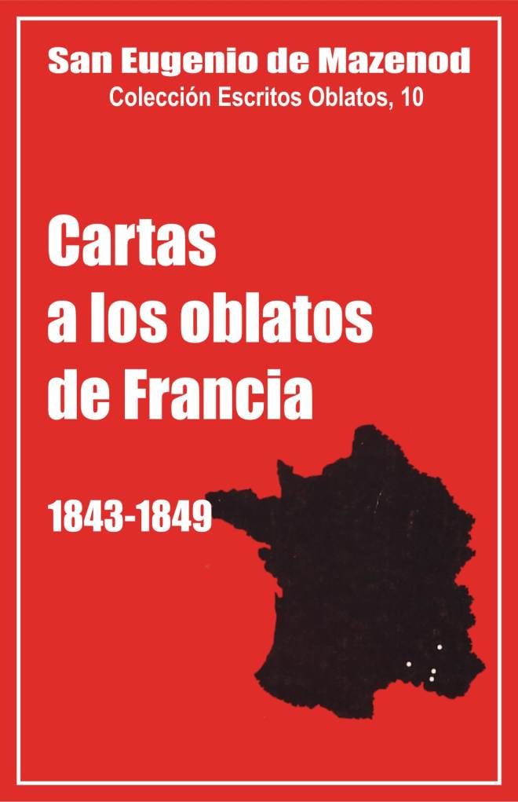

Palo Gordo
2019
Escritos Oblatos: - 01 - 02 - 03 - 04 - 05 - 06 - 07 - 08 - 09 - 10 - 11 - 12 - 13 - 14 - 15 - 16 - 17 - 18 - 19 - 20 - 21 - 22

SAN EUGENIO DE MAZENOD
Colección: Escritos Oblatos, 10
Traducido del Francés por
Santiago Rebordinos omi
Postulación General O.M.I.
Via Aurelia 290
Roma – 1985
Palo Gordo
2019
1843 - 1844 - 1845 - 1846 - 1847 - 1848 - 1849
El décimo volumen de los Escritos Oblatos comprende 246 cartas escritas por el Fundador a los Oblatos de Francia durante los años 1843 – 1849.
Una centena de esas cartas tratan del reclutamiento, de los noviciados y la formación de los Oblatos; eso pone bien de relieve el gran acontecimiento que caracteriza este período y que dará un impulso decisivo a la expansión de la Congregación: el salto prodigioso hacia adelante en el crecimiento del personal y en la extensión de la Sociedad. Durante los siete años que separan los capítulos generales de 1843 y de 1850 el número de los Oblatos pasa de 68 a 223. Se constata, pues, un crecimiento de 220 %, porcentaje que nunca más será superado en el futuro [1].
¿Cómo explicar esa avalancha de jóvenes hacia los noviciados de la Congregación de los Oblatos de María Inmaculada? [2] El movimiento parece iniciarse después de la aceptación de las misiones de Canadá y de Inglaterra en 1841 y se acelera poco a poco a medida que los jóvenes van conociendo la Sociedad por sus contactos con los Oblatos predicadores, profesores, novicios y escolásticos.
El noviciado de N.-D. de l’Osier, y el de Nancy después de 1847, acogen a 17 novicios en 1841, a 15 en 1842, a 14 en 1843, a 20 en 1844, a 28 en 1845, a 21 en 1856, a 73 en 1847, a 41 en 1848, a 37 en 1849. El año 1847 aparece evidentemente como el año del milagro: 73 entradas. ¿Qué pasó? Por primera vez la Congregación y sus obras son conocidas en casi todos los seminarios de Francia y de Bélgica, gracias a la gira de reclutamiento que hace, desde fines de 1847 a comienzos de 1848, el P. Leonard Bauveux, ex sulpiciano francés que ingresó en los Oblatos de Canadá en el mes de agosto de 1842.
La llegada de esos numerosos postulantes causa muchos problemas, de alojamiento primero, luego de profesores, pero sobre todo de dinero para alimentar y vestir a toda esa gente. La Congregación vivía ya pobremente en 1843 – 1846, el Fundador habla a menudo entonces de deudas y de dificultades de orden económico, pero después de 1846, el mantenimiento de las casas de formación, el financiamiento de las obras emprendidas en N.-D. de Bon Secours, la compra de la casa de Nancy, los arreglos en N.-D. de Lumières y en la casa de los misioneros de Limoges, vacían la caja del P. Tempier. Se pide dinero de todos lados. El 5 de abril de 1847, el Fundador solo consigue 1.000 francos para enviar al P. Gaudet, ecónomo de N.-D. de l’Osier, para la compra de camas y mantas. El 10 de junio siguiente, escribe al P. Léonard: "confieso que la dificultad que nos causa el éxito de tu misión no me hace derramar lágrimas. Me consuelo de la preocupación de nuestro buen Padre Tempier que no para de decirme: detén a ese fierabrás que nos acorrala y va a consumar nuestra ruina. Te imaginas que le río a la cara cuando él se rasca la frente, y acaba riéndose él mismo reconociendo que le has tomado por la palabra."
Sin embargo el Fundador tiene que rendirse a la evidencia. El 12 de agosto de 1847 invita al P. Vincens a admitir en principio a todos los postulantes que se presentan, pero después de un serio examen y dando preferencia a los más avanzados en los estudios. Se aceptan así muchos diáconos y aun sacerdotes que van a recibir su obediencia sin pasar por el escolasticado. A pesar de la presión que se hace sobre el Superior General para poner fin a la gira del P. Leonard [3], él no se atreve a detener esta "pesca milagrosa", este "momento de gracia". Para aligerar los gastos hace cerrar, sin embargo, en el otoño de 1847, los juniorados de Lumières y Bon-Secours. El 27 de octubre pide finalmente al P. Leonard suspender su gira. Esta vez ya no se ríe. "Evidentemente, escribe, hay que bajar el pabellón sea cual sea nuestro entusiasmo. Suspende, pues, tu misión tan hermosa. Llorando lo digo, confieso que nunca me ha costado tanto un sacrificio. ¡Verse forzado a rechazar la ayuda de Dios, cerrar la fuente fecunda que hubiera alimentado tan poderosamente todas nuestras misiones, es duro, es desgarrador! Y precisamente esto en el momento en que el campo del Padre de familia se agranda ante nosotros. Tregua de pena, no se puede franquear los límites de lo posible [4].
Pero, apenas una semana después de haber recibido la orden de suspender su gira, el P. Leonard recibe una contraorden, formulada así por el Fundador, siempre atento a los signos de los tiempos: "Mi querido P. Leonard, a nuevos hechos nuevos consejos. La consideración de nuestra miseria me había decidido a escribirte que suspendieras tu gira de reclutamiento, pero he aquí que me acabo de enterar que un reclutador tan hábil como tú está a punto de recorrer todas las diócesis de Francia para atraer hacia él a todos los eclesiásticos de buena voluntad que quieran asociarse a la obra para la que él predica. No hay, pues, que dudar, sería inútil pasar después de él, interesa por tanto adelantársele. Engrasa, pues, tus botas, mi querido P. Léonard, o por mejor decir, toma en la mano tu cruz y marcha a la conquista de los sujetos que la Providencia nos destina... En cuanto sea posible atrae a los que ya están en las órdenes a fin de esperarlos menos tiempo después del noviciado" [5].
El reclutador engrasa tan bien sus botas que, seis semanas más tarde, envía ya como regalo de Navidad una lista de candidatos dispuestos a entrar en l’Osier cuando se los pueda acoger. El Fundador agradece el 25 de diciembre y escribe: "Decididamente tienes un encanto que cautiva a todos aquellos con los que tienes relación. Tienes también el talento de cosechar en el campo de otros. Hubiera creído que en algunas diócesis, cuyos seminarios están confiados a Congregaciones, las vocaciones se dirigirían a ellas, y ahí mismo tú encuentras hombres de buena voluntad que te siguen. ¿No es una lástima que no descubras también en tus peregrinaciones algún tesoro para alimentar y proveer a todas sus necesidades? Esa es la pesadilla del P. Tempier, me ha probado que no tenemos con qué alimentar a tanta gente, y que pronto no sabremos dónde albergarlos; este último punto me inquieta menos que el primero... Si no hubiera el peligro de ver enfriarse la buena voluntad de los que han sido tocados por tus palabras, diría que sólo habría que encaminarlos hacia l’Osier en el mes de marzo o abril, pues sólo entonces habrá algún vacío por la profesión de cierto número de novicios..."(Carta n 960).
El P. Leonard vuelve a Canadá en el verano de 1848. La Revolución, que marca el fin de la monarquía de julio, crea incertidumbre sobre la suerte de los religiosos y sobre todo agrava también la situación financiera de la Congregación. Hay que cerrar el noviciado de Nancy [6] e imponer también restricciones a todas las comunidades. El 16 de octubre de 1849, por ejemplo, el Fundador escribe al P. Dassy, superior de Nancy, no contar más con la ayuda de la administración general: "Te declaro que no nos será ya posible enviar un céntimo. Ha sido decidido que las casas tienen que bastarse o fundirse." [7]
La gira de reclutamiento del P. Leonard fue ciertamente un momento de gracia para la Congregación, hay que reconocerlo con Mons. de Mazenod, hay que constatar igualmente que éste no recibía en vano las gracias del Señor. Él puso inmediatamente al servicio de la Iglesia ese batallón de jóvenes misioneros. De 1843 a 1849, y sobre todo en 1847-1848, acepta un número imponente de fundaciones: tres en Francia: N.-D. de Bon Secours (1846), Nancy y Limoges (1847); cinco en Inglaterra: Grace-Dieu (1845-1846), Everingham (1847), Aldeham (1848), Maryvale y Manchester (1849); cinco en Canadá y Estados Unidos: Saguenay y Bytown (1844), Río Rojo (1845), Montreal y Pittsbourgh (1848), y sobre todo las misiones de Oregón y de Ceilán en 1847, de Argelia y de Texas en 1849. Mons. de Mazenod hace a menudo esas fundaciones antes de poder contar con misioneros ya formados. Sus colaboradores no siempre compartían sus ideas al respecto, él deplora a veces su falta de audacia y su estrechez de miras. En 1843, por ejemplo, es el P. Guigues, superior de l’Osier, quien se queja de la escasez del personal de su casa y censura al P. Casimiro Aubert por la fundación de una casa en Inglaterra. El P. Guigues recibe como respuesta, el 18 de febrero, esta carta en la que el Superior General no tiene pelos en la lengua: "Sé que no logro tener la dicha de verte entrar en mis puntos de vista. Digo bien, te obstinas en considerar las cosas sólo desde el punto de la circunferencia donde te encontráis.
Todo debe ceder, según tu opinión, al interés local que te sientes llamado a defender. Yo no tengo que juzgar del mismo modo y he terminado consolándome de tu desacuerdo por la costumbre de no encontrarte nunca conforme con mi parecer. Así, aun reconociendo que sería ventajoso poder ofrecer a nuestras casas abundants sujetos, creo que, antes que dejar escapar la ocasión que se presenta de abrir a nuestra Congregación la puerta de tres grandes Reinos, es mejor dejarlas en suspenso momentáneamente, persuadido que no hay un solo miembro de la Sociedad que no quiera multiplicarse de algún modo para ofrecer esta ventaja a la Sociedad y ampliar la esfera del bien inmenso que está llamada a realizar. Es un esfuerzo pasajero del que se verá bien resarcida cuando muy próximamente esos países lejanos se basten a sí mismos..." (cf. Carta n. 789).
En 1845 es el P. Tempier el que se opone al proyecto de fundación de N.-D. de Bon Secours. El Fundador escribe al P. Courtès, el 4 de enero: "Este año he tenido el consuelo de recibir la profesión de uno de nuestros encantadores irlandeses, rodeado de sus veintidós hermanos... Así la familia crece poco a poco, y es muy necesario pues las necesidades son muchas y muy urgentes por todas partes. Hasta tal punto que ayer en el Consejo estuvimos a punto de renunciar a la preciosa fundación de la Blachère. Sobre todo Tempier opinaba fuertemente que abandonáramos ese proyecto, no solamente porque carecemos de sujetos, sino también porque no tenemos dinero, y nos es imposible meternos en gastos de una construcción muy costosa. Yo combatí enérgicamente esa opinión que no solo iba a impedir a la Congregación hacer un gran bien conforme a su instituto, sino que nos privaba de golpe de un recurso con el que debíamos contar para alimentarnos de sujetos. La experiencia nos prueba que en todos los lugares donde estamos establecidos, hemos atraído hacia nosotros a buen número de excelentes sujetos... Así nos interesa extendernos para no morir de muerte natural." [8]
Recorriendo la correspondencia de los Oblatos en 1847-1849 se siente un cierto malestar en la mayoría de los superiores de las casas oblatas de Francia. Todos piden en vano Padres y Hermanos para completar el personal de su casa, y dinero para pagar a los obreros y los materiales de los trabajos hechos para albergar los escolásticos (N.-D.de Lumieres) [9] y los novicios (de l’Osier y Nancy) [10], o para terminar las construcciones y las reparaciones ya comenzadas (Bon Secours, Limoges, Ajaccio).
Se cuestiona al P. Tempier; se lo acusa de negligencia, de falta de interés por las casas de Francia. Le escriben sobre el particular numerosas cartas [11], ora malignas [12] ora lisonjeras [13], con el fin de obtener algo. Las quejas van a menudo en relación con las nuevas fundaciones que impiden a las primeras desarrollarse. He aquí, por ejemplo, lo que escribe al Fundador, el 21 de agosto de 1848, el P. Burfin, superior de Limoges, que no consigue dinero para acondicionar una capilla: "Es mejor despedir dos novicios que disgustar a cuatro Padres... Yo no tengo el talento de persuadir a los otros que el fervor consiste en celebrar la misa sobre una ventana y helarse durante el invierno. Cuando estemos en las riveras del Río Rojo, haremos como se hace allí... Si tomamos el Lemosín por el Oregón perderemos el mapa". El P. Magnan, superior del seminario mayor de Ajaccio, pedía desde hacía tiempo una visita del Fundador o del P. Tempier y sobre todo profesores, y he ahí que el P. Casimiro Aubert le anuncia que el P. Tempier pasará cerca de Córcega sin detenerse, de viaje para Argelia con miras a una fundación. El P. Magnan responde, el 13 de diciembre de 1848: "... Me he ocupado justamente un cuarto de hora del R. P. Tempier, que atraviesa nuestro mar en busca de un nuevo cielo donde se quiere alojar una nueva colonia; ha pasado estos últimos días por el borde de nuestra isla, yendo a Blida... Me alegro por este nuevo proyecto, aunque no hasta la embriaguez, pero en fin, como África ha sido colonizada por nosotros, no se pasará siempre al lado quemándonos la cortesía, tendremos alguna importancia en el mapa, aunque sólo sea por ofrecer abrigo en las tormentas del Mediterráneo..."
Estos sacrificios impuestos por el Fundador a sus hijos más cercanos, permitieron, no obstante, a la Congregación extenderse en Francia hacia el Oeste y el Norte, y sobre todo en el extranjero. En 1850, trabajaba ya en cuatro continentes; durante varios decenios no hará más que reforzar sus posiciones en todas partes.
El interés principal de Mons. de Mazenod, durante los años 1843-1849, se puso, pues, en el reclutamiento, en la formación de los novicios y los escolásticos, en la extensión de la Congregación. Sin embargo, en esta colección de los Escritos Oblatos, las cartas que se refieren al reclutamiento y a los noviciados (alrededor de 70 cartas), superan con mucho en número e importancia a las que tratan de la formación de los escolásticos (unas veinte) o de las nuevas fundaciones en Francia y el extranjero (unas 35).
Los escolásticos, en efecto, no causaron mayores problemas, a no ser en cuanto al alojamiento y el mantenimiento. La mayoría compartía los locales del seminario de Marsella con los seminaristas diocesanos. El número de éstos no aumentó antes de 1850, pero el de escolásticos explotó en 1847-1848: 44 oblatos. Ya durante el año 1844-1845 hubo desacuerdo entre los dos grupos de estudiantes y el consejo general en la sesión del 12 de junio de 1845 no encontró por el momento ninguna solución radical al problema. Se envió sencillamente los filósofos al Calvario, a N.-D. de l’Osier o a N.-D. de Lumières. En 1847-1848 se propuso agrandar N.-D. de Lumières, pero el proyecto no se levó a cabo por miedo a las autoridades civiles del departamento. Sólo en 1852 el P. Tempier compró los terrenos donde se construyó el escolasticado de Montolivet abierto en 1854.
Las nuevas fundaciones tampoco causaron mucha preocupación al Fundador. Sin embargo era él quien se relacionaba con las autoridades religiosas diocesanas para las tres fundaciones de Francia, pero se trataba en Viviers de su hijo oblato Mons. Guibert, en Nancy de su amigo Mons. Menjaud, mientras que en Limoges fue Mons. Buissas quien tomó la iniciativa y pidió a los Oblatos. En el extranjero es también el Superior General quien trata directamente las fundaciones ofrecidas en Ceilán y en Argelia, pero en Inglaterra, en Canadá y en Estados Unidos no hace más que aprobar los proyectos del P. Casimiro Aubert o del P. Guigues. El Fundador habla bien de las misiones extranjeras en unas treinta cartas, pero es sobre todo para anunciar a sus corresponsales la partida de algunos misioneros, para admirarse del celo de éstos y de su espíritu de sacrificio, algunas veces para ponerlos como ejemplo a Padres poco generosos. "En nombre de Dios, escribe por ejemplo, al P. Viala al que no le gustaba el clima de Limoges, calma tu espíritu, recurre para ello a pensamientos sobrenaturales... Piensa que varios de nuestros hermanos lo han abandonado todo y atraviesan los mares para obedecer esa voluntad divina que se les ha manifestado por los mismos superiores que te mantienen en tu puesto. Los que entre ellos duermen sobre la nieve, se arrastran sobre los hielos, y no tienen más alimento que un poco de pan y, en los días buenos, un trozo de tocino para untar, no se quejan de su suerte y entregan su salud como todos hemos hecho, como todos debemos hacer, a la Providencia de Dios que nos gobierna... Te ruego, pues, mi querido Padre, recupera el ánimo, uno lleva por todas partes consigo su temperamento, no se ha dicho que tú no recuperes la salud tan bien en Limoges como en otra parte [...] El P. Ricard, que estaba moribundo cuando fue elegido para ir a fundar la misión de Oregón, puso toda su confianza en Dios, y me escribe que nunca se sintió tan bien y aun siendo calvo, no se ha acatarrado ni un solo día, a pesar de que, durante su largo viaje, sólo ha dormido en la tierra y a menudo en el barro" (Cf. Cartas n. 979 y 982).
Temas secundarios
Podrían sorprender algunas omisiones en estas páginas. En los volúmenes precedentes el Fundador hablaba frecuentemente de las muertes y de las dispensas de votos, mientras que aquí sólo se encuentran breves alusiones. Sin embargo ha habido 10 muertes [14] de 1843 a 1849, 21 salidas de la Congregación [15] y algunos otros Padres que causaron preocupación a los superiores [16]; pero estos casos afectaron menos la sensibilidad del Superior General que no conocía ya personalmente a todos los Oblatos; además estos hechos ocurrieron casi todos lejos de Marsella. Las dispensas de votos, concedidas por el consejo general presidido siempre por el Fundador, vinieron a ser con el tiempo más bien decisiones administrativas que hicieron sufrir menos su corazón.
Se continuó entonces con la predicación de misiones populares, aunque a un ritmo reducido, por falta de predicadores. Se nota una baja sorprendente al respecto en el interés del Fundador. En 1843 se alegra con el pensamiento de que los Oblatos predican a la vez en siete diócesis francesas, y en Inglaterra, en Irlanda, en Canadá y en Estados Unidos, pero solo habla de las misiones en 7 cartas, en 17 en 1844, luego en tres o cuatro solamente durante cada uno de los años siguientes. En realidad una crisis golpea entonces ese ministerio esencial. Todos los misioneros con experiencia, cuyos nombres figuraban frecuentemente en los volúmenes precedentes de los Escritos Oblatos, dejan ese ministerio por otros trabajos urgentes. Los Padres Honorat y Guigues salen para América, el P. Vincens es nombrado maestro de novicios en l’Osier, el P. Bernard, capellán de N.-D. de la Garde, el P. Dassy, superior en la diócesis de Nancy, donde no se predican ya misiones parroquiales, en 1849 el P. Martin es enviado como superior a Argelia y el P. Mille, superior en N.-D. de Bon Secours, deja la Congregación por un conflicto de orden económico que lo opone al Fundador y al P. Tempier.
Sólo quedan algunos Padres de menos edad, como los PP. Hermitte, Burfin, Cumin, etc., para mantener las tradiciones, a la espera de nuevos apóstoles. El Fundador se da cuenta de esta laguna que se va agravando. En la primavera de 1846, decide crear una escuela de formación para la predicación, con miras a preparar "por el estudio, al santo ministerio que queda diariamente comprometido por la inhabilidad de aquellos que lo ejercen sin experiencia, con poca doctrina y ningún escrito" [17]. Una decena de Padres participan en la primera sesión, de julio a fines de octubre de 1846 en Parménie, bajo la dirección de los Padres Vincens y Magnan [18]. Pero la llegada de muchos novicios a l’Osier, donde el P. Vincens es maestro de novicios, y la muerte del P. Moreau en Ajaccio, reemplazado por el P. Magnan, no permiten repetir la experiencia durante algunos años.
El Fundador habla poco de él mismo. No obstante uno puede darse cuenta que sus ocupaciones aumentan de año en año. Se excusa a veces de tardar mucho en contestar las cartas debido a sus ocupaciones demasiado numerosas y por el paso de muchos visitantes. Sobre todo, en 1847-1849, se encuentra sin secretario [19], habiendo enviado al P. Casimiro Aubert a Inglaterra, donde la entrada de numerosos novicios y algunos proyectos de fundación hacían su presencia indispensable. Sí queda en Marsella el más precioso y más fiel de los colaboradores, Tempier, pero ¿qué servicios puede esperar del superior del seminario-escolasticado, del vicario general, del ecónomo de la diócesis y de la Congregación, del empresario que inspecciona todas las construcciones de iglesias y de conventos en Marsella y que, cada año, debe recorrer Francia e incluso Argelia para nuevas fundaciones o construcciones asumidas por los Oblatos? "Arránquese, pues, un momento, se lo ruego, del abismo de ocupaciones en que está sumergido", le escribe, el 2 de octubre de 1848, el P. Martín, encargado de alojar en Lumières a un grupo de escolásticos" [20].
Se encuentran algunos otros detalles respecto a los viajes poco numerosos efectuados por el Fundador [21], sobre sus preocupaciones y sus situaciones personales en el momento de la revolución de 1848 y ante la epidemia de cólera en Marsella en 1849, etc. Se está lejos de los años de crisis (1826-1835) en que no podía ocultar sus problemas personales; aquí se lo ve ocupado por entero en los asuntos de la diócesis y de la Congregación [22].
Corresponsales
En 1843-1849 el abanico de corresponsales se va abriendo se cuentan 33 en este volumen, mientras que en el precedente solo se hallaban 18. Los corresponsales privilegiados continúan siendo los superiores, en particular el P. Courtès que recibe 61 cartas, Dassy: 33, Vincens: 32, Tempier: 22, Semería: 18, Moreau: 15, Guigues, mientras era superior de l’Osier: 5, Magnan, después de su nombramiento para Ajaccio: 5, y 9 el P. Leonard, durante su gira de conferencias. Sólo quedan 46 cartas para los otros 24 corresponsales, en general nuevos profesos o Padres jóvenes a los que el Superior General quería felicitar o alentar.
El Fundador gobierna siempre sobre todo por intermedio de los superiores a los que no cesa de dar consejos y a los que frecuentemente reprende con su energía nativa; uno queda sorprendido particularmente del modo como trata al P. Dassy, considerado demasiado exigente con sus colaboradores, o de cómo reprende a los que ejercen una presión demasiado fuerte para recibir colaboradores o que prefieren a tal sujeto sobre tal otro. Hace también responsables a los superiores de la regularidad religiosa, de la pobreza, de la caridad fraterna y más a menudo de la obediencia. No obstante, esos puntos de la vida religiosa vuelven relativamente poco a menudo a los escritos del superior general, porque entonces se producen pocos escándalos y sus preocupaciones están en otras cosas. Sus últimas cartas del año 1849 dejan entrever sin embargo un endurecimiento futuro en sus exigencias al respecto, y en particular sobre la obediencia. Golpe tras golpe, varios Padres de l’Osier rechazan la obediencia que les pide. Escribe entonces al superior: "Mi buen Padre Vincens, no estoy dispuesto, como tú, a permitir tales caprichos... He aquí dos a los que hay que consultar antes de darles una misión para saber si les gusta... En cuanto a mí, no me siento capaz de gobernar la Congregación en tales condiciones. Quienquiera que no se establece en la perfecta indiferencia y en la voluntad de no tener otra que la de los superiores, no es para nosotros, que se retire" [23]
Si el árbol de la Congregación crece de una manera sorprendente durante los años 1843-1849, parece, en las últimas cartas de este volumen, que se acerca el tiempo en el que habrá que podar ampliamente las ramas que no dan fruto.
Yvon Beaudoin
785. Al Señor Courtès, superior de los Misioneros, en Aix. Bocas del Ródano
El Fundador está satisfecho de los sentimientos y deseos del P. Courtès. Los Oblatos predican misiones, al mismo tiempo, en 7 diócesis francesas, en Inglaterra, en Irlanda, en Canadá y en Estados Unidos.
Marsella, 4 de enero de 1843.
Mi querido Courtés, he leído con un indecible gozo la carta que acabas de escribirme con motivo del año nuevo. Tenía necesidad de escuchar de tu boca los sentimientos que me expresas tan bien y que corresponden a los que nunca he dejado de tener para contigo. El amor imprime carácter en mi alma, es indestructible. Esto responde a todo.
Tengo tan poco tiempo que es preciso que me apresure a decirte que honraré tu propuesta para la misión de Simiane; puedes anunciarla para el domingo 22. La de Roquebrune tiene que terminar el 15. Pienso que harás bien reservándote para la Roque; el P. Martín y el P. Rouvière darán la de Simiane. Luego podrán unirse a ti para la Roque en la que creo serán necesarios tres misioneros.
No creo que haya una Congregación que presente un espectáculo tan emotivo en la Iglesia. Todos sus miembros están empleados al mismo tiempo en diversos países y en los dos mundos para atraer las almas a Dios y hacer guerra a ultranza al infierno. Misiones en las diócesis de Marsella, de Fréjus, de Aix, de Aviñón, de Valence, de Grenoble, de Ajaccio, en Inglaterra, en Irlanda, en Canadá y en los Estados Unidos, ¡es encantador!
Acabo de recibir cartas de Longueil que habría que imprimir. El P. Telmon y el P. Dandurand, que tendría que hacer sus votos para Navidad, han hecho verdaderas maravillas en la diócesis de Nueva York; también el Obispo [24] querría confiarles la iglesia francesa de su ciudad episcopal; mientras que el obispo de Toronto [25] los llama hacia sí para confiarles la misión de los iroquesas. A los tres sacerdotes novicios, de los que cada día están más contentos, se ha unido un acólito de segundo año de teología, y un profesor del colegio [26]; varios otros han hecho ya trámites para ser admitidos, y el Obispo aplaude y facilita a pesar de la penuria de sujetos para las parroquias. ¡Qué ejemplo para algunos de nuestros prelados!
Tengo que dejarte para ir a vísperas. Son casi las diez. Adiós, te abrazo deseándote todas las bendiciones de Dios durante este año y siempre. Saludo con afecto a nuestros buenos Padres André y Roux.
+ C. J. Eugenio, Obispo de Marsella
P.D.: Para responder a un artículo de tu penúltima carta, te diré que persisto en creer que no nos convenía hacer el menor trámite para apartar al Sr. Arzobispo de enviar los Jesuitas a las misiones de pueblos pequeños. Pero si era contrario a la delicadeza tomar la iniciativa, nada se oponía a que expresaras tu sentimiento cuando se te pusiera en la ocasión.
786. [Al P. Courtès, en Aix] [27]
Algunos Oblatos faltan al respeto debido al Fundador.
[Marsella], 2 de febrero de 1843.
Hay algo de verdad en las respuestas categóricas del P. Guigues, aunque lleva un poco lejos las consecuencias de su opinión. Me ha molestado que hayas borrado el último número. Presumo que se refería a mí. No se me ha acostumbrado a creer en la moderación y en el respeto que tendría que imponer a cada uno de aquellos que he visto nacer tanto mi posición frente a ellos como mi carácter. Hay sacrilegios de diversas clases; en el lugar de algunos de mis hijos, nunca me habría sentido culpable del que han cometido con una ligereza imperdonable. No puedo responder ya que no he podido leer las líneas borradas.
787. Al Señor Courtès, superior de los Misioneros, en Aix. B. d. R.
El joven enviado por el P. Courtés saldrá para el noviciado. Legado del canónigo Honorat.
Marsella, 12 de febrero de 1843.
Mi querido Courtès, me he caído de las nubes, viendo al sujeto que me ha traído tu carta. ¿Qué vamos a hacer con este santo varón? Está corroído de escrúpulos y no muestra en su cara el signo de la inteligencia. A pesar de todo lo que hayas podido decirle, vino a proponerme seriamente seguir el consejo del P. Jesuita que le había dado los ejercicios espirituales, es decir, quedar seis meses o un año libre y sin tareas para ver si su mal curaría. Yo estaba tentado de aconsejarle volver a Cotignac. Sin embargo, después de todos los trámites que hemos hecho, no he querido volver atrás y le dije que el consejo del buen Padre se parecía mucho al consejo de un médico que dijera a su enfermo que no tomara ningún remedio y continuara con el régimen que lo mantenía enfermo. Después de un año serás tal cual eres, mientras que bajo un régimen de obediencia o te curarás, o si no te curas llegarás a tranquilizarte obrando sólo por obediencia. En resumen, consiento en enviarlo al noviciado, pero temo que no hayamos hecho una gran adquisición [28].
Registrando en mis papeles, he encontrado una carta del difunto M. Honorat que es una pieza importante. Te la envío para que la examines y se la hagas ver a Tavernier. Si el heredero de ese buen canónigo tiene conciencia, hará honor a las intenciones de su tío. Se la mostrarás sin desprenderte de ella. Sería lo de menos que nuestro Honorat haya obtenido ese testimonio de amistad de un tío que siempre le había tenido afecto. Si los libros han desaparecido estaríamos a tiempo de dar el equivalente.
Adiós, es todo lo que puedo decirte hoy por estar tan apurado.
Yo había hecho algo por la familia Honorat. Es a lo que se refieren los agradecimientos del Canónigo.
788. Al P. Moreau, en Ajaccio
Regularidad de la comunidad. Correspondencia del P. Lagier con las religiosas de Marsella.
[Marsella], 15 de febrero de 1843.
Lo que me dices de tu comunidad me llena de alegría; no esperaba menos de tu buen espíritu y de tu celo. Es un espectáculo digno de las miradas de los ángeles y de los hombres una comunidad bien regular, que camina ante Dios en el orden de sus deberes. Benditos seáis todos y que podáis servir de ejemplo a otros que no han llegado aún a ese punto de regularidad, indispensable, sin embargo, para el cumplimiento de sus deberes.
He pensado siempre que la dirección del buen P. L[agier] era una verdadera extravagancia, una aberración de su espíritu, por eso yo había hecho también yo lo que había podido indirectamente para apartarlo de eso. Cuanto el P. Tempier, en quien él tenía cierta confianza, ha podido decirle no ha servido gran cosa. Sin embargo ese buen hombre pierde un tiempo precioso con verdaderas pamplinas. He aquí lo que he hecho para dar fin a una parte de ese desorden. Me hice enviar las cartas que estaban en manos de algunas religiosas a las que tenía la manía de querer dirigir. Mi trabajo no está terminado pero lo continuaré haciendo lo mismo con otras y les prohíbo continuar ese charloteo. No podrás creer lo fútil de esa correspondencia, es para dar pena. He realizado esta operación en el primer monasterio de la Visitación, con motivo de la visita que les hice para san Francisco de Sales. La próxima vez que vaya al segundo monasterio, repetiré mi expedición y haré lo mismo con las religiosas de san Carlos. Así sustraeré el alimento que proporciona materia a tanto celo. Quedará la Sra. S, sobre la cual no tengo la misma autoridad y además ella sería incurable. Qué lástima que se engañen de ese modo con semejantes pamplinas.
789. Al P. Guigues, en N.-D. de l’Osier
Reproches al P. Guigues que nunca comparte las miras del Fundador y sólo mira por el bien de su casa. Asuntos varios.
[Marsella] ,18 de febrero de 1843.
Sé que no tengo la dicha de verte entrar en mis miras. Por mucho que te diga, te obstinas en considerar sólo las cosas desde el punto de la circunferencia en que te encuentras.
Según piensas, todo debe ceder al interés local que te crees llamado a defender [29]. Yo no tengo que juzgar igual y termino consolándome de tu disenso por la costumbre de no encontrarte nunca acorde conmigo. Así, aun reconociendo que sería ventajoso poder ofrecer a nuestras casas abundante personal, yo creo que antes que dejar pasar la ocasión que se presenta de abrir a nuestra Congregación la puerta de tres grandes Reinos, es mejor dejarlas momentáneamente incompletas, persuadido de que no hay un solo miembro de la Sociedad que no quiera de algún modo multiplicarse para conseguir esta ventaja a la Sociedad y ampliar la esfera del bien inmenso que ella está llamada a realizar. Es un esfuerzo pasajero del que se verá muy resarcida cuando muy próximamente esos países lejanos se basten por sí mismos.
No querría, pues, que censuraras al P. Aubert que cumple su tarea con inteligencia y dedicación. Siempre hay momentos penosos en las fases de una Congregación como en el curso de la vida. Lo esencial es poner la confianza en Dios y pedirle sus luces para aquel que gobierna sin poner nunca obstáculos a las decisiones que debe tomar por el interés general, aunque cueste alguna desventaja para tal o cual localidad.
No te inquietes tampoco por la carta del hermano de Pianelli. No olvido que un prelado que conoce bien el país me decía que no hay nada de que un corso, incluso sacerdote, no sea capaz para lograr sus fines. Escribiré al P. Moreau y te daré a conocer su respuesta.
Adiós, el Padre Tempier responderá al tema de las finanzas; yo encuentro que los gastos son excesivos.
790. Al Señor Semeria, superior de los Misioneros en Vico. Córcega
Excusas por el retraso de su respuesta. Vendaval en el mar al volver de Argelia. Proyecto de visita a Córcega. Gastos de la casa de Vico y deudas de la Congregación.
L.J.C. et M.I.
Marsella, 18 de febrero de 1843.
Mis queridos Padres Semeria, Deveronico, Luigi y Gibelli, encuentro todavía en mi escritorio vuestra carta colectiva del 29 de diciembre. Se encontraba oculta bajo una cincuentena de otras cartas que me habían impedido verla. Demasiado deseo, queridos hijos, no pasar por insolvente para diferir por más tiempo hacer honor a vuestra firma. Estáis tan a menudo presentes en mi mente y vuestros nombres vienen tan frecuentemente a mis labios, que sería duro para mi corazón que tanto os ama, que pudieseis, no digo acusarme, pero ni siquiera sospechar de un olvido del que soy incapaz. Sabéis lo que pasa, en el momento de contestar una carta, ocurre un trastorno, se suceden cien cartas y, si no es cuestión de urgencia, se deja para otro día la ejecución del proyecto del que se ve uno apartado aún por otras ocupaciones. Esta vez había encargado al P. Tempier expresaros mi sentimiento sobre la propuesta que habéis presentado al Sr. Raffaeli. No repetiré lo que él os habrá dicho.
Os habéis alarmado demasiado sobre el peligro de mi travesía de África. El vendaval que nos obligó a hacer escala en Palma era un impulso del Espíritu Santo que nos empujó a esa ensenada para reconciliar con Dios ahí a cinco desdichados cristianos que sin ese auxilio habrían muerto en su pecado [30]. Así que sólo tengo que dar gracias al Señor que me ha elegido para ser instrumento de sus misericordias para con las almas que sin duda tenía predestinadas para la gloria.
No debéis dudar del placer que sentiré al estrecharos contra mi corazón si Dios quiere que ejecute el proyecto de ir a veros en Córcega. Tengo de veras esa voluntad, aunque me he malquistado un poco con el mar en mi último viaje, tratamos continuamente de este asunto con nuestro querido obispo de Viviers, cuando nos escribimos, pero me parece a veces un sueño. Espero, sin embargo, que se realizará, no quiera Dios que intentemos comprometeros frente a vuestros pueblos.
¡Ay!, demasiado sabía yo que os engañabais cuando imaginabais que la presencia del Sr. Obispo de Ajaccio y de todos los que van a vuestra casa con esa ocasión no os causaría un gasto superior a lo que el Prelado ofrecía a vuestro ecónomo. Me decís ahora que hay una diferencia de la mitad en detrimento vuestro, quizás os equivocáis todavía. Se os han hecho promesas, pero vuestras provisiones, el carnicero y el panadero no se pagan con promesas. Todo se paga al contado. Verdaderamente habría que encontrar un medio de redimir esa vejación demasiado molesta, que se repite cada año. Todavía si en fin de cuentas obtuvieseis el título de Nesa para poner en marcha vuestro tren… Pero es también una promesa. Veis que no olvido lo positivo. Es que estoy espantado al ver a la Congregación sobrecargada con una deuda de 200.000 francos, debido a todos los establecimientos que hay que hacer por todas partes siempre a nuestras expensas. Sólo la casa de N.-D. de l’Osier nos ha costado 70.000 francos y la vuestra nos ha costado también bastante. Vayamos, pues, despacio para hacer nuevos gastos. Yo sólo puedo conceder ya lo que es absolutamente necesario. He cometido el error de dar demasiada carta blanca al P. Tempier que siente él mismo haber llegado demasiado lejos, siempre sin embargo con miras al bien.
Adiós, mis queridos hijos, os abrazo y os bendigo a todos.
+ C. J. Eugenio, obispo [de Marsella]
He recomendado al P. Moreau prestar atención a las necesidades de vuestra comunidad.
791. Al P. Courtès, en Aix
Enfermedad de los Padres Martin y Viala. ¿Cómo dar las misiones prometidas? Reparación del campanario de la iglesia de la Misión.
Marsella, 3 de marzo de 1843.
Mi querido Courtès, había diferido escribirte porque quería ver a dónde llevaría el malestar del P. Martin y la enfermedad más grave del P. Viala. Sabes que éste debía ir a dar la misión de Gémenos con el P. Bernard y que me he visto forzado a reemplazarlo por un vicario de la Ciotat. Aun no ha tenido fuerza para celebrar la misa, sin duda tiene que encontrarse muy débil. En cuanto al P. Martin, le había aconsejado que guardara dos días de cama para madurar su catarro. Creo que lo ha hecho. Comprendes en qué aprieto me ponen todos estos contratiempos en vísperas de una misión anunciada y que difícilmente podría diferirse una semana. Sin embargo, si el P. Martín no estuviera disponible hoy, de lo cual voy a informarme, tú te verías obligado a asumir esta tarea, pues no podrías ir a esperarlo en la Roque solo con el Padre Rouvière.
Me has dado una muy mala noticia informándome del peligro del campanario. Inútil esperar que cualquiera contribuya al gasto, caerá todo sobre nosotros. Entonces tendrás que examinar si la flecha es absolutamente necesaria. No estamos encargados de embellecer la ciudad. Si fuera necesario rehacer esa flecha por el mal estado de la armazón, etc., yo no dudaría en renunciar a ella.
He escrito al P. Martin urgiéndolo a ir a Aix, me ha contestado con una carta ridícula que le ha valido inmediatamente una respuesta severa. Me dice que está más desesperado que yo por los contratiempos que me llegan, pero como no tiene el talento de mandar a las enfermedades, le es del todo imposible ir mañana a Aix. El catarro nasal que le aqueja desde hace quince días le ha debilitado y vuelto impresionable de tal modo que no puede salir al aire libre sin quedar ronco al instante. Si puede caminar la semana próxima, con mucho gusto irá a encontrarte, pero por hoy te sería más carga que útil.
En cuanto al P. Viala lamenta como él no poder... [31]
792. Al Señor Guigues, superior de los sacerdotes de N.-D. de l’Osier, en Notre-Dame de l’Osier, cerca de Vinay. Isère.
Necesidad de hermanos en el Calvario. Éxito de las misiones dadas por los PP. Burfin y Lavigne en la diócesis de Grenoble. La caja general está vacía, no se puede contribuir a nuevos trabajos. Ninguna noticia de Canadá. Numerosas misiones predicadas con éxito.
L.J.C. et M.I.
Marsella, 12 de abril de 1843.
Cómo escribir el miércoles santo en el momento de ir al oficio. Es necesario sin embargo que me dé prisa a decirte que no es aquí a donde hay que enviar al Hno Ramel sino a Lumières. Yo temería que se disipara más en el contacto habitual con tanta gente que acude al Calvario [32]. No se podrían tampoco utilizar sus talentos en una pequeña comunidad como se hará en la comunidad numerosa de Lumières. No es que no se necesite un hermano en Marsella, cuando te haya enviado al Hno. Joubert, sólo les quedará el Hno. Bouquet. Si supiera cómo andáis de hermanos, te preguntaría si tenéis alguno bastante formado para mandarlo a esta casa, pero es necesario que se pueda contar con su vocación y con sus virtudes. Se necesitaría también un hermano cocinero para desembarazarse de esta anciana Babau, a la que sólo se puede mantener por necesidad.
Estoy encantado con lo que me dices de los PP. Burfin y Lavigne, manifiéstales a uno y otro mi suma satisfacción [33]. Dios les ha manifestado que se habían equivocado al desanimarse en Tain. Los hombres apostólicos no deben calcular como los predicadores de profesión o de oficio para expresarme mejor. La propuesta del párroco de St-Hilaire no es muy ventajosa. Si es joven se podría muy bien pagarle su capital en intereses, te responderé más tarde sobre este punto.
En cuanto a la propuesta de construir apartamentos en el tercer piso de la casa de retiros, por más razonable que sea, no puedo adherir a ello, si tienes que contar con la menor ayuda de la caja general. Los gastos de nuestros dos establecimientos de l’Osier y de Lumières han superado con mucho mis previsiones, y nos ponen en una dificultad que no es prudente agravar.
Si has recibido noticias de Canadá te agradecería me lo hagas saber, la última carta es de comienzos de diciembre, piensa en mi inquietud, sabía que el P. Telmon estaba enfermo. Al parecer, se habrá perdido algún navío, si no, ese silencio es inexplicable.
Estoy más al corriente de lo que pasa en Inglaterra. Ya se empieza a hacer el bien en el establecimiento de Penzance. Pero ¿dónde nuestra Congregación no hace el bien? Gracias a Dios, es prodigioso, las diócesis de Aix, de Aviñón, de Marsella, de Fréjus, de Ajaccio, de Valence y de Grenoble pueden dar fe. Que me muestren en Francia una Congregación que actúa en tantos lugares a la vez y acompañada en todas partes con las mayores bendiciones de Dios. Agradezcamos al Señor y pidámosle como recompensa que nos permita hacer aún mayor bien, enviándonos gran número de sujetos aptos para la obra santa que su Iglesia nos ha confiado.
Adiós, mi queridísimo, te deseo muy buenas fiestas igual que a toda la comunidad a la que bendigo con la plenitud de mi corazón.
+ C. J. Eugenio, Obispo de Marsella.
793. Al P. Guigues, en N.-D. de l’Osier
Envío del Hno. Joubert y de un postulante. Formación de los Hermanos, de la que se tiene mucha necesidad en todas las casas.
[Marsella], 24 de abril de 1843.
Mi querido P. Guigues, me rindo inmediatamente a tus deseos. Expido al Hno. Joubert y te envío al mismo tiempo a un joven que entrará al noviciado como hermano [34]. Era cardador de oficio, le he anunciado que probablemente se lo preparará para la cocina. Lo que te recomiendo es que formes bien a los hermanos en la piedad y en las virtudes religiosas. No descuides su instrucción. Durante el año de noviciado el trabajo debe ceder a las atenciones espirituales que se les deben prodigar. Sin eso solo se tienen malos domésticos, hombres exigentes, sin virtud y llenos de pretensiones. Estima de su vocación, adhesión a la Congregación que los educa en el orden espiritual por encima de su condición, pero también humildad, amor al trabajo, cumpliendo su servicio con espíritu de fe, etc. Eso es lo que hay que inculcarles.
Yo creía que éramos más ricos en hermanos en l’Osier. No tienen de sobra en Lumières, y aquí en el Calvario sólo queda el Hno. Bouquet, en Aix solo tienen al Hno. Ferrand, necesitaríamos aún dos en Marsella y uno en Aix.
794. [Al P. Vincens, en N.-D. de l’Osier]
Formación de los novicios. No hay que tolerar las chiquilladas, las travesuras, la falta de seriedad, etc.
[Marsella], 26 de mayo de 1843.
Una de tus expresiones me ha dejado con gran inquietud. Hablas de aturdidos... Hay, pues, en el noviciado una casta de aturdidos. Sabes que me revelas una gran plaga. Un año es ya tan poca cosa para prepararse a un acto tan importante como la oblación, que si se emplea una parte tan mal, uno tiene que encontrarse corto de virtudes y de preparación cuando llegue el día de la coronación. Ideo (...) dormiunt multi [I Cor. 11, 30]. Eso es lo que hace que se vuelvan tan pobres religiosos. Te ruego, no los prives de severas reflexiones. Disculpo las chiquilladas en un pensionado, pero nada de eso en un noviciado, y en un noviciado que solo dura un año. ¿No serás demasiado bueno, demasiado fácil para dejar pasar sus travesuras? Quisiera más seriedad entre ellos, y que no se escuchara desde el pueblo el alboroto que arman en sus recreos. Hay que castigar las faltas ligeras; no debo suponer que se cometen otras.
795. Al Señor Semeria, superior del convento de Vico, en Vico. Córcega.
Hacer elegir un representante de la casa de Vico para el próximo capítulo general.
Marsella, 27 de mayo de 1843.
Mi querido Padre,
Por la presente te notifico que he señalado el capítulo general de la Congregación para el diez de julio próximo, lunes. He decidido que las sesiones del capítulo tengan lugar en la segunda casa de Marsella [35], donde tendrán que reunirse a más tardar la víspera todos los miembros de la Congregación que tienen derecho de asistir a él o que sean convocados especialmente a él.
El primer día libre después de la recepción de esta carta reunirás en vuestra sala de comunidad todos los que según las normas de nuestras santas Reglas deben acudir para el nombramiento de su representante en el capítulo general.
Procurarás darme a conocer esa elección sin el menor atraso para que pueda yo resolver sobre aquellos que yo mismo podría juzgar oportuno agregarle.
+ C. J. Eugenio, Obispo de Marsella,
Superior general
796. [Al P. Courtès, en Aix]
Invitación a alimentar mejor la comunidad de Aix.
[Marsella], 28 de mayo de 1843.
Quiero decirte una cosa en confianza. Me han asegurado que no alimentabas bastante a tu comunidad, que dabas a tu gente la carne en tan pequeña cantidad que no había modo de hacer porciones convenientes, que los sujetos no se quejaban en alta voz, pero que sufrían por ello, sobre todo que se había podido hacer la comparación con lo que se practicaba en las otras comunidades. Examina esto con atención, pues si no hay que hacer gala de abundancia, es indispensable que se dé ampliamente lo necesario. Si fuera verdad que sólo se ponían cinco onzas de carne por comida para toda la comunidad, eso sería evidentemente demasiado poco.
Adiós, queridísimo, te abrazo con todo mi corazón.
797. [Al P. Tempier, en Marsella]
Enviar las cartas del Canadá olvidadas en Marsella.Varias recomendaciones sobre la administración de la diócesis y de la Congregación. Santos Oleos para Córcega, subvenciones de la Propagación de la fe, etc.
L.J.C. et M.I.
Marsella, [36], 29 de mayo de 1843.
Mi querido Tempier, me había propuesto tomar en el legajo de Canadá la carta del Sr. Obispo de Montreal para contestarle, pero parece hecho exprés que las dificultades se acumulan al momento de salir. No encuentro tampoco entre los papeles que he traído conmigo la última carta del P. Honorat, mira si no habrá quedado en mi mesa redonda, si no se encontrará en el legajo de Canadá. Sabes que esos papeles están colocados en la parte de la biblioteca que toca a la puerta del cuartito donde está el armario grande.
Te envío mi respuesta al canónigo Chauvet, hazla copiar en el libro porque quiero que conste mi resistencia a sus primeras propuestas [37].
Quisiera mostrarte la carta que he recibido de Courtès a la que yo he respondido negativamente en todo. Léela y me la traerás la primera vez que vengas [38].
Sufro al ver los santos óleos destinados a Córcega hacer una espera tan larga en mi vestíbulo. Ya que el Obispo no viene más ¿no convendría enviarlos a Ajaccio? Habría que haberlo hecho antes. Lo he dicho frecuentemente.
Me parece poco conveniente que tenga que ser yo quien le exprese al albañil del correo que tiene que cerrar las aberturas que se permitió hacer en mi propiedad. Cuanto más audaz es esa usurpación, menos miramientos merece, te ruego, pues, que acabes. Contigo fue con quien trató, no se atreverá a sostener abiertamente que le has permitido lo que muy positivamente no hemos querido nunca. El Párroco me decía ayer que cuando le mostró su sorpresa por haberse tomado tal libertad, pese a lo que se había convenido, el hombre confesó que no se le había permitido directamente, pero que José de Meyer le había asegurado que no se lo encontraría mal.
No tardes en hacer copiar las circulares que hay que enviar a nuestras casas [39].
He visto en el informe que la Propagación de la fe ha otorgado fondos para diversos establecimientos en Inglaterra, ¿por qué no pedir nosotros para los nuestros? ¿Tendremos que hacer siempre la guerra a nuestras expensas? No estoy ya a tiempo para escribir al P. Aubert para que haga el pedido al pasar por París, pero no habrá que olvidar ocuparnos de este tema cuando él llegue.
He consumido esta mañana la santa Reserva. Mira si el bueno de Lorenzo, aunque su señora asistió a mi misa, continúa encendiendo la lámpara como le había recomendado para los días pasados.
Te envío la carta que he escrito al P. Abad de la Trapa sobre Cas [40]. Léela y ciérrala con cera de España [lacre] y mi sello y hazla franquear. Si sabes terminar la dirección, hazlo. Yo no sé si es por Pierrelatte o por Montelimart.
Adiós.
Que no se olviden de poner la dirección a mi carta al cardenal Vicario, que la envíen al correo sin franquearla [41].
798. [Al P. Moreau, en Ajaccio]
Satisfacción por el orden y la regularidad de la comunidad de Ajaccio. Correspondencia del P. Lagier con las religiosas de Marsella.
[Marsella], 30 de mayo de 1843.
No tengo necesidad de ir hasta el lugar para quedar satisfecho del buen orden y la regularidad que reinan en vuestra comunidad. Conocía bastante tu buen espíritu para estar seguro que bajo tu superiorato todos los pequeños abusos que habían podido deslizarse quedarían pronto reformados. Tus hermanos, por otra parte, no eran gente para oponerse a cuanto pudieras indicar para ayudarlos a adquirir la perfección a la que tienden.
Es enojoso solamente que se encuentre uno entre vosotros que se deja engañar por una ilusión que tiene su origen en un ideal de bien pero que le es nociva en el sentido de que lo aparta de ocupaciones más útiles y más conformes a su vocación. Había querido escribirle sobre el particular, pero he desistido por el temor de encontrar en él una obstinación que de equivocado lo convertiría en culpable. He preferido obrar indirectamente suprimiendo en parte el alimento que se proveía desde aquí a su celo. Si el P. Tempier hubiera hecho otro tanto por su parte, el mal habría quedado curado, pero sea por olvido, sea por distracción, no ha dicho una palabra ni a las Hermanas de San Carlos, ni a las Carmelitas, de las que es el superior y a las que ve frecuentemente, y esas pobres hijas han tenido que continuar su correspondencia mientras que la Visitación se calló o ha debido callarse desde el día que les quité las rapsodias que ellas guardaban preciosamente, y que les prohibí mantener por más tiempo un intercambio de cartas que yo desaprobaba. Si en la dirección particular llevaras a ese buen hombre a ideas justas de deferencia y de obediencia, así como a esa indiferencia religiosa que debería haber estudiado mejor cuando fue encargado de formar a nuestros jóvenes religiosos, entonces podría arriesgarme a atacar la plaza, sin eso temo exponerlo. En cuanto a tus observaciones financieras, nada debe impedirte exigir que las cartas que se le escriben tan frecuentemente sean franqueadas. Pienso incluso que sería faltar a la delicadeza de la pobreza dejar pesar esa carga sobre la Congregación.
799. Al Señor Moreau, vicario general y superior del seminario mayor de Ajaccio, en Ajaccio. Córcega
Delegados de las comunidades de Ajaccio y de Vico al capítulo general; redactar el acta de su elección.
L.J.C. et M.I.
Marsella, 9 de junio de 1843.
Mi querido P. Moreau, te he escrito el otro día y vuelvo a la carga hoy para acusar recibo de la carta por la que me das a conocer el resultado de vuestro escrutinio. Me parece que la cuestión está decidida. En el conflicto que ha tenido lugar es el más antiguo el que debe prevalecer. Pero de ningún modo estoy triste ni por el uno ni por el otro de los competidores, ya que mi intención siempre fue llamarlos a los dos, fuera cual fuera el voto de vuestra comunidad. Les prevengo solamente al uno y al otro que su ausencia no se prolongará más de tres semanas para que previamente tomen sus medidas. Razones de orden y de economía me obligan a tomar estas decisiones. Me agrada convocarlos a mi lado, pero a condición de que no me entristezcan con los pedidos a los que me es siempre muy penoso rehusar.
Mi querido Padre, sabes que una vez indicado el día de la apertura del capítulo, no es posible diferirlo. Presumo que habéis elaborado el acta, en el registro de vuestras actas, de las actuaciones relativas a la elección del representante de vuestra casa en el capítulo. Es de rigor. Si no lo habéis hecho, repara esa omisión. No tengo necesidad de indicarte cómo hay que hacer. Hoy... etc. y harás firmar en el original a todos los miembros presentes en vuestro capítulo particular. Me traerás luego el extracto de esa deliberación firmado por ti para que este documento sea presentado al capítulo y conservado en sus archivos. Te ruego escribas inmediatamente al superior de Vico para que él haga lo mismo. De otro modo vuestros representantes no podrán ser admitidos. Me habría causado sin duda gran placer al ver al buen P. Deveronico, pero las finanzas de la Congregación, realmente agotadas, no me permiten imponerle ese gasto. Por otra parte no tengo razón suficiente para llamarlo al capítulo, estando ya la casa de Vico convenientemente representada por el superior y por el P. Gibelli.
Te ruego manifiestes al Sr. obispo de Ajaccio la pena que he sentido por no poder abrazarlo a su paso por Marsella. Le achaco a él ese pesar, díselo bien, pues si hubiera bajado a mi casa, que es lo mismo que si hubiera bajado a la suya, en menos de una hora yo hubiera estado en el palacio episcopal, mientras que sólo he sabido que estaba en Marsella cuando él ya no estaba ahí.
Adiós, mi buen Padre Moreau. Mil saludos a todos nuestros Padres a los que bendigo como a ti.
+ C. J. Eugenio, Obispo de Marsella.
801. Al R. P. Dassy, sacerdote oblato de la Congregación de los Misioneros Oblatos de María Inmaculada, en N.-D de l’Osier.
Convocación personal al próximo capítulo general.
L.J.C. et M.I.
Marsella, 20 de junio de 1843.
Mi querido P. Dassy,
Estando señalado el capítulo general de nuestra Congregación para el 11 de julio en nuestra segunda casa de Marsella, te escribo la presente para convocarte personalmente a ese capítulo. Tendrás, pues, que presentarte el día fijado, después de haber mostrado esta carta de convocación al R. P. Superior local de N.-D. de l’Osier que arreglará tu itinerario y proveerá al gasto del viaje.
Te saludo y te bendigo
+ C. J. Eugenio, Obispo de Marsella, s.g.
P.D: Al llegar a Marsella, procurarás entregar esta carta al Secretario general del Instituto.
802. Al Señor Tempier, vicario general, superior del seminario mayor. Marsella.
Invitación a una comida con el general d’Hautpoul. Asuntos diversos.
Marsella, 4 de julio de 1843.
Mi querido Tempier, te envío la carta de invitación para el viernes que dirijo al General y su familia [42]. Vendrás ese día a cenar con él a las 6. . Sería preciso que la carta fuera enviada aún hoy y que se esperara la respuesta. Como él tiene que ir a cenar fuera de casa, procurarás que mi carta le sea enviada a más tardar a las 5.
Manda decir a Glaise que venga a tomar las medidas para hacerme anaqueles.
No sé qué arreglos habrás hecho con los mineros, pero me parece que habría que detenerlos para que no exploten por más tiempo la cantera que tiene que facilitar el arriendo del bien de Marcel.
Adiós. No olvides de hacer quitar el retrato de mi tío de la sala capitular.
803. [Al P. Guigues, en N.-D. de l’Osier]
Enfermedad del P. Guigues. Retomar el trabajo prudentemente.
Marsella, 6 de julio de 1843.
He sabido con indecible gozo por tu carta que te has sanado de tu enfermedad, pero no sin inquietud me entero de que te dispones a dar varios retiros en seguida. Nunca hay que querer hacer más o de otro modo de lo que indica el Señor. Al respecto, quisiera que tuvieras en cuenta el parecer de tu admonitor con toda sencillez para no ser responsable ante Dios y la Congregación de las consecuencias enojosas que podrían resultar de ello para una salud que nos es tan preciosa.
804. [Al P. Courtès, en Aix]
La dirección de las religiosas es contraria al espíritu de la Congregación.
[Marsella], 20 de julio [43] de 1843.
Habría sido difícil rechazar la dirección de las Damas de la Esperanza. No obstante, es contrario al espíritu de nuestro Instituto. Quisiera que los superiores eclesiásticos lo comprendiesen de una vez para liberarnos de esa carga.
805. [Al P. Vincens, en N.-D. de l’Osier]
Personal de la casa. Convencer al Hno. Nicolás que tiene que obedecer e ir a Córcega.
[Marsella], 20 de julio de 1843.
Habéis partido todos sin saber cómo vuestra casa queda constituida. He aquí lo que por el momento he decidido: el P. Guigues, superior, el P. Vincens, primer consejero, director espiritual y admonitor del superior y maestro de novicios, el P. Dassy, segundo consejero, el P. Bise, ecónomo; como puede ocurrir que éste se ausente de tanto en tanto para ir a Parménie, el P. Santoni será vice-ecónomo y al mismo tiempo socius del maestro de novicios.
Tienes que poner al Hno Nicolás en la disposición de obedecerme como debe, para que yo pueda sin resistencia enviarlo a enseñar el dogma a Ajaccio. Es el único medio que tengo para liberar al P. Bellon y estar en condición de emplearlo según nuestras necesidades. Puedes asegurarle que le haré pasar una parte de sus vacaciones en el continente, si prefiere venir antes que ir a Vico donde se está tan bien. En una palabra, emplea toda tu habilidad para llevarlo a la determinación consciente de no poner obstáculo a mis combinaciones, que son tomadas ante Dios para el verdadero bien de la Congregación que me está confiada. Si los hombres fueran lo que deben ser, no tendría necesidad de tomar tantas precauciones para asegurar el éxito de una medida juzgada por mí importante, y aun necesaria, para el bien común.
Lee mi carta al P. Guigues, respóndeme lo antes posible, pero te conjuro que facilites mi marcha y no seas de los que sólo saben acumular nubes, siempre hay demasiadas en el ambiente en que vivo.
806. Al Señor Chauvet, novicio de la Congregación de los Oblatos de María Inm., en N.-D. de l’Osier, cerca de Vinay. Isère. [44]
Oposición del Párroco de Cucurron y de Mons. Paul Naudo, arzobispo de Aviñón, a la vocación religiosa del Hno C. M. Chauvet. No pueden impedirle hacer su oblación.
L.J.C. et M.I.
Marsella, 1° de agosto de 1843.
Cuando te escribí el otro día, mi querido hijo, no dudaba que la tempestad rugía a lo lejos y que pronto estallarían truenos en torno a nosotros para intimidar nuestro ánimo y tentar nuestra fidelidad [45]. Era sorprendente que el demonio no hubiera mostrado aún la punta de sus garras. No es su costumbre dejar llegar al puerto sin suscitar las tempestades. Nosotros todos las hemos probado más o menos, ahora te toca a ti. Si las cartas que han debido de serte dirigidas furtivamente no te han llegado todavía, no comprenderás este lenguaje; voy, pues, a explicarme. Con un hombre sensato y resuelto como tú, no se querría disimular la menor circunstancia de un proceder que me abstengo de calificar por respeto a las personas que se han desmandado hasta el punto de permitírselo. Bien lejos de temer que sus cartas te lleguen, quiero ser el primero en informarte de la trama que se urdió, bien persuadido que, advertido debidamente, encontrarás en tu conciencia la fuerza para desbaratarla para gloria de la gracia de Dios que te ha prevenido, que te sostendrá y te fortalecerá, y para confusión de aquellos que quisieran abusar de su autoridad para arrancar tu corona.
No era bastante para el Párroco de Cucurron el que hubieras dotado tan generosamente su parroquia con un establecimiento tan útil como el que habías formado. Para reconocer ese beneficio, no ha temido suscitarte descontentos tanto más sensibles cuanto que tienden a apartarte violentamente de tu vocación. Contrariado por tu resolución, ha llamado la atención y excitado la susceptibilidad del Sr. Arzobispo. Te ha presentado como un eclesiástico que iba a ser sustraído a la diócesis y cuya pérdida sería aún más lamentable porque al abrazar el estado religioso privarías a la diócesis de tu fortuna que podría ser más útilmente empleada en las obras diocesanas. Son las propias expresiones de la carta que me informa de la calaverada y extraña pretensión del Sr. Párroco de Cucurron. No era necesario tanto para soliviantar a un Prelado que sin duda como muchos otros de nuestro país de Francia no ha reflexionado nunca sobre los límites establecidos prudentemente por la Iglesia a su autoridad con relación a la vocación religiosa. No sólo ha aprobado la carta que te escribía el Sr. Raspaud [46] por una ocasión favorable, con la recomendación muy expresa de enviarla sólo a su dirección y de quemarla si pudiera ser leída por el Superior, sino que el Arzobispo ha añadido que él iba a escribirte inmediatamente para reclamarte en Aviñón, anunciando que tomaría sus medidas para que su carta no pasara por ninguna mano intermedia.
Confieso que estoy estupefacto al ver a un Obispo y a un Párroco de edad pisotear todos los principios de orden y disciplina, empleando medios reprobados y subversivos de toda comunidad por poco regular que sea. ¿Por qué tales subterfugios? Si sus pretensiones son justas que las muestren al descubierto por los caminos legítimos. Pero no, actúan en la sombra. No sé si te consideran como un niño al que hay que sorprender, intimidar, al que hay que quitarle la ayuda de los consejos de aquellos a los que él considera con razón como sus padres. Pienso totalmente distinto. Quiero que seas informado de todo, que respondas por ti mismo, si consideras que es oportuno responder y que juzgues también si no convendría recordarles que si hubieras querido comprometerte en el ministerio ordinario no hubieras esperado a la edad de 37 años para decidirte, etc.
No pretendo sugerirte lo que tengas que responder. Tal vez convendría esperar al 8 de septiembre para darles razón de tu conducta prudente en todo y al abrigo de toda crítica. Todo lo que quiero decirte es que no hay Obispo que pueda impedirte seguir tu vocación y que no tienes necesidad del permiso del Sr. Arzobispo para hacer la profesión. Que los santos cánones, de acuerdo con la doctrina de santo Tomás y las decisiones reiteradas de los Sumos Pontífices declaran que válida y lícitamente se permite a los clérigos y a los mismos párrocos, aún contradiciendo el Obispo, ingresar en la religión... [47]
Vea el c. Duae sunt leges, 19, qu. 2 donde Urbano II lo declara expresamente a Rufino; lo que está confirmado por santo Tomás II. II. qu. 189, a. VII y por Benedicto XIV en la bula Ex quo dilectus.
En una palabra, es la práctica constante de la Iglesia y el Obispo de Marsella reconoce de tal modo este principio que, a pesar de la penuria de sujetos, va a dejar partir para Alsacia a un sacerdote que le haría mucha falta en las parroquias, como ha dejado partir a otros para los Cartujos, para los Jesuitas y para los Sulpicianos, aunque estos últimos no sean religiosos como los de las Congregaciones aprobadas donde se hacen votos perpetuos.
No te digo más; ya he dicho demasiado para un hombre como tú, que solo tiene necesidad de buscar sus inspiraciones en su propio corazón, tan bien prevenido por la gracia. Adiós, te abrazo y te bendigo ad robar.
+ C. J. Eugenio, Obispo de Marsella.
807. [Al P. Vincens, en N.-D. de l’Osier]
Sobre la visita a los padres.
[Marsella], 3 de agosto de 1843.
Pienso que el Hno Laverlochère habría hecho igualmente bien privándose de ir a ver a sus padres. Después de lo que había pasado, él se debía ese sacrificio. San Francisco Javier no tenía el mismo motivo y dio ese ejemplo que Laverlochère hubiera podido imitar.
808. Al Señor Courtès, superior de los Misioneros, Plaza de las Carmelitas, en Aix. B. d. R.
Carta al Sr. Bret. Enviar dos Padres a N.-D. de Lumières con motivo del 15 de agosto.
L.J.C. et M.I.
Marsella, 11 de agosto de 1843.
Mi querido P. Courtès, tomas las cosas con demasiada viveza al concluir como lo haces sobre mis observaciones a tu carta al Sr. Bret [48]. Ella es ciertamente como yo la he calificado, pero no resulta de ella que yo te crea por eso hipócrita, ni etc. Los arzobispos, arquitectos, abogados, etc. no tenían los mismos datos que yo para juzgarla. Sigo disgustado de que la hayas escrito, incluso después de lo que acaba de decirme el P. Mille que sólo te la habías permitido para neutralizar en parte el efecto de otra carta que te había comprometido con ese fantoche que te había tomado por la palabra.
Sea lo que sea, hay todavía ahí un asunto mal engendrado; no veo desde aquí cómo podría redimirse la vejación con el poco conocimiento que tenemos de todo lo que ha precedido.
Nuestros Padres de Lumières reclaman la ayuda acostumbrada para la fiesta de Nuestra Señora. Enviaré de aquí al P. Viala; de Aix tendrían que ir el P. Rouvière y el P. Perron. Es posible que yo mismo vaya un poco más tarde, lo haré de forma que pueda detenerme algunas horas en Aix, si ese proyecto se realiza. Te saludo mientras tanto, y te abrazo con todo mi corazón.
+ C. J. Eugenio, Obispo de Marsella
809. Para el P. Semeria, sacerdote misionero en el Calvario. Marsella. Muy urgente
Que el P. Semeria tome la defensa del Superior General ante Mons. Casanelli d’Istria a favor del nuevo profesor de filosofía en el seminarior de Ajaccio.
L.J.C. et M.I.
Marsella, [11 de agosto de 1843] [49].
No he tenido tiempo de escribir a Mons. de Ajaccio, lo haré al partir el superior; lo que quiero decirte, sin embargo, es que cuando veas a Su Excelencia no encojas los hombros dando la impresión de condenar lo que podría decirte sobre el profesor de filosofía [50].
Hay que saber poner carácter oportunamente y, aunque con respeto, saber apoyar una buena causa, unas decisiones prudentes. Te recuerdo estas cosas porque creo necesario precaverte contra un defecto que es resultado de tu excesiva timidez. Hay que saber decir a Monseñor que no se podía tomar otra decisión que la que se ha tomado, no ceder a la debilidad. El Superior General ha decidido la cosa así, eso te basta. Habla por consiguiente de este principio. Adiós, buen viaje, te bendigo.
+ C. J. Eugenio, Obispo de Marsella.
810. Al Señor Courtès, superior de los Misioneros, Plaza de las Carmelitas, en Aix. B. d. R.
Viaje de un Hermano a su familia.
L.J.C. et M.I.
Marsella, 18 de agosto de 1843.
Mi querido Courtès, el Hno. Cyprien [51] me escribe una carta tras otra para pedirme permiso para ir a presentarse a su pueblo. Era suficiente para ello que él te encargara de hablarme de ello, así habrías podido al mismo tiempo darme tu parecer sobre ese proyecto que presenta un fin especioso de utilidad, pero que a la vez no deja de presentar algunas dificultades. Se trata de asuntos de familia, de buenas intenciones testamentarias a inspirar a un tío, de peregrinaciones prometidas, etc. Todo eso me afecta poco. Hemos experimentado que en esa clase de asuntos se cambia buena plata por mala moneda. Temo mucho que haya ahí más ganas de pasear que esperanza de obtener alguna ventaja. Cuanto a la peregrinación no pesa una onza. No conozco en absoluto a ese hermano, solo puedo pues hacer conjeturas; juzga tú mismo sobre la oportunidad de la cosa y si crees que hay necesidad o simplemente ventaja de emprender ese viaje, te permito autorizarlo, pero ¿a expensas de quién? La Congregación está demasiado endeudada para procurar a su costa el placer de viajar. Habrá que decir también a ese hermano que es inútil que me escriba, teniendo la facilidad de hacerme decir por ti lo que quiere cuando se trata de cosas de la naturaleza de esas que son el objeto de sus cartas.
Si no tengo la ocasión de aquí a mañana, te enviaré esta carta por correo, porque temo ver llegar ese hermano aun antes de que me haya pronunciado sobre su pedido. Quisiera evitarle el desagrado de ser mal recibido.
Adiós, mi querido Courtès, espero poder abrazarte en Aix, si no me siento impedido de efectuar mi viaje a Lumières y a Aviñón. Ese viaje es indispensable y no puedo ver ante mí cuatro días de los que pueda disponer.
811. Para el Hermano Baret, Oblato de María Inmaculada, en N.-D. de l’Osier
Felicitaciones por su oblación. Confianza en Dios. Se ayudará a su hermano Víctor que podrá así continuar sus estudios.
L.J.C. et M.I.
Marsella, 18 de agosto de 1843.
Mi querido hijo, no eras más que novicio cuando me escribiste el 5 de agosto, y hoy eres hijo de la Congregación, que se gloría por justo título de tener a la Santísima Virgen María Inmaculada por madre, estás consagrado a Dios de por vida y más allá por tu oblación, y tengo que agregar con toda humildad, pero con gran consuelo, que con eso yo también me he convertido en tu padre. No te conozco personalmente, pero como el afecto que me une a mis hijos es esencialmente de orden sobrenatural, me basta saber que N. S. Jesucristo, nuestro maestro común, ha recibido tus juramentos, que te ha adoptado y marcado con el sello que nos constituye en lo que somos, para que los lazos de la más íntima caridad nos unan y que yo soy por siempre para ti como tú eres para mí.
Estos pensamientos te habrán sin duda ocupado durante el retiro que ha debido preceder a tu profesión ¡y cuánto habrán colmado tu alma de alegría! Temo, sin embargo, que los que me comunicas en tu carta hayan causado una distracción demasiado fuerte. Querido hijo, acostúmbrate desde temprano a tener una confianza en Dios sin reserva. Hay que ser completamente generoso con un Padre tan bueno que es al mismo tiempo tan grande y tan poderoso. Nada de reserva cuando uno se entrega a él. El conoce tus necesidades, el conoce los deseos legítimos de tu corazón, nada más hace falta. Quiere con razón que nos consideremos tan honrados, que nos sintamos tan felices por ser admitidos en el secreto de la intimidad de sus discípulos privilegiados, que, en cambio y por gratitud, nos entreguemos a él sin reserva y sin condiciones. Tus hermanos mayores, con los que converso aquí desde hace unos días, me prueban con sus conversaciones y son su conducta que han comprendido perfectamente estos principios y me edifican y me consuelan. Pasará lo mismo contigo. Te has consagrado a Dios, a su Iglesia, a la Congregación. Remítete a él para todo lo demás. El sabrá inspirar a quien corresponda lo que sea justo. Si necesitas alguna cosa más, pues bien yo te diré, propter infirmitatem, a causa de tu juventud, pues si fueras mayor no debería decirte mi secreto que va a quitarte el mérito de esa confianza, de ese abandono en Dios, al que hay que llegar; que concederé al Hno Nicolás la facultad de acudir en ayuda de tu hermano, para descargo de tu padre. Veremos cómo dar la mejor dirección a la educación de ese niño que se sentiría tan feliz un día siguiendo tus huellas.
Adiós, mi querido hijo, dándote mi primera bendición, te abrazo con todo mi corazón.
+ C. J. Eugenio, Obispo de Marsella.
812. [Al P. Guigues, en N.-D. de l’Osier]
Próximas ordenaciones. Admiración por la generosidad de los tres escolásticos, futuros misioneros en Canadá. Juicio sobre el Hermano Trousset. Se necesitan Hermanos en la casa del Calvario.
L.J.C. et M.I.
Marsella, 18 de agosto de 1843.
Mi querido P. Guigues, te hago pasar el acta que tú esperas. Por más voluminosa que sea, te la hago llegar por el correo, sería demasiado aleatorio esperar una ocasión que no se presenta siempre propicia.. El P. Tempier ha debido de escribir al P. Vincens que me he visto obligado a usar nuestros privilegios para ordenar a los Hermanos Brunet y Laverlochère cuyas dimisorias se han olvidado enviarme. Han sido ordenados subdiáconos el domingo pasado con el Hno Nicolás. Pasado mañana los ordenaré diáconos, y el domingo siguiente ordenaré sacerdote al Hno Nicolás. Creo que no es oportuno hablar de la ordenación de los que no tenían las dimisorias, a menos que esos documentos estén en tus manos, como el Hno Nicolás ha asegurado. Entonces se podría suponer que los he ordenado en virtud de esas dimisorias y se creerá que solo he usado nuestros privilegios para el extra tempora y la dispensa de los intersticios.
Dí al P. Vincens para su consuelo que estoy encantado de esos jóvenes. No hablo del Hno Nicolás que no tiene grandes sacrificios que hacer, sino los otros tres suscitan mi admiración y mi ternura. Es imposible tener sentimientos más generosos, una dedicación más perfecta, pensamientos más sobrenaturales. Hacen el sacrificio de sus afectos más naturales y los más legítimos con una verdadera alegría basada en la fidelidad y el amor de su santa vocación. Están persuadidos de que no volverán a ver su patria y se reprocharían el echarla de menos. El Hno Garin comparte su manera de pensar, aunque no esté destinado a ir tan lejos [52]. Dios nos ordena marchar, me decían, no debemos ocuparnos de otra cosa. Verdaderamente me cuesta ocultar mi emoción y contener la expresión de mi admiración. Son discípulos que honran a su maestro. Que el buen P. Vincens se alegre de ello y que vuelva a ellos su pensamiento cuando encuentre alguna pena. Nuestro Señor, nuestro divino modelo, tenía mucho que sufrir con sus amados apóstoles que tan a menudo eran insoportables y fatigosos.
Dile también al P. Vincens que no se extrañe de las penas del Hno Trouvet. Es un santo que tiene su propio genio. En su decir es el último de los hombres, no tiene ni virtud ni talentos, ni buenas cualidades. Te dirá que su carácter es detestable ¿y qué sé yo que más? No hay que creer nada de eso, mejor aún, hay que pensar lo contrario y tirar adelante. Yo quisiera que fuera ya profeso.
Sin duda te repito lo que había encargado al P. Tempier que te dijera, no importa, melius est abundare quem deficere. Así pues, el domingo 27 ordenaré sacerdote al Hno. Nicolás. Convendrá que los Hnos. Carles y Santoni aprovechen la ocasión. Pienso que deberían hacer ocho días de retiro en l’Osier, y llegar aquí a más tardar la antevíspera para tener tiempo de reponerse de las distracciones del viaje. Bajarán al seminario mayor. Prohibirás de mi parte al Hno Carles pasar por cualquier parte antes de ir al seminario. No quiero que vea a sus padres en su casa. Haré avisar a su padre cuando sea tiempo.
El Hno. Bouquet está enfermo, quedan reducidos en el Calvario al Hno Jouvent. Cuando un hermano haya terminado su noviciado, deberán prevenirme para que proveamos a la extrema necesidad de esa casa. Pero se necesita un hombre seguro y perfectamente centrado en su vocación, pues el Calvario de Marsella sería un disolvente para un hermano débil y poco formado.
Me había refugiado en el seminario para estar ahí un momento al abrigo de todos los importunos que me fatigan. Y ahí me vienen a buscar para recibir la visita de un obispo. Este contratiempo me hace faltar al correo. Adiós.
+ C. J. Eugenio, Obispo de Marsella
813. Al Señor Semeria, superior de los Misioneros, en Vico. Córcega.
Respuesta a una carta dirigida al P. Tempier sobre los asuntos temporales de la casa de Vico.
L.J.C. et M.I.
Marsella, 24 de agosto de 1843.
Mi querido hijo, el P. Tempier no ha regresado todavía de un pequeño viaje [53] que ha tenido que hacer, responderé entonces a la carta que acabas de dirigirle. Estoy completamente de acuerdo en que os desembaracéis de vuestros caballos. No veo por qué os privaríais de 600 francos de renta que os produciría vuestro prado por el gusto de alimentar dos bestias casi inútiles. Pues me hablas de un viaje por mes que podríais hacer a Ajaccio. En realidad no veo la necesidad y será un gran bien que por falta de caballos no tengáis la tentación de hacer salidas tan frecuentes fuera de vuestra comunidad. ¿Viene acaso la idea a los Padres de Marsella de ir a pasear a Aix y viceversa? Si de tanto en tanto fuera sin embargo indispensable ir a Ajaccio, podríais fácilmente alquilar un caballo a buen precio y tal vez no se tardará en establecer un coche en la ruta que acaban de hacer. Veo alguna dificultad en la compra de una vaca. Ese animal consumirá vuestro heno y entonces quedaréis privados del ingreso de vuestro prado. En verdad necesitáis abono, pero, aunque podréis procurarlo engordando cerdos, cuya venta resarce del gasto que ocasionan, pienso que también se podría conseguir a buen precio en el pueblo vecino. Sin embargo sería oportuno tener una cabra que proveyera de leche a aquellos de nuestros Padres que podrían necesitarla.
No puedo responderte sobre el tema de las misas, estoy del todo ajeno a este asunto. Adiós. Mil afectos a todos nuestros Padres.
+ C. J. Eugenio, Obispo de Marsella.
814. Al Señor Courtès, superior de los Misioneros, en Aix. B. d. R.
Enviar Padres a N.-D. de Lumières para la fiesta de la Natividad. Mons. de Mazenod estará en Aix el 5 o el 6 de septiembre. Asunto Durand.
Marsella, 27 de agosto de 1843.
Otra vez el P. Ricard reclama a grandes gritos ayuda para su concurrencia de la Natividad. Habría obrado mejor guardando a los padres que le habíamos enviado. Eso nos hubiera ahorrado el gasto de nuevos viajes. Sin embargo no se lo puede dejar solo con sus medios, no podría salir bien; piensa incluso que necesitaría más misioneros que los que le habíamos enviado. ¿Dónde encontrarlos? El P. Viala vuelve a salir, y el Calvario quedará solo, ya que el P. Martin tiene que ir a dar un retiro en Gémenos, y el P. Bernard está ocupado en N.-D. de la Garde. Mira si puedes enviarle los dos Padres que ya fueron allí.
He escrito a Tavernier que me encontraré en Aix el 5 o el 6. Decidiremos entonces lo que hay que hacer en nuestra discusión con nuestro amable vecino.
Finalmente hemos terminado el asunto con el Sr. Durand [54], está en la gloria, hay que esperar que de ello resulte algún bien para la Congregación.
Adiós, es posible que nos alojemos en la Misión, por estar ausente mi madre.
815. Al Señor Moreau, vicario general y superior del seminario mayor. Ajaccio. Córcega.
Votos del Hno Blanc. Escribir cuanto antes y explicar por qué el P. Carles, apenas llegado al seminario, no puede absolutamente quedar ahí.
L.J.C. et M.I.
Marsella, 15 de septiembre de 1843.
Mi buen Padre Moreau, ya contaba los días desde tu partida, en espera de una de tus cartas. Disculparás mi exigencia, conociendo mi afecto por ti. Estoy satisfecho por haber recibido tus noticias, pero poco contento por lo que encierra tu carta. Respondiendo a tu primer punto, te autorizo a recibir los votos quinquenales del Hno. Blanc. Si ese hermano continúa mostrándose digno de la confianza de la Congregación, contentándote con su conducta, ante la petición que él podrá hacer más tarde, no me negaría a abreviar su segunda prueba.
No es ese el trozo malo de tu carta. Pero dime, ¿qué ha podido hacer el P. Carles [55] para indisponerte tan fuertemente contra él? Algunos días han bastado para mostrártelo con colores tan negros que llegas a decir que su traslado es cuestión de vida o muerte para los alumnos de tu seminario. ¿Qué ha pasado entonces? Esta expresión es tan grave que no puedo dispensarme de exigir de ti explicaciones formales, precisas, categóricas. Sabes que todo sujeto de la Congregación antes de ser condenado tiene derecho a ser escuchado, o por lo menos a que sus errores sean expuestos de tal modo que yo pueda llegar a un juicio equitativo, aun cuando solo se tratara de tomar una resolución puramente administrativa. Permíteme, pues, que difiera la decisión que me pides hasta tener un informe más amplio. Faltaría también saber si sería oportuno colocar un sujeto al que tú rechazas con pavor en una casa como la de Vico donde reina la paz bajo la suave y paternal conducción de nuestro angelical P. Semeria. ¡Cómo presumir que llegue a sacar partido de un sujeto que alarma a un superior de tu autoridad y de tu experiencia! ¡Oh, no! La cosa es demasiado seria, necesito ser informado a fondo. Así que sírvete de la pluma del P. Lagier si una carta demasiado larga va a cansarte y expón tus quejas, apoyándolas con las razones que se te presentan para pedir de modo tan urgente la exclusión de tu seminario de un sujeto que esperábamos iba a serle útil en varios aspectos y que presentábamos con mayor confianza pensando que los servicios que esperábamos de él iban a contribuir a suavizar los lamentos y las quejas del obispo de Ajaccio.
No es culpa mía si el P. Nicolas no ha ido ya a su puesto, pero antes de dejar el continente ha querido poner orden en asuntos temporales que están muy embrollados. Él sólo tiene dos hermanas religiosas que no han podido ir a un lugar en Orange, él ha tenido que esperarlas para concluir con ellas todos los arreglos de familia. Me ha escrito para pedirme no salir hasta el lunes.
Sabrás con gusto que el Hno. Chauvet ha hecho sus votos el día de la Natividad. Lo he visto ayer muy feliz de pertenecer al Señor y la Congregación. Ahora se tratará de hacer entrar en razón al Arzobispo de Aviñón. ¿Qué quieres? Se peca en la base, por no haber reflexionado sobre los principios. Eso no es menos cansador para mí que predico con el ejemplo sobre este punto, pero no puedo hacerme comprender [56].
Adiós, mi buen Padre Moreau, saluda de mi parte a nuestros Padres Lagier y Pont y sed todos bendecidos en nombre del Señor.
+ C. J. Eugenio, Obispo de Marsella.
816. Al Señor Guigues, párroco de la parroquia de N.-D. de l’Osier, comuna de Vinay. Isère. En caso de ausencia, al Sr. Vincens, sacerdote en l’Osier.
Regreso de los escolásticos a Marsella. Despedida del novicio Granier.
L.J.C. et M.I.
Marsella, 2 de octubre de 1843.
Mi querido Padre, nuestro retiro me ha ocupado demasiado para que pudiera escribirte antes. Sin embargo es muy urgente que comiences a encaminar a nuestros Oblatos hacia Marsella. [57] El P. Tempier se ha informado si los barcos a vapor seguían prestando su servicio en el Ródano; parece que las aguas están demasiado bajas para permitírselo. Ya que Tempier ha comenzado a ocuparse de este asunto, le encargo que se comunique contigo.
Ten, mi querido Padre, un poco más de confianza en Dios. Cuando los Oblatos hayan salido de l’Osier, se presentarán novicios para reemplazarlos. Sabes bien que fue sólo circunstancial que permanecieran en l’Osier el año pasado, no podía ser una situación permanente. Sin pesar llamo aquí tanto a los teólogos como a los filósofos. Las observaciones que me ha hecho el P. Vincens me han probado que el término medio que yo había propuesto primero no es practicable. Ahora la cosa está decidida, no hay que volver atrás. Todos nuestros Oblatos vendrán a hacer sus estudios, tanto filosóficos como teológicos, en mi seminario de Marsella. Todo está listo para recibirlos, que lleguen cuanto antes.
Me habría gustado querido que me dijeras algo, en una palabra, tu opinión referente a Granier [58]. No he podido explicarme la marcha del P. Vincens que parecía querer y no querer. Habría sido necesario que yo juzgase sobre la mina, pues hubiera sido imposible al más hábil sentar un juicio sobre la exposición contradictoria del P. Vincens. Por eso ha habido que dudar, y son finalmente muy pequeñas cosas, pero significativas en un sujeto dudoso, las que han determinado a despedirlo.
Dentro de unos días se encaminará hacia ti un sujeto que el P. Tempier considera excelente, sobrino del Arzobispo apóstata de Varsovia [59], que ha salido de su país para conservar la fe. Habla latín de maravilla, es inteligente, activo, bueno bajo todos los aspectos. Comienza a aprender el francés y no tardará en comprenderlo. Está bastante adelantado en el conocimiento de las virtudes religiosas que había practicado hasta el presente. Ha sido recibido como novicio la víspera de san Mateo.
Tu hombre de 55 años no nos interesa. Con 300 francos no puedes alimentarlo y vestirlo, y pronto la edad de los achaques lo pondrá a nuestro cargo.
El hermano educador presentaría más ventajas [60]. Tu proyecto de hacerle dar clases gratuitamente es laudable, pero presenta inconvenientes para el futuro cuando ya no podáis tener a vuestra disposición a un hermano que tenga 400 francos que daros. Eso merece, pues, reflexión. Suponiendo que se aprobara ese proyecto siempre habría que poner una modificación; gratuitamente para los pobres, en hora buena; pero por qué hacer la limosna a los que no tienen necesidad de ella.
No puedo pensar en desplazar por el momento a... [61], tanto más que yo tendría que emplear a uno de nuestros Padres que está actualmente en l’Osier, en las misiones de Viviers este invierno. Será probablemente el P. Lavigne, te prevengo por anticipado para que dejes algunos de tus compromisos en blanco. Me será difícil darte una respuesta sobre el Sr... [62] Era tan extravagante que uno no se atrevería a responder de él. No es que no fuera muy agradable poder utilizarlo en la misión de Brignoles, pero de verdad no me atrevo.
817. Al Señor Moreau, vic. gen. y superior del seminario mayor, en Ajaccio. Córcega.
Motivos del retraso del P. Nicolas. Saldrá cuanto antes.
L.J.C. et M.I.
Marsella, 5 de octubre de 1843.
Mi querido amigo, estoy más que contrariado por el retraso del P. Nicolas [63]. Sus asuntos se han prolongado de tal modo que lo han retenido mucho más de lo que yo hubiera creído. He mandado escribirle que deje las cosas en desorden si es necesario antes que permanecer más tiempo, ya que su presencia es absolutamente necesaria en su lugar. Siento cuánto este atraso debe apenarte, te escribo sólo para explicártelo. Espero en cada momento verlo llegar, te lo embalaré sin demora cuando aparezca.
Adiós, no quiero hacer esperar a los hermanos. Te abrazo con todo el corazón. El P. Lagier no me ha dado noticias suyas, espero que ande bien igual que el P. Pont. Los saludo a ambos. Adiós.
818. Al Señor Semeria, superior de los Misioneros, en Vico. Córcega.
Éxito de las misiones en Córcega. Imperfecciones del P. Carles enviado a Vico.
L.J.C. et M.I.
Marsella, 5 de octubre de 1843.
Mi muy querido hijo, he recibido ayer tus dos cartas a la vez, una fechada en Ucciani el 14 de septiembre, la otra en Ajaccio el 1 de octubre. Como de costumbre, al solito, he agradecido a Dios las bendiciones que ha derramado sobre vuestra hermosa misión y también la gracia de que tu salud como la de tus hermanos y cooperadores se mantenga en medio de vuestros penosos trabajos.
Aunque me sienta extremadamente contrariado por la decisión que se ha tenido que tomar sobre el P. Carles, por el momento os lo dejo en Vico, bien entendido que ahí se esforzará mejor que lo ha hecho en otra parte en corregir su carácter difícil y que no turbará de ninguna manera la paz y la tranquilidad que, por gracia de Dios, reinan en vuestra casa. Sobre eso te recomiendo no dejarle pasar nada. Cómo, recién salido de la ordenación, y apenas llegado al puesto que le estaba destinado, ha podido mostrarse tan imperfecto que el superior haya temido comprometer a la Congregación al mostrarle tal como se había perfilado a los seminaristas. No puedo decirte cuánto me ha afligido este contratiempo. He ahí cómo la imperfección de un sujeto puede contrariar todas las combinaciones de los superiores y poner una especie de perturbación en el conjunto de sus operaciones.
Te autorizo a hacer la reparación urgente de la que me hablas en tu carta.
El tiempo me urge tanto que tengo que terminar, pero no será sin abrazarte y bendecirte así como a toda la familia.
+ C. J. Eugenio, Obispo de Marsella.
819. Para el Sr. Tempier, vicario general. Marsella
Diversos ajustes sobre el reglamento del seminario mayor.
Marsella, 25 de octubre de 1843.
Me ha sido imposible ir al seminario. La eterna sesión que acabo de tener con el Sr. B. y la Madre E. me lo han impedido. Sin embargo quisiera combinar contigo lo que habría que hacer primero mañana y en adelante.
Quisiera insistir:
1. en que la comunidad pase de la oración a la misa sin interrupción de tiempo.
2. que sólo se diga una misa baja seguida de un cuarto de hora de acción de gracias.
3. que sea norma que sólo se den dos toques para ir a la catedral, el primero para tomar el sobrepelliz y bajar, el segundo para partir a cinco minutos lo más de distancia, es aún demasiado del primero al segundo. Basta que este primer toque se dé a las diez y cinco.
4. que el seminario, que no llegará para la aspersión, se retire inmediatamente después de la misa solemne.
5. que sólo se asista a las vísperas.
6. que se tomen las precauciones para que al llegar al seminario el altar esté preparado para que se pueda recibir la bendición después del Ave Verum y el Pange Lingua entero, sin letanías de la Santísima Virgen.
7. Después de la bendición se podrá tomar un cuarto de hora de recreo, pero muy breve y recortado si es preciso por ambos lados.
8. se tocará exactamente al fin de las clases para que los profesores no se tengan la tentación de prolongarlas.
He ahí lo que tenía que decirte por el momento. En la jornada de mañana me expondrán lo que se proponen hacer tanto para los estudios como para los diferentes ejercicios de los seminaristas y de los Oblatos.
¡Buenas noches!
820. Al P. Moreau, en Ajaccio.
Reflexiones sobre los Padres Nicolas y Carles. Saber dejarse ayudar.
Marsella, 1° de noviembre de 1843.
Querido P. Moreau, me hace feliz que estés satisfecho de la actitud que ha tomado entre vosotros el buen P. Nicolas. Yo tenía necesidad de ese alivio para superar la pena que había sentido por lo del P. Carles. Temo de verdad que hayas juzgado a este último un poco severamente. Él se habría sometido a tus advertencias y dudo de que te hubiera causado las penas que temías. Ciertamente el P. Semeria tiene menos autoridad que tú y ves que no se queja de él. Temo que el P. Lagier te haya influenciado sin que te dieras cuenta. Es persona de la que hay que prevenirse. Si le hubiera creído, no tendríamos en la Congregación al P. Rey que es el mejor hijo del mundo, que se presta a todo con una docilidad perfecta, que tiene excelente carácter. El P. Carles no tiene esa ventaja. Peca por el lado del carácter, pero tú lo hubieras formado con tu bondad habitual. No he querido contrariarte, pero es enojoso que haya tenido que tomar una dirección distinta de la que yo le había dado.
Hubiera creído que el P. Nicolas te habría dado una buena ayuda para el retiro. Le había hablado de ello y, si no hubiera perdido el tiempo mientras estuvo en Orange, habría podido preparar algunas instrucciones. Prevenle para que en el curso del año tenga siempre alguna obra en su taller. No concibo tampoco cómo el P. Lagier se ha negado a ayudarte. Si dedicase menos tiempo a su insulsa correspondencia, podría componer o aprender sermones, lo que estaría más conforme con sus deberes. Te dispenso de manifestarle mi sorpresa por no haberse tomado el trabajo de escribirme. Es cierto que no podría deleitarse en llamarme su única y muy querida hija, y decirme que su alma está toda cargada de sus benditos hijos, ni que él se ha entregado y dedicado a cumplir los designios de Dios sobre ellas, y otras mil tonterías por el estilo. Es verdaderamente incorregible. Si sus cartas cayeran entre las manos de gente mal intencionada habría motivo para enrojecer de vergüenza y de confusión.
En cuanto al P. Nicolas, puedes decirle de mi parte, o de la tuya [si prefieres], que tendría que haberme rendido cuenta de su posición y de sus disposiciones en el puesto en que le he colocado. Es una falta haberlo olvidado.
Veo con pena que pagas siempre con tu persona; cuídate un poco más de lo que lo has hecho hasta ahora. Dios quiera que no quedes resentido por las fatigas del retiro que te han dejado dar solo.
El P. Bellon te habrá escrito sin duda que está encargado de una familia muy interesante; tiene bajo su dirección a dieciséis de nuestros oblatos o novicios. He ido esta mañana a las cinco y cuarto al seminario para asistir a la renovación de votos. Tú estabas presente en mi pensamiento, incluso he hecho mención de vosotros en mi pequeña alocución. Es una hermosa mañana para la Congregación.
Adiós, mi querido Padre, te saludo afectuosamente así como a los otros Padres a cuyo recuerdo te ruego me encomiendes.
PD: ¿Piensas que para ser útil al P. [Carles] y para corregirlo de algunos defectos que tú has señalado, yo pueda decirle que no se ha portado prudentemente contigo, lo que me ha obligado a cambiar su destino?
821. Al Señor sacerdote Semeria, superior de los Misioneros, en Vico. Córcega.
Ayudar al P. Carles a corregir sus defectos. Esperar antes darle los poderes de confesar. Retiro anual. Los Oblatos corsos son buenos religiosos.
L.J.C. et M.I.
Marsella, 1° de noviembre de 1843.
Mi querido P. Semeria, quisiera persuadirme que el P. Carles ha sido mal comprendido y juzgado demasiado severamente en Ajaccio. Estoy de acuerdo que él tiene algo de desagradable en el carácter. Tiene ideas singulares y se aferra demasiado a ellas, pero pienso que el P. Moreau hubiera tenido bastante ascendiente sobre él para corregirlo. Sospecho que el P. Lagier ha influido sobre su superior, es una persona que se deja prevenir. Hay un sujeto bueno en la Congregación que no estaría ya en ella si yo hubiera creído a ese buen Padre. Por tu parte, no te molestes con él. Préstale el servicio de hacerle tomar conciencia cuando se deje llevar por los defectos de su carácter. Actúa con suavidad, pero también con autoridad. Considérate como si tuvieras treinta años más que él. Espero que el ejemplo de sus hermanos le muestre el camino que tiene que seguir.
Me siento un poco embarazado por las advertencias que tendría que hacerle al P. Carles de mi parte. Comprendo por tu carta que se le ha dejado ignorar el descontento al que había dado lugar. Tú ves que no sé cómo explicarle el cambio de su destino y sobre todo que yo estoy atado por las observaciones útiles que hubiera podido y debido hacerle. Si se presentó una de las tonterías de que se le acusa, hay motivo que da que pensar antes de concederle las licencias para confesar. Habría dado prueba de ignorancia y de obstinación imperdonables. Procurarás no dejarlo sólo para cuidar la casa, hasta que lo conozcas bien. Atraso aún un poco el escribirle para darme tiempo de recibir aún algunas informaciones.
Habéis salido de vuestro retiro; espero que os habréis purificado en el crisol. Aquí las cosas han pasado bien. El P. Martin sale de mi lado, ha quedado muy satisfecho del Calvario. Presidí la ceremonia del seminario mayor donde esta vez la familia ha sido numerosa. Si Dios bendice esas plantas y les concede el crecimiento, podremos hacer un poco más de bien en la Iglesia, pero ¡qué pena da el tiempo que corre! Aquellos que deberían no solo aplaudir sino secundar los esfuerzos de los hombres abnegados que se consagran a Dios, son precisamente los que traban cuanto pueden la vocación y la marcha concienzuda de un cuerpo que no saben apreciar, porque hoy no se conocen ya la constitución y las reglas de la Iglesia. Habría que enviar a esos de quienes hablo a la escuela del santo Obispo de Montreal, ya que en Francia se pierden las tradiciones y cada uno se comporta de acuerdo a su capricho [64].
He conocido con pena la noticia que me das de la muerte de tu tío el Filipino [65]. Le hubiera valido más a él haber seguido el consejo de nuestro santo Padre Albini y haber sido utilizado en nuestra Congregación. No digo que no hubiera muerto, pero hubiera hecho un bien mayor en su vida.
Saludo muy especialmente y de la manera más afectuosa a cada Padre de tu casa. Saben todos cuánto los quiero y a ti en particular, mi buen Padrecito, al que amo tan tiernamente.
+ C. J. Eugenio, Obispo de Marsella
PD: Me complace decir por el honor de vuestra isla y en particular para satisfacción de nuestro buen P. Luigi que estoy sumamente contento del Hno. Tamburini, muy contento también del Hno. Pianelli; no tengo necesidad de decir nada del P. Santoni, se sabe lo que era el Hno Morandini; y bien P. Luigi ¿qué te dice el corazón? Te volverías orgulloso si completara el cuadro.
822. Al Señor Dassy, sacerdote, en Peyrins por Romans.
Impresión de la obra del P. Dassy sobre la abadía de san Antonio. Nombre preciso de la Congregación. Misión de Brignoles.
L.J.C. et M.I.
En la Ciotat, el 8 de noviembre de 1843.
Mi querido Padre Dassy, antes del día y al son de todas las campanas de la Ciotat, donde me encuentro en el curso de la visita pastoral, me ocupo de ti, mi querido hijo. Esperaba para escribirte haber recibido la carta que me anunciabas. Ha llegado al momento de mi salida y la he colocado en mi portafolio, no queriendo esperar a estar de regreso en Marsella para contestarla.
Veo por lo que me dices que no estamos desinteresados, como yo habría querido, en la impresión de tu obra [66], pero después de un trabajo asiduo y penoso como el tuyo no te causaré el disgusto de desaprobarte. No comparto, con todo, tu confianza por lo adeudado. Pocas personas se interesan por esta clase de obras, dicho sea en buena paz con todos los arqueólogos del mundo.
No creo sea necesario colocar nuestro escudo en el frontispicio de la obra. Me parece que será suficiente indicar al autor con la cualidad que has adoptado de sacerdote de N.-D. de l’Osier, pero debajo de la carta dedicatoria hay que poner tu nombre completo con tu verdadera cualidad de Oblato de la Inmaculada Concepción, con todas las letras; en latín tú dirías: E Congregatione Oblatorum B. V. Mariae sini labe conceptae, pues tal es el título que se nos ha dado en las cartas apostólicas de nuestra institución. Ese hermoso título no tiene más defecto que el de ser demasiado largo. Imposible adoptarlo en francés: de la Congregación de la Bienaventurada Virgen María concebida sin la marcha del pecado original. Hay que resumirlo en la expresión de Inmaculada Concepción que la Iglesia ha adoptado para expresar el gran privilegio de nuestra Madre, Reina y Patrona, como está por otra parte en el comienzo de nuestras Constituciones.
He prevenido al P. Guigues que tendría necesidad de ti para la misión de Brignoles que tendrá lugar en cuaresma. Es una misión de gran importancia debido a la población, a la sub-prefectura y al tribunal.
Adiós, muy a la apurada. Te bendigo con todo el afecto que conoces tengo por ti.
+ C. J. Eugenio, Obispo de Marsella.
823. Para el P. Courtès, en Aix
Lista de los misioneros para las próximas misiones.
L.J.C. et M.I.
Marsella, 24 de noviembre de 1843.
Te mandaré un pequeño saludo aprovechando el regreso del P. Perron. Te había avisado por el Párroco de San Vicente de Paúl que todo estaba arreglado. Siempre estoy en dificultad para completar el número de misioneros en Gardanne. Pienso que es suficiente tomar al P. Rouvière de Aix, predicando tú en Marsella; sin embargo no son bastantes tres misioneros en Gardanne. Si se pudiera sacar algún partido del P. Roux, el P. Perron podría unirse a los PP. Martin, Rouvière y Viala.
Me parece que el enyesado de la hendidura no obvia ningún peligro si es que lo hay, pero no cuentes con nada de parte del seminario o del arzobispado.
Que no se trate nunca de ceder la habitación que pide el Sr. Bret. Él nos ha sacrificado bastante.
Hasta el próximo encuentro.
824. Al Señor Courtès, superior de los Misioneros, en Aix. B. d. R.
El P. Martín será el responsable de la misión de Gardanne.
L.J.C. et M.I.
Marsella, 30 de noviembre de 1843.
Querido Courtès, Sin razón se inquietan el Sr. Arzobispo y los Srs. Vicarios Generales. No hay misión en la que no haya que tener mucha prudencia, y el P. Martin tiene bastante experiencia en ese ministerio como para apenarse por el resultado de su presencia en Gardenne. Está informado ya de la situación de esos lugares. La misión que ha dado en Simiane le ha puesto al tanto de lo que pasa en la vecindad. El Párroco lo ve con buenos ojos, es conocido por el Vicario, de modo que se presenta con buen augurio esta misión. Puedes tranquilizar al Sr. Arzobispo y a los Señores Vicarios Generales. Sólo tenemos necesidad de la ayuda de Dios y de su justicia imparcial.
En cuanto a ti, imposible desprenderte de tu adviento en San Vicente de Paúl y no estás bastante fuerte para mantener las dos tareas, de modo que no hay que pensar en hacer marchar las dos obras de frente.
Tengo dificultades sólo para el cuarto misionero, pues tres no son suficientes. Adiós, si solo llegas el sábado noche, no te veré hasta el lunes, pues salgo a la una para ir a Cassis a clausurar la misión que ha obrado maravillas. No quedarán cuatro hombres al cierre. Eso se llama hacer todo el juego [67]. Adiós.
+ C. J. Eugenio.
825. Al Señor Vincens, sacerdote misionero, en N.-D. de l’Osier, cerca de Vinay
Numerosas ocupaciones del Fundador. Reflexiones sobre varios novicios. Buenas noticias del Canadá.
L.J.C. et M.I.
Marsella, 10 de diciembre de 1843.
Querido P. Vincens, si no me equivoco, soy yo quien te había escrito el último, por tanto no podrás argumentar de mi silencio para quejarte de mí. ¡Ah, si me siguieras de la mañana a la noche, tendrías piedad de mi esclavitud y me agradecerías que robe a mi sueño los momentos que consagro a mis hijos! Después de haber recibido tu última carta hubiera querido escribirte, no he podido hacerlo. Inútil probar una afirmación que parece tan especial, pero es así. Mis dificultades van siempre en crecimiento, no puedo dar abasto a mi trabajo.
Te agradezco los detalles que me das sobre nuestro noviciado. Nueve sujetos, si son buenos, son algo por cierto, se os preparan otros en Lumières que llenarán los vacíos y aún más. Por otra parte ¿no estamos en las manos de Dios? El conoce nuestras necesidades, es Él quien da la gracia de la vocación; tengamos, pues, un poco más de confianza en su bondad, y ocupémonos menos de los hombres, de lo que puedan decir o de lo que quisieran hacer.
No tengo nada que decir sobre vuestros novicios, sobre los cuales estoy muy contento de tener los informes que me das. Me parece, sin embargo, que podrías encargar a alguien de enseñar el francés al Hno. Pawlowski. Es esencial que esté en condiciones de comprender tus instrucciones. Veo que has despedido a Telmon [68]. Así hay que hacer cuando se juzga a un sujeto impropio para la obra. Por consideración a su tío habíamos prolongado la prueba para ver si la regularidad del noviciado rectificaría lo que se le podía reprochar en materia de ligereza. Yo me sentí sorprendido cuando vi llegar tan rápido al Hno Bayeul [69], no ha tenido tiempo de formarse o mejor dicho, de reformarse como yo hubiera querido durante al menos seis meses de noviciado. Trato de suplirlo aquí, pero el trabajo del Calvario vuelve la cosa demasiado difícil. En cuanto a Ramel [70], traté también, permitiéndole hacer los votos por un año. Hay alguna cosa mal organizada en esa cabeza.
No puedo decirte más que bien de nuestros Oblatos y de los novicios que están con ellos. Se portan bien y estudian como es debido. Tamburini hará su oblación para Navidad, aplazo un poco para Walsh [71], no porque ande mal, sino porque me habías hecho notar que sólo se había puesto a trabajar un poco tarde.
Por fin he conocido la llegada de nuestros viajeros a Canadá [72]. Habían salido el primero de septiembre y, al encontrarme en el mes de diciembre sin recibir nada de ellos, experimentaba una verdadera pena. He ahí una carta [73] que me tranquiliza: han llegado a Longueuil cuarenta y dos días después de su salida del Havre. La travesía ha sido un poco larga, pero muy feliz. La alegría ha rebosado en la comunidad. El P. Allard ha gustado a todos, y él mismo está muy a gusto en esta casa que marcha muy bien, a pesar de lo que haya podido decirte algún sujeto atrabiliario en sus momentos de mal humor. Nuestros dos diáconos están también muy contentos. "¡Oh, qué interesante comunidad, se me escribe, consuélese pues, aquí se da no sólo el número y el contento, sino también la piedad y el fervor religioso tal como debe darse en la más fervorosa de nuestras comunidades".
El P. Durocher [74] ha hecho su profesión el 15 de octubre en presencia de dos Obispos y de un gran número de sacerdotes y de otras personas, lo que ha obligado a hacer la ceremonia en la iglesia parroquial. Fue el Sr. Obispo de Juliópolis quien celebró la misa e hizo la alocución. El Sr. Obispo de Montreal estaba presente y por supuesto el superior recibió los votos, y bendijo la cruz y el escapulario. ¡Todos han quedado maravillados de la belleza de la ceremonia y conmovidos por ella! Ahí tenemos, pues, un tercer sacerdote profeso. El hermano del nuevo Oblato ha sido recibido como novicio la víspera de san Miguel. "Es todavía un Sulpiciano. Este Padre ha tenido siempre fama de santo y de hombre instruido. Sobre todo ha sido considerado grandemente en la comunidad donde era miembro del consejo desde hacía 14 años y dirigía a los Algonquinos del Lago de las dos montañas. Es decir que es maestro en esa lengua. Hasta tal punto que ha compuesto una gramática y un diccionario y que la habla mejor que los mismos Indígenas. En pocos días, según la intención de Monseñor, vamos a poner al Hno. Laverlochère y el Hno. Bourassa a estudiar el algonquino. No está dicho todo sobre las vocaciones. Un Sr. Lagorce, párroco en la diócesis, está muy decidido a unirse a nosotros. Otro párroco encantador, amigo de los PP. Durocher, está más o menos en la misma situación, sin contar algunos eclesiásticos del seminario mayor a los que no se retiene casi por el motivo de que no tenemos bastante alojamiento ni ingresos".
He pensado que este extracto de la carta que acabo de recibir te agradaría e interesaría a tu noviciado como ha hecho saltar de alegría a nuestros Oblatos. Como puedes ver, Dios nos bendice. Tengamos mucho ánimo y no nos dejemos abatir por la menor contradicción.
Adiós, muy querido, saludo afectuosamente y bendigo a todos tus novicios y a toda la comunidad, te abrazo con todo mi corazón.
+ C. J. Eugenio, Obispo de Marsella.
826. Al Señor Semeria, superior de los Misioneros, en Vico. Córcega.
Restablecimiento del P. Semería. Bondad del P. Gibelli con su superior. Defectos del P. Carles. Manera de comportarse con él.
L.J.C. et M.I.
Marsella, 15 de diciembre de 1843.
Muy querido hijo, aunque sólo te debiera una palabra, te la dirigiría para expresarte toda la alegría que siento al saberte fuera de peligro. La sola idea de tu posible mal y por consiguiente del mío me apretaba el corazón y me espantaba. Sean dadas gracias al Señor por tu pronto restablecimiento. Pero cuídate más y sobre todo no pienses aún en ir de misión.
Dile de mi parte al P. Gibelli que me han llegado hasta el fondo del alma los sentimientos que ha expresado sobre ti en la carta que ha tenido la bondad de escribirme. Yo le devuelvo en afecto cuanto él ha manifestado de adhesión y solicitud por ti. ¡Oh, mis queridos hijos, cuánto os amo! Merecéis todo el amor que os tengo, sois una sola cosa entre vosotros, sois uno solo conmigo. Es lo que Dios pide de nosotros, pues él es el principio y el lazo de nuestra unión.
Sabes cuáles son las inquietudes que siento sobre el P. Carles. Pienso que sería el tiempo de presentarlo para recibir las licencias sobre todo si quieres emplearlo en las misiones, pero si ese querido Padre se hace una teología para él, si considera pecado lo que no lo es o pecado grave lo que solo es pecado venial, si no sabe someter su inexperiencia a las decisiones de aquellos que saben más que él, si se forja sistemas de moral erróneos y no quiere desistir de ellos, hay motivo para temblar al confiarle las licencias. He ahí toda la dificultad. Sabes muy bien que estoy muy adherido a este hijo. Ciertamente le había dado una gran prueba de mi confianza al enviarlo a un seminario mayor como el de Ajaccio. No ha comprendido la actitud que había que tomar en una situación tan delicada. ¿Es dejarse llevar, es falta de juicio, es falta de virtud? No lo sé. Cuanto yo deseo es que dé pruebas de lo contrario en la comunidad de la que es parte y donde reina tan buen espíritu, tan pocas pretensiones, tanta sencillez, obediencia y dedicación. Temo decirle todas estas cosas por escrito, porque sé que es muy vivo y susceptible. Si hubiera tenido la posibilidad de hablarle, no habría dudado en hablarle de esto con franqueza, pero tú sabes que en la comunicación verbal me habría sido fácil contener todos los movimientos, suponiendo que la verdad le chocara, mientras que por escrito difícilmente se puede modificar la expresión y explicar suficientemente el pensamiento de forma que se dé a entender bien que sólo se habla por el bien del individuo y su mayor utilidad en los servicios que se esperan de él. Sé que un superior y sobre todo un padre como yo no debería verse reducido a estos miramientos y a tantas precauciones, ¿pero no tocaría a mis hijos probarme que debo actuar con más libertad y sin trabas con ellos?
Concluyo, no obstante, autorizándote a pedir las licencias para el P. Carles, pero a condición de que le exijas que se conforme a la práctica de la Congregación, en el ejercicio del santo ministerio, y para ello te recomiendo hacer girar tus conferencias teológicas sobre la administración del sacramento de la penitencia.
Si el querido P. Carles se extrañara de mi inquietud acerca de sus principios teológicos, sólo tendría que recordar la obstinación que puso en cierta circunstancia al sostener contra todos los Padres que le combatían una proposición absurda sobre el sacrilegio. En vez de aceptar que se había equivocado, encontró más sencillo decirles injurias muy groseras, pues qué otra cosa es decir a hombres consumados en la ciencia que enseñan desde hace tantos años que se sabe tanto como ellos, que están en el error y que él creía haber tenido tan buenos profesores como pudieran serlo ellos. Es necesario que nuestro querido P. Carles se corrija de esos modales y para ello que se ejercite en la virtud de la humildad, en la deferencia y el respeto por los superiores sean cuales fueren. Debe también acostumbrarse a soportar la contradicción y no creer tener razón contra todos. Puede uno fácilmente corregirse de esos defectos, es suficiente imbuirse bien de los deberes del santo estado al que uno ha tenido la dicha de haberse consagrado.
Adiós, mi querido hijo, te abrazo tiernamente y saludo a todos mis otros hijos muy afectuosamente.
Creo que puedes leer en confidencia y como prueba de interés de tu parte lo que te escribo sobre él. Hazlo con cuidado; espero que eso le sea útil. Sin embargo te dejo hacerlo a tu juicio.
827. Al Señor Vincens, sacerdote misionero, en su ausencia al Sr. Santoni,
en N.-D. de l’Osier, cerca de Vinay. Isère.
Futuro de la Congregación en América del Norte. Copia de una carta de Mons. Bourget sobre la necesidad de hacer una fundación en Bytown.
L.J.C. et M.I.
Marsella, 22 de diciembre de 1843.
Mi querido P. Vincens, creo te agradará, así como a tus novicios, que te envíe copia de la carta que acabo de recibir del Sr. Obispo de Montreal. Ahí veréis lo que Dios parece pedir de nosotros y se podrá concluir de ello cuánto hemos de trabajar para corresponder a tales favores. Pienso que podrás hacer transcribir la copia que te envío por una pluma más legible y hacer pasar esa segunda copia al Sr. Obispo de Grenoble, como testimonio de confianza, y para reconocer el interés que él toma por las obras de celo de la Congregación. Haría falta que la cosa pareciera venir de ti. No conviene que quede la impresión de que yo la haya inspirado. Añadiré que el Obispo de Louisville, sucesor del venerable Mons. Flaget, se interesaría mucho porque nuestra Congregación se encargara de su colegio de Bardstown en el que hay 150 alumnos, de los cuales un gran número son protestantes, y varios de entre ellos se convierten cada año. Tres sujetos serían suficientes por el momento, se asumirían luego todas las misiones del estado de Kentucky, que forma la circunscripción de esa vasta diócesis. Por ahora esto está por encima de nuestras fuerzas. Pero reconoce que un muy vasto horizonte se abre ante nosotros. El establecimiento de Bytown da para satisfacer a los que el Señor llama a la conversión de los Infieles. Esos Indígenas son de más valor que los Indios y los Chinos. Ya dos de nuestros Padres [75] han ido a trabajar en ese hermoso ministerio, esperando que dé mi consentimiento a la fundación, lo que no tardaré en hacer.
Dile, por favor, al P. Santoni que espero una de sus cartas con impaciencia para entrar en correspondencia con él. Sabrás con gusto que los Hnos. Tamburini y Zirio harán su oblación el santo día de Navidad.
Adiós, mi querido Padre, te deseo felices fiestas, feliz año y buena salud.
+ C. J. Eugenio, Obispo de Marsella.
828. Al Señor Cyr Chauvet, en N.-D. de Lumières, por Apt. Vaucluse.
Los documentos necesarios para su ordenación han llegado de Aviñón; fecha de la recepción de las órdenes.
L.J.C. et M.I.
Marsella, 29 de diciembre de 1843.
Mi querido Hno Chauvet, tu carta me ha agradado mucho. La había esperado por mucho tiempo con la preocupación y la inquietud que me producía cierta visita que tenías que hacer. En el intervalo me encontré en situación de corresponder con el personaje cuyo acceso temía para ti, y atribuyo a la suavidad de las relaciones que eso ha establecido entre nosotros la mejor acogida que tú has recibido la segunda vez, y la facilidad que he encontrado para obtener los documentos que se me había anunciado que debería rechazar. Ahora estoy provisto de ellos, sólo nos queda decidir el momento de las diversas órdenes que deberás recibir. Pienso harías bien en venir a hacerme una pequeña visita en las cuatro témporas de la próxima cuaresma para que te administre el subdiaconado. Sería una preparación para recibir el diaconado en las cuatro témporas de Sitientes y decidiríamos entonces la época del sacerdocio que completará las gracias que Dios te reservaba en el seno de la Congregación a la que te ha llamado principalmente para conducirte a ese resultado tan feliz para ti y tan útil para la Iglesia y para las almas. A mí el Señor me reservaba el consuelo de comunicarte esos dones y, al imponerte las manos, identificar de algún modo tu alma con la mía y estrechar así de una manera más perfecta los lazos que te unen ya a mí. Pienso en ello con una verdadera satisfacción, espero que compartas este sentimiento y que ruegues ya por mí con más frecuencia y con más fervor para que siendo más santo pueda agregar al opus operatum un abundante opus operantis en el sacramento que pronto me encontraré en situación de administrarte.
Adiós, mi querido hijo, ¡oh! tú eres ahora verdaderamente bien mío, te felicito siendo doblemente tu padre muy afectuoso.
+ C. J. Eugenio, Obispo de Marsella.
829. Al Señor sacerdote Martin, sacerdote misionero, en casa del Sr. Párroco, en Gardanne. Bocas del Ródano.
Hay que invitar a Mons. Bernet a venir a administrar el sacramento de la confirmación al fin de la misión. Mons. de Mazenod podría reemplazarlo en caso de necesidad.
L.J.C. et M.I.
Marsella, 11 de enero de 1844.
Mi querido P. Martin, una palabra solamente inspirada por mi corazón de obispo. ¿No vas a invitar, no vas a apremiar al Sr. Arzobispo de Aix a venir a Gardanne el día de la clausura de vuestra hermosa misión para administrar el sacramento de la confirmación a tantas personas que no lo han recibido y que no lo recibirán nunca? ¿Por qué ese temor pusilánime? Cumple tu deber proponiéndoselo [76]. Si ese buen Arzobispo, temiendo los rigores de la estación, tuviera la idea de proponerme reemplazarlo, ¡qué dicha sentiría de poder dar el Espíritu Santo a tantas pobres almas que tienen el deber y la necesidad de recibirlo! Esta vez no podría ir el domingo porque estoy ocupado de mañana y la tarde con mis propias ovejas, pero iría el lunes y te sería muy fácil retener a tu gente para esa mañana. Expreso mis anhelos, mi deseo, mi buena voluntad. Es todo lo que puedo hacer ante Dios. A él le agradezco cuanto obra por nuestro ministerio y os abrazo a todos con todo mi corazón.
+ C. J. Eugenio, Obispo de Marsella.
830. Al Señor Courtès, superior de los Misioneros, en Aix. B. d. R.
Predicadores para las próximas misiones. Buen trabajo del P. André en la prisión de Aix. Deber de los obispos de administrar el sacramento de la confirmación.
L.J.C. et M.I.
Marsella, 15 de enero de 1844.
Mi querido Courtès, he pensado que, ya que el P. Magnan no ha estado en la misión de Caromb, sería bueno emplearlo en Aix mientras espera ir contigo a Brignoles. Dejo a tu elección o dejarle en casa mientras tú das la misión de Charleval con los PP. Rouvière y Roux, o encargarle de ese trabajo y entonces tú quedas en tu comunidad. De todos modos me parece que será oportuno enviar al P. Roux para sacudirlo un poco y hacerlo salir de su vida tranquila.
Me agrada mucho informarte de que por dos veces el P. André ha sido nombrado con honor en el informe del Sr. Prefecto en el Consejo General. Ese privilegio distintivo sólo le ha sido concedido a él. Te haré leer los pasajes del documento oficial.
Respondo convenientemente al Sr. Vicario General Mille que ha tenido la bondad de escribirme en nombre del Sr. Arzobispo de Aix [77]. ¡Ay!, estamos lejos de tener la misma opinión sobre los deberes de nuestro cargo pastoral; y estoy bien seguro que no soy yo quien se equivoca. Entre tanto tú hiciste muy bien obrando como obraste. La disposición en que sabes que me encontraba os obligaba a todos a darla a conocer. Erais responsables ante Dios de las consecuencias de vuestro silencio, puesto que había en Aix alguien dispuesto a cumplir con ese deber, pues no hay que disimularlo, es un deber para un obispo administrar a los que están dispuestos el sacramento de la confirmación que esos pobres cristianos no pueden recibir más que de él. Y cuando uno está impedido legítimamente ¿se puede, se debe suponer que se rechazará el ofrecimiento de quien se muestra dispuesto a hacerlo para descarga del responsable? ¡Uf! eso me ahoga. Adiós. Bendito seas.
831. Al Señor Courtès, superior de los Misioneros, Plaza de las Carmelitas, en Aix
Pedido de información sobre el aumento de ingreso de los canónigos.
L.J.C. et M.I.
Marsella, 27 de enero de 1844.
Pienso que si tienes la oportunidad de ver al Sr. vicario general Mille, lo encontrarás satisfecho de la carta que le he escrito en respuesta a aquella de la que te daba información el día de tu partida.
Estoy en condiciones de conceder un pequeño suplemento a los Canónigos de mi catedral, pero quiero hacérselo ganar. Será a modo de distribución en razón de su presencia en los oficios como les concederé ese pequeño beneficio. Para ello voy a ocuparme de hacer un reglamento para determinar el apunte [78]; antes de decidir nada quisiera conocer lo que se hace en otros Cabildos incluso después del Concordato. Yo sé que en Aix el apunte existía bajo Mons. de Cicé y durante la sede vacante. Creo que cayó en desuso, pero no importa, quisiera que me consigas el reglamento que lo fijaba.. El antiguo señor obispo de Dijon [79] debe de tener algún ejemplar, hazme el favor de pedírselo, presentándole mis saludos. En el caso que no lo tenga, te dirá a quien hay que dirigirse en el arzobispado para conseguir un ejemplar. Si el buen Sr. Boulard no hubiera caído en la infancia, te daría lo que necesito. En la suposición que conserve aún alguna facultad, podrás pedirle para copiarlos, algunos protocolos que él tiene, yo sé, en su poder, para los nombramientos a dignidades capitulares, como arcedianos, maestros de ceremonias, chantres, etc. Trata de conseguir esos documentos, creo que yo los había tenido un tiempo, pero no sabría ya dónde encontrarlos.
He recibido tu carta. No sé nada más. En esas materias no cabría caminar demasiado lentamente, por eso ves que yo no me apresuro. Adiós.
832. [Al P. Vincens, en N.-D. de l’Osier]
Fracaso de la misión del P. Aubert en Irlanda. La Congregación no puede ayudar financieramente más que a sus propios sujetos. Enviar relatos sobre todas las misiones; los escolásticos se interesan por el apostolado de sus mayores.
[Marsella], 9 de febrero de 1844.
Este regreso del P. Aubert te explica bastante el poco éxito de todas las gestiones para establecer la Congregación en Irlanda. La obstinación del Sr. Obispo de Cork es una verdadera ceguera de la que tendrá mucha dificultad para excusarse ante Dios. Es una verdadera zancadilla que el demonio nos ha puesto de través; pues yo contaba con esta fundación no solamente para el bien de Irlanda, pero también para sacar de ahí los sujetos que habríamos empleado en todas nuestras misiones de los Estados británicos y en aquellas que nos han ofrecido en los Estados Unidos. No tendremos nada que reprocharnos, he hecho rebosar la medida y el último viaje que mandé hacer al P. Aubert manifestará que cuando se trata de la gloria de Dios y de la salvación de las almas no tenemos en cuenta ningún gasto ni ninguna molestia. Dios tiene sus designios cuando permite que nuestros esfuerzos resulten impotentes, yo me resigno sin desanimarme para intentar hacer su obra por cualquier otro lado...
No será tan fácil hacerle [80] atenerse a razones para la hermana del Hno Baret. Es verdad que es bastante singular que nosotros mismos estando sobrecargados de sujetos que tenemos que alimentar y mantener, vayamos a imponernos proveer de pensiones a chicas que quieren hacerse religiosas. Proveemos a las necesidades del joven que nos pertenece; he colocado a su hermano en lo del Sr. Audric [81], sin que le cueste un céntimo a su padre. Es ya algo, me parece que sería suficiente. Si la joven no puede hacerse religiosa, volverá a la casa de su padre y ganará la vida trabajando como lo hacen tantas otras buenas jóvenes que se harían también religiosas si Dios les hubiera concedido tanto dinero como virtudes.
Habéis sido todos muy sobrios en detalles sobre las bendiciones que Dios ha derramado en vuestras misiones. Sin embargo no debéis dudar del gozo que experimento con ello. Sabéis, además, que nuestros jóvenes Oblatos se interesan mucho por el éxito de vuestro ministerio. Todavía ayer me han pedido les informara algo sobre eso. ¿Qué pude responderles? No exijo relatos detallados, pero al menos algo que lleve a bendecir y agradecer a Dios.
833. [Al P. Courtès, en Aix]
No se puede ir a la misión de Brignoles, a falta de misioneros disponibles. Cuentas del P. Perron.
[Marsella], 13 de febrero de 1844.
Evidentemente tú no puedes ir a la misión de Brignoles, el P. Dassy no está libre, el P. Magnan está tan cansado y con una gripe tan fuerte que no puede absolutamente emprender el menor trabajo, a menos que intercale un descanso suficiente. Quedaría, pues, como único recurso para emprender una misión en una ciudad de seis mil almas, el P. Martin únicamente. La cosa es absolutamente inviable. Es enojoso, es desagradable, será lo que se quiera, pero hay que renunciar a esa misión. Escribe, pues, inmediatamente al Sr. Párroco de Brignoles que tu indisposición te hace imposible aceptar su invitación y que los otros misioneros disponibles no podrán emprender esa misión sin ti con quien habían contado. No volvamos sobre esto, es un asunto terminado. Por lo demás, estos contratiempos llegan todos los días. El Sr. Combalot que tenía que predicar la cuaresma en la Trinidad faltará a su compromiso, al verse forzado a ir a París para defender su causa ante los tribunales [82]. El Sr. Párroco de Brignoles hará como el Párroco de la Trinidad, tratará, tomándose un poco de trabajo, de suplir la ayuda con la que contaba y que le faltará. No hay que inquietarse más de este asunto. Es enojoso, pero a lo imposible nadie está obligado.
El Hermano Ferrand me ha dicho que había a veces errores en las cuentas del P. Perron. Te toca a ti vigilar sus operaciones. No debe sorprendernos que, faltándole experiencia, pueda equivocarse; sin embargo, me parece fácil mantener las cuentas en regla. Si por desgracia hubiera ineptitud, yo debería ser informado para proveer.
Te abrazo con todo el corazón.
834. [Al P. Tempier, en Viviers]
Relato de la clausura de la misión predicada por el Sr. Löwenbruck en la parroquia St-Cannat.
L.J.C. et M.I.
Marsella, 19 de febrero de 1844.
Mi querido Tempier, nadie sabe decirme qué día has salido. Yo, que acabo de pasar dos días en la cama, soy excusable de confundirme por ello, pero los otros es otra cosa. Quisiera, con todo, escribirte dos palabras, y temo que mi carta no te encuentre ya en Viviers. Sin embargo, hay una idea que la ceremonia de ayer me sugirió y habría querido que la agregaras a tu nota [83]. Y es que en un país tan religioso como el nuestro, el Obispo que tiene la confianza de su clero es un poder. Imagínate que ayer he encontrado en la iglesia de St-Cannat a mil hombres reunidos, cantando a mi llegada con sus poderosas voces los cánticos del agradecimiento. Confirmé a más de 200. Mil han comulgado. Por la tarde una inmensa procesión compuesta de mayor número aún de hombres enfrentó valientemente el respeto humano y se trasladó al recinto y a la plaza del Calvario que se halló colmada así como todas las calles adyacentes, las ventanas, los balcones y los tejados de alrededor. Löwenbruck predicó al pie de la cruz y el Párroco dio la bendición con el Santísimo Sacramento. Cada hombre llevaba en su ojal una cruz colgada de una cinta, y este signo del triunfo de la gracia no quisieron quitarlo durante todo el día; y esos hombres que, hace unos días, se hubieran ruborizado de hacer la señal de la cruz al entrar en la iglesia, se han atrevido a llevar esa piadosa decoración en todas las calles de la ciudad y en el puerto, donde se ha visto a varios pasearse. ¿No es una cosa admirable? ¡Si hubiera que hablar de las mujeres! Se sabe lo que son capaces de hacer en ese caso.
Te encargo de decir mil cosas amistosas a nuestro querido Obispo, al que abrazo igual que a ti, con todo mi corazón.
835. Al Señor Courtès, superior de la Misión, en Aix. B. d. R.
Lista de Padres que irán a Brignoles.
L.J.C. et M.I.
Marsella, 22 de febrero de 1844.
Querido Courtès, el Sr. Párroco de Brinoles acaba de pasar por Marsella. Me sentí sumamente contento de sus buenos modales. Merece de verdad que se haga todo lo posible por complacerlo. Ha anunciado la misión para el segundo domingo y esta noticia ha sido acogida con la mayor complacencia. Espero de la bondad de Dios que esa misión sea un éxito. Cuídate bien de aquí hasta allá. Tendrás buenos obreros como cooperadores. Tú coordinarás lo que haya que hacer. Magnan estará aquí del 27 al 28. El P. Martin va mejor. He escrito para que el P. Dassy no tarde en acudir. Adiós.
836. [Al P. Magnan, en Brignoles]
Reproches a los misioneros que han sido pusilánimes y se han desmoralizado porque el P. Courtès, enfermo, no ha podido ir a dirigir la misión. El P. Vincens lo reemplazará.
[Marsella], 8 de marzo de 1844.
Mi querido P. Magnan, es verdaderamente una cosa singular esa pusilanimidad que se apoderó de todos vosotros; ese temor pueril del qué se dirá, ese grito de desamparo que todos habéis lanzado a la vista de ese formidable pueblo de Brignoles que os ha pasmado a todos, que os ha desmoralizado hasta el punto de mostrar la cuerda al rojo vivo y todo ese espantajo porque os faltaba el P. Courtès. Ciertamente, si no me hubiera preocupado otro sentimiento, me habría reído bien de ese pánico. ¡Vamos! Cuando sois enviados en nombre del Señor dejad, de una vez, todas esas consideraciones humanas, efecto de un orgullo mal disimulado y de una falta de confianza en la gracia de Jesucristo de la que, sin embargo, vosotros habéis sido instrumentos durante tantos años. Mereceríais que esa gracia divina se retirara de vuestro ministerio, y entonces podríais temer el juicio de los hombres, pero mientras esté con vosotros, convertiréis las almas con vuestros sermones sencillos, poco rebuscados e inspirados solamente por el espíritu de Dios que no pasa por las frases redondeadas y el elegante lenguaje de los retóricos.
Es imposible que, impresionados como estabais, no hayáis dejado percibir al Sr. Párroco y sus vicarios el desánimo que se había apoderado de vosotros. Eso sin duda es lo que le ha animado a expresar una opinión tan desfavorable sobre vosotros, opinión que vosotros mismos habéis provocado y tal vez corroborado con vuestro propio sentimiento muy mal disfrazado como para no ser percibido a la vista de un hombre por poco clarividente que fuera; quién sabe también si os habéis contentado con mostraros pequeños en su presencia, en lugar de destacar la prerrogativa de vuestro ministerio muy diferente del ministerio infructuoso y estéril de los humosos predicadores de cuaresma de los que el P. Martin [84] me recuerda los nombres y los talentos, y que han pasado por Brignoles y por todas partes, quién sabe, dije yo, si no os habéis dejado sorprender emitiendo juicios severos y poco favorables sobre vuestros propios hermanos, a los que, por el contrario, había que destacar por el lado favorable que pueden presentar incontestablemente a todo hombre imparcial.
Felizmente tocan las once, y tengo que disponerme para ir a acostarme, sin eso no hubiera terminado mi mercurial que quiero leáis en común, mis observaciones se refieren a cada uno de vosotros.
Termino mi carta a las apuradas para no perder el correo. Por supuesto, el P. Vincens toma el superiorato de la misión. Os recomiendo a todos recobrar sentimientos conformes a la dignidad de vuestro gran ministerio; no habéis sido enviados a Brignoles para pretender los aplausos ni del Sr. Párroco, ni de los sacerdotes ni de los burgueses de la ciudad. Habéis sido enviados para convertir las almas por la virtud de la gracia de Jesucristo que nunca ha faltado, a no ser que contarais más con vuestros esfuerzos que con su poder; os prohíbo en vuestras conversaciones con el Párroco o con otros emplear esas fórmulas de falsa o por lo menos inadecuada humildad que os lleve a reconocer vuestra pretendida mediocridad, vuestra debilidad, vuestra incapacidad para evangelizar un pueblo como Brignoles. Al contrario, realzad vuestro ministerio si es preciso sosteniendo que vuestra predicación es la que conviene a vuestras sublimes funciones. Sat multi, dicendi sublimitate sonantique elegantis, admirationem movere satagunt; aliam insistere viam debemos etc [85], pero es mejor aún no dejar nunca que se toque esa cuerda, por respeto a la Palabra de Dios que realiza su obra, obrando milagros de conversión desde hace tantos años por vuestro ministerio, a despecho de los juicios de los hombres.
Adiós, queridos hijos, recibid mis consejos con la deferencia y el respeto que debéis a mi enseñanza, pues os hablo aquí tanquam potestatem habens [ Mt. 7, 29]; es deciros que no pretendo que respondáis a ello con bromas o con una risa desubicada. Os abrazo y os bendigo a todos, adiós.
837. Al Señor Courtès, superior de los Misioneros, Plaza de las Carmelitas, en Aix. B. d. R.
El P. Courtés puede continuar descansando, ya que el P. Vincens lo reemplaza en la misión de Brignoles. No creer demasiado fácilmente lo que los charlatanes dicen de esos sujetos.
L.J.C. et M.I.
Marsella, 9 de marzo de 1844.
Mi querido Courtès, estaba persuadido que te había escrito en medio del diluvio de cartas que he tenido que escribir desde hace algún tiempo. Aún no habías salido y escribía al P. Rouvière que te retuviera a todo trance. Temiendo que mi carta llegara demasiado tarde, había encargado especialmente a los Padres que tenían que encontrarte en Tourves que te intimaran el regreso más rápido. No podía creer la insigne imprudencia que has cometido partiendo al día siguiente de una sangría y en un estado de sufrimiento como el que sentías. Respondí al P.Martin que nunca consentiré en invitarte a volver a la carga. Ahora que el P. Vincens ha llegado, nada quedará en suspenso en la misión. No hay motivo para que te preocupes. Cuídate, cúrate tranquilamente, ha sido Dios quien te ha deparado ese descanso. Aunque te encuentres mejor, pienso que debes permanecer extraño a esa misión, en la que no podrías ya participar en calidad de superior, sino como simple auxiliar. Ves que abundo en tu sentir, es perfectamente mi parecer.
Has sido injusto sobre el P. R. [86] No me ha escrito una palabra de lo que te han dicho; de donde concluyo que hay algún charlatán a tu lado que exagera y calumnia con facilidad. Guardo en mi poder la carta del P. R. para demostrarte lo que te anticipo. Podrían también haber perjudicado injustamente ante ti al P. Perron, interpretando malignamente sus palabras y sus acciones. Hay que estar en guardia contra esos oficiosos que se hacen interesantes pareciendo censurar a los otros, sobre todo cuando ven al que engañan inclinado a abundar en su sentido.
Espero que tu mejoría se mantenga, lo sabré con gusto. Adiós.
838. Al Señor Moreau, vicario general y superior del seminario mayor, en Ajaccio. Córcega.
El superior del seminario no debe ser promotor. Deseo de ver un nuevo obispo en Ajaccio. Reflexiones sobre el P. Nicolas. La Congregación no puede ayudar más al padre del P. Pont. Excorporación del Hno. Pianelli y del Hno. Tamburini. El P. Guigues será visitador de las misiones del Canadá. Novicio en Vico.
L.J.C. et M.I.
Marsella, 30 de abril de 1844.
Mi querido Padre Moreau, he podido milagrosamente zafarme y esconderme en el seminario para despejar un poco lo atrasado. Me ocurre todos los días mandar a las apuradas lo más urgente y dejar atrasado lo que quisiera tratar con la cabeza descansada y ese descanso no me es permitido nunca. Estoy a tu disposición. En una carta anterior del 8 de enero, me decías que el Obispo quería hacerte promotor y que te negabas a ello. Encuentro que tenías razón. Es un cargo del que el superior del seminario no puede encargarse, porque puede estar a menudo en la situación de provocar decisiones severas contra sus alumnos, sus antiguos penitentes, los cuales deben mantener con él sentimientos filiales, aun en medio de sus desvíos si tienen de qué reprocharse. Es otro el ministerio que se ha confiado al superior del seminario. No aceptes, pues, ese cargo. Por otra parte presenta otras dificultades para un extranjero en un país como Córcega.
Sabes que había reprochado al Obispo de Viviers el no haberse ocupado de conseguir un obispado en el continente para Mons. Casanelli, pidiendo al mismo tiempo el de Ajaccio para el Sr. Sarrebayrouse. Cierta delicadeza de conciencia lo apartó de ello. Yo creía poder tranquilizarlo al respecto; pienso que hoy él no habría pensado lo mismo. Sin embargo sería de desear que ese proyecto pudiera realizarse por el bien de Córcega y la paz de la Congregación.
Ves que repaso tus cartas anteriores. El P. Nicolas no me ha pedido la dispensa de recitar el oficio en común. Ha hecho bien, pues no se la hubiera concedido, por lo menos semel pro semper [para siempre]. Lo hubiera enviado a ti para que considerases cuándo es oportuno dispensarlo temporalmente. Por otra parte ese Padre no me escribe nunca. Lo dispenso de esto más fácilmente que del oficio, nada forzado entre nosotros. Sólo que esa negligencia me da la medida de su afecto. Es siempre algo saber a qué atenerse.
Paso a tu carta del 10 de este mes. Efectivamente me sorprendió mucho ver llegar a Mons. Casanelli y a su Vicario General, más aún la propuesta que me hizo de darle dinero. El proyecto del obispo auxiliar es una cosa impracticable, si quiere hacerlo sin el consentimiento del gobierno. Le he hecho ver todas las dificultades y los inconvenientes que ese proyecto presenta. Esperaba lograrlo de la parte de Roma, a partir de una primera carta del Señor Nuncio, pero se ponen los puntos sobre las íes en ese lugar de Roma. Lo más seguro sería un traslado del Obispo actual a una sede del continente y la institución del Sr. Sarrebayrouse para Ajaccio. He ahí dos traslados recientes que pueden servir de tabla de salvación.
No nos está permitido descuidar imprudentemente los intereses temporales con todas las cargas que pesan sobre nosotros. Abundo, pues, en tu parecer para retardar la partida del joven del que me hablas; pero sería retrasarlo demasiado si esperamos recibirlo como novicio cuando se haya desembarazado de sus asuntos. Según el testimonio que me das de él, no veo inconveniente en hacerle comenzar su noviciado desde ahora. Es cierto que no tienes ya al P. Bellon para cuidarlo como hizo con el P. Santoni. Será un asunto que te toque a ti; la formación de un sujeto es cosa muy importante como para que puedas dejarla al cuidado de otro.
Me encanta saber que estás contento con todos nuestros Padres. Aprecio mucho las buenas cualidades del P. Pont especialmente, y ciertamente yo querría hacer cuanto dependiera de mí, para satisfacerle. Sabes bien cómo le he facilitado los arreglos que ha hecho con su padre. Pero me parece que ese padre es demasiado exigente y que abusa un poco de nuestra bondad. No hay razón para que las peticiones que hace hoy no se repitan aún y ¿a dónde llegaríamos con eso? ¿Cómo puede ser que, a más de lo que se le ha concedido, tenga necesidad aún de 300 o 400 francos? Eso merece explicación. Haz que te rinda cuenta de las razones que se alegan. Si no me equivoco, hay una madrastra adentro, entonces no habría que extrañarse que quiera ordeñar la vaca. Me hablarás de este asunto más en detalle. No ignoras que la Congregación está muy endeudada y debe por eso obrar con prudencia y circunspección.
Sería necesario que me enviases una excorporación para el Hno. Pianelli. Te digo en confianza que mi intención sería enviarlo a América con el P. Visitador al que delego para ese país. Otra confidencia muy íntima, ese visitador será el P. Guigues. Pianelli desea mucho ser elegido para esa misión a fin de sustraerse a la persecución sentimental, o mejor aún, interesada de sus padres y sobre todo de su hermano el Párroco que le cansa con sus insistencias y sus malos razonamientos.
Sería bueno también nos des una excorporación para Tamburini que sigue siempre como tú lo has conocido. Conseguiré sus nombres de bautismo antes de cerrar la carta.
El P. Tempier me encarga decirte que suspira por la cuenta de tus misas. Dice lo mismo de nuestros Padres de Vico. Me encarga también decirte que vuestro escribano podría vender su crédito haciendo algunos pequeños sacrificios y que entonces estaría libre para salir cuando quisiera. Recíbelo como novicio y que comience rigurosamente su noviciado en Vico bajo el P. Semeria, el tiempo urge ya que es mayor y no ha hecho aún su filosofía.
P.D.: Te ruego digas al P. Pont que no le contesto para ahorrarte un correo He tratado su asunto contigo, solo podría repetirle la misma cosa.
Tamburini se llama Ambrosio Luis, Pianelli se llama Carlos. Es de Olmeto.
839. Al Señor Semeria, superior de los Misioneros, en Vico. Córcega.
Deseo de ir a Córcega. Mandato sobre las misiones. Enfermedad del P. Semería. Rendición de cuenta de las misas y de la administración de la casa. Herencia del Hno.Roux.
L.J.C. et M.I.
Marsella, 2 de mayo de 1844.
Mi querido Padre Semeria, debo estar bastante atrasado contigo. He olvidado la fecha de mi última carta, pero lo que no podré olvidar es el recuerdo de tu persona que me es siempre tan querida. Me entero con gusto que te has restablecido completamente de tu enfermedad; cuídate para no recaer.
No he dudado nunca del bien que deben hacer los retiros espirituales que están prescritos por las Reglas, pero estoy muy satisfecho de que tú lo hayas probado sobre todo en Sari. Consiento con mucho gusto en ir a hacer una visita a esa buena gente cuando vaya a verte, pero ¿podré hacerlo este año? Parece cierto que el obispo de Viviers no estará disponible y entonces ¿cómo iré solo a hacer un trayecto tan largo? Temo mucho también los calores que hay en Córcega, donde es preciso viajar a caballo, expuesto a todos los ardores de un sol abrasador, y luego, hay que confesarlo, a mi edad uno se vuelve perezoso para viajar. Sin embargo no tienes que dudar de que experimentaría mucho gusto en encontrarme entre vosotros. Estoy, pues, luchando entre el corazón de una parte y de la otra, la razón, o si quieres el sentimiento de mi debilidad, por no decir también de mi vejez.
Has hecho lo que tenías que hacer sobre la curación del buen hombre de quien me hablas. Todos los hechos extraordinarios son útiles un tiempo, pero si ese buen hombre hubiera publicado pronto su curación, hubiera despertado la fe de sus compatriotas y otros hechos interesantes hubieran ocurrido [87].
No me explico cómo han descuidado enviarte mi pastoral de cuaresma. Lo han hecho tan bien en el secretariado que ya no tienen más, pero yo he hecho sacar cierto número de ejemplares con otro formato, te la enviaré con tanto mayor gusto cuanto que trata de misiones ex professo.
Si el médico considera que las aguas de Orezza [88] te serán útiles, no hay que dudar en ir a tomarlas, te aconsejo y te exhorto a hacerlo, pero no encuentro oportuno que te hagas acompañar por uno de nuestros Padres. Nuestras comunidades no son tan numerosas como para permitirse despoblarlas.
El P. Tempier se queja que no le has dado cuenta del número de misas que habéis celebrado a su intención. Ponte lo más pronto posible en regla sobre este punto importante. Creo olvidas también dar cuenta semestral de vuestra procura, no hay que descuidar eso. ¿Eres puntual en tener vuestras asambleas, tanto para las conferencias como para el consejo con tus asesores? Habrá que regularizar eso y mandarme comunicación todos los meses.
En cuanto al Hno. Roux, no se puede consentir que se dejase desheredar. No conozco las leyes de su país, pero me parece que un padre no debe tener ese poder. Por lo demás, no debe ser gran cosa, y como ese hermano muestra a veces estar descontento, nunca veré oportuno que vaya él mismo a tratar sus asuntos. Desconfío un poco de esa correspondencia.
Adiós, mi querido hijo, te ruego decir de mi parte mil cosas amigables a todos nuestros buenos Padres de Vico, a los que abrazo y bendigo con todo mi corazón igual que a ti.
+ C. J. Eugenio, Obispo de Marsella
P.D. Al saludar de mi parte al P. Carles dile que le concedo, como a cada uno de vosotros, la facultad de bendecir 4.000 cruces y rosarios en la misión, y 1.000 en el convento, todo por tres años.
840. Al Señor Courtès, superior de los Misioneros, en Aix.
Ir más a menudo a Marsella para hablar de asuntos.
L.J.C. et M.I.
Marsella, 12 de mayo de 1844.
Mi querido Courtès, mi pobre hermana vuelve a Aix para tomar baños, ya que su salud no se ha mejorado para nada. Aprovecho esta ocasión para saludarte. He conocido con gusto que tienes que venir a predicar a Marsella, tendré entonces al menos el consuelo de verte. Sea dicho de paso, esta circunstancia me lleva a hacer la reflexión de que podrías de tanto en tanto hacer una corta visita durante la cual conversaríamos sobre algunos asuntos. Hay uno en este momento sobre el tapete muy esencial, pero ciertamente no tengo oportunidad de hablar de él por escrito.
Probablemente tú sabes más que yo sobre el asunto de Bicheron [89]. Estoy acostumbrado a que me guarden secreto de todo. Presumo que los errores no están del lado del Obispo de Viviers. Tengo experiencia de lo que suele hacer Bicheron y cómo entiende el reconocimiento. Por lo demás no es el único en dar a esa palabra una acepción diferente a la del diccionario, no es por lo menos el equivalente a la gratitud, que es un sentimiento ya desconocido sobre todo para aquellos que se creen más que los demás.
No ignoras tal vez que el desdichado Roux pasa de un acceso de locura a otro desde hace más de un mes.
Adiós, iré quizás a verte antes que tú vengas.
841. Al Señor Vincens, sacerdote misionero, en N.-D. de l’Osier, cerca de Vinay, Isère.
Envío de varios novicios a l’Osier. Admisión a los votos de tres Hermanos Irlandeses.
L.J.C. et M.I.
Marsella, 21 de mayo de 1844.
Mi querido Padre Vincens, serías el único al que yo no escribiera. No será así, aunque lo merecerías un poco pues, si no me equivoco, hace bastante tiempo que no me has dado señales de vida. El P. Aubert te dirá que el consejo admitió por unanimidad a tres novicios irlandeses para su profesión [90]. El Hno. Piot deseaba mucho volver a l’Osier, yo no me apresuraba porque no hemos sentido aún el calor aquí. El Hno. Palle no anda muy bien, le sería útil cambiar de aire. Puedes presentar a uno y otro a la ordenación de Grenoble. El Hno. Bouvier esperaba con impaciencia el fin de su filosofía para ir a ponerse bajo tu dirección y terminar como corresponde su noviciado. Tú juzgarás si se pone a ello en serio. No lo he presentado al Consejo porque tengo entendido que habría habido ahí algunas dificultades para hacerlo pasar. Falta que te hable de otros dos novicios: Coste y Coutelen [91]; ya no vivían al sentirse fuera del noviciado, hubo que satisfacerles y enviártelos.
He recomendado mucho al P. Palle dejar las actitudes infantiles y mostrar la gravedad conveniente a un joven religioso tan cerca del diaconado. De hecho insisto mucho en que se adopten actitudes graves en el noviciado; es necesario que se diga que los religiosos no son colegiales.
Han servido hace un cuarto de hora y se enojan conmigo por mi poca prisa en ir al comedor.
Por satisfacerles abandono mi escritorio, saludándote afectuosamente.
+ C. J. Eugenio, Obispo de Marsella.
842. Al Señor Moreau, vicario general y superior del seminario mayor, en Ajaccio. Córcega.
Visita a Marsella de Mons. d’Istria. El P. Moreau puede hacer un viaje a Roma. Novicios. Salida de tres misioneros para Canadá.
L.J.C. et M.I.
Marsella, 13 de junio de 1844.
Mi querido P. Moreau, aprovechando el paso del obispo de Ajaccio, responderé sucintamente a tu última carta.
Por lo que a ti concierne, consiento con gusto que hagas la peregrinación a Roma, pero te recomiendo que no contraigas ahí las fiebres, la estación en que puedes ir es muy peligrosa. No te pongas nunca en las corrientes de aire cuando sudes, no tomes el sereno, etc. Comprendo que prefieras ese viaje al de Viviers.
Apruebo tus principios con relación a la aplicación que haces de ellos al Padre Pont.
Sigue tu camino con el escribano, aprovechará su estadía en Vico para comenzar bien su noviciado.
Si no temes que el encuentro con los padres perturbe las vocaciones de Pulicani y de Pompei, no estará mal que hagan una visita a su casa, pero Pompei debería sin dudar venir a comenzar su noviciado después de esa visita. En cuanto a Pulicani confieso que, para no interrumpir su curso de teología, le sería más ventajoso terminarlo en Ajaccio, debido a la dificultad de encontrarse con los tratados que no haya cursado. El inconveniente está solo en la insuficiencia de un noviciado necesariamente imperfecto en un seminario. Estarás obligado a cuidarlo especialmente para que tome conciencia de que no es un simple seminarista y no se encuentre nuevo en el espíritu y costumbres de la vida religiosa, cuando vaya a completar su tiempo en la casa del noviciado.
El Sr. Obispo de Ajaccio sale esta mañana a las 9, voy a enviarle mi carta, que no pude terminar ayer, al tener que hacerle los honores de la ciudad.
Sólo te diré ya una cosa y es que el Obispo de Viviers se ha visto obligado a deshacerse de Bicheron y ha tenido toda la razón.
Saludo a nuestros queridos Padres Lagier, Nicolas y Pont y te abrazo con todo mi corazón.
+ C. J. Eugenio, Obispo de Marsella.
P.D.: He enviado a Canadá con el título y las facultades de Visitador extraordinario al P.Guigues. El P. Pedro Aubert y el Hno. Garin, diácono, le acompañado. Yo me he sentido admirablemente contento de los tres en esa circunstancia.
Dile al P. Nicolas que he ordenado diácono al Hno Chauvet para ordenarlo sacerdote el día después de San Pedro. Que rece por él y por mí igual que todos vosotros.
843. Al Señor Vincens, sacerdote, superior en N.-D. de l’Osier, cerca de Vinay. Isère.
Hermanos admitidos a los votos y a la ordenación. Personal de la casa. Despido de Pawlowski. El P. Vincens vendrá a Marsella para predicar el retiro de ordenación.
L.J.C. et M.I.
Marsella, 16 de junio de 1844.
Mi querido Padre Vincens, ya que quieres que te conteste inmediatamente, tomo la pluma hoy mismo, una hora después de recibir tu carta. En el intervalo he reunido el Consejo y según los informes que tú y el P. Santoni me habéis enviado, los Hnos Berthuel, Gaudet y Chavard han sido aprobados para hacer su profesión. Pero tú determinarás el tiempo, queda a tu discreción.
Se ha decidido también que el Hno. Père podría ser admitido a hacer su profesión, primero para los votos anuales y unos meses después para los votos perpetuos si lo consideras oportuno; no será antes de Todos los Santos para los votos perpetuos.
Es inútil que te hagas acompañar por Pawlowski, si piensas que no será para nosotros. Ayúdate con el consejo del P. Aubert y del P. Santoni y, si continuáis con la misma idea, despedidlo de ahí sin otra forma de proceso. No cabe duda que tienes que venir a predicar el retiro eclesiástico, quiero decir el retiro que habías prometido para preparar la ordenación. Llégate, pues, aquí el sábado, para comenzar tus ejercicios el domingo.
Estás esperando con impaciencia que constituya vuestra casa. Busco inútilmente la hoja de papel donde desde hace casi quince días había inscrito los nombres de nuestros Padres que había escogido. Trataré de acordarme. El P. Vincens, superior, el P. Dassy, primer consejero, el P. Burfin, segundo consejero. El P. Vincens, maestro de novicios. El P. Santoni, director espiritual, encargado especialmente de presidir los ejercicios espirituales, en ausencia del P. Superior. El mismo P. Santoni, vice-maestro de novicios, director de los hermanos conversos. El P. Dassy, admonitor del P. Superior. El P. Santoni, ecónomo. He ahí vuestra casa establecida. Habrá que encargar al P. Mouchel de la casa de Parménie, sin preocuparte de cambiarla. Permanecerá ahí con gusto y será más ventajoso para él. Le encargarás también del economato de esa casa. Puedes presentar para la ordenación al Hno. Palle y al Hno. Piot. No tengo conciencia de que haya otros.
Adiós, voy rápido a enviar mi carta al correo, después de haberos saludado y bendecido a todos.
+ C. J. Eugenio, Obispo de Marsella.
844. Al Señor Dassy, sacerdote misionero O.M.I, en N.-D. de l’Osier.
Agradecimiento por el envío de su obra sobre la abadía de St-Antoine.
L.J.C. et M.I.
Marsella, 1° de julio de 1844.
Mi muy querido P. Dassy ¿cómo he tardado tanto tiempo en agradecerte tu envío? [92] Te lo explicarás fácilmente sabiendo cómo pasan las cosas aquí. Tampoco te sorprenderás al saber que no he podido leer una página de esa obra que me interesaría siempre mucho, aunque sólo fuera por el mérito de tenerte por autor.
Por lo menos te abrazaré con la partida de nuestro Padre Vincens, que sale antes de lo que hubiera pensado y que me toma así desprevenido. Va a subir al coche en menos de una hora y vamos a tener un Consejo para la admisión de un sujeto a la profesión.
Me contento, pues, mi querido hijo, con haberte dado señales de vida estrechándote amorosamente contra mi corazón.
+ C. J. Eugenio, Obispo de Marsella.
845. Al Señor Tempier, preboste, vicario general, en el seminario mayor de Marsella.
Testamento. Asunto Cailhol. Enfermedad de Mons. Forbin-Janson. Visita del Arzobispo de Calcedonia. Trabajos diversos.
L.J.C. et M.I.
Marsella, 9 de julio de 1844.
Mi buen Tempier, en fin quédate tranquilo, acabo de hacer un esbozo de testamento que sería suficiente si es preciso para anular el que hice al salir para África, y que pone las cosas en orden haciéndote mi heredero. Con esa ocasión he leído el papel que me enviaste ayer. Todavía no estoy satisfecho. Hubiera querido que especificases lo que produce interés y lo que está aún en reserva. Además, como esos intereses están a tasas diversas, quisiera saber el ingreso total que saco de ahí, y si lo has hecho coincidir en el mismo vencimiento. Por favor, completa tu nota informándome sobre esos dos puntos.
Estoy muy preocupado por el asunto de Cailhol [93]. Antes de tomar una decisión quisiera conversar aún contigo unas horas. Mientras tanto, no hay que pensar en emprender tu viaje, tiene que diferirse, no puede ser de otro modo [94].
El maquinista ha tenido que presentarte su cuenta. Es necesario que Berengier [95] la apruebe, pues me parece muy elevada. Berengier ha debido, pienso, poner el precio de antemano, conociendo lo que cuestan esos objetos.
He hecho mandar 2.000 frs. a Cailhol, a cuenta de lo que debo a la caja. Procura que ese reembolso quede anotado.
Si te hubiera vuelto a ver antes de salir, te habría hecho observar que el pequeño Baret [96] es un buen bribón, según me ha dicho de él el P. Martín. Hacemos una tontería encargándonos de él y una imprudencia dándole por compañero a ese otro muchacho que es sensato, dicen.
Había ofrecido al Obispo de Nancy traducirle su carta al cardenal Fransoni, creyendo que sería un trabajito de cuatro páginas. Me ha enviado un enorme memorial de 20 páginas que simplemente le he devuelto. Sin embargo pedí al P. Rolleri encargarse de él si el Obispo insiste en querer que se traduzca. Este buen Prelado anda cada vez peor. Ha llenado ayer tres escupideras de sangre, según me dijo su asistente a quien he encontrado aquí con el memorial [97].
Si el Arzobispo de Calcedonia [R. Bonamie] apareciera por el obispado indícale que se dirija hacia el campo del obispo de Nancy que desea mucho conversar con él. Hay que decírselo insistiendo en que acceda al deseo del Obispo. Pero como no estoy en la ciudad y no hay olla en mi casa, hay que dejarlo seguir. Adiós.
No tengo que olvidar decirte que tu jalón completo [98] para subir al bosque no costará menos de 500 a 600 francos. Gras está desesperado por haberlo emprendido, estamos aún en las minas y los petardos, hace más de un mes que dura esto con diez obreros y dos carretas por día, pólvora y todo lo que se sigue de ello.
846. [Al P. Bellon, en N.-D. de Lumières] [99]
Negativa para nuevos arreglos en Lumières. El Hno. Tamburini está descansando en San Luis. A. Rey irá a ver a su familia antes de entrar al noviciado.
[San Luis], 10 de julio de 1844.
Veo que la enfermedad de la llana es un mal tan contagioso entre nosotros como la horrible costumbre del tabaco. Apenas has llegado y me propones agregar aún a los enormes gastos que hemos hecho en Lumières. Me disgusta contrariarte sobre agrandar la tribuna; he escrito sobre ello al P. Ricard, porque sin calumniarlo pienso que ha podido predisponerte para esta propuesta, no atreviéndose a hablarme él mismo, después de todo lo que me ha sonsacado. ¿No hará falta construir pronto encima de la sacristía una sala para recibir todas las conchas que el P. Chauvet ha juntado a su paso por aquí? Creo que no ha llevado menos de ocho mil. Es puro lujo, pero habrá que contentar todos los gustos.
Tengo conmigo, en el campo, a nuestro buen hermano Tamburini que se encuentra bien en esta estancia. Hacemos nuestros ejercicios juntos; él queda libre luego para hacer lo que quiera, mientras yo estoy en mi oficina. Anda cada vez mejor, pero es probable que le permita hacer una pequeña visita a Córcega, aunque sólo sea para probar que no está muerto como se había rumoreado.
He ahí todas las noticias que puedo ofrecerte. Quisiera saber cuándo van a terminar las clases del juniorado y cuándo dejarán Lumières los que han de pasar al noviciado. Sabes que he prometido a los padres de Rey enviarles a su hijo. El P. Bernard lo acompañará; necesito, pues, saber precisamente el proyecto de itinerario porque supongo que a Rey le gustará comenzar su noviciado con los otros y creo que la cosa es muy conveniente. Me parece que cuando este muchacho haya pasado ocho o diez días con su padre será suficiente.
P. D. Olvidaste comenzar tu carta con L.J.C. et M.I.
847. [Al P. Ricard, en N.-D. de Lumières]
Responsabilidades propias del superior de N.-D. de Lumières y del director de los escolásticos. Separación de los juniores y de los escolásticos en vacaciones.
[San Luis], 10 de julio de 1844.
Mi querido P. Ricard, al parecer tu turno no pudo llegar en las diez horas que permanecí escribiendo en mi oficina, sin embargo no he perdido de vista lo que me pedías, ya que he contestado indirectamente a varias cosas; esperaba, por lo demás, estar en el lugar para que me transmitieras las observaciones que habría que hacer.
1 - El superior local tiene siempre la inspección de toda su casa, es el superior de todos, pero donde se encuentra un director de los Oblatos, éste está encargado de su dirección especial y de su formación particular, lo que no impide que el superior local no tenga que intervenir en todo lo que se refiere al orden general de la casa como serían permisos de salida, dispensas de ejercicios comunes, etc.
2 - Aunque el superior local puede confesar a todos los miembros de la casa, conviene sin embargo que deje el cuidado al director con relación a sus oblatos. A menos de un caso urgente que exija su intervención directa, es siempre con el director con quien tiene que entenderse en todo lo referente a sus jóvenes religiosos.
3 - En la conferencia espiritual quincenal, que debe tenerse para toda la comunidad, convendría que el director de los oblatos no sea acusado en presencia de éstos. Si los Padres tienen algunas observaciones que hacerle, conviene que se las hagan llegar por medio del superior local, para evitar desconsiderarlo ante aquellos que tiene que dirigir.
4 - Considero esencial la separación de los oblatos y aún de los sacerdotes con los niños del juniorado. Hay que prohibirles, pues, muy expresamente tener la menor relación con ellos. Sólo deben verse de lejos. Disponed, pues, vuestro local de modo que tomen separadamente sus recreos, que no vayan de paseo juntos, y que no sigan los mismos ejercicios.
5 - No consiento que se agrande la tribuna. Habrá suficiente lugar para los Padres y los oblatos. En cuanto a los juniores, deben hacer su oración aparte, 1) porque su oración debe ser más corta, 2) porque es esencial que se les den temas de oración o que se les lean alternativamente algunos puntos de meditación. Hay que dejarles el coro que está detrás del altar para sus ejercicios, y si teméis que la vista de los que van y vienen los distraiga, hay que poner una cortina de los dos lados que les impida la vista de la iglesia. No es un mal que caminen para ir al coro, a su edad tienen necesidad de hacer ejercicio.
6 - Para la dirección del juniorado me remito a lo que te he dicho en otras cartas. Pienso que el P. Magnan les da el curso de formación del que le había encargado.
No he dicho a nadie si voy o no a dejarte de superior en Lumières. Tampoco he dicho que hay que llamar para este cargo ni al P. Aubert ni al P. Magnan. Cada uno hará cuando llegue el tiempo lo que la obediencia les mande y el Superior General no obrará nunca, si Dios quiere, más que por el mayor bien de la Congregación y de cada uno de sus miembros que le son igualmente queridos ante el Señor; pero nada me disgusta como esas habladurías que deberían ser sólo cosas de mujerzuelas.
Creo haber respondido a todas las cuestiones que han podido presentarme. Da a conocer mi carta al P. Bellon a quien podrás permitir conversar con los juniores; no veo ningún inconveniente en ello, dado su carácter y sus buenos modales, por otra parte su cargo de director de los oblatos explicará suficientemente la excepción que juzgo oportuno hacer.
Dile al P. Magnan que tendría que haberme dado cuenta de su misión en Annot. Os saludo y bendigo a todos afectuosamente.
848. [Al P. Carles, en Vico]
El P. Carles será dispensado de sus votos. Pesar de haberlo ordenado sacerdote.
Marsella, 22 de julio de 1844.
Voy a ocuparme de tu expulsión de la Sociedad. Para ello tengo que reunir el Consejo que debe decidir sobre este asunto [100]. No pienso que él dude. Sólo después de la decisión podré darte la dispensa que tú probablemente no presentarás ante el tribunal de Dios como un título para obtener su misericordia. Si juzgo por la firma de tu carta tengo que pensar que te crees desligado de tus compromisos por el hecho de tu petición. Tu conducta en Vico confirmaría esta opinión. Me apresuro a desengañarte para que no agregues a tus otras faltas ese tipo de apostasía. Estás obligado a la observancia exacta de las Reglas hasta el momento en que te notifique la decisión del Consejo y mi propia sentencia. No tardarás en recibirla. Tengo que prevenirte que de esa clase de defecciones, que producen siempre un gran escándalo, tengo que preservar a mi diócesis, por lo que te aconsejo dirigirte a tu región natal, una vez que estés autorizado para abandonar Vico y Córcega. Me sería imposible concederte el poder celebrar la misa en Marsella ni en ningún otro lugar de mi diócesis.
Termino esta carta con el corazón afligido de dolor, preveo anticipadamente las consecuencias desastrosas para tu pobre alma por el paso que acabas de dar. Sabía que eras muy imperfecto, pero no suponía que fueras infiel hasta el punto en que te has mostrado. El veneno estaba oculto en la llaga. Con más franqueza, el mal quizás no hubiera quedado sin remedio, pero cuando se deja penetrar a Satán en el espíritu, te arrastra pronto bien lejos. Esa es tu deplorable historia.
Voy a juntar tus cartas tan poco sinceras, en las que sin embargo yo creía, para quemarlas el día en que seas separado de la familia que te había adoptado. Me quedará el pesar de haberte conocido y el mucho mayor aún de haberte impuesto las manos.
Te saludo.
849. [Al P. Vincens, en N.-D. de l’Osier]
Hay que practicar más la Regla en l’Osier y formar más a los novicios en los buenos modales, en la educación y en los ejercicios tradicionales en el noviciado.
[Marsella], 23 de julio de 1844.
Creía haber terminado, pero ya que he hecho tanto al consagrarte algunas horas, es preciso que te diga para tu gobierno que el P. Guigues, en la carta que me ha escrito desde el Havre, se cree obligado a hacerme ciertas observaciones. Dice que sería muy ventajoso inculcar a nuestros oblatos que nunca deben descuidar por culpa propia sus ejercicios de piedad, rosario, examen, oración, ¡pequeñeces!, de donde concluyo que su o sus compañeros [101] no hacían nada de todo eso. Si no se aprecian mucho esas cosas antes de ser sacerdote, hay que temer que se las descuidará aún más después. Añadiré que la comunidad carece siempre de ese carácter distintivo que hace la diferencia entre las comunidades religiosas y las que son simplemente comunidades eclesiásticas. Los Padres nunca acusan sus culpas al superior por la noche después de la oración. La conferencia de la culpa para los Padres no se realiza tampoco o muy raramente. El superior anterior no había hecho nunca, creo, la instrucción prescrita cada quince días para toda la comunidad. La obediencia prescrita por el capítulo de 1837 [102] para todos los días, se hace sólo el sábado.
Los novicios cuando aprenden lo que habría que hacer, y los oblatos, no se edifican con esa facilidad para hacer o dejar lo que está mandado hacer. Y a propósito de los novicios se descuida mucho su porte exterior y el prepararles para actuar honrosamente en las ceremonias. Contraen una torpeza de la que es muy difícil corregirlos. He podido comprobarlo a menudo en el coro de la catedral, en el altar y en otras partes. Son excesivamente descuidados en todo lo que se refiere a su persona. He reconocido que se descuida hacerles aprender de memoria nuestras Reglas y las oraciones particulares de la Sociedad. Parece que no se les exige que den cuenta de su meditación, una cosa en la que yo he insistido mucho como muy esencial, sobre todo con los que comienzan. Se ha perdido también la costumbre de hacer por escrito la revisión de la semana y algunas otras prácticas útiles que se observaban antaño en el noviciado.
Creo, mi querido Padre, que habría que aprovechar la ayuda que te da el Padre Santoni para restablecer todas esas prácticas del noviciado y dejar para ti lo que se refiere al bien general de la comunidad. Sin entrar en mayores detalles sobre lo que he podido recoger, al pasar, de nuestros jóvenes, te sugeriría poner al P. Santoni en relación con el P. Aubert que se encuentra de paso en l’Osier para consultarle sobre todo lo que yo le había ordenado cuando le confié la dirección del noviciado.
Insisto esencialmente en que se impregnen de un verdadero espíritu de piedad durante su corto noviciado. Es mal sistema el querer tenerlos contentos prolongando su infancia, quiero decir la disipación de la edad juvenil, los juegos ruidosos de los colegios, etc. Nada es más opuesto al recogimiento indispensable a los novicios que esos infantilismos. Es necesario que se pierda esa costumbre en el noviciado. La gravedad se practica en todos los noviciados que he conocido, en fin deseo que se introduzca entre nosotros, así como la delicadeza de la que hay también mucha falta.
850. Al Señor Semeria, superior de los misioneros, en el convento de Vico, en Vico. Córcega.
Abandono del P. Carles quien causará "muchas tristezas a la Iglesia". El Consejo decide despedirlo. Misiones.
L.J.C. et M.I.
Marsella, 25 de julio de 1844.
Muy querido Padre Semeria, no hay que extrañarse de nada en este mundo. Nada más escandaloso que la defección de ese desdichado Carles, pero nada menos sorprendente a la vista de la miserable conducta que ha mantenido siempre. Voy a pronunciarme inmediatamente sobre su suerte, pero te escribo anticipadamente para evitarte la pena. Incluyo en esta carta la que escribo a ese desdichado, léela antes de entregársela. Apruebo la conducta que has seguido con él. Independientemente de sus malas disposiciones, su desobediencia merecía este castigo, procura cubrir el escándalo lo más que puedas, trátalo con caridad, pero no te dejes desafiar. No tienes ningún reproche que hacerte, el mal venía de más lejos. Es una desgracia que los maestros de novicios estén tan poco despiertos que se dejen engañar. Tu conversación con Carles me ha causado horror; se ha mostrado al descubierto y se anuncia para causar muchas tristezas a la Iglesia, después que haya consumado su defección con nosotros. Mientras tanto, ya que me consultas, te diré que no puedo aconsejar a ninguno de nuestros Padres confesarlo. Podrá dirigirse a quien quiera fuera de la Congregación, pero los nuestros conocen demasiado bien el fondo de toda esa deplorable historia para dejarse atrapar.
Verás por mi carta incluida que estoy lejos de querer llamar aquí a ese pobre hombre. Puede ir a su pueblo si le parece bien. Allí encontrará a su tío con el que se entenderá.
Consentiría con gusto en que hicieras las dos misiones de que me hablas, pero ¿puedes ausentarte sin inconvenientes?, sabes que no puedes contar con el P. Rolleri que está demasiado ocupado aquí. El Sr. obispo de Ajaccio ¿no se molestará por tu ausencia?; calcula todo del mejor modo.
Para no hacer perder el tiempo al postulante, lo puedes recibir de novicio, pero entonces hay que atenderlo como tal. Eso se convierte en un deber para ti y tienes que aplicarte a moldearlo bien.
Presenta mis respetos al Sr. Obispo de Ajaccio. He buscado inútilmente alguno para su retiro pastoral, pero ¿por qué el Sr. Sarrebayrouse no podría darlo? Él es muy capaz de esa hazaña, y nadie mejor que él uniría la autoridad del ejemplo a la persuasión de la palabra.
Te dejo, mi querido hijo, bendiciéndote así como a nuestros buenos Padres Gibelli, Deveronico y Luigi.
+ C. J. Eugenio, Obispo de Marsella.
P.D.: Yo no veo para qué te serviría el fusil de que me hablas en una de tus cartas. No parece que seas más hábil que los ladrones para servirte de él. Vale tanto dejarse desvalijar en paz como exponerse a una defensa insuficiente.
Diez horas de la noche.
He podido aún reunir el consejo al volver de un ejercicio religioso que he tenido que presidir. Se ha decidido por unanimidad que al ser aplicables al P. Carles los artículos 6, 7, 8 y 10 del capítulo 3, 3ª parte de las Reglas, este Padre debía ser despedido según las formas prescritas en el mismo capítulo.
Como consecuencia de esta decisión, yo libero al susodicho Padre Carles de los votos y del juramento que había emitido y renovado varias veces en la Congregación.
Tú quedas encargado de dar a conocer esta decisión al susodicho Carles y de notificársela verbalmente.
Procura retener su cruz y las Reglas que él no debe guardar.
851. [Al P. Tempier, en Marsella]
Noticia sobre el Hno Morandini. Recomendación para la formación de los novicios. Espíritu de la Congregación, etc.
[Marsella] 14 de agosto de 1844.
En l’Osier tendrás que recomendar que se les inspire más gravedad a los novicios. Son todos jóvenes, inclinados por consiguiente a la disipación y a las chiquilladas. Quiero que ese defecto se corrija y ruego que se quiera prestar alguna atención a lo que recomiendo. Eso entra bastante en el orden, tanto ahí como en todas las otras partes en las casas de la Congregación. Otra cosa a que tendrás que atender es que no se contenten con formar buenos eclesiásticos, buenos religiosos si quieres, sino que se empeñen en hacer de ellos miembros de nuestra Congregación, que asimilan su espíritu y que se adhieren a ella. Si estoy bien informado, no se hace nada por obtener ese resultado y habrá que insistir en ello sin cesar para formar esa especie de segunda naturaleza que tiene que producir tan buenos resultados.
El Padre Aubert, a pesar de sus ocupaciones, quiere hacer una reseña bien detallada sobre el Hno. Morandini para edificación de los novicios. Pido para ello unas notas que yo te había mandado, cuyo original, independientemente del uso que quiera hacer de ellas el P. Aubert, hay que conservar en nuestros archivos.
852. Al Señor Moreau, vicario general, superior del seminario mayor, en Ajaccio. Córcega.
El P. Moreau tendría que haber escrito desde Roma. Entrada de 11 novicios. Los PP. Carles, Reinaud y Roux han sido dispensados de sus votos.
L.J.C. et M.I.
Marsella, 29 de agosto de 1844.
Mi querido P. Moreau, ¿eres excusable de no haberme escrito ni una sola vez desde Roma? Si otros no hubieran sido tratados mejor que yo, habría sentido una gran pena, al saberte en un clima tan peligroso por la estación en que estamos. Si me hubieras dado noticias tuyas al llegar, como esperaba, te hubiera encargado de algunas comisiones acerca de nuestra Congregación. Es demasiado desconocida en Roma. Había reclamado a la Propaganda por la omisión de la que me he dado cuenta en una obrita que el difunto Obispo de San Luis había hecho imprimir allí [103]. Todas las Congregaciones religiosas estaban reseñadas ahí, menos la nuestra. Todas las misiones estaban citadas, excepto las nuestras.
Creo que mi carta te será llevada por el P. Lagier. Voy a escribir al P. Nicolas para que termine cuanto antes sus asuntos y vuelva a su puesto.
He recibido con alegría a vuestro Pompei. Ha sido admitido al noviciado con otros diez. Hubiera deseado que Pulicani fuera el duodécimo. Temo siempre que lo aparten de su vocación. Se hará trabajar a Pompei en el latín durante su noviciado, nos hemos dado cuenta que no lo sabía, lo cual no le quita ninguna de sus encantadoras cualidades.
Te informo oficialmente de lo que sin duda ya sabes: que Carles ha sido despedido. Se ha atraído esa desgracia por su grandísima culpa. Debes saber también que una despedida semejante se ha dado a Reinaud y que he creído deber dispensar al pobre Roux quien, del estado de casi imbecilidad había caído en el de locura. Este joven sacerdote no había hecho nada nunca por la Congregación y era realmente incapaz de prestarle alguna vez el menor servicio.
Adiós, mi buen P. Moreau, tómate tiempo, hazlo poco a poco, pero dame muchos detalles sobre el interesante viaje que acabas de hacer.
Te abrazo cordialmente y saludo al P. Pont.
+ C. J. Eugenio, Obispo de Marsella.
853. Al P. Bellon, en Ntra Sra de Lumieres.
Consejos para la formación de escolásticos oblatos.
Marsella, 30 de agosto de 1844.
Mi querido P, Bellon, acabo de escribir una larga carta al P. Ricard, lo que me dispensa de entrar en mayores detalles contigo, pudiendo ese Padre comunicarte una parte de lo que yo le he dicho. Me felicito por tu vuelta a Lumieres con buena salud. Nuestros Oblatos debían esperarte con impaciencia, quisiera halagarme que no han sufrido con tu ausencia, pero las informaciones que me ha dado el P. Ricard me hacen temer que no ha sido así. El atribuye solo a dos, al Hno Chevalier y al Hno Arnoux, el haberse portado muy bien. Ha estado bastante contento de los Hermanos Naughten y Noble; a todos los otros los considera muy débiles, se entiende en virtud. Confieso que ese cuadro sólo me ha confirmado, tengo que decírtelo también, que no he podido contener un sentimiento de indignación ante tan grande obstinación en un estado voluntario de imperfección tan contraria a los deberes de su estado. Es necesario absolutamente poner remedio a ello. Si la suavidad no es suficiente, hay que recurrir al rigor. Es tal que no puedo sufrir ese hábito de imperfección en jóvenes religiosos que deberían ser modelos de fervor.
Manifiéstales de mi parte que solo admitiré a las santas órdenes a los que me hayan dado garantías de una piedad sólida y de una regularidad a toda prueba. No entiendo que se especule con Dios. No entro en detalles pero te recuerdo a ti que eres su director que no se trata de contentarse de cualquier manera con lo que se te quiere dar, sino que uno se ponga de la mejor manera posible a adquirir las virtudes propias del estado de perfección a que se han consagrado.
Repíteles de mi parte que no son ni estudiantes ni simplemente fieles, ni siquiera seminaristas, sino religiosos obligados en conciencia a marchar por los caminos de la perfección y que tu deber es vigilar para que cumplan sus obligaciones. Puedes leerles mi carta. Me gusta que sepan lo que yo pienso y cuánto me disgusta el poco progreso que han hecho en la virtud y las numerosas imperfecciones en que están sumidos. Iba a decirte que les inculques la renuncia de sí mismos, de su propio espíritu, la obediencia tal cual la entienden nuestras Reglas y que se practica en toda Congregación u Orden bien ordenada, el celo de su propia perfección para merecer trabajar en la santificación de los otros; pero me doy cuenta que todo está en retomar el comienzo de los primeros principios de la vida espiritual. Te ruego exigir también que sean educados, honestos, atentos. No dejes pasar ninguna grosería. Que se acostumbren desde temprano a soportarse mutuamente. Castiga toda murmuración y que la caridad reine de tal manera entre nosotros que no parezca posible que nadie falte nunca a ella en las menores cosas. En una palabra, que la educación que se recibe entre nosotros sea varonil, grave y toda santa. Se trata de formar hombres que tienen que estar imbuidos totalmente del espíritu de Jesucristo para combatir el formidable poder del demonio, destruir su imperio en las almas, edificar el mundo para llevarlo a la verdad, servir a la Iglesia en los ministerios más elevados y más difíciles. ¿Se pueden conseguir esos resultados con seres sin generosidad, sin valor, desprovistos de amor, dejándose llevar lánguidamente en la rutina? ¿Cuándo se experimentarán esas cosas si no se las asume en la época del fervor?
Enséñales bien que por la profesión religiosa se muere al mundo. No necesitamos acostarnos bajo la sábana mortuoria como se hace en la Visitación y en otras partes para saber eso y practicarlo; hay que recordárselo a los que lo olvidan.
Es necesario que cada uno sepa de memoria las oraciones usadas en la Congregación. Comienza inmediatamente a exigírselas a los escolásticos y haz que las reciten a medida que las sepan.
No tengo aún una resolución determinada sobre el Hermano N. Hubiera querido que ese joven religioso hubiera mostrado más indiferencia y que se hubiera puesto por encima de la naturaleza. No se es apto para gran cosa cuando no se sabe imitar el desprendimiento mandado por Jesucristo y practicado por los santos. ¡Oh! ¡qué flojos somos! ¡Sólo se llega con la reflexión cuando habría que volar por instinto sobrenatural!
Tenme siempre al tanto de tus Oblatos, no quiero perderlos de vista. Dirás al Hermano Gondrand [104] que espero aún la carta que tenía que escribirme. Mantente firme en prohibir todo lo que hace a los infantilismos. Quiero que se nos formen hombres graves, como tú mi querido Padre, que puedes servirles de ejemplo viviente.
Adiós, mi hijo, te bendigo y a todos los vuestros.
854. Al P. Courtés, en Aix.
Hay que corregir al P. J.-J. Dionisio Rey.
Marsella, 18 de septiembre de 1844.
Mi querido Courtés, lo que me cuentas del P. Rey sobrepasa todos los límites de la extravagancia y de la locura. Ya el P. Rouviere me había dicho una palabra de él y aprovecho la tardecita [105] para repetirte que no es posible dejar pasar caprichos como esos que se permite el P. Rey, y que un superior, sin enfadarse, está obligado a reprender para que no se repitan más. Estoy lejos de concluir de ahí que hay que enviar a un tal sujeto a misión. Pienso, por el contrario, que no debe ir a ella. No se coloca la brida sobre el cuello a un caballo que se arrebata. No hay ya ni disciplina ni subordinación. Hay cosas que podría decirte de viva voz para recordarte tus deberes de superior que no pondré por escrito porque la pluma no tiene tantos recursos como la palabra, hay tales discordias que no pueden ser toleradas y agrego a ese desorden el irse a pasear cuando habría que confesar a los pobres. En cuanto al P. Rey hay que tomarlo sin duda con suavidad porque en lo profundo es buen muchacho y sensible a las atenciones; pero hay que dirigirlo, seguirlo de cerca para impedir que se deje llevar de la sencillez de su carácter; no permitirle que se aparte, no digo solamente de la Regla, pero de las conveniencias, haciéndole entrar con suavidad en razón.
855. Al Señor Moreau, vicario general, superior del seminario mayor, en Ajaccio. Córcega.
Saludos y atenciones. Salida del P. Nicolás para Ajaccio.
Marsella, 20 de septiembre de 1844.
Mi querido Padre Moreau, llego de mis visitas pastorales y encuentro en mi escritorio tu carta del 16. Sólo puedo acusarte recibo y será por el P. Nicolás como recibirás mi nota. Va a salir en una media hora, por lo que solo tengo tiempo de abrazarte, rogando al Señor te dé las fuerzas que necesitas para poner a todo tu mundo en la buena senda.
Adiós, mil cariños para un Padre tan bueno como tú al que amo con todo el afecto de mi corazón.
+ C. J. Eugenio, Obispo de Marsella.
856. Al P. Courtés, en Aix.
Carta inconveniente de un Padre de Aix a los devotos del Calvario. El superior debe vigilar y corregir a sus súbditos.
Marsella, 24 de septiembre de 1844.
Muy querido Courtés, ¿no tenía razón al hacerte los reproches que te dirigía ayer? ¿Cómo has podido dejar pasar una carta como esa que acaba de escribir ese insensato? No comprendes que será leída por toda esta maldita casta de falsos devotos que tenemos aquí [106], que será comentada, que se dejará de lado tanto la disciplina como el cilicio para hablar solamente del amor, de la ternura, etc., etc. Habría que hacer venir al individuo ante ti, cerrar la puerta tras de ti y paternalmente hacerle oír sus enormes errores: 1° haber escrito, 2° haber hecho pasar la carta furtivamente, 3° examinar palabra por palabra ese fárrago de tonterías, haciéndole notar la malicia y sentir las consecuencias. Eso es lo que el deber del cargo te imponía rigurosamente. Es inútil ocultar la vigilancia que se ejerce. Hay que conocer la Regla y por consiguiente la obligación de cada uno de conformarse a ella.
Ciertamente, hay que ser inexorable con los caprichos de esa especie. Sabemos a donde conducen. Por mi cuenta, no quiero ser responsable de ellos, y aunque disguste a cualquiera que sea, yo lo haría e insistiría aún. Un consejo dado oportunamente puede neutralizar mucho mal, que no se llegaría a tiempo para curarlo más tarde.
857. Al P. Dassy, en Ntra Sra de l’Osier.
El P. Dassy no predicará la cuaresma en Marsella en 1845. Los misioneros tienen que escribir sus sermones.
Marsella, 11 de octubre de 1844.
Aunque hubiera deseado que estuvieras preparado para predicar tu cuaresma este año, dado que no tendrás más que diez sermones antes del invierno [107], lo postergaremos al año próximo para darte tiempo de terminar tu tarea. Confiesa que no estás enojado por tener ya ese pequeño capital. Ciertamente era necesario, y es también del todo indispensable que completes tu repertorio. Es una vergüenza para nuestra Congregación que la gente se entregue generalmente a la pereza, de tal modo que casi ninguno de sus miembros tenga los sermones escritos. ¡Sí! He dicho la pereza, pues ¿a quién convencerán que haya menos talentos en nuestra
Sociedad que en cualquiera otra? ¿Y por qué no se ve en otras partes lo que yo deploro entre nosotros, una anomalía semejante: misioneros que no cesan de predicar en todos los lugares sin haberse tomado el trabajo de componer un solo sermón en regla? ¿Soy yo quien está equivocado, no lo he dicho bastante, no lo he repetido bastante? La culpa es en primer lugar de todos aquellos que descuidan un deber tan esencial de su vocación. La culpa es también de los superiores locales que no obligan a realizar mis prescripciones y que son sin duda los primeros en faltar a ello. Felicítate por tanto de haber sido colocado por mí en la necesidad de trabajar, pero no te detengas, te lo suplico, en tan buen camino, continúa tu trabajo, y que siempre, como lo he dicho hasta la saciedad, los nuestros tengan un sermón en composición.
Lo que me has afirmado de tu comunidad me ha colmado de alegría. Cuando se es fiel a la Regla ¿qué cosa hay que no se obtenga de Dios para sí y para los otros? [108]
Adiós, mi querido hijo, ponme ante el trono de nuestra buena Madre y cuenta siempre con mi tierna amistad para contigo.
858. Al P. Courtés, en Aix.
Reproches al P. Courtés que ha dejado al P. Rouviere dar solo la misión de Septemes.
Marsella, 17 de octubre de 1844.
Mi querido Padre Courtés, eres inexcusable por haber permitido que el P. Rouviere, contrariamente a la Regla, se haya permitido dar solo la misión de Septemes. Tenías que saber que al apartarte de nuestras costumbres, en esta circunstancia, comprometías tanto a la misión como a aquel que tenía la temeridad de encargarse solo de un lugar tan difícil y tan por encima de sus fuerzas. Yo me refiero a ti más que a él; sin embargo te encargo hacerle los reproches que merece bajo todos los aspectos, ya que el Sr. Arzobispo mismo puede quejarse de haber jugado con él. Por lo tanto, para otra vez cuida más que se cumplan la Reglas y sé más preciso en las misiones que vas a confiar a los miembros de la comunidad.
859. Al P. Bermond, en Ntra Sra de l’Osier [109].
Consejos a un Padre joven que se disgusta en una casa, bajo el pretexto que el clima le es desfavorable.
Marsella, 19 de octubre de 1844.
Ruego a Dios que te saque los sueños de la infancia y te dé un corazón y una voluntad de hombre y sobre todo de hombre religioso. Serás más feliz y te volverás más útil.
860. Al Señor Semería, superior de los Misioneros, en Vico. Córcega.
El P. Semería vendrá a predicar una misión a los Italianos de Marsella. Formar bien al Hno Touche que no hará sus votos hasta febrero. Éxito de las misiones en Córcega.
L.J.C. et M.I.
Marsella, 25 de octubre de 1844.
Muy querido P. Semería, he aquí, pues, que todos tus proyectos de misión en tu país se desvanecen. Compadezco a un obispo que se ve obligado a guardar tantos miramientos para hacer el bien a sus ovejas. La Providencia abre otro campo a tu celo. Espero que la misión dada en Marsella a tus compatriotas te resarcirá por lo que no has podido hacer en otras partes.
Tal vez no te hubiera escrito si, al leer tus cartas [110] que están en mi escritorio, no hubiera visto que esperabas una decisión para la profesión del Hermano Touche. Me encuentro en el campo a donde he venido para responder a mis atrasos, y el seminario como también el Calvario están de retiro, no podría, pues, reunir un consejo bastante a tiempo para que tú recibieras la decisión que se hubiera tomado antes de Todos los Santos. Habrá, pues, que postergar la profesión al mes de febrero si quieres hacerla un poco solemnemente. Pero desde ahora hasta entonces recomienda a uno de los Padres que quedarán en Vico que lo cuiden de una manera muy particular. ¿Hay que suplir bien al poco noviciado que ha hecho? Sabes que yo mantengo que pasen todos los Hermanos por el noviciado de l’Osier que anda de maravilla. El Hno Touche está demasiado lejos, pero aún una vez más tened bastante celo para suplirlo. No hay que lamentar el trabajo para una cosa de tanta importancia. Nada tan emocionante como tu misión de Guagno. Será una página edificante para nuestros sucesores en la historia de nuestras misiones. Tu misión de Suarella como todas las otras ha sido bendecida por Dios, sean dadas gracias a Él.
Adiós, queridísimo, paso a otras cartas y me consuelo de mi laconismo con la esperanza de verte pronto y abrazarte.
Saludo a todos bendiciéndoos con todo mi corazón.
+ C. J. Eugenio, Obispo de Marsella.
861. Al P. Courtés, en Aix.
Que el P. Rey prepare las instrucciones bajo la dirección del P. Courtés, bien dotado para esa clase de trabajo.
Marsella, 5 de noviembre de 1844.
El P. Rey está en tu comunidad. Te recomiendo mantener que trabaje en su escritorio; exige absolutamente que componga, que escriba sus instrucciones y resérvate examinarlas y corregirlas. Dios te ha dotado de talento no solamente para tu provecho, pero al llamarte en la Congregación, ha querido que te sirvas de él en provecho de toda la familia, y sobre todo de aquellos que, aún jóvenes, coloco contigo para que se formen en tu escuela. Te conjuro, no pierdas de vista esto. Sabes también como yo, lo pobres y miserables que somos. Los que son más descuidados sienten hoy por ello los inconvenientes, pero no sufren tanto como yo que me veo continuamente en dificultades para presentar alguno de los nuestros y cuando se piensa que es en una Sociedad de misioneros en la que se sufre para encontrar un predicador pasable, hay motivos para enrojecer de confusión. No pretendo que llegues a hacer del P. Rey un gran orador; quizás había otros con más talentos que hubieran podido aprovechar mejor tus recursos, pero importa siempre sacar de él todo el partido que puedas.
862. Al P. Courtés, en Aix.
Trabajos de los Padres de Aix.
Marsella, 3 de diciembre de 1844.
Mi querido amigo, no podré gemir por el miserable resultado de vuestros trabajos. Sea cual sea la causa, Dios no pedirá menos cuenta a esa desdichada población. Consolaos ya que habéis hecho todo lo que habéis podido [111].
El P. Martín presidirá esta misión (de Claviers) y tendrá consigo al P. Rouviere, a no ser que no le envíe al P. Viala, para que el P. Rouviere no dé solo la misión de Cadenaux, como el buen párroco pide, sino para que haga el servicio en Aix.
Tengo que retirar de Aix al P. Perron, al que estoy apurado por llamar a Marsella, para hacerle aprender el inglés.
863. Al Señor Courtés, superior de los Misioneros, Plaza de las Carmelitas, en Aix. B. d. R.
Misión de los Padres Perron y Rouviere en Cadenaux. El P. Perron tendrá que aprender el inglés y unirse al P. Daly en Penzance.
L.J.C. et M.I.
Marsella, 10 de diciembre de 1844.
Mi querido Courtés, consiento con gusto lo que tú me propones. Puedes enviar al P. Perron con el P. Rouviere a Cadeneaux. Perron irá inmediatamente después a Marsella, donde no tendrá tiempo que perder para ponerse a estudiar la lengua inglesa, ya que desde el comienzo de la primavera tengo que mandarlo a Penzance, donde no es posible dejar por más tiempo solo al P. Daly. Por otra parte es esencial que uno de nuestros Padres franceses quede en esos lugares cuando estemos en condiciones de reforzar esa misión con un cierto número de nuestros Irlandeses que están destinados para allí. Varios distritos de Inglaterra se abren por el momento para nosotros; no podemos ir tan rápido como los acontecimientos, pero, si Dios quiere, con paciencia y perseverancia los obtendremos para llevarlos a la mayor gloria de Dios y al bien de las almas.
No olvidaré las necesidades de Aix y cuando el P. Perron esté aquí, te daré un sujeto apto para ayudarte y presentable.
Dame rápido noticias de tu viaje a través de las nieves que acaban de sorprendernos.
Adiós, te abrazo.
864. Al Señor Courtés, superior de los Misioneros, Plaza de las Carmelitas, en Aix. Bocas del Ródano.
El número de Oblatos aumenta lentamente, pero hay que aceptar nuevas fundaciones para atraer a los sujetos. El P. Aubert es nombrado superior del Calvario y secretario general. Personal de la casa de Aix.
L.J.C. et M.I.
Marsella, 4 de enero de 1845.
Mi querido Courtés, para que no me ocurra hoy como todos los días, que no me dan tiempo para dedicarme a escribir, te escribo a la luz de la lámpara bastante antes de la aurora. De no haberte deseado felices fiestas, estaría más contrariado aún por estar atrasado para desearte feliz año nuevo, pero sabes que la misa de primero de año está consagrada a esos deseos para todos aquellos que el Señor me ha dado. Este año he tenido el consuelo de recibir la profesión de uno de nuestros encantadores Irlandeses rodeado de sus veintidós Hermanos [112]. Mientras se realizaba la ceremonia, la música del regimiento tocaba en mi patio piezas deliciosas, lo que contribuía a dar a la fiesta una solemnidad insólita, pero muy imponente. Pienso que en l’Osier a la misma hora se debía recibir la profesión del Hno Coste, esperando la del Hno Fabre que tendrá lugar el 17 de febrero. Así la familia va creciendo poco a poco, y lo necesita mucho, pues las necesidades son muy grandes y muy urgentes por todas partes. Hasta tal punto que ayer en el Consejo estábamos a punto de renunciar a la preciosa fundación de la Blachere [113]. Sobre todo Tempier opinaba fuertemente para abandonar este proyecto, no sólo porque carecemos de sujetos, sino también porque no tenemos dinero, y nos es imposible meternos en los gastos de una construcción muy costosa. Yo he combatido fuertemente esta opinión que iba no solo a impedir a la Congregación hacer un gran bien conforme a su Instituto, sino que nos privaba de golpe de un recurso con el que debíamos contar para alimentarnos de sujetos. La experiencia nos prueba que en todas partes donde nos hemos establecido hemos atraído ante todo hacia nosotros un gran número de excelentes sujetos, pero esas minas se agotan y ya no dan nada. Mira en Aix, ¿cuántos sujetos buenos han salido de ahí? ¿Pero desde hace cuántos años no salen más? Lo mismo ha ocurrido en Gap; Marsella ha pagado su contingente y si aún nos es dado rebuscar, es el seminario el que nos los da. De modo que nos interesa extendernos para no morir de muerte natural.
Me he dejado llevar conversando sobre nuestros intereses generales porque tú no debes ignorar lo que pasa. Vienen a echarme a escobazos para apropiarse de mi escritorio. Tengo que huir, pues tienen la crueldad de abrir las ventanas y, aunque no hace frío, no me adapto a este vientito.
Quería, sin embargo, decirte aún que he escrito el otro día al P. Martín para darle a conocer su destino contigo. Lo he nombrado tu primer consejero, tu admonitor y Padre espiritual de la casa. Finalmente tendrás así un hombre al que podrás presentar en el pulpito y en otras partes. La presencia del P. Aubert aquí me ha dado la facilidad de proveer al servicio de tu casa. He nombrado al P. Aubert superior de la comunidad del Calvario y mi secretario particular para los asuntos de la Congregación. Ha entrado ya en funciones y su primer trabajo ha sido redactar el acta de nuestro Consejo del que hasta ahora no ha quedado rastro [114]. El P. Martín había terminado por otra parte su trienio. Viendo el estado enfermizo del P. André, lo he descargado de toda responsabilidad, y he nombrado al P. Rouviere, del que me has hecho el elogio, tu segundo consejero, y según tus deseos ecónomo, pero te ruego, dale la facilidad de cumplir su cargo, inícialo también en ese trabajo, porque es él quien tendrá que rendir cuentas al procurador general quien estará encargado de ser urgente en la reedición de las cuentas de todas las casas. Regulariza todo en la administración, ahora que tu comunidad ha crecido, para que no escuche decir ya, pero en Aix no se hace así.
Adiós, querido amigo, te abrazo y te bendigo.
+ C. J. Eugenio, Obispo de Marsella.
865. Al P. Martín, en Aix.
Que el P. Martín olvide sus rencores pasados contra el P. Courtés y que trabaje fraternalmente con él para la paz y el bien de todos.
Marsella, 10 de enero de 1845.
Mi querido Padre Martín, he caído de las nubes al recibir tu carta. Estaba a cien leguas de suponer tus repugnancias para el puesto en el que te he colocado. No hace mucho tiempo aún que habías manifestado tus sentimientos del todo contrarios y recuerdo que quedé tan edificado que lo hice notar.
Tenía, pues, espacio para tener la certeza de que lo que había pasado, ya hace bastante tiempo, estaba totalmente olvidado, como en efecto debería ser. ¿Dónde estaríamos hoy si semejantes rencores tuvieran que perpetuarse? Pronto tendríamos que vivir solos, pues las quejas que crees tener contra el P. Courtés, otros pretenden tenerlas contra ti, y eso no terminaría nunca. Que la caridad consuma, pues, toda desavenencia en el crisol de la religión. En cuanto a mí, estoy muy decidido a no suponer que se pueda obrar diferente a lo que el deber exige.
Te conjuro, por el amor de Dios, no dejar entrever, tanto en Aix, como en otras partes, ninguna repugnancia por lo que estoy obligado a prescribiros. Va en ello la paz y el bien de todos. Tienes bastante espíritu de tu vocación para no entenderlo. No insisto más, sería hacerte mal, ¿a quién recurriría en nuestras necesidades si no es a los que pueden proveer a ellas?
866. Al P. Moreau, en Ajaccio.
Reflexiones sobre los Padres Lagier y Nicolás. Buen estado del noviciado y alegría al ver que llegan buenos sujetos de Córcega para la Congregación. Presentación de seminaristas para la ordenación.
Marsella, 20 de febrero de 1845.
Conozco con gusto que estás contento de tu comunidad, me gustaría sin embargo que el P. Lagier aligerara más su correspondencia que, piense lo que piense, no es más que una pérdida de tiempo. Quisiera ver también al P. Nicolás más moderado y bastante humilde para convencerse que las opiniones de los otros valen como las suyas. Su manera de obrar manifiesta tozudez y le lleva a lo falso que sostiene sin miramiento y sin respeto, como cuando me sostiene mordicus, de frente, en materia de opinión no se puede imponer una enseñanza a un profesor, contraria a la opinión que ha manifestado, lo que es tan contrario a la razón como a la práctica constante de las escuelas. Ignora sin duda que en la Sorbona se hacía prestar juramento de sostener la doctrina de la Inmaculada Concepción de María. Ese mismo juramento era hecho cada año por las universidades. Pero no, él será mordaz al enseñar que el episcopado no es sacramento del orden, mientras que cuatro Papas, un antipapa, un patriarca de Alejandría y otros han sido promovidos al episcopado sin haber sido hechos sacerdotes, lo que supone sin duda que el episcopado contiene el sacerdocio. Aparte de esas particularidades, ocurre que está contento, tanto mejor.
Hay que enviar a Pulicani al noviciado de l’Osier, donde los novicios están tan bien atendidos por ese bueno de Santoni que vosotros nos habéis enviado. ¡Qué regalo habéis hecho a la Congregación! Tiene en este momento 15 novicios, de los cuales tres sacerdotes, y todos andan bien. Vuestras láminas son de tan buena calidad que me habéis dado un momento de felicidad al darme a conocer que tenéis aún algunas esperanzas, además de Pulicani; cultivad bien esas plantas y tratad de fortalecerlas.
Tanto sería injusto querer que el Obispo de Ajaccio pareciera diferir a los ordenandos por capricho, en tanto que de hecho son los superiores del seminario los que deben conocer a los sujetos y tomar sobre ellos la responsabilidad de su presentación, como sería poco razonable exigir que el superior del seminario tomara sobre él lo odioso de las notas que está obligado a presentar al Obispo sobre los sujetos que él no ha formado y que no presenta. Vuestros Padres no me han dado ninguna información de vuestra discusión con el Sr. Obispo. Respondo simplemente a la exposición de tu carta.
867. Al P. Santoni, maestro de novicios en Ntra Sra de l’Osier.
Hay que formar a los novicios en todas las virtudes, teniendo en cuenta la debilidad humana. Atenciones especiales al Hno Molloy que tiene que salir pronto para el Canadá.
Marsella, 18 de marzo de 1845.
No se sabrá probar bastante a los sujetos para no exponerse al desagrado de reconocer demasiado tarde que uno se ha equivocado sobre su valía. Sin embargo no hay que tentar a Dios exigiendo demasiado de la debilidad humana; quiero decir que todo sujeto no está preparado para ser sometido a pruebas extraordinarias; pero todos tienen que pasar por aquellas que tienden a formarlos en las virtudes que están obligados a practicar; la obediencia, la pobreza, la renuncia a sí mismo, la santa indiferencia para todo aquello que se les puede exigir en relación a las ocupaciones, los lugares, las personas, etc.
No veo dificultad en que hagas predicar a vuestros sacerdotes novicios de tanto en tanto en vuestra iglesia.
Me gustaría que haga su profesión el día del patrono San José. No tengo necesidad de recomendarte cuidar mucho al querido Hno Molloy para que se compenetre bien del espíritu de nuestra Sociedad y que llegue a su destino [115] formado como si hubiera pasado diez años entre nosotros. Espero el resultado de la buena voluntad de tu celo.
868. Al P. Vincens, superior de Ntra Sra de l’Osier.
El seminarista corso D. Pulicani sale para el noviciado.
Marsella, 25 de marzo de 1845.
Será el sacerdote Pulicani quien te llevará esta carta. Para comenzar con él, te diré que todos nuestros Padres de Ajaccio me escriben sobre él las cosas más consoladoras. Me lo presentan como el sujeto más capaz y más virtuoso de su seminario. Suspira desde hace dos años por ser admitido en la Congregación. Es una prueba más que suficiente, vosotros no exigiríais otras para darle el hábito y ser novicio. Es sub-diácono, tiene más de 23 años, ha terminado su teología en algunos tratados, por lo tanto no hay que diferir un solo día el recibirlo.
869. Al Señor Courtés, superior de los Misioneros, Plaza de las Carmelitas, en Aix. B. d. R.
El P. Martín permanece demasiado tiempo fuera de la casa de Aix.
L.J.C. et M.I.
Marsella, 5 de abril de 1845.
Nadie ha quedado más extrañado que yo, cuando me han escrito que el P. Martín quedará aún algún tiempo en Lumieres después de la misión de Sarián, para dar no sé qué retiro, porque tú habías dicho al P. Ricard que no tenías gran necesidad de él en ese tiempo y que podías pasar sin él. Quedé muy contrariado con esta decisión, pero me he callado y me he callado de tal modo que no he contestado al P. Martín. Me parecía que aunque no hubieras tenido misión ni retiro que hacer, la casa de Aix no estaba tan provista de sujetos como para quedar indiferente a privarse de aquel que mejor hubieran podido utilizarlo en la ciudad. Ahora sientes la privación, pero yo te diré porqué no lo llamaste en lugar de cederlo. Yo no tengo porqué seguir a los sujetos de cada casa en todas sus actuaciones. El P. Martín pertenecía a la comunidad de Aix. Te tocaba a ti informarte de lo que ocurría y ponerte en contacto con él. Por lo demás hubieras podido pedirme noticias y entonces hubiera entendido que me habían inducido al error al asegurarme que habías consentido en no exigir su presencia en Aix. Te diré también que no había visto bien que las cosas ocurriesen así y fue eso lo que me apartó de escribir para no censurar lo que habías hecho ya con los Padres de Lumieres ya con el P. Martín. Si realmente tú has hecho esa sesión para el P. Ricard, no te atribuyas más que a ti la molestia que ahora sientes.
Encuentro la carta del P. Martín, he aquí lo que me decía el 13 de marzo: "El P. Ricard me ha dicho que el P. Courtés no tenía necesidad de mí por ahora y que podía quedar aquí algún tiempo después de Pascua. Aprovecharé este permiso para hacer un pequeño retiro en una parroquia de la vecindad donde la cruz de la misión ha sido derribada y donde se pide un misionero para levantarla. Regresaré a Aix para el segundo domingo después de Pascua.
A mi parecer, él tenía que volver a su comunidad, aún con el permiso que lo había retenido en la diócesis de Avignon. Por tu carta me entero de lo contrario.
Si el atraso solo es de algunos días, tiene que estar en Aix en este momento y podrás aún enviarlo a la región que va a ser visitada por el Sr. Arzobispo, cuyo nombre no he podido descifrar.
Adiós, mi querido hijo, me apuro para enviar mi carta al correo para que puedas recibirla por el correo de hoy.
870. Al Señor Courtés, superior de los Misioneros, Plaza de las Carmelitas, en Aix. B. d. R.
Respuesta a varias preguntas del P. Courtés sobre el personal y los asuntos de la casa de Aix.
L.J.C. et M. I.
Marsella, 5 de abril de 1845.
Mi querido P. Courtés, me entregan en este momento tu carta del sábado santo. No tienes, pues, que sorprenderte que no te haya contestado. Por lo demás te he escrito esta mañana, antes de subir a mi capilla, y bien me han ocupado, pues luego, aún antes de mi misa, he estado obsesionado hasta el momento en que te escribo, teniendo dos señoras y un sacerdote en mi oficina al cual le dejo el tiempo para hacer meditación. Quería decirte cuanto antes que no pongo en duda que hayas renovado a tiempo la declaración de la hipoteca sobre la Sra Perrache. El Hno Ferrand me pide venir a hablar conmigo antes de ir a su pueblo para arreglar los asuntos de familia. Puedes permitirle venir. En cuanto al Hno Juan déjalo afuera y no lo tomes más. Si José [116] no es bueno para nada, es inútil enviarlo al noviciado, pero el P. Viala piensa diferente de él, lo ha encontrado muy cambiado. Examina la cosa de cerca. Lo que hay de cierto es que no quiero que se envíe a apocados [117] al noviciado, para ponernos en gastos de viaje, etc. Tengo que prevenirte que voy a estar ocupado de la mañana a la tarde los primeros días de la semana próxima en la visita anual de los monasterios. No convendrá, pues, que el Hno Ferrand venga entonces a verme. Estaré libre lo más pronto el viernes.
Tengo miedo de abusar de la paciencia de las señoras mudas que están allí esperando que termine de escribir. Te saludo, pues, afectuosamente. Adiós.
871. Al Señor Vincens, superior de los Misioneros, en Ntra Sra de l’Osier, cerca de Vinay. Isere.
El P. Santoni es nombrado maestro de novicios y el Hno Blanchet ecónomo. Sacerdotes novicios. Éxito de las misiones y de los retiros, pero nada de eso durante la semana santa. Juicio sobre algunos Padres y Hermanos de l’Osier.
L.J.C. et M.I.
Marsella, 17 de abril de 1845.
Mi querido Padre Vincens, no veo ninguna dificultad para que el P. Santoni quede totalmente encargado del noviciado, con el título real de maestro de novicios, cumpliendo todas las funciones según los términos de las Reglas. De modo que le nombro por la presente carta para este cargo importante que desempeña hasta el momento con satisfacción general.
Consiento también con todo gusto que el P. Blanchet sea verdadero ecónomo de vuestra casa. Concédele todos los poderes del cargo, puede entrar en ejercicio cuando lo consideres oportuno.
Estoy lejos de reconocer haber sido demasiado severo en las observaciones que he hecho. Las mantengo por el contrario como justas y perfectamente exactas. Más bien me hubiera inclinado a temer que tú pecases por el exceso contrario. Lo que me tranquiliza es que tu conclusión está conforme a mi decisión posterior. Mientras tanto, emplea todos los remedios que consideres convenientes. Yo había aconsejado el que tú has adoptado, pero no ha tenido resultado. Quizás estés tú más feliz; ¡ojalá! pues te aseguro que el estado actual es una de mis grandes penas.
Te autorizo a hacer reimprimir tu Misionero [118]. Es un libro que considero muy ventajoso.
¿Eres justo al acusarme de haber tardado en escribirte? Encuentro la nota de haberte escrito el 31 de marzo. Había escrito al P. Santoni el 19 o el 20. Entonces no tengo nada que reprocharme.
Lo que me indicas de tus misiones es encantador. Bendigo al Señor por ello todos los días. Si a la conversión de las almas se añaden las vocaciones entre los sacerdotes, no tenemos nada más que desear. Pero para éstos hay que hacerles hacer un noviciado más severo aún que a los jóvenes estudiantes, porque es más difícil formarlos, y sin embargo es indispensable que al salir de su noviciado sean por completo lo que debemos ser. Si fueran diferentes, preferiría no tener sacerdotes en el noviciado. Es tanto más importante insistir sobre este punto, dado que nuestro noviciado, al no durar más que un año, tenemos poco tiempo para obrar esa transformación. Los Jesuitas lo obtienen, los Lazaristas también, pero tienen dos años para ello. Habla sobre este punto delicado y esencial con el P. Santoni y comunícale mis ideas, que no se las voy a repetir.
Los retiros que dais en los lugares que evangelizáis son muy importantes y además están prescritos por nuestras Reglas, pero tengo que decirte que no apruebo que se den durante la semana santa. Lo mismo digo sobre las misiones. Temo que este abuso se haya introducido en vuestra región. Esta costumbre es completamente contraria a lo que yo he practicado. He mantenido siempre que todos los misioneros volviesen a sus comunidades respectivas durante la semana santa. Esos días deben ser consagrados al recogimiento y los misioneros deben emplearlos a su propia santificación. Es de rigor desde el miércoles santo hasta el día de Pascua inclusive. Reservad en el futuro vuestros trabajos de modo que sea observado exactamente lo que os recuerdo.
Nunca me han dado cuenta del tipo de vida que siguen en las misiones. ¿Se conforma exactamente a nuestras Reglas y costumbres? ¿Cómo se observa durante la cuaresma el ayuno y la abstinencia? He tenido muchas veces la idea de haceros esta pregunta, la he olvidado siempre cuando he tenido la pluma en mis manos.
Lo que me dices sobre Palle [119] no es nada tranquilizador: "ni su cabeza ni su corazón son sólidos en el bien". Si no fuera subdiácono, no dudaría en provocar su expulsión; pero está comprometido en las órdenes y no vale más para eso. Hay de qué temblar. La poca confianza que me ha inspirado siempre me ha apartado de llamarlo al diaconado. Si toda esperanza no estuviera perdida, el pensamiento de esa santa orden reanimaría su fervor y me habrías pedido su admisión, dándome buen testimonio de él. Hubiera intentado entonces este último remedio, pues si estuviera mejor al ser diácono que desde que es subdiácono, de mi parte no lo ordenaría sacerdote. Mientras tanto, no es desde aquí desde donde puedo juzgar sus disposiciones. No lo llamaré al diaconado más que a pedido tuyo. Por caridad sigue a ese pobre hijo y cuídalo más que a cualquier otro.
He escrito al Sr. Obispo de Viviers que le enviaría al Hno Molloy, durante la época de ordenaciones para que le dé la tonsura, las órdenes menores y el subdiaconado. Yo lo ordenaré de diácono en mi ordenación de fines de junio y lo ordenaré de sacerdote quince días después para embarcarlo lo antes posible. Si la Providencia no nos hubiera enviado este valiente hombre, habría que abandonar Bytown, tal cual. Dios quiera que no llegue demasiado tarde. Te pido me comuniques lo que tienes que decirme sobre el P. Bermond.
Busco un lugar para abrazarte y bendecirte.
+ C. J. Eugenio, Obispo de Marsella.
Pienso que no tardarás en presentarme al Hno Piot para que lo autorice a ser enviado a la ordenación.
872. Al P. Vincens, en Ntra Sra de l’Osier.
Reflexiones sobre los novicios Beaulieu y Girardon. El P. Bermond se niega a ir a América. El P. Perron sale para Inglaterra.
Marsella, 11 de mayo de 1855.
De acuerdo a las notas proporcionadas por el Maestro de novicios se lo ha admitido por unanimidad, aunque se haya podido reconocer por esas notas que dejaba algo que desear. No quisiera que fuera así. Al fin de un noviciado, se debería haber adquirido tal grado de virtudes religiosas que no dejara ninguna inquietud sobre sus disposiciones. Si hay una época de fervor en la vida es esa en la que, después de haber pasado un año entero en los ejercicios de la piedad, uno se presenta para consagrarse a Dios. Aunque sea así, podéis admitir a la profesión al Hno Beaulieu.
Lamento muy vivamente la pérdida que habéis sufrido del P. Girardon [120]. Conociendo su carácter y su debilidad, nunca hubierais debido consentir en dejarlo salir antes que hubiera hecho sus votos. Es un verdadero aprendizaje el que habéis hecho. Pero también, ¡qué lamentable decisión la tomada por el Sr. Obispo! No tenía nada mejor que hacer que reenviarlo a su noviciado; ha sido una graciosa interpretación de la voluntad de Dios. Cuando se habla tanto en nombre del Señor, estaría bien conformarse a sus principios.
Me proponía enviar a América al P. Bermond. Le he escrito sobre el particular una carta llena de bondad que sólo me ha merecido una respuesta insolente de un cabo al otro. Paso sobre la impertinencia de esa carta, pero lo que hay de más deplorable, es la estúpida ignorancia de los deberes más sagrados. Pone como tesis que los votos no le obligan a obedecerme en eso y parte de ahí para hacer sus lamentables razonamientos en los que sólo se ve a través de esa sinrazón su amor propio herido. Me será imposible responder a esa indigna carta si no es con reproches y un castigo. Prefiero guardar silencio. Sin embargo, como su negativa necesitará otros arreglos, he tenido que dar a conocer las malas disposiciones de ese Padre a mi Consejo que ha quedado estupefacto ante una conducta tal; es él quien responderá si fuera necesario a ese pobre descarriado. En cuanto a mí, si este ejemplo se renovara, dejaría a otros el cuidado de gobernar una Congregación en la que tales principios podrían tolerarse.
El P. Perron sale mañana para Penzance. Éste no ha dicho que sus votos no le obligan a expatriarse. Verdaderamente hay que haber perdido la cabeza para atreverse a presentar una tontería igual, cuando se ha debido aprender, al entrar en la Sociedad, que los votos tienen entre nosotros el mismo valor que en todas las Órdenes y que está escrito en términos propios "entre nosotros, la obediencia sea pronta, humilde y universal, y que debe extenderse a todo, y aún no es suficiente hacer lo mandado, sino que también la propia voluntad se ha de conformar a la del que manda, pensando que el que manda, manda cosas rectas, etc. [121], y finalmente que los superiores designan a los que han de ir a las misiones y que éstos nunca rehúyan este mandato, que ha de ser indicado en nombre de la santa obediencia.
873. Al P. Courtés, en Aix.
Obligación de corregir a sus súbditos.
Marsella, 12 de junio de 1845.
Mi muy querido Courtés, comienzo por decirte que tú estarás bien lejos de inquietarte por lo que puedan pensar algunos sujetos que carecen de sentido común y que hablan sin reflexión y sin ser consecuentes. Eso no debe impedirte reprenderlos.
874. Al P. Magnan, en Ntra Sra de Lumieres.
El P. Magnan es nombrado profesor de moral y director espiritual de los seminaristas en el seminario mayor de Marsella.
Marsella, 13 de junio de 1845.
Me siento obligado a llamarte al seminario mayor de Marsella para que seas en él profesor de moral. Te digo esto en secreto. Cuando pase por Lumieres, te diré con precisión los tratados que estarás en condiciones de enseñar al comenzar. Estarás encargado también de formar a los seminaristas en la piedad y en el conocimiento de sus deberes, es decir, de asistir a la lectura espiritual y de comentar los ocho o diez minutos finales. Esas son las funciones del llamado director espiritual. Podrás comenzar a hacer tu plan sobre el particular y preparar tus materiales.
875. Al P. Vincens, superior de Ntra Sra de l’Osier.
Los escolásticos exageran los inconvenientes de su cohabitación con los seminaristas en Marsella.
Marsella, 14 de junio de 1845.
Nada más exagerado que las quejas y las observaciones de aquellos de nuestros Oblatos que han escrito a vuestros novicios. Son excusables de preferir vivir entre ellos en una de nuestras casas, pero se calientan la cabeza cuando expresan un sentimiento más allá de esa observación [122]. Por lo demás, que vuestros novicios se tranquilicen, no serán llamados a Marsella; pero no apruebo que se prevengan, que juzguen, que murmuren y que molesten de todas maneras al gobierno de los superiores, que tienen bastantes preocupaciones y dificultades para coordinar elementos que no son siempre tan homogéneos como deberían serlo.
876. Al Señor Moreau, superior del seminario mayor, vicario general, en Ajaccio. Córcega.
Que el P. Moreau descanse en el continente durante el verano. El P. Lagier puede hacer un viaje a Roma, pero continuará la enseñanza en Ajaccio. Padres Nicolás y Pont. Lo sujetos enviados al noviciado por el P. Moreau son de primera calidad. El P. Pianelli se niega a ir a Canadá.
L.J.C. et M.I.
Marsella, 21 de junio de 1845.
¿Dónde quedé contigo, mi muy querido P. Moreau? Estoy en plan de pagar mis deudas y soy tan generoso que consiento en pagar aún lo que no debo. ¡Pero se trata de algo importante! tu salud. Eso explica bastante mi ardor. He aquí las vacaciones, ¿qué piensas hacer? Considera si un viaje al continente no te será necesario. El año pasado te encontraste bien. Te escribo, pues, para decirte que te doy toda autorización sobre el particular. No tengo necesidad de decirte el gusto que me daría verte.
El P. Lagier me ha pedido ir a Roma. Se lo he permitido. Sin duda te lo habrá dicho, así como mi fin de no recibir alguna insinuación de cambio que no sería oportuno hacer.
El P. Nicolás no me ha pedido nada.
El P. Pont quería aún cien francos para su padre, el cual gusta recurrir a él cuantas veces tiene ganas de alguna cosa, me ha parecido que la cosa era abusiva. No le he respondido nada, expresamente para que comprenda que hay que desacostumbrar a ese buen anciano, que tiene además lo que necesita, a tener esa clase de fantasías.
Los sujetos que nos habéis enviado son de primera calidad, ¿encontráis aún muchos de esta fuerza? Pianelli es el menos generoso, ha retrocedido ante la bella misión de Canadá, sobre la cual le había hecho el presentimiento. Ha habido que consentir también en ordenarlo sacerdote solo en septiembre, aunque había sido llamado para esa ordenación.
He explicado por qué había renunciado al viaje de Córcega, habrás comprendido la conveniencia.
Adiós, mi muy querido, espero tener pronto el consuelo de abrazarte.
+ C. J. Eugenio, Obispo de Marsella.
877. Al P. Tempier, en Marsella.
El P. Tempier es nombrado vicario general de la Congregación durante la ausencia del Superior General.
L.J.C. et M.I.
6 de julio de 1845.
Estando a punto de ir a Roma [123], y vista la dificultad de las comunicaciones en los asuntos que podrían ocurrir, he creído oportuno nombrar al R. P. Tempier, y lo nombro por las presentes, mi vicario general durante mi ausencia en nuestra Congregación de los Oblatos de María Inmaculada.
En Marsella, el 6 de julio de 1845.
+ C. J. Eugenio, Obispo de Marsella. S. G.
878. Al Señor Tempier, preboste, vicario general, en su ausencia al Sr. Cailhot, archidiácono, vicario general, palacio episcopal en Marsella. B. d. R.
Mareos durante el viaje de Marsella a Livourne. Noticias.
L.J.C. et M. I.
Livourne, 13 de julio de 1845.
Mis queridos amigos, os escribo desde Livourne, donde acabamos de celebrar la misa, después de la cual los Srs. Canónigos de la catedral nos han regalado con una chocolatada y una limonada, así como a nuestro querido comandante que ha bajado con nosotros para oír la misa. No podemos ir a Pisa, pues no estaríamos a tiempo para la salida del barco. He sufrido prodigiosamente en la travesía, esta circunstancia la ocultarás a mi madre, al darle mis noticias. Hemos llegado a las nueve, pero hemos echado el ancla en la rada y en ese momento he rendido cuentas por tercera vez, y es con los esfuerzos que se hace cuando se vuelve tan a menudo a la carga. Mi compañero no ha pagado tributo a la mar. Sin embargo algunas veces no se sentía cómodo.
En el estado de dolor de la jornada, hacía mi examen y me costaba perdonarme un viaje por el cual sentía tanta repugnancia. Si sufro tanto de Livourne a Civitá Vechia como de Marsella aquí, volveré por tierra, pues este estado me es insoportable.
Te ruego escribas a mi madre que he llegado a buen puerto, pero procura hacer escribir por Calhot en letras grandes y con tinta negra.
Vamos a subir a bordo. Voy ahí casi con las mismas ganas que un condenado a las galeras.
Adiós, mis muy queridos, saludos a quienes se los debo. Te abrazo.
+ C. J. Eugenio, Obispo de Marsella.
Jeancard te saluda. Durbec no ha sufrido nada.
879. Al P. Courtés, en Aix.
Que el P. Courtés obre de acuerdo a su conciencia sin preocuparse de los chismes.
Marsella, 17 de agosto.
Mi querido Courtés, no he podido todavía ocuparme de ninguno de los asuntos desde mi llegada, pero no esperaré a haber visto mi mundo aquí para conjurarte que no te inquietes como lo has hecho al decir al bueno del Hno Ferrand quien está afectado por ello. Un hombre como tú no debe dejarse afectar de ese modo por los chismes que se deben despreciar. Cuando se está firme en su conciencia y uno cumple con sus deber, uno se coloca por encima de todas las murmuraciones vengan de donde vengan. Te ruego, pues, mira como no ocurrido cuanto puedan decir o pensar aquellos o aquellas de los que ciertamente no te preocupas demasiado por obtener su aprobación. Yo no hubiera dado crédito nunca a una tal aberración. Hay que esperarlo todo de la pobre humanidad. Las injusticias de los hombres hacen bien por otra parte al desprendernos de las criaturas.
880. Al Señor Tempier, preboste, vicario general, en el obispado, Marsella.
Visita canónica de la casa de Ntra Sra de l’Osier, parada en Valence, ordenación en Viviers.
L.J.C. et M.I.
Valence, 18 de septiembre de 1845.
Mi querido Tempier, sólo te escribo estas dos líneas para no pasar mucho tiempo sin darte noticias mías. Salimos ayer con el P. Aubert a las ocho de Ntra Sra de l’Osier con la carreta de la casa y el caballo del Sr. Villard, pues el nuestro había sido vendido la víspera por 200 francos menos 15. Hemos llegado sin accidentes enojosos a Romans antes de mediodía, y mientras nuestro conductor descansaba hemos subido al seminario mayor, donde hemos desayunado. El proyecto de Mons. de Valence había sido venir a recogerme en l’Osier anteayer. Hubiera dormido en el convento y hubiéramos venido a comer juntos en su seminario; al no poder venir, me escribió que me esperaba para comer en Valence, ese es el motivo de nuestra actuación. A las dos nos pusimos en marcha y a las cinco estábamos en el obispado, donde nos enteramos que nuestras capas no se habían perdido. Yo me había acostado después de medianoche, pues me faltaba tiempo para la visita que ha sido hecha a cal y canto [124]. Había que levantarse antes de las cuatro para poder celebrar la misa, afeitarme y reunir la comunidad para la clausura de la visita.
Aquí, el santo Obispo, Mons. Chatrousse, nos trata con una amable caridad. Esperando el desayuno, después de haber celebrado nuestras misas, te escribo; nos embarcaremos entre ocho y nueve horas, Dios mediante, llegaremos temprano a Viviers para prepararnos a la infinitamente pequeña ordenación del sábado. El Hno Piot ha tenido que salir esta noche de Ntra Sra, está probablemente ahora en la catedral donde el P. Aubert celebra su misa, se embarcará con nosotros. El Hno Pianelli, tranquilizado lo espero por su edad, irá por su parte a la cita y ordenaré dos sacerdotes en total en lugar de cuatro con los que tendría que contar. Me propongo salir de Viviers el lunes 22 y si puedo no detenerme en Avignon, saltaré con los pies juntos esta ciudad, si no seguiré al día siguiente para llegar a Aix. Allí me gustaría que me enviases a Pedro con mi coche para evitar entrar en Marsella como un simple doméstico.
Suenan las ocho, voy a apurar el desayuno, porque temo que el barco pueda pasar antes de lo esperado. El tiempo está, más que sereno, hay un viento impetuoso que debería apartar a los del Delfinado de quejarse de nuestro mistral.
Adiós, te abrazo así como a todos nuestros amigos.
+ C. J. Eugenio, Obispo de Marsella.
P.D.: El Hno Piot me trae tu carta, reabro la mía para aprobar los honores que habéis dado al Rey de España. La proposición de la campaña es seductora, pero me llevaría demasiado lejos por todo lo que habría que aportar, no me atrevo, pues, a hacerla.
881. Al P. Bellon, en Ntra Sra de Lumieres.
Ánimo en las dificultades. Los Oblatos descansan en su casa.
Marsella, 21 de septiembre de 1845.
Mi querido P. Bellon, ¿dónde estaríamos si nos dejáramos abatir por las penas que nuestro ministerio nos trae? Es una debilidad demasiado natural que ciertamente no viene de Dios; y si profundizamos más el sentimiento descubriremos ahí quizás alguna cosa más imperfecta aún. No apruebo, pues, que os inquietéis como lo hacéis. ¿Por qué extrañaros de encontrar en los hombres las miserias de la humanidad? Habrá que vencer al mal con el bien, rezar mucho, desafiarse siempre a uno mismo, pero poner vuestra esperanza en Dios, quien precisamente en esa ocasión os ha dado una prueba insigne de su protección. Antes que desanimaros tenéis que estar llenos de agradecimiento a Dios por lo que nos ha iluminado a tiempo, y nos ha puesto en la huella de una trama infernal que me he sentido muy contento de desbaratar [125]. Estáis desconcertados por lo que ha pasado en Lumieres. Eso no es nada con lo que yo he descubierto en otras partes. Ha habido que hacer justicia pronto con un sacerdote [126], es una cosa muy distinta de la de los chicos. ¡Y bien! ¿Era necesario también desesperarse en Lumieres? No ciertamente. Se pone remedio al mal, se dan gracias a Dios por haberlo descubierto y se trabaja con nuevo ardor en la santificación de las almas, precisamente porque ellas son atacadas con mayor violencia por el enemigo de todo bien. Seríamos, no digo sólo muy insensatos, sino muy culpables si obráramos de otra manera.
Comprendes, por lo que acabo de decirte, que la proposición que me haces es inadmisible. Cuando realmente se tenga necesidad de descanso se lo tomará en tu casa. Esas salidas de nuestras casas son contrarias a las normas generales de todas las Congregaciones bien ordenadas, y en particular al espíritu de la nuestra. No hablemos, pues, más de cursos ni de viajes.
882. Al Señor Moreau, vicario general, superior del seminario mayor, en Ajaccio. Córcega.
Saludos. Anuncio de una próxima carta.
L.J.C. et M.I.
Marsella, 25 de septiembre de 1845.
Mi querido Padre Moreau, te escribo esta tarde sólo para no dejar salir a nuestros dos Padres [127] sin algunas líneas de mi parte. Retraso algunos días para escribirte más largo para responder a las diferentes cartas que me has enviado durante mis viajes. He apurado un poco la salida de nuestros Padres para que lleguen un poco antes, y para que te ayuden en los preparativos que tienes que hacer. Me contento hoy con abrazarte antes de ir a acostarme.
+ C. J. Eugenio, Obispo de Marsella.
883. Al Señor Courtés, superior de los Misioneros, Plaza de las Carmelitas, en Aix. B. d. R.
Asuntos del casamiento Henderson. El P. Courtés puede ir a Roma con Mons. Guibert. Cuidar al Hno Cooke.
Marsella, 8 de octubre de 1845.
Acabo de recibir la visita del Sr. Henderson. Este hombre es tan delicado que me ha encargado escribirte inmediatamente no proponer a la familia no desorientarse para una entrevista, lo cual era improbable. Que en la suposición de que las condiciones convengan, sería más natural que él fuera hasta Alby, aunque eso me ha parecido causarle poco gusto bajo otro punto de vista. Le parecería que, así como se relaciona con los mediadores, se podría ir antes sin esa prueba. Por lo demás, él no se atiene a ese sentimiento, y si es necesario hará el viaje a Alby. Pero lo que él mantiene como necesario en su posición es que se le libere de la mitad de la dote para servirse de ella para los gastos del establecimiento, pues confiesa que no tiene dinero efectivo para responder a esos gastos. Bien entendido que reconocerá la dote sobre sus propiedades o sobre su haber. Esa condición es indispensable. Si ella está de acuerdo, no tiene nada más que objetar. Me dice que si la familia estuviera quisiera que se estableciera donde ella mora, lejos de rehusarlo, él estaría de acuerdo.
Me apuro a escribirte para que puedas comunicar sus condiciones a la familia en la carta que no tardarás en entregarle. Si ya le has escrito, será necesario escribir de nuevo antes de que te responda.
Voy a enviarte al P. Pianelli, pero te advierto que no está aprobado aún para confesar.
Te autorizo con gusto a hacer el viaje a Roma con nuestro buen Prelado. Una sola cosa me contraría mucho, es que haya elegido el tiempo de nuestro retiro. ¿Cómo se hará en Aix? ¿Y puedo dejar una de nuestras casas sin retiro? Escribe, pues, al Obispo que lo atrase algunos días, si es posible, para conciliar todos los intereses. Si eso no es posible, se hará como se pueda, pero me dará pena. Insiste, pues, ante el Obispo. Estás equivocado si crees poder dejarlo con otros compañeros de viaje; al llegar a Roma, piensa pasar a Córcega y no al regreso.
Adiós, te recomiendo mucho al precioso Hermano Cooke. Exígele que consulte al Sr. d’Astros y que siga exactamente el régimen que le sea prescrito, cueste lo que cueste; cuento con él para la dirección de nuestras misiones de Inglaterra e Irlanda.
884. Al P. Moreau, en Ajaccio.
El P. Chauvet es nombrado profesor de Sagrada Escritura y Elocuencia en el seminario mayor de Ajaccio. Hay que trabajar la introducción de la causa de beatificación del P. Albini.
Marsella, 9 de octubre 1845.
Lo he encontrado en buenas condiciones [128], creo que se lo puede tomar. Primeramente habrá que decirle lo que tú piensas sobre eso para el bien. Hay que mezclar solamente la dulzura y la firmeza; es muy vivo, conviene evitar las sorpresas para que no tenga que reprocharse las reacciones primo primi. Este joven tiene mucho talento, hay que aprovecharlo. Le he dicho que tú le encargarás de una clase de elocuencia, y es lo que tienes que hacer. Contentarás con eso al Obispo que sólo sueña con eso y ocuparás ventajosamente para los alumnos la actividad de su espíritu. Tiene buena voluntad, no pide otra cosa que trabajar, pero hay que dejarle un poco de amplitud.
Para su clase déjale seguir su método; lo esencial es que te presente su programa con tiempo para que no seas sorprendido en el momento del examen y para que puedas hacerle las observaciones que consideres convenientes, antes de que se lance a enseñar lo que no te parecería oportuno.
En cuanto a la clase de elocuencia, la considero necesaria y no dudo en decirte que hay que sacrificar una de las clases de sagrada Escritura y sin dificultad. Harás valer esta innovación tan útil ante el Señor Obispo que se ha ocupado de ello frecuentemente. Será suficiente hacer una clase de Sagrada Escritura por semana. Créeme, es todo lo que hay que hacer. El P. Lagier y el P. Nicolás me han asegurado que el P. Pont será muy fuerte en situación de asistir a los exámenes. Mantente firme para que prepare algunas preguntas y oblígale a superar su timidez que es verdaderamente pueril.
Te recomiendo el gran asunto de la introducción de la causa de nuestro bienaventurado P. Albini [129]. Si no se aplican a ella con celo y con constancia, no se obtendrá nada, mientras que de lo contrario el éxito está asegurado. Dile al P. Lagier que haga copiar cuanto antes el manuscrito que le he entregado. Sólo después que me lo haya reenviado podré formular mi mandato para establecer un postulador ante la curia episcopal de Ajaccio. Habla de esto con el Obispo; hazle entender lo glorioso que será para su episcopado haber hecho reconocer la santidad de un hombre que ha gozado de su confianza y hecho tanto bien en la Iglesia de Córcega y entre su clero.
885. Al Señor Moreau, vicario general y superior del seminario mayor, en Ajaccio. Córcega.
Indecisión sobre la admisión al noviciado del Sr. Simoni, exvolteriano. Hermano Blanco.
L.J.C. et M. I.
Marsella, 6 de noviembre de 1845.
Muy querido, entre dos salidas, para aprovechar el paso de nuestro buen Obispo de Viviers, te desearé un pequeño saludo.
Tu carta, como la del P. Lagier, me habían causado mucho placer. Acogí con alegría al Sr. Simoni, pero al día siguiente algunos informes me han llevado a una gran dificultad. Me han dicho y asegurado que este joven era conocido en Marsella como un sujeto bastante débil, que se había vanagloriado de ser algún tiempo un franco volteriano. Ocurre con ello si él se ha convertido sinceramente. La cosa se vuelve dudosa si es cierto que ha conservado los mismos sentimientos desde su entrada al seminario; ahora bien eso es lo que se busca. Se cita una carta escrita por él a una persona que desgraciadamente no está ya aquí, en la que Simoni decía: "Te extrañarás al conocer que me he decidido entrar al seminario. Es una carrera que se me presenta, estaré libre de ella en tres o cuatro años de obligación. Pero no cambio de sentimiento y sigo siendo volteriano". Ha sido el P. Rolleri el que me ha traído la cosa, conociéndola de la misma persona a quien la carta ha sido dirigida. Puedes imaginar lo que me ha inquietado esta información. He abordado directamente la cuestión con el Sr. Simoni. Él ha confesado que era así cuando vivía en Marsella, alimentándose entonces con malas lecturas y especialmente de El Nacional. Pero ha negado formalmente haber escrito esa carta a quien le acusa; que sería indigno de vivir si fuera capaz de semejante infamia, que intima a la persona que pretende haber recibido esa carta a mostrársela, etc.
Esta confrontación es imposible, la persona no está en Marsella. Por otra parte, ¿habrá guardado esa carta? Mientras tanto puedes imaginarte en qué perplejidad me encuentro. Simoni lo niega, el P. Rolleri me asegura que la persona está por encima de toda sospecha. ¿Qué hacer? ¿Admitir un hombre tan sospechoso en nuestro noviciado? ¿Tú lo despides? Hay graves inconvenientes de un lado y de otro.
He rogado a Rolleri escribir a la persona que le había denunciado el hecho solo para no admitir a un hipócrita en la Iglesia. Examina de tu parte si, después de conocer lo que yo te informo, no encuentras cierta reticencia en sus declaraciones. Contéstame inmediatamente para que podamos tomar una decisión [130].
En la suposición de que sea un hipócrita, se podría explicar su petición de entrar al noviciado por el cálculo de hacer sus estudios teológicos sin que le costara nada, dándonos las buenas tardes cuando llegue a sacerdote. Habla de esto con el P. Lagier, a quien saludo afectuosamente. Saludo también a los otros Padres y Hermanos. Debo también una respuesta al P. Nicolás, imposible permanecer por más tiempo en mi escritorio. Estoy ocupado todos los días y todo el día. Mañana voy a Aix.
Si el Hno Blanc ha hecho su oblación, envíamela. Necesito para archivar que me recuerde la fecha de su entrada al noviciado y las de su primera y segunda oblación. Adiós.
+ C. J. Eugenio, Obispo de Marsella.
886. Al Señor Semería, superior de los Misioneros, en Vico. Córcega.
Exceso de trabajo y de correspondencia del Fundador. Alegría por el éxito de las misiones en Córcega. El P. Semería será nombrado postulador de la causa del P. Albini. Mons. Guibert y el P. Courtés de visita en Córcega. Votos de los Hermanos Metifiot y Blanc.
L.J.C. et M.I.
Marsella, 20 de noviembre de 1845.
Mi muy querido hijo, no me explico cómo ha ocurrido que he tardado tanto en escribirte. Tus cartas me agradan tanto que sería lo menos escribirte frecuentemente para agradecerte la atención que tienes al escribirme frecuentemente, pero ¿qué quieres? Compadecerás mi posición pues no dudas de mi corazón. Te amo tan tiernamente que solo hablo de ti con alegría y lo hago frecuentemente. Quiero escribirte luego, y ya soy molestado por una cosa, ya por otra, y otras cincuenta cartas pasan antes que aquella que me hubiera gustado más escribir. Hoy, por ejemplo, he tenido que secar en cierto modo mi escritorio antes de poder llegar a ti, a quien estaba muy decidido a escribir antes que fuera de noche, y apenas si puedo ver para trazar estas líneas. Por lo menos, tu carta comenzada quedará sobre mi escritorio y pasará la primera cuando pueda retomar la pluma, que no tardarán mucho en arrancarla de mis manos esta noche. ¿Te hablaré de vuestras misiones? Están todas marcadas con el sello de la asistencia divina; ellas son vuestro consuelo y el mío y si las bendiciones que Dios os concede fueran conocidas en la Iglesia, verdaderamente serían, como las de vuestros antecesores en tantas otras diócesis en las dos partes del mundo, la gloria de nuestra querida Congregación. Por lo demás, es suficiente para nuestra dicha y para nuestro mérito que están presentes ante Dios, a quien se debe toda gloria y todo honor.
Estás informado de todo lo que he creído tener que hacer por el gran servidor de Dios nuestro buen Padre Albini. Me aflige haber encontrado un eco tan débil en Ajaccio por un asunto de una importancia tan grande y tan honorable para esa diócesis como para nuestra Congregación. Sabes que mi intención es nombrarte postulador de esa preciosa causa. Te empeñarás en ello como conviene a un hermano y a un miembro de la Congregación, orgulloso de haber tenido un santo tan grande. Mientras tanto, recoge bien los hechos milagrosos o cercanos al milagro. No dejen morir los testigos sin que los hechos queden constatados. Dos hechos como el que me has contado del paralítico serían suficientes para asegurar su beatificación. Es una causa muy hermosa, me decía el Abogado de los Santos, a quien consulté en Roma (no veo ya, hasta mañana). Subo a la capilla, es la hora propicia. Nos reencontramos ante Nuestro Señor.
Por haber esperando, he podido recibir tu carta y la del P. Courtés que me sacan de una gran pena. Él está maravillado de vuestro Vico y de la acogida que se ha hecho en Córcega al Obispo de Viviers. Pienso que haréis bien en seguir el camino que ese Prelado os ha indicado para defenderos de las invasiones de vuestros vecinos.
He recibido el acta de la profesión del Hno Juan Pedro Metifiot, no puedo deciros aún cuál será su número porque ha debido haber ese mismo día varias profesiones en diversos lugares. No me han hablado de la del Hno Blanc que sin embargo habrá tenido lugar el mismo día.
Adiós, mi querido Padrecito, te abrazo muy tiernamente y te bendigo así como a los otros Padres nuestros de Vico.
+ C. J. Eugenio, Obispo de Marsella.
887. Al Señor Courtés, superior de los Misioneros, en Aix.
Visita a Marsella del cardenal de La Tour d’Aubergne. Asuntos. Misioneros en Tourves.
L.J.C. et M.I.
Marsella, 30 de enero de 1846.
Mi querido amigo, sabes que tengo conmigo al Sr. Cardenal de La Tour d’Aubergne, quedará aquí hasta el domingo. Con tales huéspedes, uno no tiene el tiempo libre. Le debo grandes atenciones a este venerable anciano tan digno de respeto y por otra parte tan educado y amable conmigo.
Hubiera querido escribirte dos palabras sobre la autorización que me pides, consiento con gusto en el cambio de que me hablas, pero si Tavernier piensa que tu poder no es suficiente, tendré que hacerte otra. Para evitar esa dificultad, podrás aprovechar el paso de Tempier que va a terminar nuestros asuntos en Mas du Sauveur, hay un poder más amplio para eso.
El Párroco de Tourves insiste mucho para que nuestros Padres vayan a darle su perdón. El P. Martín sería especialmente el hombre que le convendría habiendo sido uno de los misioneros de Brignoles. Si puede liberarse de Aix, no sería imposible conseguirle al P. Viala después de Pascua. Respóndeme sobre esto. Adiós.
888. Al Señor Courtés, superior de la casa de la Misión al final del paseo. Aix. B. del Ródano.
Anuncio de la muerte del P. Moreau, superior del seminario mayor de Ajaccio.
Marsella, 6 de febrero de 1846.
Mi muy querido Padre,
El Señor acaba de afligirnos con un suceso muy doloroso. El R. P. Moreau, superior de la casa de Ajaccio y 4° asistente, ha muerto el 2 del corriente, fiesta de la Purificación de la Santísima Virgen, a las ocho horas y media de la mañana, después de una enfermedad de algunos días. Su muerte ha sido la de un santo. Al anunciar a vuestra comunidad esta triste noticia, puedes recordar a los miembros que la componen los deberes que tienen que cumplir con nuestro querido difunto, es decir, las cinco misas que cada sacerdote debe aplicar, y las cinco comuniones de los que son sólo simples Oblatos, novicios o Hermanos conversos; con las otras prescripciones indicadas en el párrafo 3, capítulo 4 de la segunda parte de nuestras Reglas.
+ C. J. Eugenio, Obispo de Marsella. S.G.
889. A la Señora Superiora de las Hnas. de San Carlos, para entregar al P. Tempier, Vic. Gen. de Marsella, de paso para Arlés. En Arlés. B. del R.
Muerte del P. Moreau. Volver cuanto antes.
L.J.C. et M.I.
Marsella, 6 de febrero de 1846.
Mi querido Tempier, el rayo acaba de estrellarse sobre nuestra cabeza. Abro una carta de Ajaccio y leo que nuestro bueno, nuestro santo Padre Moreau ha muerto el 2 de este mes después de algunos días de enfermedad. No tengo el valor de repetirte las circunstancias de esta catástrofe; quiero solamente recordarte que tienes que celebrar cinco misas por su alma y aplicar todas las indulgencias que puedas ganar en los ocho días desde el día que tengas conocimiento de su muerte.
El Obispo me pide ya un reemplazante recordándome que tengo que llenar un vacío inmenso. Hubiera podido esperar otro correo. Piden en Ajaccio el nombre y apellido del padre y de la madre del querido difunto. Se supone que tienes su testamento. Vuelve lo más pronto que puedas, no te detengas en Arlés, a donde te dirijo esta carta, a falta de saber dónde contactarte. Lección para que otra vez estemos informados sobre el itinerario.
Adiós.
890. Al Señor Dassy, sacerdote misionero, casa del sacerdote de San Marcelo, en Bourg-St-Andeol. Ardeche.
El P.Dassy será el fundador de la nueva casa de Ntra Sra de Bon Secours. Queda prestado por un año. Sus colaboradores serán el P. Hermitte y el Hno Joubert. Misiones. Paciencia y prudencia para comenzar una obra.
L.J.C. et M.I.
Marsella, 24 de febrero de 1846.
Nada más justo, mi querido P. Dassy, que escribirte directamente. Si no lo he hecho antes, no ha sido por falta de buena voluntad. Por otra parte es necesario que responda categóricamente a tus preguntas.
La misión que te confío es de toda confianza. Te he elegido para fundar nuestra nueva casa [131], porque conozco tu adhesión a la familia, tu celo y los recursos de tu espíritu para llevar la cosa bien. Para llegar ahí hacía falta mucha prudencia y una gran discreción para algunos arreglos que tenemos que hacer y que exigen el secreto. Has visto ya que hay que prestar atención al sacerdote al que hay que reemplazar [132]. Es un buen eclesiástico, pero no es una sorpresa que le cuesta ceder el lugar, es conveniente, pues, tener mucha cortesía y es lo que te recomiendo muy expresamente.
Quieres saber si estás destinado para quedarte en el nuevo santuario, me hubiera gustado, pero me he dado cuenta que era difícil actualmente retirarte de l’Osier [133]. No me he detenido en este pensamiento, pero ten en cuenta que he dejado al Obispo de Viviers en la ignorancia de esta resolución que ciertamente le hubiera contrariado bastante. Cuenta siempre, sin embargo, con un año por lo menos de estadía en Blachere y en la diócesis de Viviers que evangelizarás con discreción, pero de manera que te prestes para hacer acto de presencia en diversos lugares de la diócesis.
Estoy en la total imposibilidad de darte un misionero para tu misión de St- Marcel. Tengo aquí para todo al P. Aubert para el servicio del Calvario y en Aix al P. Courtés, ayudado por el P. Pianelli que no tiene aún las licencias para confesar. Tú tendrías que solicitar esa ayuda en l’Osier donde abunda el personal. Lo que me pides para el P. Palle es muy delicado, no me atrevo a tomar esta responsabilidad [134]. Lo dejo a consideración del P. Vincens, pero lo que tienes que saber es que sostengo que no se ponga a confesar tan pronto a nuestros misioneros jóvenes. En cuanto al Hno Joubert nada mejor que colocarlo en el santuario de la Blachere, lo acepto con gusto, pero me parece que hay que esperar a que tú vuelvas a casa.
Había hecho advertir al P. Tempier, cuando me leyó su carta, que quería hacer sábanas para todo un seminario. Ha tenido que corregir su primer boceto. Tú has hecho bien al quedar aún por debajo. ¿Pero piensas que era necesario ir a hacer vuestro suministro fuera de los lienzos tan lejos de vuestro domicilio? Me parece que habríais encontrado todo lo necesario mucho más cerca de vosotros. Vayamos despacio en los comienzos y tengamos paciencia. Es lo que hemos hecho en nuestro tiempo, imitad nuestro ejemplo. Hay que saber multiplicarse ante la necesidad o si quieres bastarse.
Adiós, muy querido hijo, he recibido tu folleto [135], quisiera que esta discusión quedara ahí. Os deseo todas las bendiciones del Señor también a nuestro buen P. Hermitte que debe estar encantado de la fe de los pueblos de los que me hablas. Te abrazo.
+ C. J. Eugenio, Obispo de Marsella.
891. A los Oblatos de Ajaccio y de Vico.
El Padre Tempier irá a hacer la visita canónica a las casas oblatas de Córcega.
L.J.C. et M.I.
Marsella, 12 de marzo de 1846.
Querido Padres y Hermanos de nuestras comunidades de Ajaccio y de Vico, la paz de Jesucristo esté con vosotros.
Os informo por la presente que he investido al R. P. Tempier, mi primer asistente, de todos los poderes extraordinarios y del título de visitador especial para arreglar en Córcega todo lo que toca a los intereses de nuestra Congregación y al gobierno de nuestras comunidades, sea en relación al seminario mayor como a las misiones.
Os saludo afectuosamente y os deseo todas las bendiciones del Señor.
+ C. J. Eugenio, Obispo de Marsella, S. G.
892. Al P. Santoni, maestro de novicios en Ntra Sra de l’Osier.
Consejos para la formación de los novicios. Votos del Hno Pulicani, etc.
Marsella, 16 de marzo de 1846.
No te asustes por los comienzos si son un poco penosos. Lo esencial es que se asuma bien el espíritu de nuestro Instituto que encierra todo lo que puede formar al hombre religioso.
Repítele mucho a los novicios que con su consagración se entregan a la Iglesia sin reservas, que mueren totalmente al mundo, a su familia, a ellos mismos; que se consagran a una obediencia perfecta a la que sacrifican sin reserva su propia voluntad para no querer más que lo que la obediencia mande; no se trata solamente de obedecer, sino también de consentir con el espíritu y el corazón a la obediencia, de hacerse indiferentes a los lugares, a las cosas, a las personas también a todas las cuales deben amar con la misma caridad. Que se consagran también a una pobreza voluntaria que les obliga a no exigir nada, a contentarse con todo, a sentirse felices si pueden carecer de alguna cosa y sufrir, a causa de la santa pobreza, de las privaciones y de la indigencia misma. Sin esta disposición la pobreza no es más que una palabra vacía de sentido. La castidad les obliga no solamente a evitar todo lo que está prohibido en esta materia y a preservarse de los menores intentos que podrían poner a prueba esta hermosa virtud. De acuerdo a este principio tenemos gran horror a esas predilecciones sensuales llamadas amistades particulares, para darles un nombre honesto, mientras que dañan realmente la virtud tan delicada que un soplo la apaga. Actúa inexorablemente sobre este punto; nada de explicaciones ni excusas; es como el viento del sur que quema toda flor de virtud, es la pérdida de las comunidades religiosas, es una fuente de infidelidades y pecados. Mantengo siempre la separación de las diversas categorías que había establecido, que las observen puntualmente.
Te envío a Augier [136], que había sido despedido de la Congregación y que vuelve a ella. Hemos quedado muy satisfechos de sus disposiciones. Tiene que recomenzar su noviciado y hacerlo todo entero.
El Hno Pulicani queda admitido para hacer su profesión. El P. Tempier va a enviar a l’Osier la cruz de nuestro querido P. Moreau para que sea enviada a ese joven Hermano, para quien será un vehículo poderoso para llevarlo a todo lo bueno.
No hay duda que el P. Maestro de novicios no tiene que servir a la mesa a su turno.
893. Al P. Tempier, en Ajaccio.
Mons. Casanelli d’Istria no acepta a los Padres Semería y Lagier como superior del seminario mayor.
Marsella, 18 de marzo de 1846.
Querido Tempier, no hay que dudar, ya que hay que pasar por el P. Burfin o por la puerta. Yo esperaba una gran repugnancia de parte del Obispo, pero esperaba que no intentaría resistir a tu insistencia. ¿Qué hacer? Con tal que el otro resulte, lo que me parece muy dudoso [137]. Jugamos un juego a pérdida de partida. Es desesperante cuando uno piensa que habrá que poner tan grandes intereses en tales manos. Este buen hombre entiende las cosas a su manera y no creo que seamos capaces de dirigirlo. No importa, no tenemos otros recursos, porque es imposible que mi conciencia acepte enviar ahí al P. Magnan que sería el único que conviene a esa casa. Suaviza el golpe al P. Lagier que se habrá sorprendido al descubrir ser tan poco apreciado por el Obispo; habrá comprendido entonces porqué yo no había puesto los ojos en él. Piense lo que piense el P. Nicolás, ocurre que nuestra casa será como una barraca mal instalada con el superior que la necesidad nos obliga a darle. Además, Dios quiera que no encuentre ninguna dificultad de su parte. Es de esos espíritus fraguados especialmente. Voy a escribirle que venga a Marsella con todo su equipaje y desde aquí le daré destino. No quisiera que sepan con anterioridad en el país de arriba a qué lo destino. Arregla en mi nombre, antes de salir, lo que deberá o no deberá ser hecho por el futuro superior...
Un punto difícil será el de la compatibilidad. Es ahí donde podremos encontrar errores, el P. Burfin tiene las manos perforadas y no hace caso de las cosas pequeñas... Que se instale bien, que el ecónomo ande en regla y rinda exactamente sus cuentas al Procurador general cada diez meses. Creo que eso ha sido descuidado hasta ahora. Dale una orientación en cuanto a lo que tenga que proveer a la casa de Vico. En una palabra, haz un reglamento de visita, después de haber examinado todo atentamente.
Arregla en mi nombre, antes de salir, lo que deba o no deba ser hecho por el futuro superior. Que tengan bien en cuenta que el consejo debe reunirse exactamente de acuerdo a la Regla, porque el superior siendo tan nuevo tendrá necesidad de ayudarse con la experiencia y los pareceres de sus consejeros.
Adiós, ruego a Dios que te conceda un tiempo tan bueno para la vuelta como para la ida. Al día siguiente de tu llegada a Ajaccio el viento soplaba terriblemente.
894. Al Señor Courtés, superior de los Misioneros, Plaza de las Carmelitas, en Aix. B. d. R.
No hay que ir al encuentro del cardenal Bernet. Dificultades para encontrar un superior para el seminario mayor de Ajaccio.
L.J.C. et M.I.
Marsella, 23 de marzo de 1846.
Querido Courtés, no pienso que te sientas obligado a ir al encuentro del Sr. Cardenal [138]. Te digo más: no debes ir. Si les hubiera gustado verte formar parte del cortejo habrían incluido a tu casa en el programa. Es un favor que el Sr. Decano ha reservado a sus protegidos los RR. PP. Capuchinos. El P. Pianelli obrará mejor ofreciendo a Dios la mortificación de privarse de ver esta ceremonia. Me recuerda que cuando la Sra Duquesa de Berry pasó por Aix camino a París para su matrimonio, los más fervorosos de mis jóvenes Congregantes hicieron el sacrificio de esa muy legítima curiosidad y se ocuparon en nuestra iglesia en el ejercicio del Via Crucis mientras el cortejo desfilaba. Eran jóvenes laicos. Pianelli no podría mostrarse como espectador mientras que todo el cortejo va con vestimenta y en funciones; solo podría aparecer uniéndose a una parroquia y eso sería fuera de toda conveniencia. Si la privación de esa curiosidad le hiciera sin embargo morir de tristeza, podrías permitirle que se uniera a los Hermanos grises, veo ahí menos inconvenientes.
Espero a Tempier pasado mañana; me dará el modelo de poder que ha olvidado enviarme antes de partir.
El Sr. Obispo de Ajaccio no ha querido ni al P. Semería ni al P. Lagier. Henos, pues, metidos en la misma dificultad. Sin embargo el Obispo de Viviers me escribía que él consideraba tan apto al P. Semería para cumplir ese cargo que pensaba proponérmelo.
Te dejo para no fallar al correo. Adiós.
895. Al Señor Courtés, superior de los Misioneros, en Aix. B. d. R.
Para mantener las casas de la Congregación en Córcega el P. Cortés deberá aceptar ser nombrado superior del Seminario Mayor de Ajaccio.
L.J.C. et M.I.
Marsella, 1° de abril de 1846.
Querido Courtés, acabo de recibir una carta del Sr. Obispo de Ajaccio que me hace bajar los brazos. Ya lo sabía por una carta del P. Tempier que el Prelado, haciendo justicia a las excelentes cualidades del P. Semería, rehusaba absolutamente admitirlo como superior. Necesita el mejor sujeto de nuestra Congregación por las mil y una razones que él da. Juzgarás tú mismo de nuestra situación. Hay que tomarlo o dejarlo y con el seminario la casa de los misioneros que es mantenida solamente por el seminario, y toda la esperanza de ese nuevo establecimiento del que tú has sido el primero en sentir la necesidad para Bastia. Tendría también mil razones para darte para convencerte que eres el único hombre que puede cumplir esa difícil tarea. Sólo se trata de una tercera parte del año durante dos o tres años a lo sumo. El P. Aubert va a encontrarte y te dirá todo lo que yo, Tempier y toda la Congregación, si fuera consultada, podría decirte. Lo dejo en sus manos. De ti depende la existencia de la Congregación en Córcega.
Ves, mi querido, que sólo te estoy urgiendo en un caso desesperado. Pienso, sin embargo, que ésta es una disposición de la Providencia para hacerte salir de un estado por debajo de tu mérito y de tu valor.
Adiós, te abrazo. Consulta sólo a tu conciencia y al bien de la familia.
+ C. J. Eugenio, Obispo de Marsella.
896. Al Señor Courtés, superior de los Misioneros, en Aix.
Alegría del Fundador al saber que el P. Courtés acepta ir a Córcega.
L.J.C. et M.I.
Marsella, 3 de abril de 1846.
Querido Courtés, no esperaba nada menos de tu buen espíritu y de tus virtudes religiosas que la respuesta que acabas de dar al grito de nuestra angustia. Había convocado al P. Burfin. Imposible, cuando lo he visto de cerca, confiarle los grandes intereses que están en juego en este momento. El está a cien leguas de la altura de la posición que hay que cumplir. Necesariamente tengo que acudir a ti con todo el peso de mi confianza que sólo puede descansar en ti. Soy consciente de lo penoso que puede haber en ello ante la decisión a tomar; pero también veo grandes ventajas no sólo para la Congregación, sino también para ti personalmente. Ocuparás un puesto adecuado a tu rango en la Congregación. Cumplirás el cargo con distinción. El Obispo, al darte una prueba de su estima que te honrará a los ojos del clero, dará una lección cruel a los que han esperado tanto para dejar entrever, si es que es cierto, la intención de reconocer unos servicios tanto tiempo despreciados. Por otra parte no se trata de un traslado eterno. Es suficiente que, al cumplir tu tarea, des lugar a que surja algún sujeto para ocupar tu lugar más tarde. Esto no puede ser confesado en el lugar, pero después del trienio tendrás una razón tomada en ese momento por razón de tu estado de salud, y en el intervalo nada te impide que vengas a pasar cada año los tres meses de vacaciones al continente, y en este primer año puedes hacer comprender en Aix que solo se trata de un viaje de menos de tres meses, ya que en julio podrás volver.
Esta combinación me parece tan conveniente que no quisiera probar otra, aunque tuviera la esperanza de tener éxito, lo que no es probable ya que el Obispo no quiere por superior a los que están actualmente en la isla [139].
Adiós, mi querido, suenan las diez, tengo que subir para hacer la oración en la que tú no estarás ausente. Te abrazo tiernamente.
+ C. J. Eugenio, Obispo de Marsella.
897. Al Señor Semería, superior de los Misioneros, en Vico. Córcega.
Enfermedad del P. Gibelli. Obispos de visita en Marsella.
L.J.C. et M.I.
Marsella, 19 de abril de 1846.
Mi querido hijo, si nunca he sido contrariado por las molestias habituales de mi cargo, no lo hubiera querido en esta circunstancia sólo para hacerte llegar prontamente alguna de mis cartas, pero hubiera querido poder trasladarme yo mismo hasta vosotros para prestar mis cuidados a nuestro querido y muy querido enfermo y compartir toda la solicitud que su estado os inspira. Desde aquí lo único que puedo hacer es rezar y no he dejado de hacerlo ofreciendo el santo sacrificio por él desde el momento que he conocido su mal. Pero he omitido dos correos. Uno por el compromiso en que me he encontrado de ir a Aix ante la insistente invitación del cardenal Bernet, la otra por la presencia del Sr. Obispo de Frejus [140], quien ha venido a pasar algunos días conmigo. Pareciera que yo preveía el mal que nos vendría cuando yo recomendaba suspender todo trabajo a nuestro buen Gibelli. Helo ahí fuera de servicio por varios años, si Dios lleva a cabo mis deseos. Te agradezco mucho, mi querido hijo, la atención que has tenido al ponerme al corriente del estado de este precioso enfermo. Te he explicado por qué no te he contestado antes. Me he visto obligado también a retomar esta corta carta en varias ocasiones y ciertamente no es por falta de ganas de terminarla para que os llegue.
Ahora no vayáis a convenceros de continuar el trabajo como si no os faltara nadie. Frenad e id despacio. No hay que matarse por hacer más de lo que se puede. No sois tan fuertes como para descuidar vuestra salud. Así que piano, piano per andar sano (poco a poco para andar con salud). No os digo más sobre esto.
Ayer, tenía todavía conmigo a Monseñor el Obispo de Frejus, hoy está el de Perigueux [141], mañana espero al Sr. Cardenal de La Tour d’Auvergne, por eso es importante llevar mi carta al correo. Te abrazo y bendigo sobre todo al ‘pobre hermano muy querido que sufre y al que me haría muy feliz poder aliviarlo. Abrázale de mi parte, tu corazón es digno de ser intérprete del mío que siente tan vivamente los sufrimientos de los nuestros. Saludo afectuosamente a los queridos Padres Deveronico y Luigi.
† C. J. Eugenio, Obispo de Marsella.
898. Al P. Vincens, superior de Ntra Sra de l’Osier
El P. Burfin queda en l’Osier. Que el P. Faraud se prepare para ir a Canadá. Cursos de verano para preparar a los Padres jóvenes para la predicación y el ministerio.
L.J.C. et M.I.
Marsella, 5 de mayo de 1846.
Querido P. Vincens, has ganado tu pleito, el P. Burfin queda con vosotros. Falta conocer ahora lo que pasará en Córcega. Dejo el asunto en las manos de Dios, pues cuento poco con los hombres, dado que el obispo está predispuesto. No he recibido aún ninguna respuesta sobre la proposición que le he hecho. Si la rechaza, pongamos la llave bajo la puerta [142].
El momento de la salida para el Canadá ha llegado. Necesitamos también apurarnos para no perder la salida del Havre. Los preparativos que hay que hacer aquí exigen ir a Marsella sin tardanza. Debes prevenir, pues, al P. Faraud que ha sido elegido para formar parte de este nuevo envío de misioneros. Ponlo en camino inmediatamente. Si quiere ver a sus padres al pasar, lo autorizo con tal que no les diga que es un adiós para siempre. Se va y se viene de ese país en veinticinco días, y en doce si se está apurado y se consigue el barco a vapor. Lo autorizo también a pasar por Lumieres si quiere dar de paso un abrazo a sus hermanos y recibir la bendición del P. Franson al que, creo, debe la entrada en la Congregación. Le haremos aquí la ropa para el viaje. Por lo que no debe perder tiempo, porque tiene que estar en el Havre antes de fin de mes.
Tengo que avisarte luego que ha sido decidido en mi consejo que nuestros Padres jóvenes se reúnan en Ntra Sra de Lumieres [143] para prepararse con el estudio al santo ministerio que se hace diariamente para el que están inhabilitados los que lo realizan sin experiencia, con poca doctrina y sin escritos. Los que invitaré son aún bastante numerosos. Para imponer más y dar una buena dirección a esta importante sesión, te he elegido por algunos meses, al menos en calidad de moderador de estos estudios. Tendrás como primer alumno al P. Magnan quien te sucederá en la sede cuando te veas obligado a subir a l’Osier. Por consiguiente, toma tus prevenciones, es para comienzos de julio cuando comenzará este curso. Si tienes para proponer algún sujeto que esté en condiciones de preparar sobre sermones, instrucciones o disertaciones, te ruego me avises para que pueda asignar el tema a los que tendrán que darlo. De l’Osier tendrías que llevar contigo al P. Paille y al P. Piot. Si no me equivoco, el P. Burfin, el P. Lavigne tendrían también necesidad de esta orientación para aprovechar su talento. El P. Burfin te reemplazará en l’Osier, ayudado por el P. Santoni, durante los meses de tu ausencia, mantendrán correspondencia contigo para no privarse de tus consejos. Respecto al P. Burfin tengo que decirte que he quedado muy contento de él durante su estadía en mi casa. Le he manifestado mi satisfacción de muchas maneras, espero que haya sido sensible a ellas. Sin embargo no me ha escrito a su llegada a l’Osier.
Adiós, querido P. Vincens, no creo tener otras cosas que decirte, el P. Tempier te contestará sobre lo demás.
† C. J. Eugenio, Obispo de Marsella.
899. Al Señor Dassy, sacerdote misionero, en Ntra Sra de Bon Secours.
Visita canónica del P. Tempier a Nuestra Señora de Bon Secours. Paciencia. Dos Padres jóvenes se unirán al P. Dassy durante el mes de noviembre.
L.J.C. et M.I.
Marsella, 14 de mayo de 1846.
Mi querido y buen P. Dassy, esperaba tu regreso para escribirte, pero he aquí que el P. Tempier, viaja hacia vosotros y contestará pertinentemente a todas vuestras preguntas y a todas vuestras dudas, pues hace su gira en calidad de visitador. El os dirá que no hay que querer hacer todo a la vez, que los comienzos en todo son penosos y difíciles. Solo tienen que recordar cómo comenzamos en Ntra Sra de l’Osier. ¿No estabas solo? Con el tiempo todo ha funcionado. Será igual en la Blachere, pero no hay que precipitarse. Es mucho ya haber puesto los pies ahí. No te comprometas más allá de tus posibilidades. La medida muy necesaria que he tomado para este año me impide la posibilidad de disponer de miembros jóvenes. Van a trabajar para formarse para el santo ministerio. Dedicarán todo el año al estudio. Así que no cuentes tan pronto con gran ayuda. En cuanto a los confesores para la época de concurrencia te proveerás como se ha hecho en el pasado. Un poco de paciencia aún y no queráis ir más rápido de lo que permite la vela o el soplo de la Providencia. Sin embargo te he dicho demasiado al hablarte de todo el año para el estudio de nuestros sacerdotes jóvenes. Este trabajo no se extenderá más allá del fin de octubre, al estar ocupado el profesor desde el mes de noviembre. Pienso que en esa época podría enviar dos sujetos a la Blachere. He ahí, mi querido hijo, la ficha de consuelo que te doy, abrazándote con todo mi corazón.
† C. J. Eugenio, Obispo de Marsella.
No te olvides de saludar afectuosamente de mi parte al buen Padre Hermitte.
900. Al P. Ricard, en Ntra Sra de Lumieres.
El P. Tempier ha sido nombrado visitador de la casa de Ntra Sra de Lumieres.
Marsella, 15 de mayo de 1846.
Reverendo Padre Ricard, encargo a nuestro R. P. Tempier hacer la visita canónica de nuestra casa de Nuestra Señora de Lumieres, tendrás que recibirlo como tal y darme cuenta de su paso.
Te deseo las bendiciones de Dios.
† C. J. Eugenio, Obispo de Marsella.
901- Al P. Semería, en Vico.
Afecto por el P. Gibelli. Oraciones por su curación. Regalo de un copón para la parroquia de Nesa.
L.J.C. et M.I.
Marsella, 15 de mayo de 1846.
Querido hijo, gracias por tu atención para darme noticias en cada correo sobre nuestro muy querido enfermo. Son poco frecuentes, al ser muy grande mi impaciencia. Si hubiera podido restablecerse bastante para venir al continente, con qué dicha lo hubiéramos cuidado aquí, pero sé que, aunque este deseo es muy razonable, el clima de Vico es verdaderamente mejor que el nuestro, demasiado marino para la clase de enfermedad que ha contraído este tiernamente amado Gibelli. Se trata ahora de una rigurosa obediencia a las prescripciones del médico, tanto para el silencio como para el régimen, la menor imprudencia puede llevarnos a nuevos peligros. Recomiendo, pues, a nuestro muy querido hermano, hijo, amigo, todo lo más tiernamente amado, le recomiendo observar escrupulosamente todas esas precauciones, que se las imponga como una penitencia. Veo aquí que ese sistema ha tenido éxito con el hermano menor de mi vicario general Cailhol. Últimamente vomitaba sangre a borbotones. Inmediatamente se acostó y no habló más. Parece que la herida de la vena se ha cicatrizado, pues anda mucho mejor. Así que silencio y nada que pueda provocar la tos que hay que evitar a toda costa. Dile que es para mí una gran contrariedad no poder testimoniarle todo mi amor con los cuidados más asiduos. Desde la lejanía en que estamos, lo tengo siempre presente en el santo sacrificio. Pido oraciones para él a nuestras santas religiosas. Daría mi propia sangre para verlo restablecerse prontamente. Una vez restablecido no lo colocaremos precisamente bajo el cobertizo, esta expresión no corresponde al caso que hacemos de nuestro hijo, sino entre algodones hasta que recupere sus fuerzas y las duplique de algún modo.
El Padre Luigi ha hecho muy bien al no ocupar por mucho tiempo la enfermería y tú querido padrecito, toma tus precauciones para no volver a ella. En cuanto al P. Deveronico encanta a todos los males con el canto de su hermosa voz, está bien, sobre todo en el tiempo pascual que es un tiempo de alegría. He creído leer, echando un vistazo rápido sobre la carta que acaba de escribir al P. Tempier que tendría muchas ganas de conseguir un copón para su basílica de Nesa. Si eso le agrada, yo podría ser su hombre. Creo que no necesitará un vaso sagrado de gran tamaño, el número de fieles que frecuentan su iglesia no es demasiado considerable. Quiero, pues, si eso le conviene, ocuparme de ese objeto, a condición de que se rece por mí y por Gibelli en Nesa. Que cuente con ello, a menos que esa resolución de mi parte le desagrade. Si fuera así, que me lo haga saber inmediatamente para no hacerle la afrenta de enviárselo contra su voluntad. Consulta a nuestro querido enfermo sobre asunto delicado. Quiero que en cada comunión que salga de ese santo copón haya una gracia para él y ¡ojalá!, que sean gracias de pronta curación, independientemente de las gracias para el alma de las que siempre tenemos necesidad.
Adiós, queridísimo hijo, envío rápido mi carta al correo para que no pierda el barco de hoy. Os abrazo y bendigo a todos.
† C. J. Eugenio, Obispo de Marsella.
902. Al Señor Courtés, superior de los Misioneros, Plaza de las Carmelitas, en Aix. Bocas del Ródano.
Permiso para comprar un lote de terreno. Que el Hno Ferrand no se aísle de la comunidad.
L.J.C. et M.I.
Marsella, 19 de mayo de 1846.
Querido Courtés, me parece que se trataba, en la primera proposición, de adquirir toda la casa de ese vecino que había usurpado nuestros derechos, abriendo ventanas sobre nuestro patio. Ahora se trata de un pasaje que nos dará una salida sobre la calle San Juan. Me parece a mí y a ti que ese pasaje presenta algunas ventajas, aunque no me explico bien a donde va a concluir. Pienso que es bajo el coro, en la parte abovedada donde se encuentra el pozo. Siempre he lamentado que no hayamos utilizado esa parte de iglesia subterránea, limpiándola de todos los escombros que había amontonado ahí la Sra Gontier. No quisiera tampoco que fuera deteriorada en el nuevo proyecto. Ya que encuentras la cosa tan oportuna te autorizo con mucho gusto a hacer esta adquisición, aprovechando la circunstancia para dar a conocer nuestro derecho de hacer cerrar las ventanas mencionadas que sólo pueden abrirse con un permiso expreso de parte nuestra. Sin embargo debo decirte que no será posible que la caja general proporcione la suma necesaria para esta adquisición. No veo ningún inconveniente en que tú hagas el contrato en tu nombre siempre que tomes las precauciones de uso para sustraer esta propiedad a los herederos legales, como yo he hecho con todas nuestras adquisiciones.
Has hecho bien en advertirme sobre el pedido que podrán hacerme, no he comprendido de qué se trata, pero no importa, por tu palabra lo rechazaré.
En cuanto al Hno Ferrand estoy lejos de querer consentir que se aísle de la comunidad. Lo que no pueda hacer en Champouce, podrá hacerlo con los jornaleros.
Adiós, querido amigo, te abrazo cordialmente.
† C. J. Eugenio, Obispo de Marsella.
903. Al Señor Courtés, superior de Aix. B. d. R.
Enfermedad del cardenal Bernet. Envío de un Hermano Escolástico irlandés para descanso.
L.J.C. et M.I.
Marsella, 2 de julio de 1846.
Querido Courtés, escribo al Sr. Ginoulhiac por un asunto y aprovecho la ocasión para expresarle mi pena por el estado inquietante en que se encuentra el Sr. Cardenal. Deploro verdaderamente que haya disfrutado tan poco de su posición. Es cierto por parte mía que me sentía satisfecho de que hubiera prevalecido sobre sus competidores ya que lo prefería a ellos por el honor que debía recaer sobre la sede de nuestra ciudad a la que me siento siempre apegado. Pienso que si el Cardenal sucumbiera me lo comunicarán para que le rinda los honores que se imponen en tales circunstancias al primer votante.
Se ha debido dejar en tu comunidad a uno de nuestros oblatos ingleses que tiene necesidad de tomar las aguas de Aix. Cuida que tome el remedio prescrito, para que pueda estar preparado cuando su compañero de viaje, al que he dejado aquí para que tome algunos baños de mar, pasará para llevarlo.
Remito mi carta a mi sobrino que ha venido a pasar algunas horas conmigo.
Adiós.
† C. J. Eugenio, Obispo de Marsella.
904. Señor Semería, superior de los Misioneros, en Vico. Córcega.
El P. Gibelli puede venir a Marsella si los médicos autorizan el traslado, pero elegir un período de buen tiempo.
Marsella, 2 de julio de 1846.
Querido P. Semería, tengo justo el tiempo para aprovechar la salida del correo de escribirte dos palabras. Es para dejarte toda libertad sobre el queridísimo P. Gibelli. Comprenderás por qué no has recibido una respuesta inmediata a tu última carta. Solo me fue entregada el sábado y el barco parte los viernes. Entonces no había motivo para que me apurase.
Ahora, no puedo decirte que tengo confianza en la mejoría de la salud de nuestro pobre enfermo por el cambio de aire. Por el contrario, tiemblo cuantas veces los médicos proponen este remedio. Ellos quieren alejar a los enfermos para que no mueran en su presencia. No obstante, no tomaré la responsabilidad de una resistencia a las ordenanzas de la facultad. Haz, pues, lo que consideres oportuno, pero asegúrate sobre la travesía del mar. Si el enfermo vomitara, ¿no habría que temer que la vena que lleva la sangre se volviera a abrir? Elije, pues, un tiempo seguro, reserva el lugar condicionalmente. Si hubiera viento, espera la calma. En resumen, toma todas las precauciones posibles para que pueda llegar.
No puedo decirte más, van a ir a la ciudad para que la carta sea entregada al correo a tiempo.
Saludo afectuosamente a todos nuestros Padres y en particular a nuestro querido enfermo.
† C. J. Eugenio, Obispo de Marsella.
905. Al Señor Tempier, prevoste, vic. General, en Marsella.
Ruega venga a verlo: obediencias a dar, admisiones a los votos, etc.
L.J.C. et M.I.
Marsella, 11 de julio de 1846.
Querido Tempier, me encuentro un poco en dificultades con el P. Chauvet, al haberse modificado el proyecto que había sido aprobado. El hecho es que yo no sabía ya a donde quedaba destinado. Primero había sido destinado para la Brachere, luego ha tenido que quedar en Lumieres. Tendría necesidad de rever la lista que habíamos confeccionado para fijarme en los que están llamados para subir a l’Osier. Tráela contigo esta tarde al venir al campo junto con la carta del P. Vincens. No escribiré a nadie antes de haberla revisado.
El P. Chauvet me dice que los chicos que tenemos en Lumieres no saben aún nada. Apenas si traducen De Viris, y aún a su manera.
Nos tenemos que pronunciar prontamente sobre la admisión del Hno Cooke y del Hno Dunne que el P. Santoni me presenta para la profesión del 2 de agosto. Nos ocuparemos de ello mañana para el lunes [144].
Adiós, si vienes para cenar recuerda que se cena a las 5 hrs o 5 y ½. Adiós.
P.D.: Te envío una carta dirigida a Jean Maillard para que la entregues a Laurent quien la hará pagar al entregarla. Su correspondencia es demasiado activa como para que yo pueda encargarme de cubrir los gastos.
906. Al P. Semería, en Vigo.
Enfermedad grave del P. Gibelli, que no está en condiciones de venir a Marsella. ¿Han recibido el copón enviado al P. Deveronico? El P. Nicolás tendría que haber escrito.
L.J.C. et M.I.
Marsella, 16 de julio de 1846.
Querido Padre Semería, inserto estas pocas líneas en la carta que escribo al P. Lagier. Es para acusar recibo de todas tus buenas cartas y testimoniarte mi pena sobre nuestro amadísimo Gibelli. No sé porqué el doctor de Ajaccio se obstina en daros una esperanza que yo estoy lejos de compartir. Cuando me he prestado con repugnancia a ese viaje tan peligroso, era con la persuasión en que me encuentro de que ya no hay remedio y de que la travesía sólo hubiera acelerado la catástrofe que tanto tememos. Los médicos se deshacen con gusto de los enfermos que no pueden salvar, es la historia de todos. Dile mil cosas afectuosas a ese querido enfermo. Es duro verlo perecer sin remedio. ¡Dios quiera que no tenga nada que reprocharle en los comienzos! ¿No había tenido algún signo precursor de ese terrible vómito? Por poca sangre que se escupa hay que evitar inmediatamente toda fatiga del pecho o de la voz.
Comienzo a estar apenado por el copón de plata que había enviado al P. Aubert para hacérselo llegar al P. Deveronico. Esperaba escucharos decir que estaba contento, pues creía haber superado sus esperanzas y he aquí que nadie me dice nada. Sácame de esta pena si lo habéis recibido.
Adiós, mi queridísimo hijo, saludo y bendigo a toda la comunidad. El P. Nicolás tendría que haberme escrito. En la circunstancia penosa en que nos ha puesto Mons. de Ajaccio, habría tenido necesidad que cada uno pagara su cuota. Acabo de enviar al Prelado una larga carta cuyo éxito encomiendo a Dios [145]. Adiós.
† C. J. Eugenio, Obispo de Marsella.
907. Al P. Courtés, en Aix.
El P. Pianelli no será capellán de las prisiones durante el verano, aun cuando los administradores lo mantengan. León de Saboulin puede orientarse hacia el sacerdocio, a pesar de su salud débil.
Marsella, 17 de julio de 1846.
Querido Courtés, yo diría con la franqueza que tienes derecho a esperar de mí, que tus lamentos sobre las prisiones no me causan ninguna impresión. Jamás entrará en mi mente el molestarme por la administración de nuestra Sociedad, y cuando se trate de su bien intrínseco, no apenarme por lo que puedan decir o pensar los Señores Rectores de esa obra. Cumplimos ahí nuestro ministerio como nosotros lo entendemos y empleamos para ello los sujetos que nos conviene colocar ahí. Si eso no les gusta, que se quejen a la autoridad eclesiástica y que ésta decida lo que quiera. ¡Poco importa! Entiendo ‘para mí que no son las administraciones las que gobiernan. Escucho sus reclamos cuando muy raramente llegan a hacerlos, y no los tengo en cuenta. Si has prometido a esos Señores dejarles al P. Pianelli un año, te has equivocado. Nunca he tenido la intención de dejar a es Padre quedarse en Aix, en esta circunstancia, me sorprendo que hagas pasar tu conveniencia particular y momentánea a un bien considerable que debe resultar para la Congregación entera de la prudente e indispensable medida que he tomado [146].
No dudo en decir que, si la salud de León de Saboulin le permite recitar el santo oficio, no hay que apartarlo de hacerse sacerdote, pero habrá que dejarle una gran libertad para los estudios, para no agotarlo. Hará mucho bien, aunque solo celebre la santa misa y dé el ejemplo de una santa vida sacerdotal.
908. Al P. Courtés, en Aix.
Felicitaciones por la conclusión de un asunto difícil. Mons. de Mazenod no aceptará nunca dejar la diócesis de Marsella.
Marsella, 27 de julio de 1846.
Querido Courtés, he estado tan ocupado estos días que no he tenido tiempo de felicitarte por la conclusión de tu asunto [147]. Verdaderamente no puedo entender cómo hay hombres tan salvajes que se permiten todas las afrentas que te han hecho sufrir en esta ocasión. En los negocios, me parece que los problemas se simplifican mucho: ¿te parece que sí o que no? Hay que aceptarlo o dejarlo. ¿Cómo encuentras el insertar ahí las injurias y las groserías? Sea como sea, admiro tu paciencia y no puedo menos de alabarte. Sin embargo, una cosa me da pena: y es que, ante esos miserables, no has estipulado en el acta más que la mitad de la suma. Yo no hubiera hecho eso. No vale la pena, por 30 o 40 francos que se ahorran, meterse en dificultades que pueden sobrevenir, independientemente de lo falso en que se consiente.
Y bueno, me han asegurado que ciertos sacerdotes de Aix, temiendo que yo fuera nombrado arzobispo, se habían reunido para hacer un escrito contra mí, para alejar esta desgracia. Esta pobre gente se hubiera ahorrado el trabajo de este crimen, si pudieran conocer cuán lejos está de mi pensamiento un traslado así como cualquier otro. Me han hecho suponer que Bicheron estaba en el complot. ¿Qué dices tú de esto último? Que se tranquilicen, no hay arzobispado en el mundo que me tiente y prefiero mi diócesis a la que todo me une, ya que he sido yo el que la ha formado, el que ha arrancado de ella todas las espinas, el que la ha fertilizado, el que la ha hecho, todo el mundo lo sabe, lo que hoy es. Deseo con todo mi corazón que encuentren un obispo que les cause menos miedo que yo, que les enseñe sobre todo a ser más justos, más equitativos, en una palabra, más caritativos.
En cuanto a mí, les perdono y pueden quedar seguros que no les haré nunca mal, aun cuando esté mucho más seguro de su mala voluntad. Sería muy indigno de mi carácter si tuviera otros sentimientos.
909. A Courtés, en Aix.
Que el P. Mille prepare bien su sermón sobre la transfiguración.
Marsella, 6 de agosto de 1846.
Tengo confianza que el P. Mille lo hará bien. Has tenido una buena idea de hacerle hacer el sermón sobre la transfiguración [149].
Espero que haya comprendido la necesidad de escribir y de aplicarse a ello. Es un golpe decisivo para él. Si tiene éxito, su reputación está lograda. Tiene que aprender bien su sermón para tener más soltura en el púlpito. Le faltan los gestos y la dicción. Si la composición es buena se superará, pero si duda, si se abatata en el púlpito, si corre detrás de las palabras y solo las hace llegar una tras otra ¡cuidado! Espero que él no haga nada de todo eso.
910. A nuestros queridísimos hermanos e hijos en J. C. los Hermanos Bonnard, Martini, Cooke y Dunne [150].
Felicitaciones por su profesión. Exigencias de la vida religiosa y grandeza de su vocación.
L.J.C. et M. I.
Marsella, 22 de agosto de 1846.
Mis queridos hijos, he juntado en una misma carta la respuesta que cada uno de vosotros tiene el derecho de esperar de mí. Son los mismos sentimientos que tengo para expresaros, de agradecimiento a Dios por el bien que os ha hecho, de felicitación con motivo de vuestra profesión religiosa por la cual os habéis consagrado al Señor, y dedicado al servicio de la Iglesia en la Congregación, cuyo fin principal es la conversión de las almas y sobre todo de las almas más abandonadas. Quiero también manifestaros mi satisfacción personal al adoptaros por hijos bien dispuestos como lo sois y llenos de buena voluntad para corresponder a la gracia de vuestra sublime vocación.
Habéis sido buenos, fervorosos, edificantes durante vuestro noviciado. Eso es lo que ha hecho que seáis admitidos a la profesión. Pero recordad, mis queridos hijos, que muy lejos de relajaros ahora que habéis salido del noviciado, estáis obligados a una mayor perfección. Todo lo que habéis hecho hasta el presente no era, por así decir, más que una preparación al santo estado que habéis abrazado y del que estáis actualmente en posesión. El noviciado era un tiempo de prueba para juzgar si seríais aptos para cumplir los deberes que la profesión religiosa os imponía. Esos deberes pesan sobre vosotros hoy con toda su fuerza, si no obstante se le puede llamar peso al yugo amable y ligero del Señor. Pero no es menos cierto que estáis obligados por deber de estado a caminar por las vías de la más exacta perfección, que las faltas a la regularidad, que la negligencia o la infidelidad para observar vuestra Regla, que durante el noviciado podían hasta cierto punto excusarse, toman hoy un carácter de gravedad proporcional a la alta santidad a la que estáis llamados por vuestra profesión religiosa que os constituye en un orden superior, más elevado, más cercano a Dios y a su hijo Nuestro Señor Jesucristo que el común de los fieles y aún que los simples eclesiásticos.
Hay que considerar todas estas cosas, reflexionar sobre ellas, meditarlas durante todo vuestro tiempo de oblación para que cuando seáis elevados a las santas órdenes y habiendo adquirido la ciencia competente, seáis llamados a cumplir las funciones del ministerio propio de los hijos de María Inmaculada, seáis aptos para la clase de servicio al que seáis destinados de modo que produzcáis en las almas los frutos de salvación que esperan de vosotros, para honor de vuestro ministerio y consuelo de la Iglesia y de la Congregación vuestra madre que tanto ha hecho para formaros, y que tiene tanto derecho para contar con vuestra cooperación.
Adiós, mis queridos hijos, os estrecho contra mi corazón paternal y os bendigo en el nombre del Padre, del Hijo y del Espíritu Santo.
† C. J. Eugenio, Obispo de Marsella. S.G.
911. A los Hermanos Escolásticos en Ntra Sra de Lumieres.
Reproches a los Hermanos que han hecho colectivamente un reclamo al superior.
Marsella, 21 de septiembre de 1846.
Aunque alabándoos por vuestras buenas intenciones, no puedo impedirme, mis queridos Hermanos, de reprocharos el comportamiento que habéis tenido al manifestar colectivamente una voluntad, un deseo, si queréis, que no está en vuestras atribuciones expresar. Sería contrario a la sencillez, al abandono, a la obediencia misma, ir al encuentro de la prescripción, aunque solo fuera por un reclamo aislado. Qué será entonces de un acto colectivo que supone tratos, una deliberación, la expresión de simpatías que podría dar lugar a repugnancias, si se hallan contrariados. Todo eso es contrario al buen orden y no debe pasar. ¿No os habéis dado cuenta que os constituís como oblatos en un cuerpo deliberativo dentro de la Sociedad, lo que es tan contrario al espíritu como a la letra de nuestro Instituto? Apoyaos en la prudencia del superior y evitad en adelante darle consejos o prevenir decisiones, que os toca esperar en silencio y sin inquietud.
No digo más cobre este pequeño olvido de conveniencias, solamente me llama la atención que, entre vosotros, no se haya encontrado uno solo que, con un mejor consejo, apartara a los otros de esta falsa acción. Por lo demás, no os apenéis, no os considero de ningún modo con mala voluntad, ya que rindo justicia a vuestras buenas intenciones. Solamente he tenido que llevaros a los principios y os abrazo y bendigo a todos muy cordialmente.
912. Para el Hermano Ferrand, O.M.I., en Aix.
Invitación a la obediencia.
L.J.C. et M.I.
Marsella, 29 de septiembre de 1846.
Querido Hermano Ferrand, termine de inquietarse. Te he hecho decir por el Padre Martín y también por el Padre Superior que no estaba en la intención de nadie que estuvieras abrumado de trabajo. Es indudable que, si hay que optar, no hay que dispensarse de dar la preferencia al ministerio interior de la casa, de modo que había que sacrificar la campaña por la cocina, que es esencialmente de la competencia de nuestros Hermanos. Me parece, sin embargo, que contentándote con vigilar los trabajos de Champouce y que ocupándote de ello sólo a modo de descanso, podrías aún ser útil de ese modo. Nunca se te hubiera negado el conseguir los obreros de los que hubieras tenido necesidad. ¿Por qué querrías que te cambiase de casa? Eres conocido y estimado en Aix, conoces las costumbres de esa comunidad; si a veces experimentas alguna pequeña contrariedad, ¡eh!, mi querido Hermano, ¿quién está exento de ellas en este mundo? Sólo en el paraíso la alegría y la dicha se hallan sin mezclas. Permanece, pues, en Aix, ahí te santificarás por medio de la obediencia y la regularidad.
Adiós, te bendigo.
913. Al P. Magnan, en Ajaccio.
Obligación de la regularidad aún durante las vacaciones. Los Padres Nicolás y Pont juzgan demasiado severamente a los seminaristas.
Marsella, 15 de octubre de 1846.
Me gustaría conocer cómo has reglamentado la vida del interior de la comunidad. Si juzgo por lo que ha pasado en Marsella, ha habido muy poco hábito de la regularidad. La casa del seminario ha sido este verano simplemente un albergue. Mientras han estado ahí nuestros Padres el único ejercicio común que ha habido ha sido la mesa y aún era para chismorrear. Sólo he conocido este desorden después de su salida. Los que les han sucedido, inducidos al error por el que estaba con nuestros Padres, han continuado esa hermosa clase de vida. Sabes que yo he puesto remedio a ello sin demora. ¿Cuándo es que se apreciará suficiente su Regla y los deberes que ella impone para encontrar la dicha en observarla siempre y en todo lugar? Sabes que considero responsables ante Dios a los superiores locales: ¡atención, pues, a ti!
Persisto en creer que los PP. Nicolás y Pont, que son dos cabezas en un bonete, juzgan demasiado severamente a los alumnos del seminario cuando te dicen que tienen muy malas intenciones y que sólo es necesario todo el curso de sus estudios para juzgar su vocación. No veo que los que les precedieron en la dirección de esa casa hayan empleado tanto tiempo para discernir la vocación de jóvenes que Dios ha llamado hacia vosotros. Con ese buen sistema, se corre un fuerte riesgo de ver tratar superficialmente todas las vocaciones y de no llevar ni una a término. Te ruego juzgar por ti mismo, sin basarte tan complacientemente en esos perfeccionistas.
914. Al Hermano Escolástico Gaudet, en Ntra Sra de l’Osier.
Consejos para su estadía en l’Osier: no preocuparse tanto por su salud, dar buen ejemplo a los novicios, etc.
L.J.C. et M.I.
Marsella, 16 de octubre de 1846.
Querido Gaudet, no resisto al deseo que siento de enviarte un pequeño saludo en respuesta a la carta que me has escrito el otro día. Ante todo he conocido con gusto que te encuentras mejor, pero siempre preocupado por la idea de que hace mucho calor en Marsella, siendo así que en realidad se sufre menos aquí del calor que en otras partes; temes volver ahí, ‘persuadido de que no podrás trabajar ahí; sea así, para satisfacerte consiento que permanezcas en l’Osier, siempre que no pierdas el tiempo ahí. Hay que esperar que te fortalezcas este año y que finalmente estarás en condiciones de combatir los combates del Señor. Te recomiendo no pensar tanto en tu mal, aunque tomando las precauciones convenientes, pero es necesario aguerrirte. Da buen ejemplo en todo, cuento contigo para ello. Los jóvenes Oblatos, viendo a los antiguos perfectamente regulares, comprenderán que es su deber mantenerse en todo el fervor del noviciado. Es cierto que los Oblatos deben ser mejores que los simples novicios. Esto no es un consejo, es estrictamente obligatorio. Conserva con el Padre Maestro de novicios, que es también el director de los Oblatos, relaciones de la más íntima confianza, no pierdas de vista las santas órdenes que te serán sucesivamente confiadas durante el período de oblación, hazte, en una palabra, una buena provisión de virtudes y envíame de tanto en tanto noticias tuyas; sabes el aprecio que doy a tu persona y al progreso en la perfección de tu santo estado.
Adiós, mi querido hijo, te abrazo con todo mi corazón y te bendigo.
† C. J. Eugenio, Obispo de Marsella.
915. Al Señor Dassy, superior en Ntra Sra de Bon Secours, en la Blachere, cerca de Joyeuse. Ardeche.
Envío de dos Padres y un Hermano. Construcción de la casa. Misiones.
L.J.C. et M.I.
Marsella, 6 de noviembre de 1846.
Querido P. Dassy, acabo de escribir al P. Vincens para que te envíe inmediatamente al P. Pianelli y al P. Pulicani con el Hno José, suponiendo que éste esté en condiciones de poder viajar, pues cayó enfermo en l’Osier. No he podido hacer otras combinaciones por el momento; estamos tan apurados por todas partes que en verdad se puede decir que todos sufren.
Aunque siento un poco de gusto al ver elevar prontamente vuestra casa, no dudo en decirte que dejes descansar un poco tus construcciones, antes que consentir que no hagas acto de presencia en todas las misiones que tenéis compromiso de hacer [151]. Hubiera sido prudente no tomar tanto trabajo en este primer año. Te había prevenido, querido amigo, que no podía darte más que dos jóvenes sujetos, me dirás más tarde el partido que has podido sacar de ellos.
Para no perder el correo, no te digo nada más. Adiós.
P.D.: El P. Tempier te responderá en lo que se refiere a lo material.
916. Al Señor Semería, superior de los Misioneros, en Vico. Córcega.
Relato de la muerte del P. Gibelli.
L.J.C. et M.I.
Marsella, 25 de noviembre de 1846.
Querido P. Semería, es ya tiempo que te comparta mis sentimientos de dolor que tú sin duda has compartido bien. ¡Qué pérdida acabamos de tener en la persona de ese bienaventurado P. Gibelli! [152] Los médicos lo han asesinado al enviarlo a través de los mares en ese lastimoso estado en que se encontraba. Eso clama venganza. Si ese viaje tan intempestivo no hubiera abreviado los días de ese santo religioso yo bendeciría a Dios por haber podido abrazarlo, bendecirlo, consolarlo con mi presencia y edificarme con los sublimes sentimientos que lo han animado hasta el último suspiro. He sufrido mucho, mi corazón estaba quebrado al verme llevar a un hijo tan joven tan justamente amado, tan útil a la familia y a la Iglesia, pero que era por otra parte consolador poder decir que no ha habido un santo en nuestros altares que haya podido morir más santamente. ¡Qué dulce paz! ¡Qué confianza! Se iba para el cielo cuyas puertas estaban abiertas. Había que escucharle agradecer a Dios el haberle llamado a la Congregación, en el seno de la cual se sentía feliz de haber vivido. Escuchándole decir que no había hecho nada por ella a no ser con la buena voluntad, pues podía rendir el testimonio de haber tenido siempre esta buena voluntad de servirla para contribuir a la gloria de Dios en los ministerios que ella cumple. No tengo otra pena, mi buen Padre, me decía, que la tristeza que Ud. siente. El querido hijo veía correr mis lágrimas que me era imposible retener. Y cómo habría podido resistir a todo lo que me decía de tierno y afectuoso cuando quería, por ejemplo, probarme que me debía más reconocimiento y amor que a su propio padre natural, al que amaba sin embargo mucho.
Cuando le hice la recomendación del alma, que siguió con devoción, me detenía después de una de las oraciones, ahogado por la violencia que me tenía que hacer; continúe, Padre, me decía, aún no ha terminado, ¡oh!, ¡las oraciones son tan hermosas, me han gustado mucho siempre! Lo que me probaba de paso que las había meditado a veces en salud. No terminaré sobre este punto. Te ruego, mi querido P. Semería, ponerte de inmediato a la obra para redactar cuanto sabes de la santa vida de nuestro bienaventurado. El P. Aubert completará relatando las particularidades de su muerte. Que no ocurra con él como con tantos otros de nuestros Padres de los que no puedo obtener nada, a pesar de mis insistencias reiteradas.
No debo ocultarte que nuestro bienaventurado me ha pedido, pero con esa delicadeza de modestia, de obediencia y discreción que le distinguen, depositar sus cenizas en Vico, al lado de los PP. Albini y Moreau. Mi intención es satisfacer este justo deseo, pero para obviar las graves dificultades que se encontrarán, retardaré un año o dos este transporte. Mientras tanto, el santo cuerpo ha sido colocado en una tumba, de donde lo retiraremos cuando sea oportuno.
Adiós, mi querido hijo, cuida bien tu salud, para que no se diga que Córcega es para nosotros el desierto que nos devora a todos. Dios perdone al médico que no quiso sangrar a nuestro querido Gibelli cuando él lo pedía con mucha insistencia. No se comprende la obstinación de esta negativa. ¡Ay! se le hubiera evitado ese vómito de sangre que nos lo ha llevado a la tumba, y ese viaje de Vico a Ajaccio y de Ajaccio a Vico para tomar y acompañar el cuerpo de nuestro P. Moreau, ¿cómo pudo permitirlo el médico? Lamentos impotentes, ‘pero muy dolorosos y muy amargos. No terminaría nunca cuando hablo de ese bienaventurado hijo, arrebatado tan pronto a nuestros afectos y a la necesidad de la Congregación. He querido oficiar pontificalmente en sus exequias que han sido una verdadera apoteosis. Sin duda he ofrecido el santo sacrificio como lo debía, pero te aseguro que he invocado a ese ángel todo el tiempo como si sobre el catafalco se hubiera colocado un cuerpo santo. El numeroso cortejo de Sacerdotes y de Oblatos le rendía, pienso yo, los mismos homenajes.
Adiós, adiós, los abrazo y los bendigo a todos.
† C. J. Eugenio, Obispo de Marsella.
917. Para el Sr. Tempier, vicario general.
Venir a discutir por última vez el proyecto de nombramiento del P. Guigues a la sede episcopal de Bytown.
L.J.C. et M.I.
Marsella, 11 de diciembre de 1846.
Acabo de escribir al P. Aubert de venir aquí para que discutamos por última vez el importante asunto de Bytown. Ven por tu parte aquí, a menos que prefieras que vayamos al seminario, lo cual tendrías que avisarme de inmediato.
Examinaremos si conviene consultar al P. Leonard, etc.
Vendrás más tarde a comer con Monseñor [152b] al mediodía.
918. Al Señor Dassy, superior de los Misioneros, en Ntra. Sra. de Bon Secours, en la Blachere.
Envío del P. Chauliac que reemplaza al P. Pianelli.
L.J.C. et M.I.
Marsella, 30 de diciembre de 1846.
Querido Padre Dassy, absolutamente es solo para desearte todas las bendiciones de Dios al comienzo del nuevo año, por lo que te escribo estas dos líneas por el buen P. Chauliac, que te envío según tus deseos muy justos para no dejar de ser escuchados. Estarás contento de este querido Padre que está lleno de celo y de buena voluntad, y que ciertamente te secundará bien en vuestras misiones. Envíame inmediatamente al P, Pianelli. Saluda de mi parte a nuestros Padres Hermitte y Pulicani. Los abrazo y los bendigo igualmente que a ti con todo mi corazón.
† C. J. Eugenio, Obispo de Marsella.
919. Al Señor Dassy, superior de los Misioneros, en Ntra. Sra. de Bon Secours, por Joyeuse. Ardeche. Muy urgente.
Salida del P. Chauliac y del Hno. Joseph. Reemplazan al P. Pianelli y al Hno. Verney.
L.J.C. et M.I.
Marsella, 8 de enero de 1847.
Mi querido hijo, te he consolado al enviarte, según tus deseos, al P. Chauliac que ha salido lleno de buena voluntad. Tal vez te contraríe hoy, quitándote al Hno. Verney que debe unirse la semana próxima a aquellos de los nuestros que envío a las misiones de América.
Mons. Blanchet, obispo de Walla Walla [153], quiere llevar con él a su nueva diócesis una colonia de nuestros Padres y Hermanos que serán probablemente los únicos colaboradores que tendrá por el momento en la gran misión que la Providencia le da. Tienen que estar con él los primeros días de marzo, para ello es indispensable embarcarse en el Havre a más tardar el primero de febrero. Por tanto tienes que hacer salir inmediatamente al Hermano para que no suframos ningún retraso. Imagínate que el P. Pianelli ha tardado cuatro días para llegar aquí. Ha llegado esta mañana del viernes, habiendo salido el lunes de la Blachere. No tardarás en recibir al Hno. Joseph, el reemplazante que has pedido.
Adiós, muy querido, estoy extremadamente apurado. No me dejes de mandar los relatos de tus misiones y dame cuenta de tus actividades en el santuario. Te bendigo con toda mi alma.
† C. J. Eugenio, Obispo de Marsella.
920. Al P. Courtés, en Aix.
Misión de San Maximino. Conversión de protestantes en Inglaterra: prodigios obrados por María Inmaculada.
Marsella, 11 de enero de 1847.
La misión de San Maximino [154] ha tenido en efecto muy buenos resultados; desgraciadamente el remojo de los sacerdotes que permanecerán allí les impedirá hacer algo para sostener las maravillas que la gracia ha obrado. Yo había llevado al Obispo para que fuera testigo del espectáculo encantador que presenta una clausura de misión, ha quedado maravillado; todo era nuevo para él. Todo ha ocurrido como lo deseaba para honrar a la Congregación.
Recibo cartas de Inglaterra que me colman de consuelo. Nuestros Padres reciben todos los días nuevas abjuraciones. Últimamente un ministro metodista, su mujer y toda su familia entraron al seno de la Iglesia, luego otras seis personas y otros aún, en resumen, preparan cincuenta que muy pronto abjurarán del error. Hasta nuestro subdiácono Noble, con sus instrucciones, atrae las almas al redil. También el Sr. Phillips [155] está entusiasmado por lo que ve obrar ante sus ojos, él hablaba el otro día de construir a nuestros Padres una casa de cien mil francos. Lo que hay que destacar es que esos milagros se obran por el ministerio de los nuestros que atribuyen a María Inmaculada todos esos prodigios, de los que las otras Congregaciones no pueden llegar a ser los instrumentos como ellos.
921. Al P. Leonard, en Francia [156].
Amistad. Consejos.
L.J.C. et M.I.
Marsella, 23 de enero de 1847.
P.D.: No dejaré salir esta carta, mi querido Padre Leonard [157], sin comunicarte una palabrita de amistad. Mi querido amigo, eres muy avaro por las cartas, no podemos seguirte en tu rápida gira. Sin embargo no puedes dudar del interés que nos inspira tu hermosa misión. No obstante, cuida tu salud al mismo tiempo que corres como lo estás haciendo. Adiós, voy a anunciar a Mons. Blanchet la salida de sus misioneros. Te saludo afectuosamente.
† C. J. Eugenio, Obispo de Marsella.
922. Al P. Lavigne, en Ntra. Sra. de l’Osier [158].
Todos los Oblatos son hijos muy queridos por el Fundador. Como religioso oblato no se puede administrar sus bienes personales.
Marsella, 9 de febrero de 1847.
Deberías haber esperado mi respuesta para tomar esa decisión. Tesis general, si no se quiere hacerse la ilusión y exponerse a no tener de pobre más que el nombre, hay que olvidar que se posee algo y no ocuparse de la gestión de su patrimonio, la cual está confiada a otras manos por las Constituciones. Suspende, pues, todo pensamiento de préstamo hasta que te haya comunicado mi decisión.
Te diré que no tengo servidores en la Congregación; solo tengo hijos muy queridos que están bien adelante en mi corazón y de los que me ocupo sin cesar ante Dios, aunque no pueda escribirles a todos tan frecuentemente como quisiera. No tengo necesidad de asegurarte que eres del número de esos hijos muy queridos.
923. Al Señor Courtés, superior de los Misioneros, Plaza de las Carmelitas, en Aix. B.d.R.
Misión de Forcalquier y Milles.
L.J.C. et M.I.
Marsella, 16 de febrero de 1847.
Mi querido amigo, el Párroco de Forcalquier ha insistido mucho que no se falte a su palabra como para que sea posible atrasarla. Sin embargo, que no haya que beber el mar para hacer la misión de su lugar. Me recuerda que nuestro buen Padre Mie hizo ahí maravillas. Por lo tanto no te preocupes sobre este punto. Quiero, sin embargo, reforzaros dándoos al P. Martín en lugar del P. Bernard que tenía que ir con vosotros. Si la misión de Milles tiene que realizarse, el P. Bernard reemplazará ahí al P. Martín sin el menor inconveniente. Dame la última palabra sobre este último punto, porque si la misión de Milles no se realiza, emplearía a Bernard en mi diócesis en retiros indispensables. No te puedo decir nada más, ya que estoy muy apurado ahora. Adiós.
924. Al Hermano Charles Baret, en Ntra. Sra. de l’Osier [159]
Interés y amor del Fundador por el Hno. Baret. Reproches por haber faltado a la obediencia.
Marsella, 24 de febrero de 1847.
Mi querido Hno. Baret, no te has equivocado al estar persuadido de que yo compartiría todas tus penas. No es hoy cuando has debido convencerte de todo el interés que tomo por ti y de mi amor paternal para contigo. En este momento voy a darte una nueva prueba al informarte que he provisto a la educación y tal vez al futuro de tu joven hermana, si Dios le diera la gracia de llamarla al estado religioso. Mientras tanto, me he entendido con la superiora de las Hermanas de los Santísimos Nombres de Jesús y de María [160] para que reciba a esta niña en su casa.
Ahora te diré ¿has hecho bien al aceptar la tutela sin mi consentimiento? No lo creo. Te era tan fácil consultarme y era tu obligación en todo sentido. Es un asunto realizado, no insisto sobre las observaciones que podría hacerte. Te recomiendo solamente aprender a dudar durante tu vida y dirigirte a quien corresponde para aconsejarte o dirigirte.
925. Al P. Leonard, en Besanson.
Felicitaciones y consejos al P. Leonard por el éxito de su gira de reclutamiento.
Marsella, 2 de abril de 1847.
Queridísimo Padre Leonard, el P. Tempier me puso la mosca detrás de la oreja al decirme que si no me apuro a escribirte, no llegaré a tiempo para encontrarte en Besanson; me apuro, pues, a tomar la pluma aunque estemos hoy en pleno viernes santo y sólo tenga algunos momentos disponibles. Mi querido Padre, cómo tardar tanto tiempo en expresarte todo el placer que me ha hecho sentir tu buena, encantadora, excelente carta fechada en Annecy. ¡Oh! cómo amo cartas así que no dejan ni siquiera margen en blanco. Pero, querido Padre Leonard, ¿qué clase de hombre eres tú? Tú derribas todas las puertas y tomas los lugares escalando. Nada se te resiste y si se encuentra un Obispo que quiere salvar su mundo, tiene que prohibirte hablar como ha creído debía hacer ese buen Arzobispo de Chambery, que lo hubiera considerado más generoso. En revancha el Obispo de Annecy ha pagado doble. Se puede ser más amable, más celoso, más desinteresado, más católico, y su buen clero digno de él, siguiendo sus huellas. ¡Que! Los mismos misioneros os presentan los sujetos, ¡pero es increíble! De acuerdo a tus órdenes, he escrito al Sr. Delesmillere, superior del seminario menor, ‘para que haga saber el joven, cuyo nombre tú lo habrás retenido bien, que está de acuerdo para que sea Hermano y que puede ir con los otros que tienen que ir a l’Osier, siempre que se decidan; sabes que yo temo siempre que aquellos que no van delante de ti, se quedan en el camino, es el miedo que tengo el que me hace hablar así. Mientras tanto hay que hacer lugar en l’Osier, a la espera de la llegada de todos esos jóvenes de buena voluntad que se han hecho anunciar. Confieso que he quedado un poco sorprendido que un pariente de Mons. Rey [161] no haya podido encontrar en la diócesis que ese Prelado ha gobernado las facilidades necesarias para continuar sus estudios, sobre todo si es tan buen sujeto como te han dicho. ¿No habrá habido alguna razón secreta que le haya apartado de entrar en el estado eclesiástico? Pienso que tú lo habrás sondeado en eso.
Ves que tengo razón al querer que no perdones a ninguna diócesis. El P. Burfin te ha dado un mal consejo apartándote de hacer en Grenoble lo que haces en todas las otras partes. Cumple tu misión sin preocuparte por la opinión de terceros o de cuartos; mantenme siempre al corriente de tu gira para que sepa a donde escribirte. De tu parte tenme siempre al corriente de tus éxitos o tus contratiempos si los encuentras. Habrás encontrado el dinero en Besanson.
No te preocupes por mi salud; estoy ya curado de mi gripe. Puedo realizar sin inconvenientes todas mis funciones de la semana santa y hoy, como de costumbre he ido a comer al seminario con nuestros Padres según nuestras costumbres sin que eso me haya incomodado nada.
Adiós, queridísimo Padre Leonard, es hora de acostarme, es bastante tarde y me muero de sueño. Te dejo, aunque a disgusto, tendría escrúpulos si prolongara una conversación que me es muy agradable, pero que quita mucho del reposo, que sacrificaría con mucho gusto si el deber no exigiera imperiosamente lo contrario. Te deseo felices fiestas, te abrazo y te bendigo.
† C. J. Eugenio, Obispo de Marsella.
926. Al Hno. Gaudet, en Ntra. Sra. de l’Osier.
Que el ecónomo del noviciado cuente más con la Providencia para alojar y alimentar los numerosos novicios que llegan.
L.J.C. et M.I.
Marsella, 5 de abril de 1847.
Mi querido hijo, temo que el Padre Vincens no me juegue una mala pasada de salir cuando esté en la iglesia o vaya a asistir a un sermón de caridad. Me apresuro, pues, a escribirte dos palabras para agradecerte la cartita que me has escrito, y darte al mismo tiempo un poco de ánimo. No hay que dejarse abatir demasiado fácilmente cuando se es ecónomo de una casa que pertenece a Dios. La divina Providencia podría enfadarse por eso, porque exige que se tenga confianza en ella. Nos ha dado ya tantas pruebas de su protección que seríamos muy ingratos olvidarlo. Hoy voy a ser yo humildemente el instrumento de su benevolencia. Aunque estoy un poco sobrecargado al salir de la cuaresma, cuando ordinariamente caen sobre mi bolsa encarnizadamente, quiero proveer a vuestras necesidades más urgentes del momento, encargando al P. Tempier haceros pasar mil francos para que compréis las camas y las mantas que os sean necesarias para los novicios que os llegan de todas partes.
He aquí a nuestro buen P. Vincens que entra en mi cuarto a punto de subir al coche. Termino, pues, abrazándote con todo mi corazón.
† C. J. Eugenio, Obispo de Marsella.
927. Al Señor Courtés, superior de los Misioneros, Plaza de las Carmelitas, en Aix, B. d. R.
Venir a Marsella para tratar diversos asuntos importantes.
L.J.C. et M.I.
Marsella, 20 de abril de 1847.
Mi querido Courtés, acabo de permitir al P. Mouchel acompañar al P. Fiset a Aix para darse a conocer antes de salir para Ajaccio. Aprovecho esta ocasión para invitarte a venir a Marsella, antes de que yo salga para hacer mi visita a nuestras diversas casas. Tendrías que venir el viernes. Tenemos mil cosas para tratar que no se pueden comunicar por carta. Presumo que el P. Mille ha debido venir a Aix igual que el P. Martín, lo que te facilitará la pequeña excursión que te propongo. Estoy apurado y atrasado en todo, hasta el punto que son las 9 hrs y no he celebrado aún la misa. Adiós.
928. Al Señor Semería, superior de los Misioneros, en Vico. Córcega.
Saludos.
L.J.C. et M.I.
Marsella, 23 de abril de 1847.
Querido P. Semería, tengo solo tiempo para decirte, que no tengo tiempo para escribirte. Quería haberlo hecho ayer, pero fui impedido.
He aquí que el P. Fiset va a embarcarse esta mañana. Quiero al menos acusar recibo de tus buenas cartas, bendecir a Dios con vosotros por el éxito de vuestras misiones, recomendaros que os cuidéis y abrazarte y bendecirte con todo mi corazón.
† C. J. Eugenio, Obispo de Marsella.
929. Al Señor Courtés, superior de los Misioneros, Plaza de las Carmelitas, en Aix. B. d. R.
Curación del P. Courtés. El P. Martín es nombrado superior de Ntra. Sra. de Lumieres. Treinta novicios en Ntra. Sra. de l’Osier.
L.J.C. et M.I.
Ntra. Sra. De l’Osier, 13 de mayo de 1847.
Te agradezco mil veces y te bendigo, mi querido hijo, por haber tenido la buena idea de darme tú mismo tus noticias. El buen P. Martín había cumplido admirablemente ese deber durante tu corta pero muy violenta enfermedad. Me ha tenido al corriente día tras día, y no puedo decirte con qué tierno interés se expresaba sobre ti. Yo tenía necesidad de ello para aliviarme de la pena de la que no podía defenderme, a pesar de todo lo que él me decía tranquilizándome. Bendigo a Dios por la pronta curación, sabes cuánto lo hemos invocado en estas circunstancias. Estaba lleno de confianza, pero cuando el corazón sufre, se alarma.
Estoy muy contrariado por quitarte al P. Martín precisamente en el momento en el que tendrías más necesidad de él, pero conoces nuestra situación en Lumieres, no puedo creer que el P. Mille no se aguante para ocuparse de Aix, viéndote en situación de no poder hacer nada. Es posible que pueda hacer arreglos que te darían más ayuda. Ayer he entregado el hábito a 7 postulantes, lo que completa el número de 30, hombres todos llenos de esperanza.
Escribo para que me envíen a Aix mi coche el viernes para que pueda detenerme ahí al menos dos horas; solo podré ir ahí ese día y al día siguiente tendré la ordenación en Marsella.
Adiós, adiós, estoy apurado por todas partes. Salgo mañana a las 4 y me quedan muchas cosas que hacer. Te abrazo, renovándote el afecto más tierno.
† C. J. Eugenio, Obispo de Marsella.
P.D.: Dale noticias mías a mi madre; no tengo tiempo de escribirle. He recibido su carta al mismo tiempo que la tuya, hace una media hora.
930. Al P. Leonard, en Francia.
Éxito inesperado de la gira de reclutamiento del P. Leonard. Todas las casas oblatas están llenas de postulantes y de novicios. Desesperación del P. Tempier que no tiene más dinero. Proyecto de fundar un noviciado en Nancy y otro en Bélgica. Los obispos de Canadá han propuesto al P. Guigues como obispo de Bytown.
L.J.C. et M.I.
Marsella, 10 de junio de 1847.
Mi querido Padre Leonard, te lo había dicho es bueno para mí tener el correo a mi disposición, no hay modo de seguirte. Corres de conquistas en conquistas y hay que ampliar en todas partes las casas que tienen que recibir a tus reclutados. Confieso que el embarazo que nos causa el éxito de tu misión no me hace derramar lágrimas. Me consuela la preocupación de nuestro buen P. Tempier que no para de decirme: detén a ese arrasador que nos tiene acorralados y nos va a consumar nuestra ruina. Puedes imaginar que yo le río a la nariz cuando se frota la frente, y termina él mismo riendo y aceptando que le has tomado la palabra.
Sea lo que sea, te escribo inmediatamente a la misma dirección que me das en tu carta del 6 que acabo de recibir. Es para decirte que te he escrito a París al bueno de Lafontaine, como me lo habías indicado. Haz retirar esta carta, si no has tomado las precauciones de advertir para que se la siga. Verás en esa carta que he previsto lo que me pedías, te mando precisamente que vuelvas a pasar por todas partes por donde has pasado para juntar a todos. Broma a parte, si Dios nos los envía, seríamos muy tontos no recibiéndolos. Sin embargo, detente por el momento para completar lo que has comenzado. Comienzas en octubre y noviembre al abrirse los seminarios. Terminarás tu gira de Francia en octubre y noviembre al abrirse los seminarios y en la próxima primavera te soltaré las alas para volar a tu bendito Canadá por el cual suspiras. No es que no sienta como tú la falta que les haces a nuestros Padres que tendrán verdadera necesidad de ti, pero pienso que sería apartarse de los caminos de la Providencia, detenerte durante una misión inspirada evidentemente por Dios. Elegido por el Señor para hacer lo que haces con tanto éxito, con una bendición tan palpable del Señor, serías para siempre benemérito de la Congregación de la que has sido el instrumento para darla a conocer y propagarla.
Voy a escribir a Nancy, aunque no sé todavía cómo podré cumplir las condiciones de nuestra admisión. ¿Dónde encontrar más de cien mil francos para la adquisición indispensable del local que nos estaría destinado?
Estaba a punto de escribir al Sr. Cardenal Arzobispo de Malinas, según lo que tú me habías dicho de sus disposiciones para recibirnos, pero tu carta de hoy me deja en suspenso. Lo que me dices de Brujas es bien tentador. Esa ciudad es menos céntrica que Malinas, pero es más considerable y también está más cerca del mar para las comunicaciones con Inglaterra. Solamente la adquisición hecha por los Ligorianos me espanta. Llegarán allí antes que nosotros y una vez establecidos esos Padres ya no se preocuparán de nosotros. Sin embargo, sostengo mucho que abramos un establecimiento en Bélgica; estoy convencido que no nos faltarán candidatos ahí. Reflexiona mucho sobre la elección del lugar que tendríamos que hacer y si necesitas, conversa con el Vicario que has encontrado tan bien dispuesto para con nosotros, con sus pensamientos acogedores. Si hay algo sólido en ese proyecto, podría, al enviar al P. Tempier a Nancy, para concluir algo con el Obispo, A. B. Menjaud, hacerle alargar su viaje hasta Brujas y Malinas. Evidentemente hay que elegir entre esas dos ciudades, no me gusta el proyecto de Ostende.
¡Y bien! sí, la divina Providencia ha querido que nuestro Padre Guigues sea obispo de Bytown. Seguirá como provincial, de modo que nada cambiará en su puesto con relación a las personas y a las casas de la Congregación. Yo veo los inconvenientes, ¿pero cómo no ver también las ventajas de esta disposición de la Providencia? La voluntad de Dios se ha manifestado aquí como siempre, ¿quiénes somos nosotros para oponernos a ella? Aunque nuestros esfuerzos hubiesen sido imposibles, ¿no es así como hay que obrar? Encuentro que nuestros Padres de Canadá, si el P. Allard ha sido buen intérprete, llevan sus temores demasiado lejos y carecen totalmente de confianza en Dios. Ellos me han inquietado inútilmente en este asunto. Te ruego, si tienes la oportunidad de escribirles, tranquilízalos y llévalos a la sumisión a la voluntad de Dios y a la confianza en su bondad. Créeme que si de hecho hay algunos inconvenientes, se encuentran también grandes ventajas en que uno de los nuestros sea obispo en la provincia de Canadá. Yo tendría muy buenas razones para apoyar mi opinión que es también la de muchos otros y notablemente la de nuestro tan bueno y tan afecto Obispo de Viviers. El P. Guigues está obligado a aceptar, solamente hubiera querido que fuera otro Padre en lugar de él. Yo te dejo pensar si eso era posible; y luego, no soy yo quien presenta los obispos. Son los Obispos de Canadá, quienes han sido unánimes sobre este punto. Se hubiera cometido, pues, un error, entre el clero, haciendo el menor reproche a cualquiera de los nuestros. ¿Se nos podrá acusar de haber tenido ese pensamiento? Son los Obispos de la Provincia quienes lo han hecho, es decir, los jueces naturales y los verdaderos apreciadores del mérito de los sujetos y de la necesidad de los pobladores. Veamos, pues, en todo esto, lo repito, una disposición de la divina Providencia y tengamos bastante confianza en su bondad para con nosotros para quedar bien convencidos que no permitirá nada nunca en detrimento de nuestra obra que es la suya.
Si el diácono de Tournay está verdaderamente convertido, puede venir al noviciado sin dificultad.
931. Al Hermano Carlos Baret, en Ntra. Sra. de l’Osier.
Próxima ordenación al subdiaconado. Los Hermanos escolásticos deben ser más fervorosos que los seminaristas.
Marsella, 17 de julio de 1847.
Mi querido hijo, sólo te pido darte el subdiaconado [162]; quisiera calentarte sin cesar en mi corazón. Piensa la dicha que tengo cuando puedo comunicar los dones celestiales, sobre todo en la santa ordenación. Estoy invadido de tal modo por este pensamiento que tú sabes cómo quiero imponerte las manos para el sublime sacerdocio; y yo quedo encantado cuando, independientemente de la reserva que hago para esa orden mayor, me es concedido darte también las órdenes menores. Así ves, mi querido hijo, que estamos perfectamente de acuerdo. Ahora se trata que te prepares bien para que aproveches tu elevación sucesiva a las santas órdenes para hacerte cada día más digno de tu vocación, avanzando en la perfección de tu santo estado. Se lo he dicho a otros hermanos tuyos, no puedo suponer la disipación en un oblato. Vosotros no sois ni colegiales ni siquiera seminaristas y sin embargo, sucede que hay seminaristas que tienen una mejor actitud que los oblatos. Nota también las consecuencias. Hace varios años que no entra un seminarista en la Congregación, se los ve desde muy cerca. Mientras que debería, por el contrario, precisamente porque se los ve de cerca, fueran atraídos hacia ellos por el buen olor y el ejemplo de sus virtudes. No es esto una pequeña tristeza para mí, pues temo que aquellos que no han querido ser fervorosos durante su tiempo de oblación, sean misioneros, religiosos tibios y miserablemente imperfectos cuando se trate de hacer milagros en su ministerio mayor. Inculcaos bien esta verdad entre vosotros; y temed siempre el sustraeros las gracias predilectas de Dios al haceros infieles a lo que pide de vosotros. Si te sientes todavía cansado, mi querido hijo, atente a lo que te había dicho respecto al número de clases que tendrías que seguir. Sostengo mucho que no tienes que esforzarte. Haz bien lo que haces, pero no hagas más de lo que puedes.
Adiós, querido hijo, he aprovechado un momento de respiro que me he tomado al venir a pasar algunas horas en el campo para preparar esta cartita que el P. Nicolás te llevará. Te bendigo y te abrazo.
El 20 de julio.
Estoy en situación de satisfacer tus deseos y los míos. La dispensa de edad para el Hno. Walsh ha llegado de Roma y me propongo, con la ayuda de Dios, de ordenarlo el segundo domingo del mes de agosto. Tú podrás venir aquí en esa época, dispuesto y bien preparado para participar en esa ordenación con el Hno. Depetro al que llamo también para recibir la misma orden. Espero poder escribirle directamente, díselo siempre, felicitándolo igual que a ti por este hermoso encuentro. ¡Pero hay que ser fervoroso para ser diácono! Ruega a San Esteban y a San Lorenzo, a San Francisco de Asís para dar la respuesta. Adiós, mi querido hijo, una vez más.
Si el P. Nicolás no sale mañana, enviaré mi carta por el correo.
932. Al P. Bellon, en Ntra. Sra. de Lumieres.
Carta edificante del P. Franson. Falta de virtudes de los Hermanos Escolásticos.
Marsella, 18 de julio de 1847.
Acabo de recibir una carta del R. P. Franson. Había tenido que hacerle algunas observaciones sobre ciertas expresiones de una primera carta. ¡Oh! ¡qué bella respuesta! No tendré tiempo de escribirle hoy, pero lo haré más tarde; puedes decirle mientras tanto que su carta me ha llenado de consuelo y me ha edificado especialmente.
Te conjuro enseñar mejor a tus oblatos lo que es ser religioso, y enseñarles a dejar de lado todas esas fantasías, cuyo abuso es tan fácil comprender (…), con mayor razón si quieren ser elegidos para evangelizar a los infieles; saben bien que para este apostolado hace falta el triple de virtud.
Es un asunto grave esa veleidad de cada uno de ir por un tiempo a su familia. Estoy cansado de los rechazos que tengo que hacer sin cesar, y que me ahorrarían si comprendieran bien que los miembros de una Congregación regular no son seminaristas; realmente, tomaré una resolución que cortará todos esos pedidos.
933. Al P. Courtés, en Aix.
Numerosos obispos de paso por Marsella. Formar al P. Coste en la predicación.
Marsella, 24 de julio de 1847.
Los Obispos se suceden en mi casa y no me dejan tiempo para respirar. Después de Mons. Wiseman y el Obispo de Liverpool [163], el Arzobispo de Besanson (Mons. J.M.A. Cesaire Mathieu) y el Obispo de Mandchourie [164], han llegado los Obispos de Amatha [165] y de Nueva Zelanda [166], que está todavía aquí.
Lo que me dices del P. Coste me agrada mucho. Te ruego cuidar bien a este joven que será uno de nuestros recursos para las misiones provenzales. Mantengo que tú lo formes para que salgamos de esa abundancia estéril de todos esos perezosos que encuentran más cómodo comprometer su reputación y la nuestra que tomarse el trabajo de estudiar.
934. Al P. Tempier, en Nancy.
Envío de cartas de recomendación olvidadas por el P. Tempier. Que éste se ocupe de la fundación de Nancy, pero que no haga ningún trámite para la de Bélgica.
L.J.C. et M.I.
Marsella, 28 de julio de 1847.
Querido Tempier, al partir has olvidado nada menos que tus cartas de recomendación. Es cierto que una buena cara como la tuya sólo tiene que mostrarse para que todos los corazones se abran a la confianza leyendo ahí tu mérito. Sin embargo, por precaución te hago llegar este paquete. Por todas partes se pueden encontrar maleducados que no saben leer el rostro de la gente.
Me apresuro también a decirte que el Sr. Obispo de Viviers me ha escrito para asegurarme que, a pesar de las dificultades, hará las cosas como tú lo deseas, de modo que no te preocupes por este asunto.
Hecha esta reflexión, considero absolutamente inútil que hagas el menor trámite por lo de Bélgica. Aun cuando obtuvieras de parte de esos Prelados todas las facilidades posibles, yo reconozco la imposibilidad absoluta de abrir ese establecimiento al mismo tiempo que el de Nancy. No te halagues con este asunto, no te hagas ninguna ilusión, la cosa es imposible.
Casi agotado, me decido a enviar mi carta al correo para no hacerte esperar más el papel que has olvidado. Tengo cuatro personas a mi alrededor, circulación de la procesión que se ha sucedido sin interrupción y que me ha impedido continuar la carta comenzada estos días. Adiós, pues, espero tus noticias con impaciencia. Te abrazo con todo mi corazón.
† C. J. Eugenio, Obispo de Marsella.
De qué me ha servido tomar una hoja grande [167].
935. Al P. Vincens, en Ntra. Sra. de l’Osier [168]
Los superiores deben aceptar sin quejarse las decisiones del Superior General.
Marsella, 7 de agosto de 1847.
Confiesa que es una dura necesidad que por deber es injusta, a primera vista, el satisfacer las pretensiones, los caprichos, la extravagancia de tal o cual superior al que se quiere atender. ¿Sabes que no tengo el corazón en paz? ¿Qué será, pues, de esos hombres? Yo me detengo, siento que la indignación nace en mi alma. ¿Habrá que enviar un cordón al que reconoces que se hace víctima para que se cuelgue? He aquí que el superior de la casa al que lo he enviado [169], tiene el atrevimiento de escribirme: qué quiere que haga con el P. Beaulieu, tomando por una broma esa obediencia que le he dado. Este Padre se acordará de mi respuesta, y te advierto que estoy dispuesto a hacer otras iguales, en adelante, a todos aquellos que cansarán mi gobierno con sus reclamos al colocar los sujetos. Yo conozco el valor de cada uno y las necesidades de todas nuestras casas. Hay bastante dificultad y molestia para proveer a ellas, en cuanto posible. Es el deber y el triste privilegio de mi cargo. Se termina haciéndome imposible el ejercicio, también estoy decidido a hacerlo en l’Osier. Se lo ha retenido a mi pesar debido a una nueva misión que se quiere establecer. He escrito de nuevo. Ves el inconveniente que cada uno tira de su lado y solo piensa en él. Por eso el servicio general sufre. Ha hecho falta valor para enviar al Hno. Verney a Lumieres. No podría consentir en detener el empuje producido por la misión del P. Leonard.
936. Al Señor Vincens, superior de los Misioneros, en Ntra. Sra. de l’Osier, cerca de Vinay. Isere.
Hay que admitir todos los novicios que se presentan, pero se rechazará en adelante a los que no han terminado sus estudios. Aceptación de la misión de la Isla de Ceylán. Novicios Zuckert y Ginies. Hace falta un buen Hermano para Ceylán. Próxima ordenación.
L.J.C. et M.I.
Marsella, 12 de agosto de 1847.
Mi querido Padre Vincens, sí, sin duda, hay motivo para asustarse, al considerar las cargas enormes que pesan sobre nosotros. Pero ¿Quién se atreverá a fijar la medida de los designios misericordiosos de Dios? Su voluntad se manifiesta demasiado evidentemente como para que no debamos secundarla con confianza ciega. En el momento en que llama a nuestra Congregación a extender su celo sobre una inmensidad de países, él inspira al mismo tiempo a un gran número de sujetos a ofrecerse para realizar sus proyectos y ¡nos negaríamos a aceptar su abnegación que nos llama a obedecer la voluntad de nuestro Maestro! No puedo decidirme a ello, diga lo que diga la prudencia humana. Reciban, pues, a todos los que Dios nos envíe. Eso no quiere decir que los recibáis sin examen. Por el contrario, dedíquense a discernir bien los motivos que les atraen, pesen sus virtudes y juzguen la suficiencia de sus talentos.
He aquí una magnífica misión que se nos presenta. Mons. el Coadjutor del Vicario apostólico de la isla de Ceylán [170] acaba de pasar dos días conmigo. Nuestras conversaciones se prolongaron hasta las once de la noche. ¡Qué campo se abre ante nosotros! Un millón quinientos mil paganos a convertir en el más hermoso país del mundo, ciento cincuenta mil cristianos a instruir. Toda esa inmensa población dispuesta, por la bondad de su carácter y por una cierta atracción de religiosidad, a escuchar con docilidad la voz de los enviados de Dios que les anunciarán la Buena Noticia. Por otra parte, la herejía a prevenir actualmente, aunque ella quisiera hacer de esos países el centro de sus operaciones. Cómo resistir a tantos motivos urgentes para responder con agradecimiento a las instancias de cooperar poderosamente a este gran bien. He aceptado, pues, esta nueva misión, una de las más hermosas que existen sobre la tierra. Previendo que esta gran isla llegará a ser un día el patrimonio de nuestra Congregación que la santificará toda entera. Monseñor Bettachini ha salido con el corazón lleno de alegría y a menos que la Propaganda no ponga obstáculos a ello, lo que espero no ocurra, desde el próximo mes nuestros primeros misioneros saldrán con el Obispo para echar los fundamentos de ese gran establecimiento. Esta salida no impedirá el de cuatro misioneros destinados a América, que deberán ser seguidos pronto por varios otros. Ves que necesitamos muchos para satisfacer todas estas necesidades. Tengamos, pues, valor y pongamos mucha confianza en Dios. El gran tema será siempre formar buenos sujetos, no descuiden nada para ello.
Ahora voy a responder a las otras preguntas vuestras. Estoy totalmente de acuerdo con vosotros sobre el rigor que se ha de poner en adelante para la admisión de jóvenes que no han hecho sus estudios. Es una necesidad para llenar el vacío que ha ocurrido, pero hoy no es ya así. Ya he escrito en este sentido a Lumieres. He prevenido también vuestros deseos para los que comienzan. No me preocupa que los tomen, aunque tengan que pagar su pensión, eso nos ocupa sujetos de los que tenemos necesidad para ocuparlos en otra parte. Pase para aquellos que se han recibido. No quiero otros. En cuanto a la misión del P. Leonard, te he dicho que mantengo que la termine. No se vuelve de América como de l’Osier. Cuando los seminarios vuelvan a abrirse, retomará sus giras y saldrá después de haber recorrido toda Francia.
Me hablas de Sucker [171]. Si tienes la esperanza de formar a un sujeto para las misiones extranjeras, consiento que lo admitas al noviciado, pues para Francia lo considero absolutamente inadecuado. Veo que os habéis dejado seducir por la picardía del pequeño Ginies. Los informes que yo he recibido sobre él me lo presentan como un franco hipócrita, mentiroso y ladrón, sin contar lo demás. No carece de talento, pero de qué sirven los talentos cuando hay ausencia total de virtud. Es arriesgar demasiado el intentar llevarlo al bien. ¿Puede uno fiarse de un pícaro que se aplica totalmente a engañar a aquellos de los que depende? No os dejéis engañar.
Pienso que el P. Santoni habrá admitido en el número de los Hermanos conversos al que yo le había pedido; su nombre no lo recuerdo, pero tú me comprendes, es ese gran joven de Besanson [172]. Pienso que es un hombre sólido. Se necesita un Hermano diestro para acompañar a los Padres que están destinados a la conversión de los paganos de la isla de Ceylán. Me propongo llamarlo para esa misión. Aunque haya muy poco tiempo ante él, ponedlo inmediatamente a aprender el inglés, siempre ganaremos tiempo. No tardéis un día en ello y que estudie durante todo el día.
Te he dicho que me propongo hacer una ordenación para las cuatro témporas de septiembre, para la cual aprobaré entre otros al Hno. Trudeau. Tú verás si no conviene que ordene sacerdote al diácono Mounier y diáconos al Hno. Gaudet y al Hno. Maisonneuve para ordenarlos sacerdotes en Navidad.
Adiós, mil saludos al buen P. Santoni al que te ruego comuniques mi carta para dispensarme de escribirle hoy. Saludo y bendigo a toda la comunidad.
† C. J. Eugenio, Obispo de Marsella.
937. Al Señor Dassy, superior de los misioneros, en Ntra. Sra. de Bon Secours, cerca de la Blachere, por Joyeuse. Ardeche.
Misión de Ceylán. Exigencias de la obediencia religiosa. No se aceptarán ya juniores, ya que el noviciado está lleno. Que los Padres Rey, Pulicani y Chauliac preparen sermones.
L.J.C. et M.I.
Marsella, 14 de agosto de 1847.
Mi querido hijo, no deberías haberte sorprendido que yo haya protestado por ciertas expresiones de tu carta. Lo has comprendido, es suficiente. ¡Tengo muchos otros sacrificios que exigir y realizar por la aceptación de la magnífica misión de la isla de Ceylán! Esta vez no será solamente un reclamo secreto en el seno de la familia, será un Obispo [173]quien lanzará fuertes gritos y tendrá razón, y a pesar de eso habrá que realizarlo porque el mayor bien lo exige imperiosamente. Pero entre nosotros, regla general, no hay que entristecer al superior en su administración tan penosa y difícil ya.
Te ruego le digas al P. Beaulieu que lo he enviado precisamente a Ntra. Sra. de Bon Secours para que se ocupe de las necesidades de nuestro juniorado. Este no es la escuela de l’Osier, es un ministerio que nos pertenece y que tiene que ser cumplido por los nuestros, dile que le ruego no muestre más repugnancia por esta clase de ocupación que por cualquier otra. Sería agradable que, mientras muchos de nuestros hermanos se sacrifican en las misiones entre los infieles, dando ejemplo de una dedicación heroica, encontráramos hombres susceptibles y delicados cuyos gustos habría que moderar. No tengo necesidad de decirte que no sufriría nunca ese desorden. Obrad, pues, con toda libertad con relación a los sujetos de tu comunidad y da a cada uno el empleo que consideres ante Dios debes confiarle. Y para no salir del tema, si el P. Beaulieu es menos apto para las misiones que el P. Chauliac, al no hablar la lengua del lugar, no dudes en dispensar a este último del cuidado del juniorado para emplear ahí al P. Beaulieu, recomendándole la dulzura que debe ser inseparable de la firmeza en la dirección de la juventud. Este Padre debe aficionarse a ser amable, sencillo, cordial para probar de una buena vez que no es diferente de los otros que han triunfado tan bien por este camino.
Ya que te has comprometido con los padres de tus chicos, no te quiero hacer mentir. Mantén con ellos lo que les has prometido. En este sentido tengo que decirte que la gran cantidad de hombres formados que se presentan de todas partes a nuestro noviciado, nos dispensa de buscar para formarlos sujetos entre los niños. No recibáis, pues, más nuevos, y sed muy severos en el juicio que haréis sobre aquellos que tenéis ya. Despedid a cuantos sean mediocres. Sería inútil agotaros con ellos con grandes gastos, sentiréis desagrado al verlos despedir más tarde, estando ya tomada la decisión de admitir solamente buenos sujetos, ya que la Providencia nos ofrece el modo de elegir. Hay 45 novicios en l’Osier, de los cuales seis son sacerdotes, diáconos, subdiáconos, etc. Sería una locura ocupar nuestro tiempo y nuestro dinero, esperando años y años al niño que luego sería rechazado.
Toma sólo como una prueba de deseos que tengo verte establecido en tu casa, ante lo que he podido decirte de tu traslado. Dios me libre de exponerte a tomar reumatismos, por el contrario te recomiendo te asegures que la habitación esté seca antes de habitarla. Lo que sobre todo deseo que se haya podido terminar la construcción de manera que el verano pueda secarla, pero veo, por el contrario, que la escasez de agua os ha obligado a suspender vuestros trabajos. Sin embargo me hubiera gustado me explicaras hasta donde han llegado.
No te preocupes en absoluto por el mal humor de los Hermanos [174]. Tanto peor para ellos si quieren perder el mérito de la molestia en que podéis ponerlos. Después de todo estáis allí para el servicio de Dios y de la diócesis, y tenéis conciencia de hacer también mayor bien que ellos.
Me hablas del bien que hace el P. Rey, me gusta mucho, pero no pierdas de vista que es una persona a la que hay que ayudar con unos seguimientos y cuidados especiales. Procura que se entregue a componer sus sermones. Exige que dedique todos los días algunas horas a este trabajo. Se abandonaría con gusto a esa pobre abundancia que compromete la obra de Dios. He oído decir que perdía también con gusto su tiempo, viendo trabajar los obreros y conversando con ellos. No permitas que mantenga la perniciosa máxima que hay que predicar de la abundancia, permitida a un hombre de talento y experiencia como el buen Padre Hermitte, pero que no se haga excepción a la regla. Haz también trabajar al P. Pulicani. No conviene que los niños le tomen todo su tiempo, que reserve una parte para componer las instrucciones. Lo que he dicho contra el sistema de la abundancia se refiere también al P. Chauliac, sé inexorable sobre eso. Prevén a tiempo, pero que se prepare. Adiós, tenme al corriente de tu comunidad que se ha vuelto bastante numerosa para exigir toda tu atención. No te dispenso de tus deberes. Te recomiendo solamente la suavidad en las formas, la reflexión y la prudencia. Os bendigo a todos.
938. Al P. Leonard, en Francia.
Que el P. Leonard continúe su gira, a pesar del gran número de ingresos al noviciado. Es un momento de gracia. Próxima salida de misioneros para el Canadá. P. Ruisse.
L.J.C. et M. I.
Marsella, 15 de agosto de 1847.
Querido Padre Leonard, aprovecho un solo momento libre para escribirte algunas líneas. Tú me decías, como todos, respóndame inmediatamente, pero sería necesaria para ello una máquina con letras escritas a vapor. Por más atento que esté para aprovechar todos los momentos que me dejan o, mejor dicho, los que sustraigo, queda mucho atrasado. Por ejemplo hoy, ¿sabes cómo he podido escribirte? Después de haber oficiado pontificalmente en la misa y en vísperas, y teniendo aún que saludar en la catedral, he dejado salir la procesión general de la promesa de Luis XIII, y en lugar de asistir a ella, he venido a encerrarme en mi oficina. Y bueno, reconozco que es demasiado tarde para el permiso que me pides de ir a la distribución de premios de Monistrol. Quería consentir en ello, pero qué quieres, es una desgracia que otras cien cartas hayan venido sucesivamente a atropellar la tuya. Te diré, sin embargo, lo que ya he dicho al P. Vincens, que no comparto su opinión sobre el punto de detención que quisiera poner a tu misión. No, yo no estoy asustado por tu pesca milagrosa. Continúa tirando las redes. Recordemos a la viuda del tiempo de Eliseo: ellos ofrecían ollas y ella las llenaba. Cuando se llenaron todas, dijo a su hijo: dame otra olla. Él respondió: no tengo. Y se detuvo el aceite. (IIReg. 4, 5-6). He ahí porqué quiero siempre ofrecer ollas y nunca decir: es suficiente. Es el momento de la gracia, hay que aprovecharla. ¡Quién sabe lo que podrá ocurrir dentro de tres o cuatro años! Así que, mi querido Padre, cuando los seminarios estén abiertos continuarás tus peregrinaciones; aparecerás en aquellos lugares donde no has estado y según la conveniencia volverás a donde creas útil reaparecer. Es una gran misión que te ha sido confiada, hay que cumplirla. No me ha sorprendido que tus reclutados de Clermont te hayan dado un mal paso, ¿no sabes que, además de ti, hay otros reclutadores y que son hombres muy poderosos? El Obispo de Amatha, Mons. Pompallier, los Sulpicianos, los Lazaristas, los Maristas, los de Picpus. Es una maravilla que haya quedado algo para nosotros. No seamos, pues, desdeñosos. Lo que no hay que descuidar es elegir bien los sujetos; no nos conviene recibir todo lo que llega. Tenemos más necesidad de buenos sujetos que de sujetos. En cuanto a Canadá, sin duda tú les haces falta, pero has trabajado en gran parte para ellos y la privación momentánea que sufren será bien compensada con el número de sujetos que pronto estaremos en condiciones de ofrecerles. Me proponía ya enviarles dos sacerdotes, dos oblatos y un Hermano al comienzo de septiembre. Es una cantidad que les gustará ¡Eh!, Dios mío, no pido más que enriquecerlos. ¡No queremos otra cosa más que ofrecerles los medios para atraer muchas almas al redil!
Sabes que hay en tu última carta un punto muy doloroso. Pero ¿cómo no has hablado de ello antes? El Sr. Obispo de Montreal no me ha dicho nada al respecto. Estoy bien confuso. Si es, como dices, muy conocido en Canadá, ¿cómo nos lo han enviado sabiendo que lo volveríamos a mandar a Canadá? [175] Di todo lo que sabes al Padre Maitre para que me informe de ello.
Es suficiente para ti, mi querido Padre Leonard, voy a pasar a otro.
Adiós, te saludo afectuosamente y te bendigo.
† C. J. Eugenio, Obispo de Marsella.
Te ruego enviar la carta incluida al Hno. Trudeau.
939. Al P. Tempier, en Nancy.
Reproche al P. Tempier que ha comprado una casa, por encima del precio convenido, sin decir antes una palabra al Fundador. Al volver de Nancy, hacer la visita de todas las casas oblatas.
L.J.C. et M.I.
Marsella, 17 de agosto de 1847.
Mi querido Tempier, ¿bromeas ahora cuando tú me levantas una querella de alemán por no haberte escrito antes? Había creído hacer una maravilla el otro día, enviándote una carta a Nancy, pero estarás de acuerdo que habría tenido que esperar que me escribieses anunciándome ante todo tu llegada, y luego cómo andaban tus negocios. Has preferido terminar todo antes de hablarme, pero al menos no tienes que enojarte contra mí por la falta que tú mismo has cometido, dejándome trece días con el arma en el brazo, sin darme una señal de vida. He recibido a tiempo las que me enviaste desde Lyon y desde Cirey, pero era de Nancy de donde esperaba con una verdadera impaciencia tus noticias y algunos informes sobre nuestros asuntos.
Al concluir el trato, no hay nada que decir. Supongo que has pesado y considerado todo. Una casa en un barrio, sobre una ruta importante y que se encuentra muy cerca de un ferrocarril y con ruido incesante que lleva consigo, presenta muchas dificultades. Sin duda has pesado los inconvenientes y a falta de algo mejor no has hecho caso de eso. Está bien. Pero 65.000 francos en lugar de 45.000, como habíamos hablado, es duro de digerir. Ya el P. Fabre ha venido a cantarme miseria. Se asusta de los cuatro mil y tantos francos que le has dicho sacar de él. Presumo que no has dejado tu caja del todo vacía y que al registrar bien encontrará esa suma que no te habrás arriesgado a cargar sobre él, si no sabías la tenías a su disposición. Hallo también que los otros pagos hay que hacerlos en tiempos cercanos. ¿No te has ido demasiado lejos encargando un mobiliario para 40 personas? ¿Pretendes vaciar la casa de l’Osier? ¿No has pensado que era suficiente por el momento hacer de la casa de Nancy una sucursal de l’Osier? Este asunto puede tener en cuenta a una quincena de personas… [176]
Harás muy bien, al volver, si visitas todas nuestras casas, sin excepción, y te informas exactamente de todo lo que pasa en ellas. En todas partes se han acostumbrado a hacerme observaciones sobre el destino de las personas, te ruego les repitas a todos que eso se vuelve abusivo y muy intempestivo. Yo conozco mejor que nadie el valor de cada miembro y las necesidades de cada casa; es, pues, inútil que vengan a perturbarme en mis decisiones. He manifestado muy severamente que no se permiten más tales reclamaciones. Estoy decidido a no escucharlas. Es suficiente la preocupación que me causan cambios tan difíciles, con el pequeño número de buenos sujetos que tenemos, sin que vengan aún a agravar mis dificultades.
Ha sido al salir de una ceremonia que ha durado cuatro horas cuando respondo a la carta tuya que me ha llegado.
Puedes dirigir las otras dos al ‘pliego del Obispo.
940. A un Padre.
No conviene a religiosos ir a distraerse y descansar fuera de nuestras casas.
Marsella, 20 de agosto de 1847.
Tal vez llegará el día en que se convencerán en la Congregación que no conviene ir a buscar distracción o descanso fuera de nuestras casas; es una verdadera falta a la disciplina regular; y nunca los religiosos habrían tenido ese pensamiento de servirse de un remedio tal, si no hubieran estado demasiado preocupados por las costumbres de los sacerdotes totalmente seculares que tienen esos hábitos. ¿Crees que los Jesuitas o los Lazaristas imitan ese ejemplo? Es, pues, un asunto que no puedo aprobar en principio…
Veo con pena, mi muy querido Padre, que tú sucumbes a la misma tentación; la decisión que has tomado de evitar esas visitas viene de Dios; ha sido inspirada por el Espíritu Santo que nos impulsa a la perfección…
Te concedo sin pena los quince días que quisieras consagrar a tu Señora madre y a tu Señorita hermana, ¿pero para qué ir a otra parte? ¿No sientes el inconveniente que un religioso salga de las casas de su Instituto para ir a ver a una religiosa y que esa visita, que ha sorprendido a más de una persona, se repita, sobre todo si esa religiosa paga el viaje? Mi querido y buen Padre, mentiría a mi conciencia, si no te dijera con la franqueza que tienes derecho a esperar de un obispo, de un padre que te ama y que te estima como yo lo hago, que no tienes que hacer eso, por más buena intención que tengas. He tenido que hablarte como a un hombre que considero bastante fuerte, no solo para apoyarte sino para que reciba con agrado las comunicaciones más íntimas de su padre ante Dios, sea cual sea la contrariedad que la naturaleza experimente. ¡Oh! que se sienta cómodo cuando se ha hablado así bajo la inspiración del deber a las almas hechas para comprenderlo; me parece que, después de esto, yo te estrecho en espíritu contra mi corazón con el más dulce amor en Jesucristo, nuestro amable Salvador. No puedo terminar mi carta mejor, mi muy querido amigo e hijo; todo lo que pudiera agregar no haría más que debilitar el sentimiento tierno y afectuoso que acabo de expresar.
941. Al P. Courtés, en Aix.
Escribir de una manera más legible. Retiros en Viviers y en la Verdiere.
Marsella, 26 de agosto de 1847.
Querido amigo, si haces todavía algún progreso en buena escritura, me sería imposible descifrar tus cartas. Es un trabajo ya bastante difícil, que nadie más que yo puede hacer, pero ahí pierdo mi latín, y los nuevos caracteres que inventas cada día hacen tu lenguaje escrito demasiado sabio también para mí que hasta ahora pasaba por pasablemente hábil. He querido releer tus últimas cartas para responderte hoy, pero estoy en ayunas (à quia). Entiendo chapoteando algunas palabras que me recuerdan la invitación que te ha sido hecha de acudir para una tercera parte de un retiro en Viviers; es una idea rara a la que me habría gustado que no aceptaras, habiendo sobre todo otras ausencias a tener en cuenta. La petición del eclesiástico de Frejus tengo que considerarla. No me gusta acoger a los que rechazan en su lugar. Hubieras obrado bien si hubieras exigido que se te diera el motivo verdadero. No basta con decirme que se trata de un mal entendido.
Estando obligado a enviar al P. Viala a Lumieres, no puedo prometerle para el retiro de la Verdiere, es una pequeña desgracia. He entrado en correspondencia con el Arzobispo sobre el asunto de la b. Los dos hermanos me habían escrito, he respondido a uno y otro negativamente. Motivo mi rechazo al antiguo Procurador general.
Nuestro pobre y querido P. Fiset [177]te llevará esta carta, trátalo con mucha bondad y amistad, lo merece por su adhesión a la Congregación y a todos nosotros. Adiós, vienen a llevar mi carta, te abrazo.
† C. J. Eugenio, Obispo de Marsella.
942. Al P. Courtés, en Aix.
Procura cuidar a los Padres Franson y Grey, enfermos en Aix.
L.J.C. et M.I.
Marsella, septiembre-octubre de 1847 [178].
Querido Courtés, he visto al pasar al doctor d’Astros. Le he hablado de nuestros enfermos. Él ve la enfermedad del P. Franson como seria, aunque podría curar con cuidados. ¿Pero toma esos cuidados?; el P. Mille acaba de decirme que solamente cuida su voz, pero que no sigue ningún régimen. ¿El Hno. Grey ha manifestado bien su mal y lo sigue el médico? Es de suma importancia. Te ruego vigilar activamente a estos dos enfermos; pronto no tendríamos tiempo. Cuando haya enviado un misionero al P. Martín, que es el único de su grupo en Lumieres, procuraré que se te restituya al P. Coste.
Te había dicho o hecho decir que las informaciones tomadas en Frejus sobre el eclesiástico que te había recomendado, no lo presentan como un buen sujeto. No se le reprochan hechos graves, pero la calaverada que confiesa sería un poco más seria que dice sin ser excesiva. Es cierto que ha tenido que entrar en razón después que salió del seminario, pero ciertamente yo estoy indeciso sobre la decisión que hay que tomar.
943. Al Señor Courtés, superior de los Misioneros, Plaza de las Carmelitas, en Aix. B. d. R.
Venir a Marsella cuanto antes para discutir el ofrecimiento de una fundación en Limoges.
L.J.C. et M.I.
Marsella, 3 de octubre de 1847.
Querido Courtés, estoy apurado para tener una entrevista contigo. Tengo que contestar una carta de gran interés [179], y no puedo hacerlo más que después de haber conversado contigo.
Ven, pues, lo más pronto posible; mañana, si fuera posible. Al pasar fíjate si yo estoy en el campo, mi intención sería ir allí a dormir el martes, pero tú llegarías aquí a más tardar la mañana del martes. Ese día yo iría a celebrar la misa en una comunidad, pero estaré de regreso al obispado antes del mediodía.
Adiós, no te digo nada más.
† C. J. Eugenio, Obispo de Marsella.
944. Al P. Leonard, en Francia.
Invitación a continuar, con nuevo ardor, su gira de reclutamiento en Francia, en Bélgica y en Saboya.
Marsella, 6 de octubre de 1847.
Aunque estoy apurado y sobrecargado, tengo siempre un momento para responder tus cartas. Han sonado las once horas, no importa. Tendremos tiempo de dormir en la tumba.
Sólo tengo estímulos a darte para que cumplas la misión que has recibido… Sin preocuparte por las críticas de aquellos que se meten en las cosas que no les corresponden, continúa con nuevo ardor la gran obra que procura a nuestra Sociedad los medios para extender su celo. Serás por siempre benemérito de nuestra Congregación a la que das a conocer… Sólo te recomiendo una cosa, mucha prudencia en tus palabras sobre las que debes reflexionar siempre antes de enunciarlas en público y gran atención en la elección de los sujetos. Pongamos, por encima de todo, nuestra confianza en Dios para el cual trabajamos. El conoce la rectitud de nuestras intenciones, conoce nuestras necesidades, Él proveerá. Adelante siempre, el Señor guía tus pasos. Descansarás sobre tus santos laureles cuando hayas recorrido toda Francia, Bélgica y Saboya. Entonces irás a Roma… y retomarás el camino hacia tus Indígenas para los cuales has preparado apóstoles que continuarán enseñándoles la buena oración, es decir el camino del cielo…
Adiós, mi querido Padre, aunque te escribo bien avanzada la noche, reconocerás sin esfuerzo que lo que te digo no es obra de las tinieblas; la luz brilla en todo momento en los ojos de los que buscan, ante todo, el Reino de Dios y que solo quieren la voluntad del Padre celeste en todo.
945. Al Señor Dassy, sacerdote, superior de los Misioneros de la casa de Nancy, en Ntra. Sra. De Bon Secours, en la Blachere. Ardeche.
El P. Dassy es nombrado superior de la nueva casa de Nancy donde el P. Santoni será maestro de novicios. El P. Mille reemplaza al P. Dassy en Bon Secours.
L.J.C. et M.I.
Marsella, 11 de octubre de 1847.
Querido Padre Dassy, he encargado al P, Tempier escribirte detalladamente sobre la misión que te doy, no teniendo yo un momento para ello. Quiero decirte al menos por mi mismo que te he nombrado superior de nuestra casa de Nancy que es muy importante para la Congregación. No tengo necesidad de hacerte observar que no podía darte una señal mayor de confianza. Se trata de establecer cosas con buen pie. Serás secundado perfectamente por el excelente Padre Santoni, anda de acuerdo con él para la observancia de una gran regularidad. No se espera otra cosa de ti en este nuevo establecimiento, del que se espera edificación y buen ejemplo. Compórtate con gran prudencia para no chocar con nadie. Recuerda que el Señor Obispo es el protector neto de nuestra obra, al que se le debe no solo respeto, sino agradecimiento y adhesión. El Sr. Marguet, superior del seminario mayor, es un hombre de Dios que ha mostrado interés de amigo, trátalo siempre como tal y ten también mucha deferencia para con los Srs. Directores de su seminario. Aconséjate con el Sr. Marguet para tu conducta con los Párrocos, el clero y los habitantes de Nancy. Muéstrate serio, se acostumbra en ese lugar, cuídate al principio, no temas decir que nos hemos establecido sobre todo para los pueblos y aldeas y para ponernos al servicio de las almas más abandonadas; temo que quieran hacerte predicar demasiado en la ciudad. No tenemos que competir con los grandes predicadores a los que se acostumbra escuchar. No es esa nuestra vocación. Relee la Regla y haz conocer su espíritu según la necesidad.
Adiós, el Padre Mille espera mi carta, está apurado para salir. Informa a este Padre de todo lo que hay que hacer. Es necesario que siga tus actividades habituales. Dale notas si necesario.
Si el P. Aubert no ha tenido tiempo de preparar tus cartas de superior, te las haré llegar en la primera ocasión.
Te abrazo, mi querido Padre Dassy, y te bendigo con todo mi corazón. No olvides que tienes que escribirme al menos una vez por mes con todo detalle en relación con las cosas y las personas. Me darás cuenta primero de tu recepción, etc.
Adiós una vez más, buen y feliz viaje.
† C. J. Eugenio, Obispo de Marsella.
946. Al Señor Santoni, sacerdote, O.M.I., en Ntra. Sra. de l’Osier, cerca de Vinay. Isere.
El P. Santoni será maestro de novicios y asistente del superior en Nancy. El costo elevado de esta casa no permite a la Congregación aceptar y mantener a todos los novicios que se presentan. Novicio Rambert.
L.J.C. et M.I.
Marsella, 13 de octubre de 1847.
Querido Padre Santoni, es difícil entenderse por carta. Creía no haberte manifestado ninguna repugnancia en verte efectuar el proyecto de venir a verme antes de irte a Nancy. Entendiste las cosas de otra manera y me dices que no vendrás. Te aseguro, sin embargo, que te hubiera recibido y abrazado con el mayor gusto y que estaba totalmente dispuesto a recibir las observaciones que tuvieras para hacerme sobre la casa de l’Osier. Es, pues, un sacrificio que me ha sido impuesto por un mal entendido. No te acompaño menos con todos mis deseos. No tengo necesidad de decirte nada sobre tu cargo en Nancy, será lo mismo que el que tienes en Ntra. Sra. de l’Osier. En la formación del personal, independientemente de tu cargo de maestro de novicios, serás primer consejero y admonitor. No tengo aún bien decidido sobre todos los otros miembros de esta nueva casa. Nunca nos hemos encontrado tan presionados por la necesidad. Existe toda probabilidad de que, antes que vayas a Nancy, otra fundación muy importante sea aceptada (Limoges). Ésta nos sería dada y los misioneros tendrían de qué vivir, mientras que en Nancy ha habido que arruinarse para fundarla. Difícilmente nos liberaremos de la pesada carga que nos hemos impuesto, cuento también con la habilidad del P. Dassy, tu superior, para ingresar algunos fondos. Confieso que si la fundación de que te hablo me hubiera sido ofrecida algunos meses antes, hubiera renunciado a la de Nancy que nos arruina y que, sobre todo, nos perjudica mucho forzándonos a suspender la admisión de nuevos sujetos a los que no podríamos alimentar, por lo menos deberemos ser más exigentes en la elección.
No puedo disimularte que estoy estupefacto por lo que me dices sobre Rambert. Tenía mil veces razón al persistir en querer admitirlo, ya que tenía lo necesario para ser un buen misionero. Parece que este muchacho fue echado a perder durante su estadía en Lumieres. Los que lo dirigían aquí están persuadidos de ello, y el P. Chauvet que me ha dado sobre él los informes más ventajosos lo cree así. Sea lo que sea, si él se ha olvidado hasta el punto que me dices, y aunque no tenga falsos informes, ni prevenciones, lo que ocurre a veces, es imposible mantenerlo, despedidlo inmediatamente diciéndole porqué.
Mi carta no ha podido ser terminada ayer, no quiero faltar al correo de hoy. La cierro antes de salir para la catedral a donde voy a asistir al oficio con motivo del aniversario de mi consagración. El Hno. Dorey y el Hno. Luis Allemand están admitidos.
Adiós, querido Padre Santoni, te abrazo afectuosamente y te bendigo con todos los vuestros.
† C. J. Eugenio, Obispo de Marsella.
PD. Cuantas cosas tendría aún que decirte, pero el Sr. Delaudes está ahí. Reza por nuestros misioneros que han salido para la isla de Ceylán, etc., etc.
947. Al P. Carlos Baret, en Ntra. Sra. de Lumieres.
Trabajar para Dios.
Marsella, 16 de octubre de 1847.
Mi querido hijo, atente a lo que el P. Tempier acaba de decirte de parte mía. No trabajes para tu satisfacción particular, sino hazlo todo por Dios que te lo tendrá en cuenta; te bendigo y te abrazo afectuosamente.
† C. J. Eugenio, Obispo de Marsella.
948. Al P. Courtés, en Aix.
Buenas disposiciones de Mons. Buissas que prepara la casa de los misioneros en Limoges. El P. Courtés será el primer superior de ahí, reemplazado poco tiempo después por el P. Burfin.
Marsella, 19 de octubre de 1847.
Querido Courtés, acabo de recibir una carta del Señor Obispo de Limoges, demasiado amable para no comunicártela inmediatamente. No estamos acostumbrados a cosas semejantes.
"Monseñor, su carta me ha colmado de alegría; ha sido compartida vivamente por mis Vicarios generales y mi Capítulo, y no dudo que todo el clero de mi diócesis se asocia a las acciones de gracias que tenemos que dar a Dios por el éxito de mi obra de misioneros. Desde ayer se ocupan de amueblar la casa, o más bien una parte de la casa, pues es inmensa y puede alojar a sesenta personas. Su Excelencia podrá fundar allí un hermoso noviciado que será muy útil en el centro de Francia. Por el momento 4 o 5 sacerdotes y un Hermano me parecen indispensables. Hago amueblar seis habitaciones, un salón, un comedor, una amplia sala para los ejercicios, con dos chimeneas, la cocina y la despensa. He mandado comprar toda la ropa blanca necesaria. Remitiré la suma de dos mil francos a pagar por semestre al Superior de la casa y por adelantado. La amplia huerta que está delante de la casa está sembrada y comienza a dar sus frutos. Esta huerta toca al magnífico parque del obispado que estará a la disposición, para el paseo de nuestros buenos misioneros.
Así, Monseñor, todo está preparado para recibirlos; los espero para la primera semana de noviembre; le ruego responda a esta carta y me haga saber el día (aproximadamente) de su llegada. Les daré trabajo en cuanto hayan descansado de sus fatigas del viaje; no obstante crea que no abusaré nunca de su celo y de su salud, los consideraré como hijos míos. Aquí faltan los honorarios de misas, pero pienso que su diócesis podrá proporcionárselos. Acepte, etc."
¿Qué dices de esta carta? La encuentro admirable. Ella me hace amar ya a este Obispo, como si lo conociese desde hace cien años. ¡Qué bondad, qué previsión, qué santa alegría! Será para nosotros como se describe. Quisiera hacer todo lo posible para responder a una conducta tan conmovedora.
El Padre Burfin acaba de dar el retiro en el seminario mayor. Combinaré con él su trabajo de invierno para que no sobrepase la época fijada para su toma de posesión en Limoges. Mientras tanto prepara bien todas las cosas para que nada atrase tu salida para la primera semana de noviembre. Ves que tenemos que mostrar cierta prisa para corresponder a ventajas tan generosas. Creo no podemos elegir un Hermano que te sea más útil que el Hno. Ferrand. Conoce tus costumbres y te cuidará mejor que cualquiera otro. Además sabe cocinar. Te daré primeramente como compañeros a los Padres Viala y Chauliac que actúan muy bien tanto el uno como el otro. Sé que harán falta el uno y el otro allí donde los tomo, ¿pero cómo hacer? Debemos desangrarnos del todo, no debemos ahorrar nada para establecernos en un puesto tan importante y con condiciones tan buenas. En cuanto pueda agregar un cuarto y aún un quinto lo haré; pero el diácono que me proponía ordenar próximamente para ahí, acaba de portarse de tal manera (por ligereza sin duda) que me obliga a diferir su ordenación [180].
Adiós, me había encerrado adentro para escribir. Saboulin ha entrado, después el Obispo de Amatha (Mons. G. Duarre), y he aquí la hora del almuerzo, te dejo. Adiós.
949. Al P. Vincens, en Ntra. Sra. de l’Osier.
El Hno. Chavard rehará seis meses de noviciado; el Hno. Martin es despedido. Virtudes de los Padres jóvenes que salen para América y para Ceylán. Fundación de una casa de misioneros en Limoges.
Marsella, 19 de octubre de 1847.
Querido P. Vincens, esta carta será llevada por el Hno. Chavard. Lo envío a pasar seis meses en el noviciado en el que entiendo sigue puntualmente todos los ejercicios. Es una gracia que le concedo, de la que espero aprovechará. Es también su esperanza y su decisión. Mi consejo había decidido por unanimidad que sería despedido de la Congregación. Esta decisión ha sido tomada, no solo por la enorme falta que este Hermano había cometido, con gran escándalo de toda la comunidad, encerrándose sacando la llave en la habitación del Hno. Depetro, pero por su conducta habitual, siempre ligera y disipada, sin piedad, sin espíritu religioso. Este pobre Hermano ha quedado aterrado por el golpe. Nunca hubiera esperado una medida tan severa como la que ha visto con razón como precursora de su pérdida. No había aún pronunciado la fatal sentencia, pero resistía a todas sus solicitudes de hacer volver al consejo sobre su decisión. Entonces se dirigió al P. Aubert y al P. Semería que habían formado parte del consejo y llegó a convencerlos de su arrepentimiento. Ellos me han hablado a favor de él. El P. Tempier se ha colocado de su parte, entonces he consentido en modificar con ellos esa famosa decisión, y en lugar de despedirlo definitivamente, pasará seis meses en el noviciado para retemplarse en los deberes de su vocación. Lo seguirás con la mayor atención y me darás cuenta de su progreso. Si estás contento de él, se reintegrará, al expirar los seis meses y se le devolverá la cruz que se le quitó.
El mismo consejo ha reconocido que el Hno. Martín no es adecuado para la Congregación. Su espíritu independiente no ha podido nunca adaptarse a las prescripciones de la Regla. Servía de punto de reunión a los sujetos imperfectos como él; imposible retener su lengua, necesitaba juzgarlo todo, criticar a todos y todo lo que se hacía, en una palabra, no dejaba esperanza alguna de verlo incorporar el espíritu de la Sociedad. Ha sido, pues, despedido y a este lo he dispensado. Irá a su casa y si pasa por l’Osier, lo tratarás cortésmente, pero no me extrañaría que se ponga en contacto con los otros. Mi querido, demos por cierto que cuando no entran en el molde desde los primeros meses del noviciado, no hay que tergiversar. Es inútil lisonjearse de que se perfeccionará más tarde, pasa todo lo contrario. De mi parte, la decisión está tomada. No será en el momento en que Dios derrama tan grandes bendiciones sobre nuestra pequeña familia cuando sufriré a hombres voluntariamente imperfectos y desprovistos de virtud.
Que sean dignos de su vocación o que se retiren. No sabría decirte bastantes cosas buenas de dos jóvenes sacerdotes [181] que acabo de enviar a América con el P. Lempfrit. Son ángeles, y los tres que van a partir para Ceylán, esos son modelos: los PP. Semería, Keating y Ceamin. No hay ninguno, incluso el buen Hermano Gaspard, que no sea perfecto. Puedes citar a los unos y a los otros en tu noviciado para excitar el celo de tus novicios y de su santa emulación.
Quisiera tener tiempo para copiar la carta de ese excelente Obispo (de Limoges), juzga por el comienzo [182]… ¡Y bien! ¿Qué dices tú de esa carta? Toma el mapa y busca dónde se encuentra Limoges. Lo verás colocado en el centro de Francia, contiguo a algunas buenas diócesis, pero teniendo otras vecinas que tienen más necesidad de misiones que las salvajes: Angouleme, Bourges, etc. Me he prosternado ante Dios en la primera carta de ese buen Obispo que me ofrecía ese vasto campo a roturar con tan grandes ventajas.
Será después de Todos los Santos cuando iremos a tomar posesión de él y como puedes ver no habrá que llevar ahí más que su breviario y su gorro de noche. Tendremos, sin duda, sacrificios que hacer, pero no hay ninguno que no esté dispuesto a hacer para asegurar tan inmenso bien.
Adiós, dedícate totalmente a tu obra. La formación de buenos sujetos está por encima de todo, compenétrate bien en ello.
950. Al P. Dassy, en Nancy.
Envío del postulante Bouvier. Escribir todos los meses. Personal de la casa. Ventajas de la fundación en Limoges. Hermanos Martín y Chavard. Noticias de Canadá.
L.J.C. et M.I.
Marsella, 20 de octubre de 1847.
Querido P. Dassy, envío al noviciado a un joven en el que me intereso, es Bouvier al que has conocido en l’Osier. Me explico sobre él ampliamente con el P. Santoni, no me repetiré, pues, aquí. Para evitar otro nuevo examen, he dado a conocer que he sido yo quien ha admitido a este sujeto. Tengo motivo para creer que se portará durante su noviciado de modo que no me tenga que arrepentir de haber cedido a sus insistencias perseverantes. Os ruego a uno y otro cuidar bien a este bravo muchacho, cuya conducta ha sido ejemplar en el intervalo de su salida hasta la entrada que le concedo.
Creo has recibido la última carta que te he escrito en la Blachere. Una palabrita para acusar recepción no hubiera sido demasiado. Excuso el olvido debido a la prontitud de la partida, pero no me acomodaré tan bien, si descuidas cumplir con la Regla, que prescribe al superior local escribir al menos una vez por mes y al procurador o ecónomo.
Esperaba agregar también dos sujetos a vuestra comunidad, pero el magnífico establecimiento que me ha sido ofrecido por el Sr. Obispo de Limoges y que he tenido que aceptar apresuradamente me ha privado del medio. Imagínate que se trata de una magnífica casa bastante amplia que puede contener sesenta personas, amueblada y provista incluso de lencería y además un ingreso anual de 2.000 francos, pagadero por trimestre y por adelantado. Sabes que Limoges está en el centro de Francia, rodeada por diócesis que tienen gran necesidad de nuestro ministerio, y está cercana a otras que podrán ofrecernos también sujetos. Pero de lo que no podrás darte una idea es la bondad del Obispo y de los transportes de alegría que experimenta al ver su ofrecimiento tan amable y tan generoso aceptado. Habría que transcribirte sus cartas para que pudieras comprender. No solo nuestra casa tiene una amplia huerta que ya produce sus frutos, sino que el Obispo me hace saber que está al lado del magnífico parque del Obispado que estará a disposición de los misioneros para pasearse y recrearse en él. Mi querido amigo, vea cómo nos trata la Providencia. Se convencerán, así lo espero como consecuencia de esto, que sólo podemos corresponder a sus favores con una gran regularidad y una fidelidad muy exacta a nuestras santas Reglas. No quiero sufrir por excepción al cumplimiento de este deber. Acabamos también de despedir a dos Oblatos que se apartaban de esto. Uno, al que debes conocer, llamado Martín, no podía integrar el espíritu de nuestra familia, y el otro, llamado Chavard, ha obtenido una modificación a la sentencia, pero pasará seis meses en el noviciado, despojado de su calidad de oblato que solo recuperará con su piedad y regularidad continua. Mientras tanto será y es despojado de la cruz.
Recibo en este momento noticias de Canadá. Todos nuestros enfermos andan mejor [183]. Sin embargo el P. Laverlochere anda fatigado del pecho, ha escupido sangre. El P. Guigues ha recibido sus Bulas, será consagrado solo en la primavera. Prepárale sujetos. También necesitan en los Estados Unidos.
Adiós, querido Padre Dassy, empieza cuanto antes a tener correspondencia seguida conmigo. Te bendigo.
† C. J. Eugenio, Obispo de Marsella.
951. Al Señor Vincens, superior de la casa de Ntra. Sra. de l’Osier, comuna de Vinay. Isere.
Ventajas de la casa de Limoges. No se tomarán más juniores. Formar bien los novicios. Rambert.
L.J.C. et M.I.
Marsella, 20 de octubre de 1847.
Querido Padre Vincens, el P. Burfin y el Hno. Blanc van a salir en algunos instantes. Voy a responder sucintamente a tu carta.
No sé si habrías rechazado tan audazmente lo que el buen Dios nos envía. Una casa en el centro de Francia en zonas eminentemente evangelizables, totalmente de nuestra competencia, de tal modo que antes habría que renunciar a vuestro l’Osier, donde os encontráis continuamente en la ansiedad que dejarla escapar. Este establecimiento nos es entregado todo amueblado y con un ingreso anual de 2.000 francos. La casa puede albergar a sesenta personas, tiene una huerta formidable y además comunicación con el magnífico parque del obispado, que estará a disposición de los misioneros para su recreación. Seremos recibidos ahí por un Obispo que está transportado de alegría por haber aceptado su ofrecimiento, que quiere ser el padre de aquellos que se le confiarán, etc. Y bien, mi querido, por consiguiente no creo poder rechazar un ofrecimiento tal, y tengo bastante confianza en Dios de creer que nos ayudará para alcanzar sus designios.
Me dices cuáles son vuestras esperanzas en vuestro noviciado, pero no sé cuantos novicios os quedan. ¿Porqué el novicio que debe arrastrar a los otros en su fuga quiere dejarnos?
Hay que tener un poco de paciencia. ¿Cómo quieres que no se deje continuar su marcha a muchachos a los que se educa con grandes gastos? No tomaremos más a esa edad ahora que el noviciado se provee de personas grandes.
En cuanto a Rambert, si es verdad que se ha olvidado hasta el punto que dice el P. Santoni, no hay que dudar en despedirlo. No tienen que decirme que se han enojado al verlo volver. Yo tenía razón de hacerlo entrar al noviciado. Inútil decir porqué. Pero si se ha vuelto insolente y murmurador, hay que despedirlo. No solo a él, sino a cualquiera que no se porte como lo deseamos. Quiero que el noviciado sea de una regularidad extrema. Sé severo. Cuando se ha tomado un buen hábito durante el noviciado, no se expondrá a ser despedido durante el tiempo de oblación, como se ha tenido que hacer con Martín y Chabard.
Adiós, el P. Tempier me apremia para que termine, los viajeros van a salir.
952. Para el P. Leonard, sacerdote O.M.I., en Ntra. Sra. de l’Osier, en Vinay. Isere.
Que el P. Leonard suspenda su gira de reclutamiento: no hay más lugar en los noviciados. El P. Fiset ha entrado en la Trapa. El Fundador, enfermo, se ve demasiado mayor para ir a Canadá.
L.J.C. et M.I.
Marsella, 27 de octubre de 1847.
Querido Padre Leonard, te contesto desde la cama, donde me encuentro por una pequeña indisposición, para no exponerme a perder la ocasión de la próxima partida del Padre Burfin. Mi buen Padre, ¿qué quiere que oponga de razonable a los dos argumentos invencibles que me propones? No hay más lugar para recibir a los nuevos llegados; no hay más dinero para alimentarlos. Evidentemente hay que bajar la bandera, sea cual sea nuestro valor. Suspende, pues, tu hermosa misión. Lo digo llorando, confieso que nunca me ha costado tanto un sacrificio así. ¡Verse forzado a rechazar la ayuda de Dios, desviar la fuente fecunda que habría alimentado tan poderosamente todas nuestras misiones, es duro, es desgarrador! Y eso precisamente en el momento en que el campo del Padre de familia se agranda delante de nosotros. Tregua a disgusto, no se puede franquear los límites de lo posible. Esperemos, pues, con resignación. Quizás Dios proveerá más tarde. Suspende ahora tu viaje, ya que Dios ha dispuesto así las cosas.
No te puedo decir nada del pobre Fiset. Ya no está en la Cartuja, pero me ha escrito desde la Trapa. Mi pequeña indisposición es el motivo de que no le haya contestado. Espero que esté ahí aun.
En cuanto al viaje proyectado, sin duda, mi querido Padre, sería muy consolador para mí sobre todo si pudiera encontrar a nuestros Padres más razonables de lo que se han mostrado primero sobre la elevación de nuestro P. Guigues al episcopado, pero olvidas que estoy en los 66 años y que a esta edad no se pueden emprender viajes de esa naturaleza.
Adiós, querido Padre Leonard, espero escribirte más tarde de una manera más legible. Disculpa a un pobre enfermo que se ha esforzado por darte un testimonio de su afecto.
† C. J. Eugenio, Obispo de Marsella.
953. Al P. Vincens, maestro de novicios y superior de Ntra. Sra. de l’Osier.
Oraciones a San José. Nuevos novicios.
Marsella, 7 de noviembre de 1847.
A propósito de oraciones, tengo que decirte que varios de nuestro Padres desean que proponga una invocación diaria a san José, padre nutricio de la Sagrada Familia, para obtener que vele desde lo alto del cielo para proveer a las necesidades temporales de la Congregación, que lo reconoce por patrono principal. No es para enriquecernos, sino para poder responder a las necesidades de todos aquellos que la Providencia nos envía. Habrá, pues, que indicar a nuestros novicios y a los otros Padres de la casa una visita especial para recitar ante la estatua del santo el Himno Te Joseph celebrent, etc., el versículo y la oración, seguidos de algunos minutos de contemplación y eso hasta nueva orden.
Deseo que todos los novicios nuevos que hayáis recibido se parezcan al buen diácono (Roullet) [184] que os he enviado; nos sentiremos bien correspondidos.
954. Al P. Leonard, en Francia.
Contrariamente a las órdenes recibidas hay que continuar la gira de reclutamiento en los seminarios.
L.J.C. et M.I.
Marsella, 8 de noviembre de 1847.
Querido Padre Leonard, a nuevos hechos nuevos consejos. La consideración de nuestra miseria me había decidido a escribirte para que suspendieras tu gira de reclutamiento, pero he aquí que acabo de escuchar que un reclutador tan hábil como tú está a punto de recorrer todas las diócesis de Francia para atraer a él a todos los eclesiásticos de buena voluntad que quieran asociarse a la obra para la cual predica. No hay que dudar más, sería inútil pasar después de él, es importante, pues, adelantarlo. Engrasa, pues, tus botas, querido Padre Leonard, o mejor dicho, empuña en mano tu cruz y parte a la conquista de los sujetos que la Providencia nos destina. Solamente habrá que poner más reserva en la admisión de los sujetos, hay que encaminar hacia nosotros solamente los más adelantados en los estudios. No recibiremos ya más que a los que hayan hecho su retórica, y hay que preferir a los teólogos sobre los filósofos. En cuanto posible atrae a los que están ya con las órdenes para esperar menos tiempo después del noviciado. Si se encontrara quienes pueden pagar una pensión nos sentiríamos felices, pues la carga de alimentar a tanta gente es muy exorbitante. He aquí, mi querido Padre, tu nueva consigna. No es necesario que vuelvas a pasar por los lugares que ya has visitado, sería un doble trabajo que hay que evitar para disminuir los gastos. Tienes que recorrer el centro y el oeste de Francia. Hay diócesis que sobreabundan de sujetos. El Sr. Obispo de Rodez que ordena cada año diez de más de los que necesita. Si pudieran dar esos jóvenes sacerdotes, sería un provecho claro. Se los podría emplear inmediatamente después de su noviciado y sus misas ayudarían a su mantenimiento. No eres una persona a desconcertarse al pasar por las diócesis cuyos seminarios están confiados a los Lazaristas u otras Congregaciones de donde sacan sus sujetos. Solamente, en esos lugares, hay que obrar con cierta precaución para no herir las susceptibilidades y para no dar motivo sobre ti. Después de todo, puedes decir con verdad que salen de los seminarios que nuestra Congregación dirige sujetos para todas las Órdenes, proveemos a los Sulpicianos, a los Jesuitas, a los Cartujos, etc. Habla siempre con deferencia y respeto de todas las Sociedades, para evitar malos entendidos que hieren tan fuerte a los Srs. de las Misiones Extranjeras. Vete, pues, bajo la protección de Dios, que el Señor bendiga tu misión, tengo la confianza que proveerá a nuestras necesidades. No puedo decirte aún que dirijas los nuevos reclutados hacia Limoges, es necesario para ello que el P. Tempier, llegado al lugar, me escriba lo que pasa con esa casa. Si realmente el P. Vincens no puede recibir más, aun dilatando sus entrañas, habrá que diferir tu partida hasta que haya recibido noticias de Limoges que puedan orientarme.
Adiós, mi querido Padre Leonard, te saludo muy afectuosamente y te bendigo.
† C. J. Eugenio, Obispo de Marsella.
955. Al Señor Vincens, superior de Ntra. Sra. de l’Osier, en Vinay, Isere.
El Hno. Rey sale para el noviciado. Votos del Hno. Trudeau.
L.J.C. et M.I.
Marsella, 1º de diciembre de 1847.
Mi querido Padre, el Hno. Rey [185] me encuentra al descampado, rodeado de diez personas que tienen que tratar conmigo, no puedo, pues, más que desearte un pequeño saludo, y prevenirte que ese buen Hno. Rey tiene que poner mucha voluntad para hacer su noviciado en regla. Hubiera sido peligroso dejarlo más tiempo en Lumieres, donde, por otra parte, no quiere permanecer más tiempo, al no encontrar la ayuda de la que tiene necesidad para santificarse en la vida religiosa, y donde encontrará peligros. Hasta ahora había sido retenido de ir a l’Osier por una cierta pena de reaparecer ahí como simple Hermano converso, después de haber sido recibido ahí como hermano de coro. Ahora se pone por encima de eso y va a ponerse muy gozosamente bajo tu dirección.
Aprovecho la ocasión para decirte que el Hno. Trudeau ha sido admitido, puedes recibir su profesión cuando quieras. Termina el día de la Inmaculada Concepción.
Adiós, mil afectos para todos
† C. J. Eugenio, Obispo de Marsella.
956. Al P. Dassy, en Nancy.
Primeras predicaciones del P. Dassy en Nancy. ¿Ninguna entrada al noviciado? Tomar consejo del Sr. Marguet. Mala administración del P. Mouchel. Pobreza de la Congregación.
Marsella, 7 de diciembre de 1847.
Comienzo por felicitarte por ser el primero de nuestra Congregación que ha anunciado la Palabra de Dios a los pueblos helados de esas comarcas septentrionales.
No pierdas el ánimo; llegaremos a moldearlos a nuestro estilo. No hay que atropellarlos, llegará. Establezcamos bien al comienzo nuestra reputación de hombres de Dios que no buscamos los aplausos del mundo, sino que queremos únicamente la salvación de las almas. Que se nos vea regulares, fervorosos, caritativos, dedicados a toda clase de bienes, además amables, corteses, previsores, respetuosos, etc., y se encontrará bueno todo lo que hacemos, persuadidos de que sólo obramos por inspiración de Dios, para la mayor gloria de su santo nombre.
Ya que, de acuerdo a lo que tú me escribes, las poblaciones no quieren aprovechar de nuestro ministerio, hay que creer que terminarán por vencer sus repugnancias por esas santas misiones que hacen tantas maravillas de salvación en otras partes.
No me convenzo tampoco que se presenten sujetos para el noviciado. Desde que tú estás ahí, no has admitido todavía al que te había enviado de aquí, al Hermano Bouvier. Sin embargo se me había dicho que Nancy pero sobre todo Saint-Dié proveerían. ¿Se conoce en esa última diócesis que estáis establecido en Nancy? Cuando pueda alimentar un poco mejor tu casa, habrá que hacer algunas apariciones en esa región de la que se decía estar bien dispuesta.
No desapruebo que te presenten a la sociedad de la fe y de la luz, quisiera sin embargo que te aconsejes con el Sr. Marguet antes de prometer algo. Es esencial que manifiestes mucha confianza a ese amigo y que no emprendas nada sin su parecer. Mantente en buenas relaciones con él; desconfía un poco de todos. No quisiera que hicieras como en la Blachere donde te has enajenado con el Sr. Deschanel y con otros también. Vete poco a poco. Acuérdate del proverbio del vinagre y de la miel.
Comprendo lo contrariado que te sentirás del humor gastador del buen P. Mouchel. Es un mal ecónomo en todo el sentido de la palabra, yo no me propongo tampoco darle continuidad en el empleo; pero por el momento, ¿a quién pongo en su lugar, con la pobreza de sujetos de la casa? El sistema que ha adoptado de apresurarse a hacer, en ausencia del superior, gastos que sabía no eran aprobados por él, es detestable y del todo contrario a los principios de la obediencia y la pobreza. Es verdad que se lo acusa de llevar la parsimonia demasiado lejos; se pretende que tú hacías morir de hambre tu comunidad en la Brachere. Hay que evitar los extremos. Yo no apruebo ciertamente que se mime, pero tampoco hay que provocar la murmuración imponiendo privaciones muy fuertes.
Quisiera que recomendaras sobre el buen uso de las cosas, pero no has prestado atención a no especificar nada y que las quejas son vagas y generales. Son hechos positivos que tendrás que expresarme; por el momento no puedo decir nada razonable.
Volviendo al tema económico, estoy muy persuadido que varios de nuestros Padres y casi todos no entienden nada de eso. Están acostumbrados a ver llegar el dinero cuando lo necesitan y no sospechan lo que nos cuesta. Igualmente no saben imponerse privación alguna y se imaginan que la perfección consiste en no carecer nunca de nada. Yo estoy de acuerdo que no hay que carecer de lo necesario, pero que hay que acomodar las necesidades a los recursos que se tiene y es bueno saber que la fundación de Nancy nos ha metido en una verdadera dificultad financiera.
957. Al P. Lavigne, en misión.
Deseos por el éxito de la misión predicada por los Padres Lavigne y Piot. Uso de los ingresos del P. Lavigne y pobreza.
Marsella, 16 de diciembre de 1847.
Estoy encantado de saber que la misión que predicas con el P. Piot se presenta con buenos auspicios y que esperáis que el Señor será glorificado con vuestro ministerio. Cuidad, sin embargo, vuestra salud. Digo lo mismo al P. Piot que no ha pensado enviarme una palabrita de saludo en la carta que acabas de escribirme. Verá con ello que no me olvido de él. Le deseo, igual que a ti, mi querido hijo, todas las bendiciones de Dios y una gran participación en la recompensa prometida al servidor fiel que consagra su vida a la gloria del Maestro y a la salvación de las almas que ha redimido con su sangre.
Quisiera que olvidaras que tienes ingresos y que no pensaras más en disponer de ellos que en utilizarlos; el espíritu y la virtud de la pobreza no perdería nada en ello. He aquí el principio que tengo que recordarte para descargar mi conciencia. Después de esto, te autorizo gustosamente a disponer de vuestros ingresos logrados en 1847 para colaborar en una parte del gasto por la compra de la cruz que queréis plantar con motivo de la misión que predicáis.
958. Al P. Vincens, en Ntra. Sra. de l’Osier.
Importancia del noviciado. Consejos para la formación de los novicios. Gastos de la Congregación para mantener a los que están en formación y a los padres de varios Oblatos.
Marsella, 19 de diciembre de 1847.
Te dejo al P. Mounier por sus buenas actitudes y sus buenas cualidades [186]. Una comunidad como la vuestra es muy importante en la Congregación, como para no considerar como el principal de mis deberes el proporcionar todo lo que puede contribuir a mantener en ella el buen espíritu que reina ahí. El mismo motivo que me ha llevado a encargarte del noviciado me compromete a proporcionarte todos los recursos que tienes derecho a reclamar para cumplir esa tarea. Te diré de paso que todos tus novicios están encantados de tenerte por maestro. Procura sin embargo no ser demasiado bueno con ellos. Es necesario hacer en el noviciado el aprendizaje de todas las virtudes, incluida ahí la de la mortificación. Es necesario aprender a privarse de muchas cosas.
Quiero, no obstante, decirte también que en tus instrucciones a los novicios, a su debido tiempo, les expliques que la renovación de los votos que se realiza entre nosotros, no supone que se tenga necesidad de renovar votos que se han pronunciado sin volverlo a hacer la primera vez; estaría bien y serían debidamente perpetuos aun cuando no se los renovar nunca. Esta práctica está establecida para exhortar al fervor, pero una cosa importante que hay que hacer destacar es que la intención de la Regla es que si, por casualidad, había faltado alguna cosa a los votos pronunciados anteriormente para legitimar su valor, queda comprendido que por la renovación se rectifica esa falta y se establece en la disposición querida por las Constituciones.
Te recomiendo también mantener que cada uno aprenda de memoria y sepa bien la oraciones en uso en la Sociedad y sobre todo las letanías y las oraciones que siguen, que todos los miembros de la Sociedad tienen que recitar tanto de viaje como en nuestras comunidades hacia el mediodía después del examen de conciencia.
Para asegurarme de la ejecución de esta regla quisiera que en el noviciado se encargue a un novicio por vez para que lo recite en alta voz de memoria en el ejercicio común del examen. Si prefieres usa otra forma, pero asegúrate que lo sepan bien.
No es un asunto de poca importantica proveer a las necesidades de las familias de aquellos de nuestros hermanos que están ya bajo la tutela de la Congregación, sobre todo cuando algunos de los nuestros que podrían ayudarnos se rompen la cabeza para inventar algún modo de gastar los pocos ingresos que podrían darnos para proveer a la alimentación mantenimiento de sus hermanos. Así el P. Lavigne me ha escrito para pedirme la autorización de emplear sus ingresos de 1847 para la compra de la cruz de misión en el lugar que él evangeliza. Le he concedido esa autorización, diciéndole, sin embargo, para descarga de mi conciencia que sería más conforme con el espíritu y la virtud de la pobreza olvidar si tiene ingresos y no pensar tanto en el empleo que podría hacer de ellos cuanto en el uso que podría permitirse.
959. Al P. Dassy, en Nancy.
Obediencia del P. Depetro para Nancy. El P. Dassy ha rehusado con razón predicar una cuaresma en Verdun.
Marsella, 23 de diciembre de 1847.
¡Ah, si supieras el buen sujeto que te reservo! Me lo piden en otras partes, pero es para ti. Pero será necesario cuidar bien a este querido hijo, sobre todo no hacerlo cantar demasiado, aunque tiene una hermosa voz y canta con gusto. Habrá que cuidarlo bien para la composición. Ha sido él quien hizo el mejor sermón de todo el seminario. Habla bien el latín. Sabe perfectamente el italiano; conoce también el inglés, lo cual te será muy útil para los novicios irlandeses que te llegarán. ¿No conoce también el español? Es gracioso, riendo, a la verdad un poco demasiado, habrá que hacerle algunas recomendaciones sobre ello, como lo he hecho yo aquí sin éxito, pues desde que se preparaba para el sacerdocio, había adquirido más seriedad. Es un hijo encantador por decirlo todo en una palabra. El día de su primera misa estaba lleno de lágrimas, tan compenetrado estaba con esta gran acción. Cuidándolo, sacarás de él un buen partido. Has adivinado que yo quería hablarte de nuestro Padre joven Depetro al que he ordenado el sábado pasado, con otros nueve, entre los cuales dos de los nuestros.
No entiendo cómo has dudado al rechazar la invitación que te ha sido hecha de predicar una cuaresma en la diócesis de Verdún. Sabes tan bien como yo lo que dice la Regla sobre el ‘particular. Independientemente de esa fuerte razón me dices más de lo necesario para rehusar el presentarte en una diócesis en la que no estás seguro de ser aceptado. Así que no puedo autorizarte para que te presentes en la diócesis de Verdún para predicar en ella; pero siento que es necesario también que el P. Depetro te llegue cuanto antes, aunque por tu carta me das a entender que no te dan trabajo en la diócesis de Nancy, ya que estabais tan fuertemente tentados de ir a perderos en la de Verdún. ¡Qué idea! No vuelvo sobre ello. En todo caso si fuera en la de Saint-Dié donde se tiene la esperanza de atraer sujetos al noviciado, pero en Verdún, bajo el episcopado de Mons. Rossat [187], ¡es una verdadera locura!
960. Al P. Leonard, en Burdeos.
La gira de reclutamiento del P. Leonard continúa con éxito. El P. Tempier no tiene más dinero y la casa de l’Osier no puede recibir más novicios hasta el mes de marzo. Dar su itinerario con precisión. Trudeau ha sido ordenado sacerdote e irá a Roma antes de volver a Canadá. Consagración de Mons. Guigues.
L.J.C. et M.I.
Marsella, 25 de diciembre de 1847.
Santo día de Navidad.
Mi querido Padre Leonard, ¿Irás aún a Burdeos? Vas tan rápidamente en tu gira que cuesta seguirte. Decididamente tienes un encanto que cautiva a todos los que se encuentran contigo. Tienes también el talento de recoger en el campo de otros. Hubiera pensado que en algunas diócesis, cuyos seminarios están confiados a Congregaciones, las vocaciones irían hacia ellas y he aquí que ahí mismo encuentras hombres de buena voluntad que te siguen. ¡No es una pena que no encuentres también en tus correrías algún tesoro para alimentarlos y proveer a todas sus necesidades! Esa es la pesadilla del P. Tempier; me ha probado que no tenemos con qué alimentar a tanta gente y que pronto no sabremos donde alojarlos; este último punto me inquieta menos que el primero. Cuando l’Osier esté verdaderamente lleno se podrá orientar los sujetos hacia Nancy donde sólo hay doce novicios, pues sea dicho de paso, no veo que haya venido ni uno de la vecina diócesis de St-Dié, donde se había mostrado tan buena voluntad cuando pasaste.
La casa de Limoges será muy apropiada para recibir muchos, no sé si la viste al pasar, se podrían alojar ahí cincuenta o sesenta personas, pero habría que establecer ahí un personal que bien habríamos podido doblar, pero que no podremos triplicar por el momento. Si no hubiera peligro de ver enfriarse la buena voluntad de aquellos que se sienten tocados por tus palabras, diría que sólo habría que orientarlos hacia l’Osier en el mes de marzo o abril, sólo entonces habrá algún vacío por la profesión de cierto número de novicios, calculo que saldrá una docena del noviciado en esa época que habrá concluido su período. Nancy está muy lejos para los habitantes de las regiones que visitas ahora. Es distinto para los que puedas enviar del Oeste o del Norte. Pero procura, como ya te lo he recomendado, elegir buenos sujetos, ya un poco avanzados en sus estudios. Nada para los que no han terminado sus cursos de latín y retórica. No estamos en condiciones de educar en esa etapa, nos hemos visto obligados a suprimir las clases de Lumieres ante la imposibilidad de proveer a tantos gastos; por otra parte esos muchachos mayores que tienen aún que trabajar tanto no se mantienen, y nos arruinan con los gastos del viaje.
No me tienes al corriente de tu itinerario. Me das tu dirección de Burdeos, ¿pero estarás ahí aún cuando mi carta llegue? No tienes en cuenta los días que las cartas echan para llegar. Si me hubieras dicho a donde irás al dejar Burdeos, no hubiera dudado en dirigir ahí mi respuesta. ¡Dios quiera también que hayas dejado órdenes para hacer llegar tus cartas! Sucede que si mi respuesta echa tanto tiempo para llegarte como tu carta ha echado para llegarme, ciertamente habrás dejado ya Burdeos.
Estoy impresionado y agradecido por la acogida que te han hecho mis venerables hermanos de Albi y de Rodez [188]. Espero que habrás sido también bien recibido por el Arzobispo de Bourdeos, al que conozco también especialmente, no tengo el honor de conocer a los Obispos de Bayonne y de Pamiers, pero el Arzobispo de Tolosa me es conocido hace mucho tiempo; aunque frío de carácter, es muy bueno. Dame detalles de todos esos lugares, y ponme al corriente anticipadamente sobre tu recorrido, dime también cuáles son las diócesis que has creído tener que saltar.
He aquí a nuestro querido Trudeau ya sacerdote. Lo he ordenado al mismo tiempo que a los PP. Depetro y Mounier. Dejo a Trudeau al lado mío y lo cuidaremos bien. No sé si podrá volver a Canadá al mismo tiempo que tú; tiene que hacer un pequeño viaje a Roma, se lo había prometido antes de entrar al noviciado y soy un hombre de palabra. Esto no ocurriría solamente si él quisiera renunciar a ello, y dudo que él piense en ello. Si tú mismo continúas con el deseo que habías manifestado, podrían hacer esa peregrinación juntos, pero entonces tendrías que renunciar a asistir a la consagración de nuestro querido P. Guigues [189]. Sabes que él hubiera querido que yo lo hiciese, ¡ciertamente hubiera sido muy consolador para mi! Pero a mi edad, y en mi situación, es del todo imposible, y te aseguro que seré yo quien más sufrirá.
El impresor aún no nos ha enviado el Ordo de la Congregación; cuando lo tengamos, te lo enviaré certificado, pero para ello necesito que me des a conocer muy exactamente el itinerario que vas a seguir y los lugares que va a visitar.
Adiós, mi querido P. Leonard, te deseo buenas y santas fiestas. Si los Obispos, con los cuales vas a estar, tuvieran algunos ornamentos pontificales de más, como mitras, etc., podrían hacer la caridad de proveer al nuevo Obispo. Te bendigo y te abrazo con todo mi corazón.
† C. J. Eugenio, Obispo de Marsella.
961. Al P. Courtés, en Limoges.
Predicar para instruir y convertir. Establecer la disciplina regular. Padres Viola y Chauliac. Muerte del Hno. Blain.
Marsella, 30 de diciembre de 1847.
Mi querido Courtés, bravo, así había que responder a todas esas pretenciosas advertencias de los hombres que miden todo a su medida y que no saben reconocer que puede encontrarse un verdadero mérito en una esfera diferente de aquella en la que ellos creen realizar su rotación. Sepamos despreciar sus prevenciones e ir a nuestro paso. Veremos al fin quien habrá llevado más almas a Dios, los académicos que ellos buscan o los hombres apostólicos que predican como conviene para instruir y convertir. En cuanto al juicio que han manifestado sobre los sermones, lo encuentro satisfactorio; no hubiera creído nunca que hubieran podido encontrar que careces de espíritu, tú que eres a veces brillante y lleno de energía. Yo les deseo mucho de oradores de remojo. Por lo demás, has hecho muy bien en tomar las cosas como lo has hecho.
Me gusta la confianza del P. Viala, díselo de mi parte, y su celo, con el cual yo contaba mucho, me edifica. Recomiéndale mucho de mi parte superar aún algunas delicadezas de salud u otras para ser puntual y muy regular; en la distancia en que os encontráis, si no se establece la disciplina regular con puntualidad, perderéis pronto el espíritu de nuestro Instituto, con gran detrimento de vuestras almas y de edificación pública, y me pondréis en una gran ansiedad cuando se trate de enviaros sujetos, mientras que cuando se adquiere una buena costumbre, todos se adaptarán al llegar. Hay que despreciar la debilidad humana que tiende siempre a la relajación y sin embargo estamos obligados a mantenernos siempre a la altura de los deberes que nos impone nuestra vocación.
Me has tranquilizado un poco sobre el retiro dado en el seminario menor. Hubiera querido que se preparase un poco el tipo de instrucciones que exige. ¿A qué se debe esa interrupción del superior? ¿Se le había escapado alguna expresión a nuestro buen P. Chauliac? [190]. Te ruego vuelvas sobre este punto que me inquieta. Mantente firme para que se corrija de esas puerilidades de escrúpulos que lo hacen soberanamente ridículo. Si tiene penas, que las oculte cuidadosamente a las otras miradas, a no ser las de los superiores o compañeros.
Acabo de enterarme de la triste noticia de la muerte de nuestro hermano converso Blain, muerto en la Blachere el día de Navidad [191]. Me informan que murió como un santo después de solo algunos días de enfermedad. Conoces los sufragios que se le deben. Nos devolverá desde el cielo el céntuplo del bien que quisiéramos hacerle. Pero henos aquí más embarazados que nunca para proveer Hermanos a nuestras casas.
962. Al P. Leonard, en Nantes.
Reflexiones y consejos sobre los cursos del P. Leonard en las diversas diócesis. Podrá hacer un viaje a Roma. Trudeau en Marsella. Misión de Ceylán.
Marsella, 21 de enero de 1848.
Mi querido P. Leonard, vas tan rápido que hay que apurarse para escribirte si uno quiere alcanzarte. ¿Estarás todavía en Nantes cuando mi carta llegue ahí? No sé nada, pero pienso que habrás dejado órdenes al pasar. Esta vez, tomo la precaución de dirigirla al seminario mayor, desde donde, en todo caso, te la harán llegar a donde estés.
Apruebo de buena gana todo lo que has hecho, solamente yo no me hubiera despechado tan fácilmente en Burdeos. Yo hubiera sufrido, no tanto enfrentado, la cólera del Sr. Arzobispo, y hubiera insistido para hacerle comprender que estaba equivocado. Tus buenos modales le hubieran convencido. Hubiera querido también que me dijeras cuáles son las diócesis que has considerado convenía saltar. Algunos pequeños detalles de tus aventuras me habrían interesado mucho. El P. Courtés me ha contado algunas cosas de tus charlas en Limoges en las Carmelitas y en la Sociedad de San Vicente de Paul. Esperaba algo sobre Tulle. Me han escrito de Tolosa tu entrevista, sin que te dieras cuenta, con un Canónigo de mi catedral que se encuentra en el noviciado de los Jesuitas. No temas, mi querido Padre, el P. Trudeau te espera para el viaje a Roma. Haz pacientemente toda tu gira, piensa que no se volverá más ahí; es necesario, pues, que tu paso deje huellas, un profundo recuerdo. No me has dicho si te propones pasar por París en esta gira o si te reservas para el momento de tu regreso. Me parece que, de todos modos, no deberías presentarte ante el Rey esta vez; preferirá que lo veas al momento de tu partida.
El P. Trudeau me ha dicho que has encontrado una buena persona que os pagará el viaje a Roma. Dime si se puede contar con eso. Los padres de Trudeau han dejado ya en las manos del P. Allard la cantidad del gasto que ese viaje ocasiona. Me gustaría conocer a esos buenos padres y sobre todo a esa madre, verdadera mujer fuerte que ha sido admirable en la vocación de su querido hijo. Estoy siempre muy contento de él; te aseguro que merece el afecto que le tengo.
He recibido cartas de Ceylán. Los Padres han llegado allí con buena salud, en 37 días de viaje. Sólo han echado 18 días de Suez a la isla bendita que los esperaba. Nada hay comparable a la recepción que se le ha hecho al Sr. Vicario Apostólico [192] que los acompañaba. Lo alaban mucho y el Obispo no está menos contento de ellos. ¡Qué hermosa misión! Mi corazón se expansiona pensando en ella. Piensa lo que significa 12 o 15 mil infieles a evangelizar, 150.000 católicos a instruir y un gran número de protestantes a atraer a la fe. También habrá que reforzar pronto nuestra colonia. En tus exposiciones puedes agregar algunas palabras sobre esta misión que presenta tan grandes esperanzas.
Adiós, mi querido Padre Leonard, te saludo afectuosamente. Termino mi carta en el Calvario a donde hemos venido a festejar a san Juan Crisóstomo, patrono del Sr. Canónigo de Lander. Hemos lamentado aquí la ausencia de nuestro buen Padre Leonard, por cuya salud hemos querido, sin embargo, brindar, aunque con sobriedad. Nuestros Padres te saludan.
963. Para el Hno. Verdet, novicio O.M.I., en Nancy.
Excorporación. Próxima ordenación.
L.J.C. et M.I.
Marsella, 6 de febrero de 1848.
Mi querido P. Verdet, esperaba haber recibido una respuesta de Avignon, después de la cual suspiraba por responder a tu carta de una fecha ya bien lejana. Y bien, mi querido, esta respuesta me ha llegado finalmente y puedo anunciar con alegría que me perteneces doblemente a mí, tanto como novicio de nuestra Congregación como por ser diocesano mío. El Sr. Arzobispo de Avignon se ha apaciguado y nos ha concedido tu excorporación. Se ha desprovisto de su jurisdicción sobre ti a favor mío. He aquí un gran obstáculo quitado. Ocurre sin decirlo que ha hecho lo mismo con el Hno. Michelier a quien voy a ordenar pronto. Pronto haré lo mismo contigo, ¿qué son algunos meses de noviciado? No está en mi poder abreviar ese tiempo canónico, no diré de prueba, sino de preparación. No hace falta más que la infranqueable regla de la Iglesia para resistir a los argumentos especiales que tú haces valer. Han servido por lo menos para darme a conocer las excelentes disposiciones de tu corazón y la sagacidad de tu espíritu. Me complazco también en decirte que, obligado a postergar tu profesión al tiempo fijado por la ley, hago llegar tus derechos a mi afecto hasta el día en que decidas entregarte a nosotros. Me propongo ir a haceros una pequeña visita a Nancy, entonces hablaremos juntos sobre tu atracción por las misiones entre Indígenas. Quisiera que, mientras tanto, te prepararas para recibir el orden del diaconado; reservo para mí darte el sacerdocio. Escribiré sobre ello al P. Santoni. Si él no ve obstáculos, te haré pasar las dimisorias para el diaconado, el asunto es que Mons de Nancy quiera hacer una ordenación en cuaresma. Tal vez no he hecho bien hablándote de mis ideas antes de haberlas comunicado al P, Maestro, pero eres bastante razonable y tienes bastante virtud para estar en condiciones de soportar una postergación si se considerara necesaria. En todo caso, cuando vaya decidiré (1Cor. 11, 34).
Como Aviñonés sabrás con gusto que las dos misiones que nuestros Padres acaban de dar en Bollene y en Caumont han sido perfectamente exitosas por la gracia de Dios, pues había mucho mal e inmensas dificultades.
Adiós, mi querido hijo, ruego al Señor que te conserve y haga crecer aún en ti tus buenas disposiciones, te recomiendo la fidelidad y te bendigo con todo mi corazón.
† C. J. Eugenio, Obispo de Marsella.
964. Al P. Courtés, en Limoges.
Cualidades y defectos de los Padres Chauliac y Nicolas.
Marsella, 7 de febrero de 1848.
Lo que me dices del talento del P. Chauliac me agrada, no desespero que termines por curarlo de sus ridículos escrúpulos. Nunca he conocido esa extraña enfermedad más que en los otros, pero me parece que, por poco sentido común que uno tenga, debería hacerse justicia a sí mismo pronto, estando atento a ello.
El P. Nicolas que me pides es ciertamente un hombre que tiene talento, pero es poco inclinado a las confesiones, y luego, ¿no conoces el fanatismo de sus principios políticos?
Tengo miedo que se emancipe sobre este punto y te cause algún descontento. Además tiene ideas propias sobre la moral, y diría también aún sobre el dogma que lo explica a su manera, manteniéndose sin duda en el círculo católico, pero con ideas propias, lo que ha hecho decir al Arzobispo de Reims, al que he hablado de esto, que no hacía poesía en teología. Considerada bien la cosa, no creo verdaderamente que este sujeto pueda ser enviado a Limoges, sobre todo con otro superior que no seas tú.
965. Al P. Molinari, en Ajaccio [193]
Reproches, invitación a arrepentirse y a una vida más regular.
Marsella, 10 de febrero de 1848.
Mi querido P. Molinari, nunca me hubiera esperado que pudieras darme una tristeza tan aguda. Yo había respondido por ti al Consejo de la Congregación y a sus miembros más antiguos, que, con toda razón, habían querido someterte a una prueba más larga. Me había fiado de tus promesas, y de la seguridad que tú me habías dado con las más fuertes afirmaciones, de que jamás me harías arrepentir de la confianza que me manifestabas. Sin embargo, ¿Qué ha pasado? Falta de espíritu religioso, falta de humildad, falta de deferencia con tus superiores, falta de piedad, has engañado mi expectativa no cumpliendo ninguno de tus deberes. Desde el comienzo has adquirido la actitud de esos malos religiosos italianos que son el escándalo de la Iglesia, que solo ‘piensan en su vientre y viven sin Reglas ni espíritu de su santo estado. También, con gran extrañeza mía, no se ha podido hacer nada contigo en ninguna parte. En lugar de seguir el modelo de los hombres respetables a los que te he asociado, y de seguir sus huellas, guardas tus hábitos de inmortificación, de originalidad poco decente; persistes, a pesar de mis recomendaciones, en tus detestables principios de un liberalismo caprichoso, más propio de un sectario o de un Carbonaro que de un buen sacerdote y de un buen religioso. ¿Cuál es el resultado? Que el P. Magnan, temiendo comprometer el honor de la Congregación, ha tenido que retirarte del empleo que yo había creído poder confiarte, y que ha preferido dejarse acusar de inconsecuencia antes que exponerse a las consecuencias de tu mala conducta en medio de tanta gente dispuesta a juzgarte severamente. Parecía que después de ese primer desengaño ibas a dominarte y a trabajar seriamente por corregirte. ¡Lejos de eso! Has empeorado en Vico y como está escrito: "el abismo llama al abismo" (Salmo 41, 8), has terminado con un acto tal de desobediencia inspirado por el orgullo, que ciertamente no te quedaba más que la apostasía para completar esta serie de actos irregulares y condenables; por lo menos te has puesto en la situación de ‘perder tu vocación exponiéndote a la expulsión que merecía esa conducta. ¡Sin embargo, me había prometido tanto, cuando se trataba de admitirte en la Congregación y hacerte avanzar en las Órdenes! ¡Y no eras un niño!… Reconoce tus errores, y pide perdón por ellos. Está bien. Ciertamente nadie está mejor dispuesto que yo a favor tuyo; pero sé razonable y júzgate a ti mismo; manifiéstate si es posible que te mantengas en ese estado excéntrico a todas nuestras prácticas religiosas, al espíritu de nuestras Reglas, a nuestras costumbres, a nuestros principios, a nuestra manera de pensar. Al admitirte, se te dijo que tendrías que adaptarte a nuestro molde; siendo de los nuestros, no puedes ser diferente de nosotros; esto es incontestable. ¡Mira en que dificultad me pones! Y es tu mayor falta. Dependía de ti obrar de otra manera, y me hubiera alegrado de tus éxitos, mientras que tengo que gemir por el conjunto de tu conducta. Ahora, ¿Qué hay que hacer? El P. Magnan, lleno de caridad para contigo, consiente en mantenerte en su comunidad con la esperanza de ocuparte en ella, pero cuenta con tu docilidad a sus advertencias, y yo agregaré, con tu agradecimiento, pues él no puede ofrecerte un servicio mayor que ayudarte con sus consejos y de colocarte en el camino que tienes que seguir. Consiento, pues, en perdonarte y confiarte a ese querido Padre, hombre sensato y de buen consejo. Por otra parte, no puedo dispensarte de escribir una carta de excusas al padre superior de Vico, al cual has faltado esencialmente. Es menos una satisfacción personal que exijo que una reparación a la Regla que has violado en materia grave, desobedeciendo como lo has hecho a tu superior legítimo.
Entra en el orden, mi querido hijo, compenétrate con el espíritu de tu santo estado; pide insistentemente a Dios el don de la piedad que te falta. "La piedad es útil para todo" (1Tim 4, 8); con la piedad adquirirás todo lo demás y tus menores acciones se harán meritorias; pon mucha sencillez en la obediencia; no te fíes de tus propias ideas; evita la complacencia en ti mismo que nace del orgullo del que debes ‘preservarte; aprende a mortificarte, aún en las más pequeñas cosas, pero sobre todo modérate en la bebida. Reza, reza a menudo con fervor, más aún de lo que prescribe la Regla. Usa el privilegio de habitar bajo el mismo techo con Nuestro Señor Jesucristo, visitándolo frecuentemente, adorándolo, amándolo y conversando de tus necesidades y de las nuestras. Adiós, te bendigo.
† C. J. Eugenio, Obispo de Marsella.
966. Al P. Dassy, en Nancy.
Reproches al P. Dassy que no tiene que imponer sus opiniones sobre los Padres de su personal. Votos de los Hermanos Saby y Surel. Envío del P. Depetro y de un novicio. Próxima carta al P. Santoni y al Hno. Verdet. Cartas de Ceylán y de Oregón. Hablar más del personal de la casa, de las relaciones con el Obispo, etc.
L.J.C. et M.I.
Marsella, 12 de febrero de 1848.
Querido P. Dassy, pareciera que no has vuelto a leer mi última carta antes de mandar la tuya al correo. Sin duda la hubieras corregido, o mejor aún la hubieras suprimido para escribir otra más relacionada con lo que yo te decía [194]. Tengo que agregar también que me dejes el aprecio de los sujetos que tendré que enviar a Nancy.
Hubiera preferido encontrar en tu carta lo que la Regla prescribe a los superiores locales. Tendrías que darme cuenta de una decisión que habríais tomado por cuenta vuestra de obrar contrariamente a la Regla. Quiero hablar del viaje del P. Michel. Quiero creer que había urgencia, pero os quedaba la obligación de informarme inmediatamente de la decisión que habías creído tener que tomar. También tendrías que haberme tenido al tanto de todo lo que acontece, de todo lo que hacéis; hacerme saber hasta dónde habéis llegado con la Sociedad de la que se os había propuesto formar parte. Sobre todo tendrías que haberme hablado individualmente de cada miembro de vuestra comunidad y destacadamente de los novicios para que cuando el Padre Maestro me presente un sujeto para la admisión a la profesión, podamos basar nuestro juicio sobre el sentimiento tanto del maestro de novicios como del superior local quien, sin conocer tan a fondo a los novicios como el Padre Maestro, los ve sin embargo bastante en los ejercicios comunes para juzgar buenas cosas. No hay que hacer del Superior General una especie de coco quien, según vuestra manera de hablar [195], no para de recomendaros la economía, cuando tenéis que responder a los reproches que se permite haceros en relación al ordinario. Yo nunca os he hablado de economizar sobre los estómagos. Yo he creído, de acuerdo con lo que me has escrito, que había todo lo necesario, no tenía nada que agregar ni que suprimir de lo que me decías. He aquí las reflexiones que se me presentan a mi espíritu sobre tu última carta a la que, hay que decir, no se parecía a las otras que acostumbro a recibir de ti. Aparentemente tienes humor, pero te ruego, cuando ese mal te viene déjalo pasar antes de tomar la pluma.
Me proponía enviar esta carta al Padre Depetro, pero he reflexionado que el P. Maestro tiene que esperar con impaciencia la decisión del Consejo sobre la admisión del Hno. Saby. El P. Depetro, teniendo que salir el lunes, llegará demasiado tarde para tener tiempo de poner al Hermano en retiro, voy a enviar, pues, mi carta al correo. Dirás al P. Santoni que el Hno Saby ha sido admitido y que el Hermano converso Surel [196] ha sido también admitido para hacer su oblación perpetua. El Hno. Saby irá luego a Marsella para seguir el curso de teología.
Me han escrito de Inglaterra que han enviado a nuestro noviciado de Nancy el sobrino de un sacerdote dedicado del todo a la Congregación; te recomiendo acoger a ese joven con bondad. El P. Depetro, del que haces demasiado desprecio en tu famosa carta, te será muy útil para tus Ingleses, cuya lengua habla; también habla el portugués y es buen latinista. Este joven sacerdote no solo tiene mucho talento, sino también un carácter encantador, lo cual puede ser apreciado en la comunidad. Al cedértelo, creo hacerte un verdadero regalo. Tiene facilidad para componer y bastante suavidad para recibir como favor y agradecimiento todas las observaciones que se le quiera hacer. Me darás noticias de él a mi paso para Nancy el mes de junio próximo.
Creo que me has preguntado en una de tus cartas si se puede entrar en la habitación del Padre ecónomo, respondo que, mientras el P. Mouchel esté encargado de ese empleo, consiento en ello. Me harías el favor de ver al Hno. Bouvier, en particular para recomendarle de mi parte que no dé ninguna ocasión de queja contra él. Escribo al Hno, Verdet, díselo, pero no le envío la carta por el correo, el P. Depetro será el portador de ella, escribiré también por el mismo medio al P. Santoni, basta que le comuniques de mi parte la decisión tomada a favor de dos hermanos que me había presentado, los Hnos. Saby y Surel. El P. Depetro te llevará también un documento referente a nuestra Congregación que habrá que enviar al autor de la Historia de la Iglesia (R. F. Rohrbacher), el P. Tempier le había hablado de ello, para que en su nueva edición pueda hablar pertinentemente de su fundación y de su desarrollo. Te llevará también la carta que el buen Padre Semería me ha escrito a su llegada a Ceylán. Esta misión se presenta bajo los mejores auspicios. Espero que pronto me pida refuerzos.
Acabo de recibir una carta del P. Ricard. Está fechada en el mes de agosto, y tenían aún 200 leguas que hacer para llegar al lugar de su destino. Nuestros tres misioneros, con el Hermano catequista, están bien, pero qué viaje el que acaban de hacer. Que nadie de entre nosotros se queje de nada, cuando tenemos una tropa de avanzada tan generosa y que hace conquistas para Jesucristo con tanto sacrificio, pero también qué mérito adquieren para ellos a los ojos de Dios y de la Iglesia. Queridos hermanos, ¡son admirables! Recemos por ellos y sintámonos orgullosos por tales apóstoles del Señor.
Adiós, mi querido Padre Dassy, me apuro para que mi carta llegue aún por este correo. Os abrazo y os bendito.
† C. J. Eugenio, Obispo de Marsella.
P.D.: No me tienes bastante al corriente de tus relaciones con la comunidad diocesana y con Monseñor en particular.
967. Al P. Bise, en Ntra. Sra. de Lumieres.
Amistad para el P. Bise que permanece, sin embargo, demasiado reservado.
Marsella, 13 de febrero de 1848.
Mi querido y muy querido Padre Bise… la confesión que me haces, aunque por una parte me aflige, me hace aumentar la estima que tengo de ti… aunque me doy cuenta que tú no eras para mí lo que el afecto muy vivo, muy sincero, que yo he tenido para contigo, parecía exigir; no obstante, no me hubiera imaginado nunca que te hubieras alejado tanto de un padre que te ha amado tanto [197].
Ojalá que cuando algunas preocupaciones comenzaron a apoderarse de tu espíritu, me hubieras manifestado una pequeña apertura; me parece que hubiera llegado a disiparlas fácilmente… Todo cuanto puedo decirte es que nunca he dejado de amarte con mucho afecto, aún cuando había podido pensar que estabas muy frío y muy indiferente conmigo. Lo atribuía a tu carácter y no te veía con mala intención; combatía como una imperfección el secreto deseo de mi corazón que me habría llevado a querer que me amases más; me ha ocurrido ofrecer a Dios esa imperfección como un justo castigo por lo que hay tal vez de demasiado exceso en mi apego a los hijos que el Señor me ha dado. Ves, mi querido hijo, que te hago a mi vez mi confesión; no tendrás ciertamente pena por absolverme; y bien, queda persuadido que no me costará más perdonarte, según tus deseos, el error que te reprochas para conmigo.
Adiós, mi querido hijo, te estrecho tiernamente contra mi corazón, para manifestarte toda la alegría que yo siento al encontrarte como deseo; no dudes nunca de mis propios sentimientos, amando a un padre que te quiere; ruega por él y recibe la bendición que te da desde el fondo de su corazón.
968. Al P. Courtés, en Limoges.
Inquietud del Fundador por la posición de los Padres de Limoges. Acontecimientos políticos en Marsella. Los Oblatos han ido a Limoges como misioneros y no para reemplazar a los párrocos. Muerte del P. Perron.
L.J.C. et M.I.
Marsella, 26 de febrero de 1848.
Mi querido amigo, tu última carta me ha aliviado singularmente. Me encontraba con una pena difícil de describir. Aunque la carta del Hno. Ferrand mostraba el matiz de una exageración a ultranza, sin embargo no podía defenderme de una tristeza proporcionada al amor que le tengo. Dile que no se preocupe más por escribirme. Este santo hombre ha hecho un mal espantoso. Si no hubiera entre nosotros más que una distancia de veinte leguas, las hubiera franqueado, pero ¿qué hacer desde aquí hasta Limoges? Sufrir y rezar es lo que he hecho. Así que bendita sea tu carta, me ha devuelto la paz al alma.
2 de marzo.
No te sorprenderás por el intervalo de estas dos fechas. Los acontecimientos que se han sucedido con tanta rapidez, han tenido, como tú lo sospechas bien, que preocuparme y llamar la atención sobre varias cosas [198]. Espero con impaciencia alguna carta tuya que me confirme sobre ti. Aquí todo está en calma. Yo he podido continuar mis funciones atravesando la ciudad sin el menor inconveniente. Ayer el Comisario del Gobierno provisorio vino para proclamar la República y arreglar los asuntos en este departamento. Esta mañana ha venido a verme para hacerme la visita el primero. Me ha pedido organizar un servicio para las víctimas de estas nuevas jornadas, lo cual no me ha costado concedérselo. Nuestra población ha sido admirable en esta circunstancia delicada. Te hubieras sorprendido por el interés que me han manifestado. El otro día me pasó que tuve que atravesar a pie nuestros barrios antiguos para administrar la confirmación a un enfermo. Pues bien, se llamaban para verme pasar y pedirme la bendición. He visto en todas estas manifestaciones el afecto filial, una especie de alegría que me ha hecho creer que estaban convencidos que había podido sentirme comprometido en estos asuntos o que me había retirado. Ciertamente solo las bayonetas habrían podido hacerme dar un paso atrás. Nuestro lugar es estar en medio de nuestras ovejas.
He escrito al Sr. Obispo de Limoges; es una carta razonada para hacerle comprender que no es posible continuar un servicio que hace salir a los misioneros de su vocación. Es esencial a su estilo de vida vivir en comunidad. Le explico las cosas con el texto mismo de nuestras Reglas. Que se ayude a los párrocos transitoriamente, está bien, pero hacer de nuestros misioneros párrocos, no puede ser. Tú me dirás qué impresión ha causado en el prelado esta comunicación amigable, pero en cierto modo oficial.
Según lo que me has dicho, yo encuentro muy importante que el P. Burfin te encuentre aún en Limoges cuando llegue ahí. Tendrás que catequizarlo para hacerle comprender nuestra posición y sugerirle la conducta que tendrá que mantener tanto con los miembros de su comunidad, como con el Sr. Obispo. Habrá que recomendarle sobre todo no delatar nunca a los nuestros cuando se entere que los juzgan severamente. Ocurre a menudo que por caer en la vanidad miserable de pasar por ser mejor que los otros, acepta su debilidad. Es un cálculo falso, aun hablando humanamente, es una falta grande bajo el aspecto sobrenatural.
Adiós, queridísimo, presumo que te habrán informado sobre la nueva pérdida que hemos sufrido en la persona de nuestro P. Perron. Ha sucumbido ante un horroroso tifus, después de 16 días de enfermedad. Saludo a todos nuestros Padres y te abrazo.
† C. J. Eugenio, Obispo de Marsella.
969. Al P. Vincens, en Ntra. Sra. de l’Osier.
Santa Muerte del P. Perron. P. Depetro. El P. Bellanger está admitido a los votos. Revolución.
Marsella, 27 de febrero de 1848.
¡Ay! me apuro a ordenar a este querido Hno. Grey a quien necesito enviar sin demora a Inglaterra, donde la muerte del buen P. Perron, que conocía iba a ser inminente, pero del que recibo la noticia, desde que he tomado la pluma para escribirte, deja un vacío que hay que cubrir cuanto antes.
El P. Cooke me escribe que nuestro pobre P. Perron había recuperado desde hace algunos días el conocimiento y que no ha cesado hasta su último momento de hablar de cosas celestiales. He ahí una nueva pérdida muy cruel, sobre todo en las circunstancias en que necesitaríamos diez obreros más en Inglaterra. Bendito sea Dios en todo. Es un predestinado más que la familia tiene en el cielo, pues es verdaderamente notable la seguridad que nos dan todos nuestros fallecidos desde su beatitud eterna. Es oportuno aplicarnos esta palabra de san Alfonso de Ligorio que prometía el cielo a todos los que morían en la Congregación. Tenemos el mismo motivo de confianza ya que es la perseverancia en la fidelidad al contrato que se ha hecho con Dios, y la santa muerte lo que hace a todos los nuestros que el Señor ha llamado hacia él, nos confirmen en esta seguridad.
Lejos de encontrar inoportuna la observación que me haces sobre el P. Depetro, te confesaré que he estado preocupado de tal modo con el mismo pensamiento que he atrasado un mes su partida con la esperanza de encontrar un compañero de viaje. Encontraban mi solicitud exagerada y sin embargo no he temido expresar mi inquietud al mismo joven Padre cuando ha sido necesario decidirse a hacerlo partir.
Le daba consejos convenientes; me hizo las más hermosas promesas, luego fue necesario entregarlo, pero en verdad me reprochaba casi el exceso de mis precauciones cuando me decía que todos los días andan por las grandes carreteras jóvenes eclesiásticos que no son sacerdotes, ya para ir de vacaciones, ya para ir a París o venir de allí. Seríamos por demás desdichados si no pudiéramos contar con la virtud y la firmeza de los nuestros. Sin embargo, tu observación revela todas mis inquietudes y me hace temblar. En cuanto al otro del que me hablas, tendría mucho que decir si abriera su capítulo [199]. Tengo que decirte, además, que el P. Guigues me escribe para decirme que nos cuidemos de enviarlo por largo tiempo a Canadá. He ahí una nueva prueba en la que quizás no se extiende.
Voy a darte ahora el resultado del Consejo que acabo de tener. Sobre el primer punto referente al sacerdote alcanzado por una incomodidad, ha costado admitirlo [200]. Se ha terminado encargándote que consultes muy seriamente para saber cuál es esa enfermedad, y si no habrá que temer que empeore hasta el punto de ser una carga para la comunidad a la que pertenezca. Tú lo presentas por otra parte como original. Los originales son el tormento de los que tienen que vivir con ellos. Uno se pregunta qué ganaremos con un sujeto mediocre que tiene un espíritu particular. ¿Cuáles son las ventajas que pueden compensar sus defectos y sus achaques? Consiguientemente se pospone la respuesta y la decisión definitiva hasta tener una información más amplia de tu parte.
En cuanto al P. Bellanger, nuevo debate. Quedamos impresionados por las buenas cualidades que informas de él, pero esa susceptibilidad, esa imaginación tan explosiva, esa facilidad para comunicar sus preocupaciones, para impresionar a los demás con sus juicios atrevidos, etc., nos parecían cosa grave y muy inquietante. Aquí hemos terminado también volviendo a tu parecer y hemos consentido en admitir al P. Bellanger a la profesión.
…Así es la cosa, pero debo recordarte que por el momento todo se ha desarrollado en la mayor calma. Nuestra población es admirable en su inclinación por mantener el orden y la tranquilidad. ¿Qué ocurrirá más tarde? Sólo Dios sabe. Espero que tu solicitud no será turbada, es por lo menos lo que yo pido al Señor por su gloria y la salvación de las almas. No nos olvides ante la Madre de las misericordias en tu santuario. ¡Esperanza nuestra, salve!, bajo esa invocación debemos invocarla, pues no espero nada de los hombres.
970. Al P. Dassy, en Nancy.
Revolución. El P. Dassy no debía mandar los novicios a su casa. Respuesta a varias preguntas sobre las relaciones del P. Dassy con los padres de la casa. Prohibición de comenzar nuevos trabajos.
Marsella, 7 de marzo de 1848.
Mi querido P. Dassy, me había dirigido al P. Tempier que tenía que escribirte para darte noticias nuestras. Veo por tu última carta que vosotros sufrís aún. Estoy tanto más enojado cuanto que nosotros hemos estado siempre perfectamente tranquilos aquí y vosotros habréis estado inquietos inútilmente. Parece que no ha sucedido lo mismo entre vosotros. Sin embargo no había motivo para asustarse tanto. Los cambios, aún los que acaban de darse, llevan siempre algún enfriamiento, pero es fácil de prever que solo son pasajeros. También me ha sorprendido que hayáis tomado una decisión tan violenta de despedir a nuestros jóvenes a sus casas. Sustraerlos de una primera efervescencia es muy sencillo, pero enviarlos a sus casas es exponer su vocación a una tentación demasiado fuerte. Hubierais podido proveer su seguridad a un costo menor del que nos costarán tantos viajes. Habría sido fácil dispersarlos en los alrededores, pagando si fuera necesario su alimentación a los párrocos o a particulares que no se hubieran negado a recibirlos. Ya está hecho, pero habrá que padecer las consecuencias, ya por la pérdida de dinero, que tenemos muy poco, ya por la pérdida de vocaciones sometidas a una prueba muy fuerte.
… Suponiendo con razón que me tenéis siempre al corriente de todo. Paso ahora a las preguntas que me haces en un viejo papel que encuentro sobre mi escritorio.
No hay duda que estás obligado en conciencia a hacer observar la Regla. No tienes porqué preocuparte de lo que se haga en l’Osier. Si se han deslizado abusos en esa casa, lejos de adoptarlos en la tuya, tienes que preservarla, y cuando lleguen a tu conocimiento estás obligado a hacérmelo saber para que yo les advierta.
No sólo el P. Santoni, sino todos los otros Padres tienen el derecho de hacerte observaciones con la reserva y el respeto convenientes; pero tú tienes el deber de cumplir y exigir que se cumpla lo que está escrito. En caso de duda, tienes que consultarme. Todo eso debe hacerse para un mayor bien con todas las atenciones que se deben mutuamente hermanos movidos por la caridad de Jesucristo y bien educados. Sin embargo presta atención que tú mismo debes dar ejemplo de la puntualidad más escrupulosa en todo lo que prescribe la Regla, sea en cuanto a las cosas como en cuanto a las `personas.
Hay que facilitar a cada uno el ejercicio de sus funciones, evitar actitudes de señor, para ello consulta de buen grado con aquellos que han sido elegidos para ser tu consejo; no dejar de hacerlo sobre todo en los tiempos marcados por la Regla para que no puedan acusarte nunca de tomar o dejar lo que tú quieres.
Mi querido amigo, no tienes que dejarte invadir por nuestra horrorosa situación financiera, después de haberte recordado todo lo que debemos aún, vuelves por dos veces a pedir que se te autorice a emprender nuevos trabajos. Pero es cosa imposible con total imposibilidad. El establecimiento de Nancy nos ha arruinado. Solo se lo había aceptado con la esperanza de encontrar en los lugares los fondos para indemnizar los adelantos que nos vimos obligados a hacer y que nos obligaron a préstamos ruinosos. Careciendo de esos recursos hemos caído en un precipicio.
971. Al P. Vincens, en Ntra. Sra. de l’Osier.
Revolución. Medidas a tomar si la comunidad está amenazada. Conducta del P. Santoni en l’Osier y en Nancy.
Marsella, 19 de marzo de 1848.
En cuanto te dejen tranquilo no te muevas, calma solo la efervescencia y las preocupaciones que pueden hacer nacer acontecimientos imprevistos. Tenemos aquí comunidades que ignoran totalmente lo que ha pasado. Si fuera necesario que tuvierais que disolveros o reducir tu comunidad, cuídate de mandar a cada uno a su casa. Es la decisión peor que se pudiera tomar. En ese caso extremo habrá que diseminar vuestros jóvenes, cuyo mayor número se destina a las misiones extranjeras.
Hay que confesar que el P. Santoni [201] ha cultivado pretensiones intolerables. Cuando el superior local le urge con la Regla en la mano, sale respondiendo que es así como se practica en l’Osier. Queda por saber con qué derecho en l’Osier se toman atribuciones para modificar la Regla. Me he visto obligado a escribir para establecer los principios.
… Vuelvo sobre tus reflexiones sobre el P. Santoni. ¿No tendría que concluir de ahí que tú tendrías que reprocharte no haberme dicho nunca lo que tú habías notado cuando él desempeñaba esas mismas funciones en l’Osier, siendo tú el superior? Es un gran error usar esa clase de miramientos que dejan al Superior General en la ignorancia de cosas que tendría que conocer.
Adiós, es casi medianoche, y mañana hay que estar en pie como siempre a las cinco y media.
972. Al P. Dassy, en Nancy.
Decisiones a tomar si la revolución se vuelve hostil a los religiosos. El desacuerdo que reina entre los Padres Dassy y Santoni ha desedificado a los novicios.
Marsella, 28 de marzo de 1848.
Veo por tus cartas que estáis siempre asustados y que no sabéis contar con el mañana. No debería ser de otra manera en una república sincera a la que el clero se ha adherido sin duda alguna, pero ya que estáis amenazados, hay que prever lo que habrá que hacer ante cualquier acontecimiento.
Has podido juzgar que yo no he aprobado la decisión que habéis tomado en vuestro primer pánico. Tú respondes que habéis enviado a unos a su casa, a otros a nuestra casa de Inglaterra. Eso os ha parecido muy sencillo. Pero si hubiéramos querido dejar a esos sujetos en Inglaterra, no los hubiéramos hecho venir a Francia a gran costo. Había, pues, que haberlos enviado a todas partes menos a Inglaterra, ahora quedarán ahí aunque a pesar mío, pero no tenemos dinero para enfrentar tan largos y frecuentes viajes a nuestra gente.
Voy a la regla de conducta que tendréis que seguir en el caso de que tengáis que dejar vuestra casa. Si es por prudencia y por dejar pasar el motín, habría que contentarse con eclipsarse momentáneamente para retomar luego el curso de vuestras tranquilas ocupaciones. Si por exceso de poder, se os forzara a abandonar vuestra propiedad para no volver a ella, en ese caso tendríais que examinar lo que habría que hacer; o bien renunciar del todo a esos lugares inhospitalarios o bien tratar de establecerse en alguna parte en otra diócesis distinta de Nancy, por ejemplo la de Saint-Dié. Esta última decisión sería la mejor. Así iríais a hablar con el Superior del seminario mayor de Saint-Dié, pues es en los seminarios donde tenemos que ubicarnos y le propondríais de mi parte recibir en caso de necesidad nuestros novicios bajo la dirección de su maestro. Serían considerados exteriormente como seminaristas y pagarían su alimentación. Si este arreglo no es practicable, solo os quedaría dirigiros a l’Osier los que están más alejados de su oblación, y hacer bajar aquí a los deberían hacerla pronto. El proyecto de Saint-Dié tendría una gran ventaja, porque nuestros jóvenes estarían más cerca de puertos de mar donde tendrían que embarcarse o para América o para Inglaterra; pues si la persecución se organiza, será en esas regiones donde se refugiarán. En cuanto a vosotros, sacerdotes, sois ciudadanos franceses que tenéis el derecho de habitar en vuestra propiedad, haréis valer ese derecho con una firmeza modesta.
Es una broma llamaros Jesuitas; no sois más Jesuitas que Cartujos. Sois sacerdotes que ejercen el ministerio de la predicación bajo la jurisdicción del obispo diocesano que os ocupa según las necesidades de su diócesis. No tenéis que responder sobre lo que hacéis en vuestro interior. Celebráis la misa, recitáis el oficio, estudiáis, componéis los sermones para predicarlos sobre todo a los pobres cuando el obispo os envía.
Dos novicios de Bélgica, según me escriben, han sido desedificados por los desacuerdos que ha habido entre el superior local y el maestro de novicios, será muy posible que no vuelvan más. Creo también que el Hno M. no se cuidará más de ser testigo de ello, quedará donde está. Presta, pues atención, lo digo de paso, de tratar vuestros asuntos entre vosotros y no dejar nunca entrar entre vosotros a jóvenes que se escandalicen con razón de un desacuerdo que no debería existir.
973. Al P. Courtés, en Limoges.
Elecciones. Importancia de la regularidad.
Marsella, 24 de abril de 1848.
Con motivo de las elecciones [202], había mandado que hubiera misas de mañana, desde la cinco hasta una hora después de mediodía. Nunca ha habido elecciones más pacíficas, aún diría más silenciosas.
Establece ante todo una perfecta regularidad y que se habitúen a ir con la virtud de la obediencia, aplicada muy suavemente pero observada fielmente.
974. Al P. Vincens, en Ntra. Sra. de l’Osier.
Próxima salida de misioneros para América. El P. Casiano Aubert es enviado como visitador a Inglaterra; que el P. Bellanger venga a reemplazarlo al Calvario. Lista de Hermanos admitidos a los votos. Calma en Marsella, a pesar de la revolución. Burfin reemplaza a Courtés en Limoges.
L.J.C. et M. I.
Marsella, 26 de abril de 1848.
Un navío va a navegar el 10 para Boston. Seis Padres Jesuitas se embarcan para ese país, quedan cinco plazas que nos conviene aprovechar por toda clase de razones. El P. Maisonneuve, el Hno. Deleage y el Hno. Cauvin están avisados, tendrás que enviarnos al Hno. Menthe y a elegir entre los dos Hnos. Savoisiens que van a hacer sus votos el domingo el que consideres ha de ser preferido [203]. Envíamelos bastante a tiempo para que puedan equiparse un poco, y si necesario, recibir la tonsura y las órdenes menores. No es necesario que el Hno. Bouvier se preocupe, acepto que salga con el P. Leonard quien pasará por el Havre. Se había hablado de un Hno. Gelot al que gustaba ser del número de los privilegiados, podría también prepararse para acompañar al P. Leonard, aunque veo con disgusto partir a los novicios antes de haber hecho su oblación. Si el Hno. Bouvier tiene arreglos que hacer que se dé prisa, pues el P. Leonard está impaciente de emprender el viaje. Su hermano se preocupa mucho por salir también, pero no sé lo que podrá hacer en Canadá. Piensa poder servir de catequista, no puedo prometerle que se lo considere capaz. Si quiere resignarse a ser solo pura y sencillamente un hermano, bienvenido sea. El P. Leonard no pospondrá su salida más allá del 15. Si el Hno. Gelot tiene que partir no tiene tiempo que perder para poner en orden sus asuntos.
No te sorprenderá que no haga mi visita a Inglaterra como tenía en proyecto; pero no puedo impedirme de enviar allí al P. Aubert. Tenemos grandes intereses en juego. Se trata de aceptar un hermoso establecimiento para un noviciado y arreglar muchas otras cosas. Viajará a ese país a fines del mes próximo, y se quedará solamente el tiempo necesario para establecer nuestras casas. En ese intervalo, yo solo tendré aquí al P. Bernard, necesito absolutamente alguno. Pienso que el P. Bellanger, que no tendrá gran cosa que hacer en l’Osier durante el tiempo fuerte del verano, sería el hombre que me convendría aquí. Envíamelo, pues, para ese corto espacio de tiempo, te lo devolveré cuando el P. Aubert haya vuelto de su misión, pero quisiera que me lo enviases un poco antes de la partida del P. Aubert para que pueda ponerlo un poco al tanto de las cosas habituales de la casa; podría acompañar a los hermanos jóvenes que mandaremos a América.
No me has propuesto a los que crees deben ser admitidos a su profesión el 12 del mes próximo. Leo en mi lista los nombres de Tissot, Moloney, Naghten, Perreard, Pellarin, otro Tissot, Henry, Fea. El P. Aubert ha debido escribirte por aquellos que habían sido admitidos anteriormente, es decir, Sallaz, Babel y Juan Tissot [204].
Espero que estés un poco tranquilo, no hay que preocuparse antes de ser golpeado, es suficiente gritar cuando los golpes se hacen sentir. Hay que tomar ciertas precauciones, pero no hay miedo.
No hablo ya del P. Burfin. Ha tenido que llegar a su destino. Se encontrará allí con el P. Courtés, que se ha portado admirablemente en la dirección de ese nuevo establecimiento. Pienso como tú sobre ese buen Padre Burfin, pero no es la primera vez y no será ciertamente la última que las circunstancias nos fuercen la mano.
¿Estás contento con el Hno. Lucas?, no me has hablado más de él.
Te dejo, vienen a llevarme. Adiós.
† C. J. Eugenio, Obispo de Marsella.
975. Al P. Courtés, en Limoges.
Felicitaciones por la manera como el P. Courtés se ha portado como fundador de la casa de Limoges. El P. Burfin lo reemplazará.
L.J.C. et M.I.
Marsella, 5 de mayo de 1848.
Querido Courtés, estoy cada día más admirado (lo cual no quiere decir que estoy sorprendido) de tu actividad y de tu valor. Tu conducta desde que has quedado encargado de la penosa misión de Limoge está por encima de todo elogio. Has mostrado lo que acostumbras ser, bendigo a Dios mil veces por haberte puesto en esta prueba, para mostrar a todos cuáles son los recursos de tu espíritu y de tu corazón cuando te pones a trabajar. ¡Qué diferencia con esta vida sedentaria e insuficiente para un alma llena de energía como la tuya! También es de lamentar que yo quisiera entrar en esa quietud que neutraliza una gran parte de las cualidades que tú posees y que yo he querido varias veces, pero inútilmente hasta este momento, ponerte a prueba para hacerlo valer.
Es grato para mi poderte decir que apruebo totalmente todo lo que has hecho desde que te he dado la dirección de nuestro establecimiento en Limoges. Temo solamente a veces que no cuidas bastante la salud, pero Dios nos ha probado que viene en ayuda de aquellos que solo miran su gloria y el éxito del santo ministerio del que están encargados. No disimulo el esfuerzo que tendrás para comunicar tus ideas a los que tengan que sucederte. Si el Sr. Obispo hubiera urgido menos, amenazado menos, digamos, sus exigencias, yo no me hubiera alejado de adoptar el proyecto que me proponías como realizable, es decir, encargar al P. Viala esa misión. Le falta algo a ese Padre para desenvolverse en ella, pero ya que se trata de él, y lo logra bastante bien, hubiera podido hacerse persuadiéndole que tiene que ser más fiel a las Reglas que rigen la familia y observar bien él mismo lo que está obligado a hacer observar a los otros.
Pero todo estaba arreglado, y a menos de dejar al P. Burfin donde estaba, ya no era posible volver sobre lo que había sido dicho. No ha mostrado gran valor en la proposición que te ha hecho con el P. Nicolás de dejar la partida y volver ahí. Es comenzar mal. Cómo va a pilotear esa barca que, sin embargo, necesita un buen piloto con la cabeza fría, que no toma, al primer ruido, una decisión extrema que comprometa la existencia aún de un establecimiento apenas fundado y tan bien dirigido hasta hoy. Sin duda es necesario.
6 de mayo.
Quedo sobrecargado, no sé lo que quería agregar. ¿Adivina quién me impidió ayer continuar mi carta? Tu padre y tu hermana que han venido expresamente para expresarme sus temores sobre ti. Yo los he tranquilizado mostrándoles tu carta [205].
976. Para el P. Vincens, superior en Ntra. Sra. de l’Osier. Isere.
El P. Vincens predicará el retiro eclesiástico de Marsella.
L.J.C. et M.I.
Marsella, 2 de junio de 1848.
Querido Padre Vincens, solo te diré una `palabra para no dejar pasar al P. Trudeau sin encargarle una manifestación de mi recuerdo y de mi amistad. Va a salir y me llaman de otra parte. Te escribiré más tarde con la cabeza reposada. No obstante no dejaré pasar un día para recordarte que cuento siempre contigo para nuestro retiro eclesiástico. Sabes que para esperarte, no lo hemos tenido el año pasado; pero nos desquitaremos este año con un mayor fervor que tu caridad sabrá inspirarnos.
Adiós, me esperan, te abrazo y bendigo a toda la familia. No te olvides de pasarme el resto de la carta del Hno. Blanchet.
† C. J. Eugenio, Obispo de Marsella.
977. Para el P. Vincens, superior en Ntra. Sra. de l’Osier. Isere.
No esperar el fin del noviciado para presentar un juicio decisivo sobre los novicios. El Sr. Cailhol y su hermana harán una visita a l’Osier.
L.J.C. et M.I.
Marsella, 9 de junio de 1848.
Mi querido P. Vincens, pienso que cuando la víspera de la profesión se está indeciso sobre las cualidades y el mérito de un sujeto, vale mucho despedirlo. Lamento solamente que se espera un año para tomar una decisión tal. Es duro alimentar a la gente por tanto tiempo a pura pérdida.
Recibirás pronto la visita del Sr. Cailhol, mi vicario general. No tengo necesidad de recomendarte acogerlo como a uno de los nuestros; lo que te ruego es colocar bien a su hermana que viaja con él y que tiene necesidad de mucho cuidado por la debilidad de su salud.
He recibido una carta del P. Lempfrit de San Luis y otra del P. Maisonneuve de Gibraltar. Andan bien.
Adiós. El P. Aubert va a salir.
978. Al Señor Tempier, v.g. Muy urgente.
Ruega enviar dos seminaristas que tendrán que acompañarlo a una ceremonia de confirmación.
Jueves, a las cinco, 15 de junio de 1848.
Dos seminaristas serán suficientes para llevar mis insignias a la confirmación general que administro en la Trinidad esta mañana a las 8 horas muy exactas. Jeancard no está aún en condiciones de acompañarme; cuento, pues, contigo. Subiré al coche a las 7,30 hrs. Ven un poco antes para leer muy atentamente una larga carta que te hará reflexionar, igual que a mí [206]. Tengo que responder a eso durante el día después que nos pongamos de acuerdo. Puedo llevar conmigo en el coche a los dos seminaristas. Saldremos con hábito de coro.
Saludos.
979. Al P. Viala, en Limoges.
Invitación a quedar en Limoges.
Marsella, 21 de junio de 1848.
Mi querido P. Viala, me ha consolado mucho el saber por tu carta todo el bien que has hecho en la diócesis de Limoges. ¿Cómo entonces después de eso me pides retirarte de ahí? ¿Es porque sufres, pero dónde no se sufre? Es un error creer que, entre una provincia y otra de Francia, el clima pueda ser nocivo a la salud hasta ponerse enfermo por ello; aquí no estamos en la Guyana ni en zonas pantanosas [207]. Te has dejado llevar demasiado por cierta preocupación y, a falta de decirte que hay que sentirse bien donde la Providencia nos coloca, te has entregado al fastidio, y ahí está el mal. Pero, mi querido amigo, reflexiona sobre nuestra situación ante el Obispo de Limoges. Me escribe carta tras carta para presionarme no diferir un instante el cumplir las obligaciones que hemos contraído, necesita por lo menos seis misioneros capaces, y es justo en el momento en que el P. Courtés se ha retirado…
Mi querido Padre, en nombre de Dios, calma tu espíritu, ayúdate para ello con pensamientos sobrenaturales. ¿Qué debemos buscar sobre la tierra? Obedecer la voluntad de Dios; el secreto de nuestra felicidad está en conformar nuestra voluntad con la suya; si nuestra voluntad es arisca, nos exponemos a perder el mérito de nuestra obediencia; por lo menos nos privamos de los consuelos que acompañan siempre nuestra sumisión. Piensa que varios de nuestros hermanos han abandonado todo y atraviesan los mares para obedecer a esa voluntad divina que se les ha manifestado por los mismos superiores que te retienen en tu puesto. Hay entre ellos quienes se acuestan en la nieve, que se arrastran sobre los hielos, que solo tienen como alimento un poco de pan y, en los días buenos, un trozo de tocino para untarlo, no se quejan de su suerte y entregan su salud como todos lo hemos hecho, como debemos hacerlo, a la Providencia de Dios que nos gobierna. Así, querido padre, tenga paciencia, no pida lo imposible, confíese a ese buen Padre para el cual hemos sacrificado todo en este mundo, aún nuestra vida. No dudes que Él vendrá en tu ayuda, que El te dará la salud con la paz del alma, si te reubicas en la santa indiferencia que asegura la felicidad del buen religioso. Verás al P. Aubert a su paso por Limoges, hablarás con él de todo lo que interesa al bien de la comunidad y de lo referente a ti personalmente. Ahora preocúpate de curarte y continúa haciendo el bien que has comenzado a hacer tan bien. Vence los pequeños disgustos y las contrariedades que uno encuentra por todas partes en nuestra marcha; sé digno de ti y de tu santa vocación y créeme que me cuesta mucho contrariarte, pero apelo a tu corazón y a tu piedad.
Adiós, te saludo muy afectuosamente.
P.D. Te ruego le digas al P. Burfin que me es imposible contestarle hoy, lo haré pasado mañana, negativamente por lo que me propone.
980. Al P. Dassy, en Nancy.
Formar al P. Depetro. El P. Dassy no hará bien como maestro de novicios.
Marsella, 23 de junio de 1848.
Te ruego le digas al P. Depettro que me había propuesto escribirle, igual que a ti y a los otros Padres, con motivo del paso del Padre Aubert, pero me falta tiempo. Te recomiendo siempre mucho a ese joven Padre; que se mantenga en la piedad religiosa. Procura que la música no lo disipe demasiado; oblígalo a estar ocupado; vigila su trabajo; solo puede estar agradecido de tus correcciones.
Tal vez me digas que si te diera un compañero podrías ocuparte de esa tarea [208]. Creo en tu piedad, en tu regularidad, en tu celo, pero temo tu severidad, tus exigencias; aunque con apariencias suaves, careces de flexibilidad en el carácter, mantienes demasiado tus ideas, no sabes ceder bastante en algunas cosas pequeñas, que hay que olvidar a menudo para obtener las mayores más fácilmente. Temo que tus órdenes en el trato habitual con los novicios no sean difíciles de soportar. No seas tal vez tan cuidadoso contra algunas prevenciones. En una palabra tendrías mucho y tal vez demasiado para estudiarte con miras a ganar la confianza de los jóvenes, lo cual es, sin embargo del todo necesario en la función de maestro de novicios, quien debe ser considerado como un santo en su noviciado, pero también como un buen padre. De todos modos, consiento que suspendas los traslados programados. Tus razones me han causado impresión; no me atengo ya a la gran dificultad que acabo de exponerte.
981. Al P. Vincens, en l’Osier.
Revolución en Marsella. Falta de fervor de los novicios.
Marsella, 1º de julio de 1848.
Muy querido Padre Vincens, reconozco mi error, hubiera tenido que darte nuestras noticias para sacarte la pena en la que tenías que estar por culpa nuestra. Pero ha habido que proveer tantas cosas que no he podido dar continuidad a esa idea que, no obstante, se había presentado [209]. Dios nos ha preservado en medio de un verdadero peligro, y varios de nuestros Padres se han dedicado noblemente al deber de caridad que las circunstancias les imponían, han ofrecido su ministerio a los heridos, la mayor parte de los cuales desgraciadamente han muerto. Hoy hemos realizado un servicio solemne para todos los guardias nacionales que han sido víctimas de esa asechanza.
La información que presentas de ese mes me parece no es muy satisfactoria. Jóvenes a punto de terminar su noviciado deberían estar más avanzados en las virtudes religiosas. Su carácter tendría que ser corregido y en la víspera de hacer sus votos tendrían que tener un fervor admirable que sea garantía para la Sociedad a favor de aquellos que tienen que ser admitidos en su seno. ¿Qué pensar de ese Rambert aceptado por gracia, reintegrado por caridad y que es todavía tan imperfecto?
982. Al Señor Viala, sacerdote o.m.i., en Limoges.
Motivos que obligan al Fundador a dejar al P. Viala en Limoges.
L.J.C. et M.I.
Marsella, 29 de julio de 1848.
Mi querido Padre Viala, creía que el P. Aubert pasaría por Limoges al volver a Marsella. Ha tomado otro camino para llegar antes. Quedarás entonces privado del placer de verlo y hablar con él sobre lo que te gustaría que yo supiera. Esperando su llegada te escribo algunas líneas para exponerte nuestro parecer y comprometerte a dar una razón sobre lo que le recomendarás que me exponga. Es indudable, mi querido Padre Viala, que el bien realizado por ti, desde que estás en Limoges, te ha alcanzado la confianza del Sr. Obispo, del clero y de los fieles. Te han visto trabajando y saben lo que puedes hacer. ¿Cómo podría yo excusarme ante sus ojos retirándote de la comunidad que cumple el servicio de la diócesis y donde los sujetos no se los considera enviados para mostrarse? Estaba previsto que el P. Courtés solo era enviado para fundar la casa, pero era el único que tenía que dejarla; y eso sería en el momento en que yo tengo la mayor dificultad para completar el número de sujetos que reclama a grandes gritos, apoyado en los convenios acordados con él, en que yo le quitaría precisamente a aquel que ha dado pruebas de su dedicación y de su celo. Es ya mucho que el personal de la casa quedando como está, arriesgo unir a ellos uno o dos sujetos tomados de entre los jóvenes, pero si Monseñor viera llegar a esos jóvenes para reemplazar a un obrero de tu calidad, tomaría la cosa en serio. Te ruego, pues, mi querido Padre, recobra valor, se lleva por todas partes su temperamento consigo, no se ha dicho que no recobrarás la salud también en Limoges como en otra parte. Estoy persuadido que lo que más mal te ha hecho es la preocupación de la que te has dejado llevar por demás. Obra en nombre de Dios y te encontrarás bien. El P. Ricard que estaba muriéndose cuando fue elegido para fundar la misión del Oregón, puso toda su confianza en Dios, y me escribe que nunca se ha sentido tan bien, y por más calvo que está, no se ha engripado ni un solo día a pesar de que durante su largo viaje solo se ha acostado en la tierra y a menudo en el barro.
Escríbeme directamente cuando tengas algunas observaciones que hacer. Mi querido Padre, créeme que no necesitas de intérprete, menos aún de mediador. En otra situación diferente de la que nos encontramos, no me hubiera hecho rogar, pero en el estado en que te expongo francamente las cosas; procura reflexionar sobre ello en el secreto de tu conciencia para tener la ayuda de las luces sobrenaturales del Espíritu Santo y de tu sentido común natural; no obstante lo repito, escríbeme y no te inquietes. No he podido escribirte más que hoy, y como quería mandar esta carta con la que he escrito el otro día al P. Burfin, el envío ha sido retrasado; le explicarás este retraso.
Adiós, mi querido Padre Viala, te saludo muy afectuosamente.
† C. J. Eugenio, Obispo de Marsella.
983. Al P. Dassy, en Nancy.
Intención de confiar el noviciado al P. Dassy. La bondad es necesaria en el maestro de novicios.
Marsella, julio-agosto de 1848 [210].
Quiero confiarte el noviciado. Toma decisiones firmes para unir a la regularidad que tienes que exigir de cada uno, una gran moderación, mucha suavidad, sentimientos muy paternales para con los que, fieles a la voz de Dios, abandonan su país y su familia, renuncian a todo para consagrarse al servicio de la Iglesia en nuestra Congregación. Es necesario que encuentren ahí una verdadera familia, hermanos y un padre; estamos encargados de representar para ellos a la divina Providencia. No te apartes nunca de estos principios. Temo un poco, mi querido hijo, tu petulancia natural, una cierta severidad en los modos, respuestas demasiado rápidas y muy vivas. Es necesario que el maestro de novicios sea en cierto modo impasible, que obre siempre guiado por la razón. Si por desgracia se lo sorprendiera injusto una sola vez, se le perdería la confianza que es necesario conservar siempre.
984. Al P. Courtés, en Aix.
Alientos. Ayudar al P. Molinari.
L.J.C. et M.I.
Marsella, 18 de agosto de 1848.
Mi querido Courtés, eres verdaderamente un hombre admirable, tu débil cuerpo marcha según la voluntad de tu espíritu activo, le haces hacer lo que quieres. No sabría decirte cuánto gozo cuando te veo tomar tu vuelo y mostrar lo que vales. Me siento mucho más contento cuando mirando al conjunto te muestras mejor cuanto actúas.
Acepto con gusto lo que propones para el pobre Padre Andrés, y harás bien aprovechando las circunstancias para inhumar los cuerpos que creía estaban en tierra desde hace tiempo. No he visto al Sr. Dupuy, pero no creo que tenga nada que hacer aquí del lado de la comuna.
El testimonio que me das del P. Molinari me agrada. Se lo juzga severamente por todos lados, me parece que ganando su confianza se podría sacar partido de él, pero no hay que disimular que opone algunas dificultades, salidas de sus antiguos hábitos y de su carácter,
Adiós, envío mi carta al correo para que te llegue aún esta tarde.
† C. J. Eugenio, Obispo de Marsella.
985. Al P. Arnoux, en Ntra. Sra. de Lumieres.
Afecto. Prudencia para conservar la salud. Procesión del 15 de agosto en Marsella. Ordenación del P. Dorey.
L.J.C. et M.I.
Marsella, 20 de agosto de 1848.
Mi querido y buen Padre Arnoux, te agradezco haber disculpado mi silencio y aún haberme dado el consuelo de haber recibido otra de tus cartas antes que te hubiera contestado.
Agobiado de deudas como la tuya, me he encerrado hoy, mientras que todos están en vísperas, y hace dos horas que escribo con toda comodidad a la cuatro partes del mundo. Me he dicho no postergarte a otro día porque estás más cerca y porque me parece que es fácil cumplir a tan corta distancia. La experiencia me prueba que a menudo me dejo llevar por mi buena voluntad y expongo así a mis hijos que esperan una respuesta mía a la tentación de acusarme de negligencia. Tú no eres capaz de esa injusticia. Por lo que tengo que apresurarme a darte un testimonio de mi agradecimiento por tu buen recuerdo y mi tierno afecto para contigo.
He conocido con mucho gusto que te has entregado con valor al ministerio para el servicio de los peregrinos, mi único temor es que tu salud haya podido sufrir por ello. No olvides que esa salud se ha vuelto delicada, que hay que cuidarla [211]. Así que, sea cual sea la concurrencia, no te arriesgues nunca a pasar una noche en vela. Acuéstate cuando tengas que descansar lo que sea necesario. Por querer hacer demasiado, podrías exponerte a ser colocado en la tumba. No temas decírselo al Padre superior, que no conoce tu temperamento y que podría juzgarte por las apariencias. Te felicito por haber hecho tu primera experiencia con motivo de la fiesta solemne de nuestra buena Madre. Habrás recogido una buena parte de las gracias que ella derrama con profusión sobre todos aquellos que han recurrido a su poderosa protección. Nosotros hemos tratado también de hacerla honrar aquí lo mejor posible. He ordenado que la estatua de Ntra. Sra. de la Guardia fuera bajada para acompañar a la procesión del Santísimo Sacramento que hemos hecho con toda solemnidad. El 15 de agosto, la santísima Virgen ha recibido así su parte de homenajes de mis diocesanos. Todo ha sido maravilloso, y yo tengo tanto más que felicitarme por haber resistido a todas las insinuaciones que querían apartarme de hacer esta hermosa procesión. No se había visto cosa semejante desde las procesiones del cólera, la misma diligencia, el mismo respeto y además una alegría universal en toda la población. No es la única vez que he visto que hay gracias de estado.
He ordenado sacerdote hoy al buen Padre Dorey. En un día igual, hace 22 años, uno de los nuestros entró en posesión de la gloria (el P. J.J. Marcou). El P. Dorey es digno de reemplazarlo sobre la tierra. Acaban de obligarme a suspender mi carta por una pequeña visita de agradecimiento, y la campana de la comida me llama a otra parte. Te dejo, pues, mi querido Padre Arnoux, estrechándote antes contra mi corazón que, como tú sabes, te ama muy tiernamente. No me olvides cuando estés en tu santuario, a los pies de nuestra buena Madre.
† C. J. Eugenio, Obispo de Marsella.
986. Al P. Dassy, en Nancy.
El P. Dorey será maestro de novicios en lugar del P. Santoni. Condiciones para frecuentar un círculo de sacerdotes en Nancy.
Marsella, 22 de agosto de 1848.
Teniendo el P. Santoni que tomar la dirección de los Oblatos reunidos en Marsella, pronto en número de cuarenta, dirijo a Nancy al P. Dorey, sujeto distinguido, para reemplazar a ese Padre en las funciones de maestro de novicios. Ha hecho su aprendizaje en l’Osier y pasará algún tiempo con el P. Santoni que terminará de formarlo. No tengo necesidad de recomendar a todos nuestros Padres que guarden la mayor reserva frente a los novicios y se abstengan de toda reflexión sobre el poco tiempo que es sacerdote. El P. Dorey rescata la juventud de su sacerdocio con una gran madurez de espíritu, un juicio muy bueno y una piedad ejemplar. No es ya un niño y tiene una actitud muy grave y muy conveniente. Goza aquí de la estima y veneración de todos sus hermanos y no es hombre a desmentirse. Sale hoy pero se detendrá algunos días en el camino. No le doy, pues, esta carta que te llegará por el correo. Olvidaba decirte que la salud del P. Dorey necesita cuidado; habrá, pues, que vigilar un poco este aspecto que tendrá la tentación de descuidar.
Tengo aún que responderte sobre lo que me preguntas acerca del círculo que frecuentas [212]. Yo te preguntaría ante todo si es frecuentado por sacerdotes ejemplares de Nancy. Si los buenos sacerdotes no fueran ahí, sin duda ninguna deberías abstenerte de aparecer ahí, por honesta que fuera esa reunión. Suponiendo que los buenos sacerdotes se permiten ir ahí, tendrías aún que considerar que tú eres un hombre de comunidad, más aún, el superior de una comunidad regular, teniendo, por consiguiente, deberes que cumplir más estrictamente que otros simples eclesiásticos, deberes que yo diría caseros, que deben ocuparte diariamente en el interior de tu casa. Sería dar una débil idea de la regularidad de tu casa saliendo demasiado frecuentemente para emplear tu tiempo para leer o jugar, etc. Concluyo, pues, que no debes ir demasiado frecuentemente, ni permanecer demasiado tiempo en ese círculo, en el que crees ventajoso asistir.
987. Al P. Dassy, en Nancy.
El P. Dassy predica demasiado. Proyecto de aceptar una misión en Argelia. Formar a los Padres Depetro y Michelier en la predicación. Primeros Oblatos salidos del noviciado de Nancy. Hacer aprender el inglés.
Marsella, 18 de septiembre de 1848.
Querido P. Dassy, es verdad que hacía mucho tiempo que no me habías escrito, pero sé compartir las ocupaciones de un hombre que ha tenido que predicar 105 veces en un mes. Solo me permito hacerle observar que es demasiado para uno que no tiene que matarse antes de tiempo. Está bien que no te sientas cansado, es demasiado. Yo te he visto con gusto dar los ejercicio de un retiro en Pont-a-Mousson. Espero que los frutos de salvación que habrá producido entre esos jóvenes pudiera llevar algunos de ellos a nosotros. ¡Tenemos un campo tan grande ante nosotros! ¡He aquí que Argelia nos llama! Esa misión nos la debían, ya que tú sabes desde el día de la conquista había escrito al Capellán Mayor y al Príncipe de Polignac para ofrecer nuestros servicios que hubiesen sido aceptados sin la revuelta que explotó en ese mismo momento [213].
No dejes, pues, de trabajar para formar bien a los sujetos que te envío. Solo he hecho pasar a Nancy a los PP. Depetro y Michelier con la esperanza que les dediques tus cuidados, pero si estás continuamente de gira, me habré equivocado en mis expectativas. Reserva, pues, algunos momentos para dedicarte a ese deber que debe obtener buenos resultados para la Iglesia y para la Congregación.
¡Se habrá dicho que no puedes llevar nunca contigo a uno de nuestros Padres jóvenes para iniciarlos en nuestro ministerio! Es intolerable. Haz todo lo posible para romper ese hielo. Diles a los Señores Párrocos que sois sobrios de profesión y que no será un gasto tener a la mesa un misionero más. Considero este punto muy importante.
Te autorizo a pedir licencias para el P. Depetro, pero te recomiendo no entregarlo aún al ministerio de la confesión. Es sólo para comodidad del P. Dorey que le doy ese permiso, rogándole al P. Dorey pasar lo más que pueda, dejando al menos la confianza de esas cosas extraordinarias a tu paso entre una misión y otra.
Me preguntas si estaba contento con las primicias de vuestro noviciado, sin duda; yo me he sentido encantado y el novicio Lavalle ha sido admitido por unanimidad para hacer su profesión el día de Navidad con MacDonagh y otro [214]. Me he enterado con gusto que habéis recibido dos eclesiásticos y que esperáis un tercero. Veo como muy ventajoso que los nuevos llegados se encuentren en el noviciado con los antiguos ya formados y que andan bien. Así pueden perpetuarse las buenas tradiciones.
…No cerraré mi hoja hasta mañana. Esta noche es bien tarde. En todo caso dile muchas cosas de mi parte, igual que al P. Depetro. Por imperfectos que sean sus conocimientos en la legua inglesa, recomiéndale perfeccionarse en ella y no tiene que enseñar a los novicios más que los principios de la gramática, apoyaría mucho que emplee con ellos algunas horas por semana. Es indispensable que sepan el inglés en la mayor parte de nuestras misiones extranjeras. Combina esta ocupación con el Padre Dorey. El fin de este pequeño trabajo lo vuelve del todo del orden sobrenatural.
Adiós, mi querido hijo, te abrazo tiernamente, te bendigo como a toda la familia.
988. Al P. Courtés, en Aix.
El P. Coste quiere dejar la casa de Aix y hacerse Cartujo.
Marsella, 23 de septiembre de 1848.
No puedo sin embargo diferir más tiempo hablarte de Coste [215]. Me había pedido por escrito permitirle venir a hablarme. Su carta estaba elaborada en términos tan exagerados que me apuré a responderle positivamente. Ha venido como el viento, tan apurado andaba para comunicarme su buen proyecto. Te lo digo bajo secreto. Comprendes cuánto importa cuidar cabezas tan vivas. ¡Y bien! Estaba apurado para presionarme que le autorizara ¿a qué? Adivina… ¡hacerse Cartujo! ¿No está moldeado para esta vida solitaria? ¡Dios mío, no lo creía con tan poco juicio! Había que decidir la cosa inmediatamente. Traté de calmar esta efervescencia y no me costó poco probarle que esta veleidad no tenía sentido común. ¡No importa! Dice que no puede quedar por más tiempo en Aix, el ministerio que él ejerce es nocivo para su alma, etc. le expliqué porqué, si fuera más modesto, menos ardiente, más humilde, más fiel a seguir el espíritu más que la letra de su Regla, haría como tantos otros que hacen el bien sin peligro. En suma, le manifesté, después de avisos paternales de los que tenía necesidad, que no podía autorizarlo a cometer una locura. Pero él no se contuvo menos de pedirme con insistencia que lo sacara de Aix. Comencé diciéndole que para distraerlo de sus preocupaciones, iba a enviarlo a dar la misión prometida a Greasque.
989. Al P. Dassy, en Nancy.
Cualidades del P. Dorey. Formar y hacer predicar a los Padres Depetro y Michelier. Defectos del P. Dassy, que permanece sin admonitor en Nancy.
Marsella, 14 de octubre de 1848.
Estoy encantado con todo lo que me dices del P. Dorey. Yo conocía su mérito. Te recomiendo dejarle una gran amplitud en el ejercicio de sus funciones. Que te consulte está muy bien, pero no te interpongas nunca entre él y los novicios, eso es campo de su autoridad.
Me dices también, querido amigo, que si fuera necesario que el nuevo maestro de novicios siguiera las huellas de su predecesor, temerías que no resultara la cosa. Es fuerte. Eso me haría temer que no exigieras de ese nuevo maestro de novicios más de lo que tendrías que exigir. Cuídate, pues, de no abusar de su inexperiencia, yo no podría sufrir una confusión de poder diametralmente contraria al espíritu y a la letra de la Regla. El P. Santoni había ejercido por muy largo tiempo las funciones de maestro de novicios en una casa gobernada por un superior capaz y experimentado como para saber cuáles eran los límites de sus facultades.
Apruebo con mucha fuerza que seas severo para los sermones del P. Depetro y que no lo expongas a comprometerse en los púlpitos de Nancy, pero antes de que llegue a la perfección hacia la que pretendes, quisiera que lo probaras en alguna comunidad o en algún pueblo para no desanimarlo y para evitar que termine aburriéndose. Te diría lo mismo para el P. Michelier al que el P. Tempier ha hecho todo lo posible por retener. Va a Nancy muy contento, persuadido ante todo de que se edificará en una comunidad bien estructurada, pero también en la que tú le ayudarás en su trabajo que tiene muchas ganas de hacerlo bien.
Te recomiendo la suavidad en tu gobierno. No canses a los sujetos, sé caritativo y paciente. Firme cuando sea necesario, pero nunca duro.
Te diré de paso que el sujeto de tu última carta se ha echado a perder a mi parecer [216]. No he quedado contento para nada de ello, y aún ¿quién sabe lo que tú dejas en las cinco o seis líneas que has borrado? No he intentado descifrarlas, prefiero ignorarlas, pero tú eres, mi querido hijo, demasiado petulante, también demasiado susceptible. Te entregas a veces a conjeturas que son falsas, pero si fueran verdaderas, te equivocarías al quejarte, porque tú no eres impecable y si hubiera alguna cosa en tu conducta o en tu dirección que no fuera loable, yo tendría que ser informado para que te diese mis consejos y no tendrías por ello que sentirte humillado ni tendrías que perdonar nada. Voy a probarte cómo ocurre que te equivocas en tus sospechas o en tus conjeturas. Me dices que sin duda el P. Santoni va a llenarme de cosas hablándome de ti. Y bien, yo te protesto que solo me ha dicho cosas buenas de ti.
Debo hablarte francamente; veo como una necesidad muy enojosa verme obligado a retirar al P. Santoni de Nancy, porque vas a encontrarte a la cabeza de una comunidad compuesta de jóvenes sacerdotes y no tendrás a nadie para hacerte la menor observación y es una desgracia. Tendrías necesidad de hacer tus exámenes con más atención que en el pasado. Te aconsejo hacerlo con especial previsión; te servirás también de un admonitor para ti y suplirás lo que no haría el que tengo la obligación de nombrar, pero que según toda apariencia solo será algo formal.
Adiós, mi queridísimo hijo, sin duda me agradeces mis consejos paternales; te prueban cuánto te quiero y te quiero mucho.
990. Al P. Dorey, en Nancy.
Deberes del maestro de novicios. Virtudes que hay que inculcar a los novicios.
L.J.C. et M.I.
Marsella, 15 de octubre de 1848.
Mi querido Padre Dorey, ¿serías tú el único que no recibiera una pequeña carta mía por el R. P. Michelier al que envío a Nancy para completar tu pequeña comunidad de Padres? Por otra parte tengo que responder a dos de tus cartas que he recibido con muchísimo gusto. ¡Hete ahí ya instalado en tus hermosas funciones! Qué ministerio más hermoso que formar en la virtud y sobre todo en las virtudes religiosas esas almas de élite llamadas por Dios para seguir las huellas de los Apóstoles y propagar el conocimiento y el amor de Jesucristo. ¡Cuánto puede uno mismo aprovechar al conducir a los otros a la perfección! Eso es lo que has recibido en herencia. Felicítate, mi querido hijo, y cuenta con la asistencia de Dios en ese precioso ministerio.
Tendrás que darme cuenta cada mes de la conducta de tus novicios, nominalmente de cada uno. Al mismo tiempo me expondrás tu parecer sobre sus disposiciones, su carácter, las esperanzas que te dan, etc. Me consultarás sobre lo que te parezca dudoso. A menos de un caso urgente, no me enviarás nada sin prevenirme antes. Recibirás a aquellos que consideres, de acuerdo con el R. P. Superior local, den la esperanza de ser aptos para los servicios que la Congregación tiene la misión de cumplir en la Iglesia. Por más joven que seas, tienes que ser el padre de tus novicios, debes conocer sus penas, animarlos, pero no mimarlos. Tienen que adquirir hábitos de mortificación, que se acostumbren a una vida un poco dura, que no busquen sus gustos porque pueden ser llamados a un ministerio que no les agrada. Insiste mucho en la caridad mutua, en el apoyo al prójimo y sobre todo a sus hermanos; explica bien la verdad de estas palabras "los enemigos del hombre los de su casa" (Mt. 10, 36). El amor excesivo a sus padres ha hecho perder muchas vocaciones y ahogar muchas virtudes en germen. Sin palabras, tienen que comprometerse con los deberes de la obediencia, pero para alcanzar esta dicha, esa paz del alma en toda circunstancia, que es el atributo del religioso que posee esta virtud, tiene que ser cultivada hasta la perfecta indiferencia, aceptando gustosamente con el consentimiento del espíritu todo lo que la obediencia, es decir, lo que Dios prescribe por la voz de los superiores y no queriendo ninguna otra cosa más que lo que se nos `pide. Hay que inspirar un gran amor a nuestro divino Salvador Jesucristo, que se le debe manifestar sobre todo en el sacramento de la Eucaristía, del que se debe tratar de ser perfectos adoradores, una devoción filial a la Santísima Madre de Dios, que es también la nuestra, una dedicación a toda prueba a la Iglesia, que incluye el celo que tiene que caracterizar a todos los miembros de nuestra Sociedad por la salvación de las almas, que es el objeto directo de nuestra vocación. Y ya que debemos encontrar todas esas ventajas en la bendita Congregación que nos ha engendrado, dejo pensar cuál debe ser el afecto que cada uno de nosotros debe profesarle. Y en este sentido no puedo impedirme citarte el pasaje de una carta que acabo de recibir de nuestro querido P. Vincens: "He encontrado bueno sondear todos los repliegues de mi corazón, no he encontrado ahí más que un solo afecto que para mí es una religión, el amor por nuestra Congregación. Sólo tengo un deseo glorificar a Dios y todas las formas de glorificarlo se resumen para mí en la Congregación. Es, pues, a ella a la que amo, etc." ¡Estos sentimientos son enternecedores, pero son verdaderos! Sí, para nosotros todas las formas de glorificar a Dios se resumen en la Congregación. Este pensamiento de un hombre de Dios debe ser meditado por todos los que el Señor ha llamado, por una gracia inapreciable, a santificarse en la Congregación.
Adiós, mi querido Padre Dorey, me veo obligado a dejarte, termino, pues, bendiciéndote con todo mi corazón, así como a todos mis queridos novicios.
† C. J. Eugenio, Obispo de Marsella.
991. Al P. Lavigne, en Ntra. Sra. de l’Osier.
Reproches al P. Lavigne que rehúsa obedecer.
Marsella, 27 de octubre de 1848.
Mi querido amigo, tu carta me aflige vivamente… me deja entrever un descontento inveterado contra tu superior, el buen Padre Vincens, al que todos aman y estiman como lo merece. Yo te perdoné con gusto un poco de capricho que tenías contra mí porque te había contrariado algunas de tus ideas, mi corazón de padre estaba lleno de amor hacia ti que eres mi hijo doblemente. Tu carta es un enigma para mi.
Desconfía de un enemigo secreto que se desliza insensiblemente, casi sin que uno se dé cuenta, para turbar el alma y engañar al espíritu: es el amor propio. Miembro querido de la familia, apóyate de algún modo en tu padre, tu superior, para tener con él un solo corazón, un solo espíritu, una sola voluntad. Y probarás si Dios no te bendice, si no serás feliz con esa dicha que solo es concedida con ese grado de caridad.
Hablas de varios Padres que están descontentos. ¡Ah! no se espera hacer el bien en la Iglesia de Dios cuando uno mismo es tan imperfecto. Gimo delante de Dios por ello, pues no espero nada bueno de sujetos semejantes. Analizando ese descontento, encuentro ahí el germen de mil defectos y la ausencia de las virtudes principales que deben formar al religioso.
Es sin embargo un punto sobre el que puedo dar una decisión sin explicación alguna. Me hablas de un rechazo formal al cargo que te he confiado. Es la primera vez, mi querido amigo, desde la fundación de la Congregación, que he escuchado una palabra que suena tan mal: rechazo formal.
Querido hijo, retracta esa palabra, no es religiosa. Es un principio en nuestra Congregación que no se pide ni rechaza nunca los cargos. La voluntad del superior es considerada como la voz de Dios. Hay que estar en una indiferencia perfecta, siempre dispuesto a dar el ejemplo de una sumisión que lleva a hacer con gusto lo que nos está mandado. "No basta hacer lo mandado, sino también conformar la propia a la voluntad del que manda" [217], ahí están las palabras de la Regla, a la que nos hemos consagrado. "No se pida ningún cargo y no se rechace ninguno, sino se mantengan meramente pasivos cada uno, se confíen al cuidado del superior sobre aquellas cosas que tienen que hacer" (art.10). Está bien dicho en la Regla: "Sin embargo pueden exponer las razones por las que rechazan el cargo" (lo que es menos imperfecto), lo cual haga con suma modestia y expresión del ánimo" (art. 11). Ves que eso no parece un rechazo formal. Pero lee aún "Expuestas estas, hay que atender a la voluntad del superior como si se mirara al mismo Dios".
992. Al P. Burfin, en Limoge.
Cuidados a dar a los Hermanos.
Marsella, 9 de diciembre de 1848.
Encarga a uno de nuestros Padres un cuidado particular de los Hermanos, dándoles al menos una instrucción por semana sobre los deberes generales y sus obligaciones como religiosos.
993. Al P. Courtés, en Aix.
Deseos de año nuevo.
Marsella, 25 de diciembre de 1848.
Es todo lo que puedo decirte en este santo día empleado todo en la Iglesia. He oficiado ayer en las primeras vísperas, luego la noche y hoy la mañana y la tarde. Gracias a Dios, nunca es demasiado largo para mí. Solamente se puede hacer la abstracción de la tierra y ocuparse solo del cielo. Es mi tiempo de descanso.
Adiós, querido hijo, te deseo un buen final de la fiesta y un feliz año.
994. Al P. Dassy, en Nancy.
Deseos y bendición al comienzo del nuevo año. Firmeza y paciencia con el P. Michelier. Despedir a la cocinera a la que los Hermanos no pueden soportar.
Marsella, 7 de enero de 1849.
Mi querido hijo, te agradezco la aplicación que tu afecto para conmigo te ha inspirado hacer del pasaje de Baruch [218]; yo he pedido las mismas bendiciones para ti y para tu comunidad, desde el primer día de este nuevo año, después de todo no es más que una confirmación de lo que pido todos los días al cielo para la familia que me ha dado y que me da tantos consuelos en medio de las tribulaciones que pesan sobre nosotros como sobre toda la Iglesia [219].
¿Ese joven puede cegarse hasta ese punto sobre sus deberes? No puede ignorar que yo no lo he enviado a Nancy más que para formarse en la predicación, ¿y es precisamente a ese trabajo al que se niega? Eso es apenas creíble. Cuídate de no haberlo desanimado. Tú vas, mi querido amigo, a veces un poco rápido en el trabajo. No siempre sabes tener en cuenta la miseria humana. ¡Hay que tener en cuenta tantos cuidados, sobre todo con los jóvenes! No te canses tan fácilmente. Veo que estás mucho más satisfecho con el trabajo del P. Depetro, igualmente será con el P. Michelier, pero te conjuro no pongas el mango después del hacha y sobre todo no asustes a los pobres que se inician. Procura que trabajen, pero anima sus esfuerzos, muéstrate contento de lo poco que hagan, eso mejorará más tarde.
Hay otro sujeto en tu casa que está desesperado, es el P. Bonnin. Me ha escrito para pedirme lo cambie de casa o dispensarlo de sus votos. No puede absolutamente hacer nada con la sirvienta que has tomado. ¿Pero por qué has vuelto a tomar a una mujer tan tonta? ¿No había otra cocinera en Nancy? He consultado al P. Mouchette quien me ha asegurado que esa mujer era verdaderamente insoportable y que no le sorprendía de ningún modo que los Hermanos no pudieran vivir con ella. Sabes cómo se había quejado de ella el Hermano Surel, este Hermano hace otro tanto y vuelve a la carga. ¿Por qué descontentar así a los hijos de la familia? No puedo negarles justicia, y si no encuentras el modo de arreglar este asunto, me veré obligado a llamar a esos Hermanos y no tengo otros para darte.
995. Al P. Courtés, en Aix.
Consejos para la enseñanza del catecismo.
Marsella, 10 de enero de 1849.
No veo ningún inconveniente en cuanto a la decisión que has tomado. Hubiera sido difícil negarse a esa proposición que entra bastante, por otra parte, en las atribuciones de nuestra Congregación. Para ejecutarla tendrás que vigilar esa enseñanza laica que suele ser muy imperfecta e insuficiente. Habrá que saber hacer interesante ese catecismo que tendrá que ser algo más que un catecismo ordinario. Para ello habrá que hacer un plan de instrucciones, que contenga sin duda lo elemental, pero que penetre un poco más en la ciencia de la religión. Nuestra gran llaga es la ignorancia. Habrá que hacer todo lo posible para eliminarla.
996. Al P. Verdet, en Ajaccio.
Invitación a la colaboración con el superior y a la paciencia en sus relaciones con los compañeros, etc.
Marsella, 25 de enero de 1849.
No vuelvo sobre el tema de tu pena [220]. Pienso que el tiempo lo habrá atenuado de tal modo que no habrá que hablar más de ello. Tú estás con un buen superior local, entiéndete con él en todo. Quedará satisfecho de tu confianza y no te exigirá nada por encima de tus fuerzas. Ayúdale de tu parte a soportar las penas y las contradicciones que pasa y no temas mostrarte lo que tienes que ser para con y contra todos. Una palabra de tu parte puede causar más impresión que los razonamientos venidos de otra parte, por prudentes, por conclusivos que sean. Tú llevas muy joven, mi querido hijo, la experiencia de lo que son los hombres, muchas miserias mezcladas con algunas virtudes. El carácter mal corregido en la juventud entra ahí para muchos y atenúa tal vez a los ojos de Dios las faltas que nos chocan más y no sin razón. Haz tu progreso para mantenerte con espíritu de fe y de deber en ese amable carácter de que estás dotado, que encanta a los que tienen la dicha de vivir contigo. Te lo digo sencillamente porque brota de mi cortazón que ha sabido apreciarte y que te ama tiernamente. Recibe la expresión de ello con tanto mayor gusto cuanto yo te lo manifiesto.
997. Al P. Dassy, en Nancy.
Historia de la Iglesia de Rohrbacher. Salida del Hno. Escolástico Lavalle. Oración del Fundador para los Oblatos.
Marsella, 13 de febrero de 1849.
¿Has notado cómo M. Rohrbacher ha sido poco amable y exacto para con nosotros en su historia? No ha dicho que nosotros venimos del tiempo de León XII y que somos los primeros en haber obtenido la aprobación canónica, lo que había sido constantemente negado a otros. Y luego, ¿cuál es ese nombre que nos da de Oblatos de Marsella?
Pero estoy maravillado de todo lo que me informas del excelente P. Dorey; he experimentado con ello una alegría indecible. Cuida bien su salud, vigila en este sentido, es una cosa tan importante la salud, ¡ay!, la del Hno Lavalle lejos de mejorarse se ha deteriorado más. A nuestro pesar, nos hemos visto obligados a enviarlo a su casa para ocuparnos solo de los cuidados que le son necesarios. Esa es la razón que ha impedido admitirlo. Nos deja con la estima y el afecto de todos, comenzando por mí.
El día se me va y también el tiempo para prolongar mi dulce conversación contigo. Te abrazo apurado y te bendigo, así como a toda la familia que te está confiada. No tengo necesidad de encomendarme a las oraciones de todos mis hijos, pero diles que todos los días en la santa misa están presentes en mi pensamiento y a la noche también cuando me recojo ante el Santísimo Sacramento. Sucede a veces que es de 10 a 11 horas. Me veo obligado a causa de mis ocupaciones del día, pero es también un consuelo para mí velar ante el tabernáculo del Señor mientras que todos mis hijos descansan en un sueño apacible.
998. A los Padres Gondrand y Carlos Baret, en Limoges.
Afecto del Fundador por sus hijos. Invitación a la regularidad.
Marsella, 25 de febrero de 1849.
Mis queridos hijos Gondrand y Baret, si por instigación del mal espíritu, os ha sucedido juzgar mal a vuestro padre, qué pesar no deberíais tener por ello, al ver llegar estas pocas líneas, testimonio de mi recuerdo y de mi tierno afecto hacia vosotros. He tardado sin duda en contestaros, ¿pero no sabéis vosotros cómo se desarrollan mis cosas? Para tomar bien este retraso forzado, aunque con impaciencia, da a mi corazón verdaderos gozos. ¿No veis vuestra carta sobre mi escritorio, enterrada en un montón de otros papeles? No es sólo hoy, me pasa muchas veces entre las manos, cuando vuelvo y revuelvo para buscar lo que es más urgente para hacer. ¡Y bien! Cada vez que la toco o que la miro, su vista excita en mi alma un sentimiento afectuoso que expreso aún exteriormente con amor. Queridos hijos, me digo, vosotros entendéis mi respuesta. Otra vez: ¡he ahí aún esta carta! ¡Si supieran cuánto los amo! ¿Qué necesidad hay de decírselo? Y aún: ¡si pudiera hablarles en lugar de escribirles, ¡cómo los estrecharía contra mi corazón! ¿Qué deciros? Es un monólogo perpetuo, o más bien un diálogo, pues os tengo siempre presentes, tan personificado está vuestro recuerdo en mi corazón. No os pregunto si os ocurre a vosotros así, sería exigir demasiado; quiero solamente que no hayáis perdido nada por haber esperado.
Vuestro superior local no tiene la costumbre de rendirme cuenta del personal de su comunidad. Me sería, sin embargo, muy agradable escuchar que vivís en una perfecta regularidad, dándoos mutuamente ejemplo de una fidelidad ejemplar a todos los puntos de vuestra Regla, llenos de celo por vuestra perfección y por la santificación de las almas, estudiando, trabajando por la gloria de Dios sin ninguna mirada a vosotros mismos para no atribuiros aquello que solo se debe a la bondad del Señor que se os ha adelantado con tantas gracias y dado talentos que ha negado a otros. Lo que no me dice el superior, tienen que decírmelo confidencialmente para tenerme siempre al corriente de vuestra situación y darme la ocasión de bendecir a Dios por vuestro progreso y vuestro adelantamiento, sobre todo en las virtudes religiosas.
Adiós, mis hijos, no veo nada más absolutamente y tengo pereza para levantarme a encender mi lámpara. Os abrazo y os bendigo con todo mi corazón.
999. Al P. Courtés, en Aix.
El Ex padre Sumien vuelve a la Congregación.
Marsella, 28 de febrero de 1849.
Sumien ha pedido volver a la Congregación. Está en l’Osier donde va a comenzar su noviciado. Está muy contento y muy edificado. He pensado que era un buen ejemplo, por eso no lo he rechazado a pesar de sus cuarenta y seis años. Será uno de los más antiguos, creo que tenía el número 10 y será el último, pero es mejor también estar a la puerta en el Paraíso que en el abismo.
1000. Al P. Magnan, en Ajaccio.
Ser fiel a mantener el consejo de los directores y el consejo local.
Marsella, 1º de marzo de 1849.
Se me ha hecho observar que no tienen nunca el consejo de directores del seminario. Mantengo que tenga lugar bastante frecuentemente para que se pueda hablar de la moral del seminario y conocer bien, por los informes mutuos y las observaciones de los directores, cada seminarista en particular, de lo contrario cómo los directores podrán dar su parecer en el momento de las admisiones para las órdenes. Hay que regularizar este punto. Se sobreentiende que no se trata del consejo prescrito por la Regla y que se compone solamente con el superior y sus asesores y éste no hay que tenerlo solamente en lo formal, sino para cumplir con las intenciones de la Regla.
Hay que poner las cuentas en orden de tal modo que puedan ser presentadas sin temor al control más severo del Obispo, cuando éste tenga el deseo de conocerlas.
1001. Al P. Courtés, en Aix.
El superior tiene que hacer observar la Regla.
Marsella, 3 de marzo de 1849.
Quisiera, por la regularidad de la cosa, que el P. Franson no decida por sí mismo cuando va a un lado u otro, el tiempo que permanecerá en Aix, etc. No hay que dejar así que las cosas vayan según los caprichos de la gente. Hay una regla que tiene que ser observada y son los superiores locales quienes deben hacer observar su ejecución.
1002. Al P. Dassy, en Nancy.
Los Oblatos no se establecerán en Sion, sino que permanecerán en Nancy, Muerte del P. Michel.
Marsella, 10 de marzo de 1849.
Queridísimo P. Dassy, comprendo todo lo que ha podido apenarte la última carta que has recibido del R. P. Tempier, pero yo no podría rechazar las conclusiones que sacas de ahí. Convéncete que se hace una justicia cabal a tus excelentes sentimientos, que se está muy persuadido del celo que te anima por el bien y el honor de la Congregación y que, si en esas circunstancias se ha llegado a tener otro parecer distinto del tuyo, es únicamente porque se ha considerado que, en la situación en que nos encontramos, esa adquisición [221] no nos convenía.
No son los jóvenes los que han llevado a esta conclusión, sino la reflexión y el parecer de los Padres mayores que han mostrado no solo la repugnancia sino la oposición a que cambiemos nuestro domicilio de la ciudad de Nancy al campo en el lugar donde se encuentra Sion. Tú has hecho todo lo que dependía de ti para hacer prevalecer lo que te parecía útil y bueno, has cumplido con tu deber en eso y no debes tener ningún pesar, tampoco debes inquietarte y tienes que conservar la paz cuando las autoridades competentes han concluido con otras ideas distintas de las tuyas. Parte del principio que no queremos fundar más establecimientos fuera de las ciudades y sobre todo en zonas del campo alejadas; tenemos ya bastantes y demasiadas de esa índole. Saca, pues, el mejor partido de tu residencia en Nancy. No está dicho que un día no se pueda tener ahí una capilla exterior, como lo habéis deseado un tiempo; veré eso, si Dios quiere, esta primavera o este verano cuando vaya a visitaros.
Tengo apuro de terminar para aliviarte. ¡Ay! sentimos una pena muy sensible con la pérdida que acabamos de tener de ese excelente Padre Michel, muerto a continuación de su primera misión [222]. Pienso que os habrán avisado de l’Osier reclamando vuestros sufragios.
1003. Al P. Dassy, en Nancy.
Hacer ordenar cuanto antes al Hno. Jolivet, esperado en Inglaterra. Misión en Nancy. Votos del Hno. Bonnin. Noviciado muy reducido después de la salida de uno de los novicios.
L.J.C. et M.I.
Marsella, 26 de abril de 1849.
Queridísimo Padre Dassy, ¿cómo andáis para la ordenación del Hno Jolivet? Esperaba con impaciencia que me dierais noticias. Reclaman con instancias reiteradas y muy urgentes su presencia y sus servicios en Inglaterra. Me siento, pues, muy urgido para enviarlo en ayuda de esa provincia con otros dos de nuestros Padres que sólo esperan la noticia de su ordenación para ir a tomarlo e ir con él al encuentro del P. Aubert y del P. Bellon por Bélgica. Sería verdaderamente desafortunado que no hayáis obtenido una ordenación de favor, en tanto que yo he hecho más de quince este año para favorecer a los Jesuitas y a los Capuchinos. He hecho hasta tres por semana, ¿no nos concederán si quiera una? Sabes que tenemos el privilegio de extra tempora (fuera de los tiempos), doble para cada día. Querido Padre, procure responderme inmediatamente sobre este punto. Me urgen de Inglaterra para que haga salir a nuestros sujetos aún en esta semana. La cosa es indispensable para poder tomar posesión de ese establecimiento que la Providencia nos ha conseguido en Irlanda [223], que será suficiente para el mantenimiento de una decena de Padres que estarán dedicados a las misiones de esa zona católica. Desde allí serán enviados al noviciado ya existente en Inglaterra los numerosos sujetos que se destinan a las misiones para todas las posesiones británicas.
Es tiempo, en efecto, mi querido hijo, que descanses un poco, después de tantas fatigas. Hay que esperar que llegará también el tiempo en que dejarán tomar más vuelo a tu celo apostólico y entonces recogerás el fruto acostumbrado que acompaña siempre la predicación del misionero. Las penas que habéis sufrido no quedarán perdidas, habrán contribuido siempre a daros a conocer y, si Dios quiere, os abrirán el camino a otra clase de trabajo conforme a vuestra santa vocación.
Cuando consideres que el Hno. Bonnin está bien dispuesto para hacer sus votos de cinco años, puedes admitirlo; me darás tu parecer, recordándome sus nombres, el día y el lugar de su nacimiento, su entrada al noviciado, tiempo de sus primeros votos y el día exacto de los segundos.
Harás bien no tardar más para hacer un poco de diaconado a los Oblatos que tienen que ser ordenados, pero no veo porqué quieres someter al P. maestro a revisar tan tristes materias. Exige que el P. Depetro se corrija en la precipitación de su misa, no es un ejercicio de carrera. No comprendo que ninguno de nuestros Padres dedique menos de 25 minutos a la misa. Que hagan las ceremonias con seriedad, que moderen la velocidad de la palabra, que se compenetren con la acción que hacen, y será fácil esperar esa cifra.
El P. Dorey me habla de un novicio que has despedido con gran razón sin duda, pero no le ha gustado que no se lo haya examinado antes. He ahí nuestro noviciado [224] reducido a su mínima expresión. Tendríamos necesidad de tener buenos sujetos para nuestras casas de Francia, sufrimos de este lado, Marsella y Lumieres tienen verdadera necesidad de auxilio urgente.
No escribiré esta vez al Padre Dorey, tengo 28 cartas en el escritorio, pero puedes decirle que he recibido su carta del 21 de este mes en la que me explica la conducta de un joven que habéis despedido, no puedo más que aprobar lo que habéis hecho, vista la urgencia de tomar una decisión. No veo ninguna dificultad para admitir a M. Tasy al noviciado. Solamente habrá que examinarlo de cerca y seguir su conducta para poder decidirse en los tres primeros meses sobre su vocación.
Dile también al P. Dorey que no había esperado su carta para conceder los sufragios al buen Hno. Lavalle. Yo personalmente he ofrecido el santo sacrificio por esa hermosa alma que el buen Dios ha querido llamar hacia sí.
He recibido noticias de nuestros misioneros de Ceylán por una carta que me ha escrito el P. Mouchel desde Alejandría. Habían hecho su travesía muy felizmente y estaban a punto el mismo día de seguir viaje al Cairo y Suez. Con la ayuda de Dios, actualmente han tenido que haber llegado a su destino, donde el P. Semería los esperaba con los brazos abiertos.
Adiós, querido hijo, saludo y bendigo muy afectuosamente a toda nuestra familia de Nancy.
† C. J. Eugenio, Obispo de Marsella.
1004. Al P. Nicolás, en Limoges.
Cuaresma predicada por el P. Nicolás.
Marsella, 2 de mayo de 1849.
Estoy muy convencido que has hecho el bien durante tu período de cuaresma. Es verdad que no se da ahí el fruto de una misión donde todos los pecadores se rinden a la invitación de la gracia, es otra clase de bien respecto al honor de la Congregación que no obstante no había que desdeñar.
1005. Para el P. Vincens, superior en Ntra. Sra. de l’Osier, cerca de Vinay. Isere.
Partida del P. Arnoux para Inglaterra. El P. Palle se ha negado a ir ahí.
L.J.C. et M.I.
Marsella, 15 de mayo de 1849.
Antes de partir para el lugar de St-Victor, te escribo rápidamente dos líneas, mi querido P. Vincens, para aprovechar la salida del P. Arnoux quien pasará por l’Osier en camino para Inglaterra.
Al verlo, verás la diferencia entre un bueno y un triste religioso. Cuando lo he designado para su misión, no ha dicho ni una palabra, y el P. Palle me ha escrito la lamentable carta que has leído. Sería hacer un muy mal regalo a esa hermosa misión de Inglaterra insistir para que ese pobre sujeto fuera ahí. ¿Dónde estaríamos, mi querido, si tomara un sistema de esa índole? Te dejo el cuidado de estigmatizarlo, comenzando por hacerle sentir el vicio al que me ofreció la ocasión de hacer esta observación. Haría bien en decirte que te he encontrado mal abogado de una causa detestable. "Es para ese pobre hijo una cruz tan amarga" Tú bromeas al llamar con ese nombre a una misión tan grata, tan apta para su bien. Me dices que la prueba es demasiado fuerte. ¡Verdaderamente no me vuelvo atrás! "Es quebrar su existencia" ¡Es un religioso que dice eso de otro religioso! "No le gusta la enseñanza", y qué importa el gusto. Se trata de caprichos cuando los superiores dan una misión conveniente. "No tiene lo necesario para un director de seminario" ¿Pero quién habla de seminario? Se trata de ir a una de nuestras casas y, en lugar de vagar en otra parte, de hacerse útil ahí.
Te diría mucho más sobre ello si la campana no me forzara a salir. Adiós.
1006. Al P. Vincens, en Ntra. Sra. de l’Osier.
El P. Vincens predicará el retiro eclesiástico en Nancy. El P. Cumin nombrado segundo asesor en l’Osier. El Hno Escolástico Perbost es despedido. Ideas demasiado personales del Hno. Luc en filosofía y teología. Excentricidad del Hno. Zucker.
L.J.C. et M.I.
Marsella, 20 de mayo de 1849.
Querido P. Vincens, acabo de comprometerte para el retiro eclesiástico de Nancy. Tendrá lugar en la última quincena de agosto. Te toca a ti elegir entre la última o la anteúltima. He escrito que creía que tú preferías la última debido a la fiesta de Ntra. Sra. de agosto. Si me he equivocado dímelo cuanto antes para que me retracte.
Para completar vuestro consejo, nombro al P. Cumin segundo asesor; aunque nuevo en la Congregación, su buena actitud, su edad, su adhesión a la familia suplirán ampliamente la falta de antigüedad.
Es muy lamentable que ese Sr. Mollet, del que me hablaste bien, se haya portado de tal manera que haya tenido que ser despedido. De acuerdo a lo que me habías dicho de él, yo había llegado con gusto a aceptarlo, pero a nuevos hechos nuevos consejos, no puedo menos de aprobar lo que habéis decidido.
No es demasiado el juicio del superior con el del maestro de novicios para la presentación de los sujetos a la oblación. El turno del Hno Roux ha llegado, es el 21 de junio cuando está en término. ¿Qué tienes para decirme de él? El P. Santoni me lo elogia.
No sé si te han informado que Perbost ha sido despedido, por falta absoluta de capacidad, independientemente de su grosería más allá de lo que puede tolerarse. Durante su noviciado habría que examinar a los sujetos sobre su talento. No pretendo que solo se admitan águilas, pero hay un grado de ignorancia y de incapacidad que no pueden ser admitidas. Éste además no tenía la piedad compartida. Hay otro cuyo nombre no recuerdo al que no se podrá tampoco mantener. Es sencillo como un niño. Se le hizo creer el otro día que había tomado un caldo de elefante, porque lo encontró bueno. Pero es Lucas el que me causa problema. No hay modo de desengañarlo de las ideas que ha preconcebido en filosofía y quizás en teología [225]. A menudo se trata de panteísmo todo puro o todo impuro. No tengo esperanza se lo pueda curar y muy ciertamente mientras sea como es no seré yo quien lo admita a las órdenes. Él discursea siempre sobre sí, y ha perjudicado a algunos seminaristas que se dejan influir por su tono decidido y sus palabras grandilocuentes. Parece que en l’Osier se le había dado una gran confianza, hay hermanos que le han presentado sus sermones para que él se los corrija; se le han manifestado además todas las confidencias de nuestros asuntos más íntimos. Convendría que se usara un poco más de discreción y de reserva con los novicios, y aún con los Oblatos de los que se está poco seguro…
Vigila al Hno. Sucker para que se corrija de sus excentricidades, que se ejercite en la virtud de la serenidad y la paciencia, las extravagancias a las que se entrega no son soportables.
1007. Al Señor Vincens, superior en Ntra. Sra. de l’Osier, cerca de Vinay. Isere.
Admisión a los votos de los Hnos Roux y Roure. Próxima visita del P. Tempier. Fecha del retiro del P. Vincens en Nancy.
L.J.C. et M.I.
Marsella, 30 de mayo de 1849.
Querido P. Vincens, si esto continúa no me dejarán el tiempo de respirar. Rápido, a la corrida, para que tú no quedes atrasado en tus operaciones, te hago saber que tus dos Hermanos Roux y Roure han sido admitidos, puedes recibir sus votos cuando te parezca oportuno. Recibirás pronto la visita del P. Tempier que ha llegado ayer a Lyon. Desde allí pasará a vosotros. El diácono solo podrá abandonar su puesto al fin del año escolar [226]. Él sigue una clase en el seminario menor de Avignon. Será por tanto solo a fines de agosto cuando irá al noviciado. No he tenido tiempo de escribir de nuevo a Nancy. Ando en mis confirmaciones, consagraciones de iglesias, etc. El todo está en fijar con precisión la fecha. Poco importa después de todo que sea la última o la anteúltima semana. Había hablado de la última; tú mismo has estado indeciso, ya que después de haber aceptado esa semana, antes de terminar tu carta has optado por la otra.
Explicarás al P. Tempier cuál era la causa de tus temores; hemos entendido que era el miedo de haber pagado mal.
Adiós, es todo lo que puedo decirte por el momento.
† C. J. Eugenio, Obispo de Marsella
1008. Al P. Dassy, en Nancy.
Los Padres Arnoux y Jolivet han salido para Inglaterra. No hay que admitir al Judio que se ha presentado al noviciado.
Marsella, 1º de junio de 1849.
Has hecho muy bien dirigiendo al P. Jolivet hacia Inglaterra. Me había explicado suficientemente de modo que no fuera necesaria una nueva obediencia. Ni siquiera has tenido necesidad de interpretar mi voluntad, te era suficientemente conocida por mis cartas en las que yo indicaba la misión que daba al P. Jolivet. Aún no tengo noticias de su llegada. Has tenido que ver con gusto a su excelente compañero de viaje, el P. Arnoux, siempre tan suave, tan bueno, tan ejemplar. Hablándote del P. Jolivet, te diré que no habría tenido ninguna dificultad en permitirle ir a abrazar a su padre, pero tendrían que prevenirme a tiempo, mi respuesta a este pedido solo te habría llegado después de su salida de Nancy.
No sé si he respondido al P. Dorey sobre el asunto del Judio de que me hablaba en una de sus últimas cartas. No creo que haya que admitirlo con nosotros, después de haber sido rechazado en nuestro noviciado de Inglaterra. Es siempre una cosa muy delicada admitir Judíos en la vida religiosa. Es necesario probarlos doblemente. Ha tomado una buena decisión en ir al Sr. Ratisbonne [227], es el que yo le había aconsejado. Cuando ese sacerdote experimentado lo haya probado, si persiste en la que cree es su vocación, entonces podremos ocuparnos de él.
1009. Al P. Dassy, en Nancy.
El P. Depetro puede ir a hacer un retiro en la Cartuja.
Marsella, 22 de junio de 1849.
Querido Padre Dassy, te prevengo que autorizo al P. Depetro para hacer un retiro de algunos días en la Cartuja. Esas son cosas que no hay que publicar para que no le venga la fantasía a otros de hacer lo mismo, lo que no podría permitir siendo contrario a nuestras costumbres y al buen orden.
1010. Al P. Courtés, en Aix.
Formar al P. Coste. Ordenaciones.
Marsella, 8 de julio de 1849.
El P. Coste ha tenido que volver a ti. Lo recomiendo a tu caridad. Con algunas pequeñas atenciones sacarás buen partido de este sujeto que tiene el defecto de ser un poco pobre [228] de imaginación, pero con la suavidad y la paternidad irá bien. Tiene necesidad de consejo y de dirección. Nadie puede con ese informe serle más útil que tú.
Acabo de hacer una pequeña ordenación de tres sacerdotes [229], de los cuales dos son de los nuestros y un diácono conocido por ti: es Bonnard, con la cabeza afeitada como la de un cartujo.
1011. Para los Hermanos diáconos (Grenier y Chauviré), en Nancy.
Esperanza de ir a ordenar sacerdotes en Nancy a los Hermanos Grenier y Chauviré.
L.J.C. et M.I.
Marsella, 20 de julio de 1849.
Mi querido hijo, sería adelantarse demasiado responder ya a la petición que me haces en tu carta del 22 de junio. Me propongo ir a Nancy antes del fin del verano; desde el lugar combinaremos lo que hay que hacer. Aprovecho, iba a decirte que aprovecharía el paso de los nuestros que van a Inglaterra, pero me equivocaba, pues no irán por ese camino; buenamente pues, os escribo hoy por el correo. Si Dios quiere y le agrada al Obispo de Nancy, os ordenaré sacerdotes en los pocos días que me detendré en vuestra casa. Siento un gran consuelo al imponer las manos a los miembros de nuestra Congregación, motivo para que no pierda esta ocasión tan grata para mí. Preparaos de antemano para recibir esta gracia insigne, todo el tiempo del diaconado no debería ser más que una preparación para el sacerdocio. Tened siempre delante los ojos la cumbre de la montaña o la zarza ardiente que os espera, y acelerad con vuestros santos deseos y con un fervor permanente el momento de vuestra transformación. Espero obtener la dispensa necesaria para el Hno. Chauviré que es más joven de lo que creía, pero tanto uno como otro no sabrías dar mayores garantías de prudencia y de virtud, sino después de haber pasado un año entero en un buen noviciado, del que yo sé han aprovechado mucho. Cultivad el estudio con la piedad. Hay que equiparse para estar preparados para cuando Dios los llame. Vuestro ejemplo causará un buen efecto en el noviciado y facilitará el trabajo del buen Padre Maestro.
Adiós, mis queridos hijos. Esta carta será común para vosotros, ya que el afecto que me la dicta se extiende sobre ambos, mis venerables diáconos, a cuyas oraciones me recomiendo.
† C. J. Eugenio, Obispo de Marsella
1012. Al P. Dassy, en Nancy.
Facultades de confesar concedidas al P. Depetro.
Marsella, 7 de agosto de 1849.
Consiento, de acuerdo a la petición que me ha sido hecha, que el Padre… se presente para obtener las facultades de confesar. Es solamente a causa del peligro del cólera que consiento en ello. No me preocupo de imponer aún esa carga a ese Padre joven.
1013. Al P. Tempier, en Marsella.
Relato del viaje a Avignon, Vinay y Ntra. Sra. de l’Osier. Visita a Mons. Bruillard, obispo de Grenoble.
L.J.C. et M.I.
Grenoble, 16 de agosto de 1849.
Querido Tempier, esperando subir al coche para ir de nuevo a Ntra. Sra. de l’Osier, te voy a dar noticias de mi viaje.
Llegado a Avignon lo más cómodo del mundo, encontré en el desembarcadero un Vicario General del Sr. Arzobispo y el P. Magnan quienes me llevaron al arzobispado donde el Sr. Arzobispo me había hecho preparar una muy buena comida en la que no faltaba el hielo. Me vi obligado a dejar el postre para asistir a la distribución de los premios en el colegio. El Sr. Barrere me hizo compañía y vino a acompañarme hasta el coche. Salimos con un calor agobiante que había durado todo el día. Durante la noche una tormenta que se cernía sobre Valence nos produjo un frescor encantador que nos ha acompañado desde entonces. Habíamos hecho bien en obtener nuestros lugares anticipadamente para Grenoble. Dejamos diez personas en el lugar en vana espera. En Vinay, descendí del coche, no eran las once; dejé mis cosas en la casa del Párroco que estaba ausente, y me encaminé a pie hacia Ntra. Señora, a donde llegué justo para agradecer con la comunidad. Como no había comido desde Avignon por respeto al ayuno de la víspera de la Santísima Virgen, no me contenté con ese alimento espiritual y comí con buen apetito un poco antes de las dos. Encontré aún al P. Vincens y conocí la pequeña familia. Ayer, día de la Asunción, celebré la misa de la comunidad y recibí los votos del Hno. Berne, uno de los diáconos que ordenaré sacerdote el domingo. Me decidí a hacer una visita a Mons. de Grenoble; el P. Vincens me ha acompañado en el coche del Sr. Vieux, notario en Vinay, quien ha querido llevarnos él mismo. Solo hemos podido salir después de las dos, lo que no me impidió que llegáramos antes de las ocho. Era lo suficiente para no encontrar al Prelado en la cama, pues él se acuesta exactamente a las nueve para levantarse a las tres y media. Según su laudable costumbre, Mons. de Grenoble me recibió con los brazos abiertos, verdaderamente
quedé maravillado por su buen estado de conservación. Tiene el aspecto de un hombre de 60 años y va a cumplir sus 85 en tres semanas. Después de una conversación de apenas una hora, exigí que se retirara para descansar, quiso instalarme en mi habitación; mientras tanto el P. Vincens se fue a buscar un coche para irse cuanto antes a su destino. Presumo que ha encontrado lo que necesitaba pues no lo he vuelto a ver. Esta mañana he celebrado la misa temprano en la capilla del obispado. Mons. de Grenoble la ha celebrado después de mí. He recibido la visita de los Señores Vicarios Generales, quienes todos en conjunto me han hablado infinitamente bien tanto del P. Vincens como de toda nuestra Congregación, agradeciendo los servicios preciosos que realiza en la diócesis, etc. Llegó la hora del almuerzo, había sido adelantado un poco, por la obligación en que se encontraba el Obispo de asistir a la distribución de los premios en su seminario menor; salió a las once y yo he ido con el Sr. Rousselot a Montfleury para ver ahí nuestros antiguos conocidos.
Te dejo pensar la alegría que ha producido mi visita; la pobre Sra. Clotilde, quien se resiente todavía mucho desde hace quince meses de un ataque de apoplejía que le había paralizado la mitad de su cuerpo, me ha dicho que mi presencia le hacía un bien que la curaba; ella me ha encargado, así como el Sr. Alleix, la Sra. Samuel y otros decirte mil cosas. He vuelto al obispado hacia las dos, al mismo tiempo que Mons. de Grenoble, pero para dejarle más libertad y venir a escribirte, me escapé a mi habitación. A las tres el Sr. Vieux vendrá a buscarme y volveremos probablemente a l’Osier, donde comenzaré mi visita. Me propongo invitar a la ordenación y a comer el domingo al Sr. Vieux, mi caritativo conductor, al Sr. Párroco de Vinay, quien se ha portado siempre perfectamente con nuestros Padres. Saldré el lunes y creo que no me detendré en ninguna parte hasta Nancy.
Te ruego dar noticias mías a mi buena madre en St-Louis y al Obispado. No tengo tiempo para escribir a otros más que a ti.
El Sr. Arzobispo de Avignon no vendrá a Marsella sin mi invitación durante mi ausencia. Se alojará en el obispado, infórmate del día o de la víspera de la fiesta que le da el círculo para estar preparado para recibirlo, procura siempre abundar la medida de las atenciones y ocúpate personalmente de él. Adiós, te saludo muy afectuosamente.
† C. J. Eugenio, Obispo de Marsella
Si tienes siempre a mano el seminario menor de Ajaccio, escribe a Viviers inmediatamente al P. Magnan.
1014. Al Señor Tempier, vicario general en el obispado, en Marsella. B. d. R.
Ordenación de dos Oblatos en Ntra. Sra. de l’Osier. Trayecto del viaje hasta Lyon.
L.J.C. et M.I.
Ntra. Sra. De l’Osier, 20 de agosto de 1849.
Mientras la comunidad almuerza, te escribo unas líneas para anunciarte que tenemos desde ayer dos buenos sacerdotes más en la Congregación. Son los Padres Berne y Guinet. He recibido los votos solemnemente del primero el día de la fiesta de la Asunción, y el segundo hizo anticipadamente sus votos entre mis manos la víspera de la ordenación, que ha sido magnífica por la solemnidad, el recogimiento y la piedad. Antes de comenzar anuncié a los fieles que obstruían la iglesia y para los cuales tuvimos que improvisar una tribuna, lo que iba a pasar ante sus ojos y te aseguro que no han perdido nada de de toda esta encantadora ceremonia. Nunca silencio tan respetuoso, había un recogimiento general. Para colmar la medida de los buenos procedimientos habían invitado al Párroco de Vinay para cumplir la función de arcediano, y ha accedido a esa invitación, pero no ha asistido a la comida, pues tenía que salir para Lyon ese mismo día. El alcalde de Vinay y su hijo, el Sr. Vieux, notario y buen cristiano, el doctor Menthe, el Párroco de no sé donde, hermano de nuestro Padre Berne, y otro sacerdote estaban invitados. El Sr. Correar, al que yo tenía que prestarle ciertas atenciones, ha sido extremadamente sensible a mis obsequios que le eran bien merecidos por su constante amistad para con nuestros Padres y por la protección que le ha concedido siempre a nuestro establecimiento de l’Osier.
Llegamos a mi cuarto, no hay ya forma de continuar, quisiera sin embargo decirte aún que he reservado nuestros lugares para Lyon en St-Marcelin y que iré a tomar el coche a Rives Hautes sin tener precisamente la certeza que se hayan encontrado nuestros lugares para Dié a donde ha habido que escribir desde St-Marcelin.
Adiós, saluda a todos nuestros Padres, mi madre, Jeancard, Carbonnel y Blanc.
† C. J. Eugenio, Obispo de Marsella
1015. Al P. Tempier, en Marsella.
Relato del viaje de Ntra. Sra. de l’Osier a Nancy, pasando por Lyon, Dijon y Langres.
L.J.C. et M.I.
Nancy, 26 de agosto de 1849.
Querido Tempier, te he escrito desde Grenoble y desde l’Osier. He dado noticias de mi llegada a Nancy a Jeancard. Hoy continúo mi correspondencia contigo. No tengo mucho tiempo para escribir, te daré por lo menos signo de vida continuando el relato de mi viaje. Salido de l’Osier el 20, después de comer, fui a tomar el coche de Sr-Marcelin en Lyon, en la cumbre de la montaña llamada Hautes Ores donde el cierzo soplaba de tal modo como para discutir con el mistral más violento. Llegamos a Lyon un poco después de la seis de la mañana y a las ocho en punto rumbeamos hacia Chalons, que solo pudimos alcanzar a la entrada de la noche. Subimos inmediatamente al coche, no puedo decir en diligencia pues nos llevaba muy lentamente hacia Dijon; no obstante no eran las cinco cuando descendimos en la plaza, tuvimos que esperar a la puerta de la iglesia a que sonara el Angelus, y en compañía des Sr. Pavy, vicario general de Argel al que había encontrado en el barco, entramos los primeros y tuvimos la dicha de celebrar la santa Misa. Tuve que manifestar mi cargo, lo que me valió una visita obligada al Sr. Obispo que fue informado al levantarse de mi presencia en su ciudad episcopal. Subí a su casa después de visitar la iglesia catedral donde acababa de ofrecer el santo sacrificio. Su Excelencia me colmó de atenciones y me hizo servir un desayuno, mientras iba a celebrar la misa en la capilla de una Congregación. Se apuró en volver para verme aún antes de que subiera al coche. He salido a las nueve. Nos detuvimos en Langres para comer. Al día siguiente a las seis habíamos llegado a Nancy.
En Langres hice golpear inútilmente la puerta del obispado. Mons. Parisis visitaba un convento en ese momento, y no nos dio tiempo de entrar en esa clausura. Nada más llegar a Nancy nos dirigimos a nuestra casa ubicada en la calle Montet, ya no en el n. 19, sino en el n… Fuimos acogidos al son de la campana del Angelus; la comunidad terminaba su oración. Después de ir un poco al baño celebramos la santa misa. Yo había ofrecido al Sr. Pavy la hospitalidad que aceptó de buena gana.
1016. Al P. Tempier, en Marsella.
Muerte del sacerdote Martin, vicario en San José. El P. Dassy es demasiado severo. Mal espíritu de los Oblatos de Canadá.
Cirey, 6 de septiembre de 1849.
Lamento también a ese pobre sacerdote Martín. Yo le había perdonado con buen corazón todos sus errores para conmigo [230].
Le he dado algunos consejos [231]. Es verdaderamente insoportable para con sus subordinados. Es una sola voz sobre este punto, excepto el buen Padre Dorey que lo excusa todo. Los espía, les regaña, les amenaza con castigarlos, no tiene ninguna atención para con ellos y los alimenta muy mal. Espero obrará más convenientemente después de las observaciones que le he hecho.
Reina un mal espíritu más allá de los mares. Escuchándolos, serían los más perfectos de la familia… No ceso de repetirles que han perdido el espíritu que he querido comunicar a mis hijos y que son objeto de las más vivas inquietudes. También estoy decidido a emplear el único remedio que conozco para esos males, enviar un visitador extraordinario con todo el poder para ordenar, corregir, etc.
1017. Al P. Tempier, en Marsella.
Inquietud a causa de la epidemia de cólera en Marsella. El Fundador dejará Cirey cuando haya bautizado a un futuro pequeño sobrino. Asuntos diversos.
L.J.C. et M.I.
Cirey, 9 de septiembre de 1849.
Querido Tempier, aunque solo te escriba para agradecerte por haber tenido la buena idea de darme todos los días tus noticias, lo haré con gusto. No tengo nada que informarte, sino que pataleo aquí al ver que mi sobrina que la otra vez había adelantado su término quince días, esta vez espera escrupulosamente el momento del alumbramiento [232]. Es, creo que mañana, pero no se ha dicho que el niño llegue en un momento dado, así que no puedo determinar aún hoy el día preciso de mi partida. Toda la ciencia de Vignolo [233], quien espera aquí desde hace más de quince días, no va a darme la menor indicación al respecto. Sé bien que mi presencia no es necesaria en Marsella, pero es tan conveniente que no puedo soportar la idea de compartir el peligro que vosotros corréis. Estoy preocupado por ello durante toda la jornada, y no puedo consolarme más que rezando continuamente por vuestra conservación y la cesación de ese atroz azote. Tened siempre a vuestra disposición la receta del Párroco que yo he enviado. Este buen párroco me ha repetido varias veces que ha salvado a todos los pacientes de cólera a los que ha tenido tiempo de administrar su remedio. Os aseguro que no sufriré ninguna aprehensión de ir a sumergirme en vuestro ambiente de cólera después de haber experimentado el frescor de estos valles. Así que no habrá que temer nada desde el punto de vista moral que no influirá en nada sobre mi físico. Después de esto yo seré accesible al mal como cualquier otro, no hay que asustarse, mi `puesto por otra parte está marcado por la Providencia en esta clase de combate, ante el cual ciertamente yo no retrocederé ni un paso. Ha sido necesaria una circunstancia como esta que me retiene aquí de un día para el otro para impedirme volar, pero el mismo día del bautismo, no dormiré aquí. Hoy es domingo. Después de celebrar la misa en el castillo, he asistido a la misa solemne y al saludo en la parroquia a la que he regresado después del almuerzo para vísperas y el saludo también. Solo me queda tiempo de enviar rápido esta pequeña carta al correo. No he recibido nada más de Nancy, no sé, pues, qué habrá pasado con la ordenación del diácono [234]. Te había dicho que me había pedido ir a ordenarse a Quimper, donde le gustaría hacer una última visita a su familia, antes de partir para las misiones. He pensado que esta ordenación sería afortunada, no sabiendo si el Obispo tendría alguna objeción que hacer, etc. Le he escrito, pues, que se haga ordenar en Nancy, si Mons. de Nancy le parece bien, o bien venir a encontrarme en Cirey, y he escrito a Mons. de Langres para pedirle si necesaria, la autorización conveniente, pero puede apurarse, pues no esperaré 24 horas para ordenarlo, si mi bautismo ya se hizo.
Adiós, querido amigo, que dios te conserve y que me libere lo antes posible de los lazos que me retienen aquí.
C.J.E. obispo.
Voy a enviar desde aquí una carta para el P. Ricard al P. Aubert. No sabría cómo dirigirla directamente. Esta carta había sido comenzada en Marsella, en el mes de mayo, y corro el riesgo de llegar demasiado tarde para que salga a tiempo. Tendremos necesidad de combinar el viaje del P. Vincens [235], y elegir el compañero que le daremos. Te he dicho en mi última carta que había que renunciar al proyecto de enviar al P. Santoni, que nos haría mucha falta en Europa, y que según toda apariencia no quedaría en Canadá. Quizás sería la ocasión de darle el futuro Padre Grenier, quien debería ser ordenado inmediatamente. Si viene a ordenarse aquí, lo interrogaré mejor.
Adiós, querido amigo, te abrazo con todo mi corazón y te bendigo.
† C. J. Eugenio, Obispo de Marsella
Mis saludos afectuosos, como de costumbre, a los habitantes del obispado y otros.
1018. Al P. Tempier, en Marsella.
Inquietud y pena por no estar en Marsella durante la epidemia del cólera.
Cirey, 12 de septiembre de 1849.
Mi inquietud es tan grande que temo caer enfermo por ello. El pensamiento de lo que pasa en Marsella llena mi alma de amargura, no encuentro ningún gozo por encontrarme en el seno de mi familia, mi deber me llama a otra parte. Me conoces bastante como para quedar convencido que la menor idea de temor no se ha presentado a mi espíritu. He deseado toda mi vida morir víctima de la caridad. Sabes que esta corona me fue quitada desde los primeros años de mi ministerio. Dios tenía sus designios ya que me quería encargar de dar una nueva familia a su Iglesia, pero para mí hubiera valido más que me dejara morir de ese bendito tifus que había recibido al servicio de los prisioneros. Ahora que esta obra a la que Dios me había llamado está hecha qué podría ocurrirme más dichoso que morir, sobre todo si el sacrificio de mi vida pudiera ser aceptado no solamente para expiación de mis pecados, sino como holocausto al Señor para apaciguar la cólera de Dios y apartar la peste de mi pueblo sobre todo de nuestros sacerdotes cuya vida es tan preciosa. Hasta el momento uno solo de ellos ha perecido, el pobre sacerdote Martín, pero todos estáis amenazados, y yo estoy a doscientas leguas de vosotros. Qué fatalidad este compromiso que me ha traído aquí, antes que amenazara el cólera y que me ha retenido a pesar mío, estoy al límite de la paciencia y de las conveniencias. Si no hubiera temido que la emoción no produjese un enojoso efecto sobre mi sobrina en el término en que se encuentra, hubiera partido mañana, El médico pretende que es el día, de acuerdo a los nuevos cálculos que se han hecho. Un solo día de retraso aún me expone a faltar a la misa del domingo. Cueste lo que cueste es a más tardar ese día cuando saldré de aquí.
1019. Para el Hno. Grenier.
Pesar por no haber podido ordenar sacerdote al Hno. Grenier en Nancy.
L.J.C. et M.I.
Cirey, 13 de septiembre de 1849.
Para el Hno. Grenier.
Mi querido hijo, tengo el mayor pesar de haberme contentado con responderte en la carta que he dirigido al R. P. Dassy. Habrás comprendido que mi deseo era siempre imponerte yo mismo las manos y que por precaución ofrecí el medio de hacerte ordenar en Nancy. A falta del domingo o lunes pasados, que eran días de rito doble, hubiera podido ordenarte mañana, día de la Santa Cruz. El buen Dios me ha privado de este consuelo, le ofrezco el sacrificio con tanta mayor resignación, ya que parece que Mons. de Nancy no ha efectuado su proyecto de viaje y que tu dicha no será diferida demasiado.
Pienso, mi querido hijo, que sería conveniente diferir un poco tu viaje a tu familia. Prefiero que vayas a ella cuando haya decidido por qué camino te haré llegar a la meta de tus deseos, si no me equivoco, las misiones entre los infieles. Es necesario que vuelva a Marsella para saber si te haré pasar por Inglaterra, o si te enviaré directamente a América. En uno u otro caso no volverás a Nancy. Tomarás tu vuelo pasando por Quimper o la región habitada por tu familia. Tendría que decirte también cómo deberías obrar ahí para el poder que tienes que dejar en Europa. Al respecto harías bien en hacerme llegar a Marsella un pequeño resumen de tus asuntos temporales.
El P. Chauviré parecería contar con una pequeña suma, que sería puesta a tu disposición, para pagar los gastos de un viaje que quisiera hacer a tu región. Ese viaje no me parece oportuno, pero si puedes darle cien francos del dinero que hay que enviarte, te autorizo para entregarlos al R.P. Superior para que se los haga llegar al padre de nuestro Padre Chauviré. Dejarías el resto de la suma en las manos del R.P. Superior para que los guarde sin emplearlos en otra cosa que el viaje que tendrás que hacer un poco más tarde.
Ya que Mons. de Nancy tiene la bondad de ordenarte, no manifiestes ningún pesar. Deja caer sobre mi corazón toda la tristeza de haber hecho más de 200 leguas para tener el consuelo de imponerte las manos y de regresar de ahí sin haber podido comunicarte con el sublime sacerdocio todos los dones de Dios que deben fecundar tu ministerio [236]. Estas son cosas penosas que ocurren en la vida. Por lo menos me he unido con mis deseos a todo lo que podrá atraer sobre ti las más abundantes bendiciones del Señor. Recibe entre las primeras prendas la que yo te doy abrazándote con todo mi corazón.
† C. J. Eugenio, Obispo de Marsella
1020. Al P. Dassy, en Nancy.
Que el P. Dassy permanezca como superior de la casa de Nancy.
Cirey, 20 [237] de septiembre de 1849.
Querido P. Dassy, voy a salir y tengo aún mucho que escribir, solo te diré, pues, unas palabras. Te equivocas al dejarte afectar por las observaciones que te han sido hechas. Lo que te ocurre es el patrimonio de los que están a la cabeza de los otros.
Con la paciencia se supera todo y la severidad del juicio que se tiene sobre nosotros nos pone en guardia contra nuestra propia debilidad. Queda tranquilamente en tu puesto y no des a conocer que pudieras tener mal humor contra alguno. La amenidad puede muy bien conciliarse con la regularidad exigida y practicada.
1021. Al P. Dassy, en Nancy.
Respuesta a una duda del P. Dorey.
Marsella, 25 de septiembre de 1949.
Olvidé responder a una duda del P. Dorey. No hay ninguna sombra de inquietud a tener sobre el mascullar las palabras in sancto Instituto, etc. Lo que precede explica suficientemente la intención y la voluntad. Hubiera sido, sin embargo, más convenientemente hacerle repetir más distintamente la frase y para no esperar la primera renovación solemne que sólo tendrá lugar para la fiesta de Todos los Santos y por el cual, en nuestro Instituto, se rectifica todo lo que ha podido haber de defectuoso en la profesión, tú puedes hacer pronunciar de nuevo al Hermano, en tu presencia, la fórmula tal cual está impresa. No lo veo como necesario, pero es para tranquilizarlo más.
1022. Al P. Dassy, en Nancy.
El joven Padre Chauviré pide dejar la Congregación.
Marsella, 26 de septiembre de 1849.
Querido Padre Dassy, quisiera saber ¿con qué informes ha sido admitido a la profesión religiosa en nuestra Congregación el P. Chauviré? ¿Quién lo ha presentado al subdiaconado y al diaconado? Era allí donde había que parar al sujeto del que me acabas de decir después de un golpe que no te parece bastante fervoroso, bastante amante de la Regla para promoverlo al sacerdocio. No había que darnos informes bastante favorables para que el Consejo encontrara razones para excluirlo y si reconocieras que te has equivocado, había que cuidarse de presentarlo al subdiaconado.
Una vez religioso, sobre todo una vez subdiácono, habéis pasado el puente. Más aún, si estabais tan persuadidos de su indignidad, no teníais que contentaros con reprocharle cosas que se podía creer se disiparían con el sacerdocio, pero era vuestro deber presentarme enérgicamente los motivos que teníais para sospechar su sinceridad. Os protesto que si me hubierais hablado en este sentido, nunca jamás yo lo hubiera ordenado. Es deciros, mi querido P. Dassy, que no tenéis buena gracia al querer sacaros tan fácilmente por la calidad de un hombre que habéis educado tan mal. No cabe duda que ese hombre sólo se ha presentado antes nosotros para sacarnos las santas Órdenes; eso es lo que vuestra sagacidad tenía que descubrir en los largos quince meses que ha habitado bajo vuestro techo. Ahora el mal está hecho, hay que reconocer humildemente que nos hemos dejado engañar, pero no hasta el punto de servirle de pechera. Si quiere apostatar, él es el dueño, sólo será la consecuencia de su primer sacrilegio, pues no hay que suponer que él pudo ignorar cuáles eran las obligaciones que contraía por la profesión religiosa, y como sabía también cuál era la posición de su padre y de su familia, debía también cuidarse de hacer sus votos.
Pero había comprendido que era un medio para llegar al sacerdocio al cual tendía en sus pensamientos de interés y él ha jurado sin intención de perseverar hasta la muerte en una Congregación de la que se proponía salir una vez fuera sacerdote. Piensa cómo Dios va a bendecir a ese sujeto. Me dice en la extraña carta que me ha escrito que se ha incorporado a la diócesis de Marsella. Eso querría decir que su Obispo le ha dado una excorporación en lugar de las dimisorias que le pedimos. Procura explicarme eso releyendo la carta que debes tener a tu disposición y que yo no conozco. Eso complicaría las dificultades.
Dile de mi parte al P. Depetro que el sentimiento que ha manifestado sobre los pasos del P. Chauviré me dan una pobre idea de su juicio y una gran desconfianza de sus principios [238]. Le ha faltado corazón y espíritu en esta circunstancia, por lo demás como en las otras. Esperaba algo mejor de él, díselo sencillamente.
1023. Al Señor Grenier, sacerdote auxiliar. Calle Montet, 23, en Nancy. Meurthe.
Permiso para ir a visitar su familia. Cólera en Marsella. Enfermedad del P. Mounier. Próxima salida de misioneros para Oregón.
L.J.C. et M.I.
Marsella, 30 de septiembre de 1849.
Querido hijo, Aunque solo me dejen tiempo para decirte una palabra, dejaré todo para decirte cuánta alegría me ha hecho sentir tu carta del 16 que recibo en este momento. Me muestras ahí un corazón como yo los quiero. Bendito seas, mi querido hijo, por el bien que me haces. Es una compensación que Dios me concede por la tristeza que otros me causan. ¿Me consolaré de haber sido privado de la dicha de imponerte las manos? A ti, mi querido hijo, en cuya alma me hubiera sido tan dulce derramar la mía con las milagrosas comunicaciones de la gracia sacerdotal. Es un inmenso sacrificio que me ha sido impuesto. Sábelo bien, mi querido hijo, para tenerme en cuenta.
Vete, cuando lo creas oportuno a hacer una corta visita a tu familia, pero no quedes ahí mucho tiempo. Recuerda que San Francisco Javier al partir para las Indias volvió del castillo donde se encontraba su familia aunque estuviera muy cerca de ella. Tenemos en la Congregación un Padre que rehusó ir a abrazar a su padre y a su madre antes de embarcarse para América. Digo esto para animarte a apurar un poco tu separación. Es el Señor al que perteneces quien es hoy tu herencia.
3 de octubre
Encuentro esta carta entre mis papeles y tengo el pesar de no habértela enviado como se encontraba cuando no me dejaron terminarla. Voy a enviarla al correo inmediatamente para no dejarte languidecer por más tiempo. Estamos aquí bajo la fatal influencia del cólera que nos lleva cada día tanto como 40 como 30 como 20 o 25 personas. Los que llegan están en peligro. Ayer una familia compuesta de cinco personas ha perecido toda ella al llegar a la ciudad, después de haber salido de ella al comienzo de la epidemia. Ves que no he debido calcular ese peligro cuando mi deber me ha traído en medio de mis ovejas, pero no he sentido hasta el momento ninguna presencia del mal. Ninguno de los nuestros ha sido tampoco alcanzado. Sin embargo tenemos uno de los Padres del seminario gravemente enfermo de otra enfermedad muy peligrosa, es el bueno y excelente Padre Mounier [239]. Ayer recibió la unción de enfermos. Sin embargo no nos ha sido quitada toda esperanza. Voy a ordenar sacerdote al Hno. D’Herbomez para enviarlo a Oregon, pasando por California, con el Hno. Surel que me veo forzado a sacarlo de Nancy, por más útil que sea, ya que es uno de nuestro Hermanos que mejor puede actuar en un país donde hay que crearlo todo. Tu turno llegará, mi querido hijo, mientras tanto ruega por aquellos que se te adelantan y que van a preparar el camino a otros que les seguirán.
Adiós, mi querido hijo, te estrecho contra mi corazón y te bendigo.
† C. J. Eugenio, Obispo de Marsella
Saluda afectuosamente de mi parte a nuestros Padres y Hermanos de Nancy.
1024. Al P. Vincens, en Ntra. Sra. de l’Osier.
Cólera en Marsella. Próxima ordenación del Hno. d’Herbomez. Trabajos y sufrimientos de los misioneros de Oregon.
Marsella, 12 de octubre de 1849.
Voy a ordenar sacerdote al Hno. d’Herbomez, el próximo domingo. Saldrá inmediatamente para la ruda misión de Oregón. Está colmado de dicha, al pensar en las privaciones a las que va a someterse. Es lo que pedía a Dios hace tiempo. Estas son almas generosas y no esas flojas que se vuelven atrás ante una misión como la de Inglaterra. Cuando se está en eso, no se es más apto para un país que para otro.
Si pudieras leer las cartas que recibo de Oregón, hubieras derramado lágrimas como yo ante los sufrimientos y las privaciones que sufren nuestros queridos Padres en esa misión. Sus manos están desolladas por el trabajo al que tienen que entregarse para roturar la tierra que tienen que cultivar, para conseguirse, no el pan que les falta, sino las patatas necesarias para su subsistencia. Necesitarían dos mil francos para conseguir un criado y no tienen con qué pagar los gastos del correo para las cartas que reciben de nosotros. Se ven obligados a derribar con sus manos árboles de siglos; viven en medio de los Indígenas, continuamente expuestos a toda clase de peligros y a la pérdida de la vida. Los compadezco, mejor dicho no los compadezco, los admiro; me prosterno en espíritu a sus pies; bendigo a Dios por haberlos elegido para ser instrumentos de su gloria y de sus misericordias.
El cólera persiste en su mismo grado de intensidad; los casos fulminantes, sin embargo, son raros. Después de mi vuelta, fui a confirmar en su lecho de muerte varias de esas pobres víctimas, y no he sentido otro mal que ese desgarramiento del corazón del que me es imposible defenderme a la vista de tales desastres.
1025. Al P. Dassy, en Nancy.
Relaciones sospechosas entre el P. Depetro y el ex novicio Delune. Personal de la comunidad de Nancy. Invitación a la suavidad. Votos del Hno Viennet. Capilla transformada y abierta al público.
L.J.C. et M.I.
Marsella, 16 de octubre de 1849.
Querido Padre Dassy, decididamente solo temblando podré abrir las cartas que me llegan de Nancy. No he recibido aún ninguna, desde que he pasado por esa región, que no me haya causado más o menos fastidio. Pero a la que respondo sobrepasa toda idea. ¡Qué enojoso descubrimiento! E informándome de tales horrores [240], en lugar de hacer lo posible por consolarme, vuelves sobre ti mismo para quejarte aún porque te he encontrado demasiado severo. Es necesario que el amor propio sea muy sutil para disfrazarse así ante tus propios ojos. Me dices que las lágrimas llenan tus ojos, iba a mezclar las mías con las tuyas, creyendo que gemías por el alejamiento de tu desdichado hermano [241], pero es pensando que, es decir, que te he reprochado de ser demasiado severo. Confiesas, agregando, que no lo habías regañado bastante. Se trata de gemir, mi querido amigo, vale más inspirar la confianza que el miedo. Y luego por qué volver en todas tus cartas sobre las observaciones que he tenido que hacerte y que de tu parte habrías tenido que soportar con más humildad. He ahí lo que me obligas a decirte por tu propio bien, antes de darte a conocer la decisión que me propongo tomar sobre ese pobre descarriado. En primer lugar no comprendo bien qué clase de falta supones que ha cometido con ese desdichado joven. Su inmoralidad y su poca delicadeza deben hacerlo muy sospechoso por las graves acusaciones que hace contra su cómplice. Sería esencial que obtuvieses de él que te pase las cartas que Delune le ha escrito. El indigno Depetro es ciertamente muy culpable. Se le ve por la carta que me envías, lo mismo que por la de Delune que tendrías que haberme pasado entera y sobre todo sin borrar la línea que has tachado con tinta más negra que su escritura.
Suficiente para esta tarde, necesito reflexionar hasta mañana, y celebrar la santa misa antes de tomar una decisión sobre ese miserable.
La mejor decisión que pudiera tomar el desdichado Depetro sería ir a llorar a la Trapa sus sacrilegios y su apostasía. Pero esta alma afeminada es incapaz de una resolución generosa. No hay que contar con eso. ¿Qué hacer entonces con una sujeto así? No lo puedes dejar en Nancy ¿y dónde puedo colocarlo? Sería en l’Osier, si no fuera una piedra de escándalo para los Padres jóvenes o simples Oblatos que se encuentran ahí. En Marsella, aunque bajo mi mirada, podría comprometerse aún y nosotros con él. ¿Y luego cómo decidirse a hacerle viajar solo? Sería capaz de no resistir al peligro de una noche pasada en la diligencia. Si hubiera sido informado antes de su inconducta, le hubiera hecho venir con el Hno Surel. Dios mío, ¡qué dolor!
Bien considerado todo, espero una nueva carta tuya y nuevas comunicaciones de su cómplice. Haz lo posible por tener sus cartas. No puedo continuar más con este asunto.
Entre tanto que pueda completar tu casa, he escrito al P. Vincens para que te envíe al Padre Chaine que está lleno de talentos y que predica muy bien. Este Padre joven es excelente, pero acostumbrado al gobierno paternal del P. Vincens, no soportará ser tratado como escolar. Tenlo en cuenta. Los superiores gobiernan hermanos y no súbditos. Están obligados a tener mucha deferencia con aquellos que, colocados bajo su gobierno, pertenecen a la familia; más aún con aquellos que deben colaborar con él al buen orden y a la buena administración de la comunidad [242]. Hay que evitar con cuidado contrariar a cualquiera. Es una cosa que se soporta con dificultad. La suavidad es una cualidad indispensable para hacer la obediencia fácil. En una palabra, relee el capitulo que se refiere a los superiores locales y confórmate con él en todo. No pierdas de vista la recomendación que había hecho con tanta insistencia a Monseñor de Nancy. Es necesario absolutamente que se vuelva a ello. Es de toda justicia. Te declaro que no nos será ya posible enviar un céntimo más. Se ha decidido que las casas se autofinancien o se fundan. Esperando esta conclusión, nombro al P. Dorey y al P. Chaine asesores, el primero será tu admonitor y director o sea Padre espiritual. Reunirás exactamente a tus asesores en los términos de la Regla, no tengas ninguna comunicación extraordinaria que hacerles. La Regla quiere que esta asamblea tenga lugar, y que no se haga sólo formalmente.
Puedes admitir a los primeros votos al Hermano converso que me has presentado [243]. El Hno Surel me ha dicho que tú puedes suplir fácilmente lo que él hacía tomando pequeños huérfanos como ya lo has hecho en otras ocasiones.
Te ruego saludar muy afectuosamente de mi parte al P. Dorey y al P. Chaine, si este ha llegado a Nancy. Te saludo también muy afectuosamente a ti mismo, bendiciéndote.
† C. J. Eugenio, Obispo de Marsella
P.D.: Te felicito por haber logrado poner apta vuestra capilla para el servicio público sin gastos para vuestra casa. El P. Tempier tiembla solamente que hayáis podido debilitar la pared maestra que sostiene el edificio. Yo temo por el apoyo del arco del lado del jardín. Presumo que habréis prestado atención a todo eso al tratar con el arquitecto. Háblame más en detalle de este asunto. Me causa admiración el gusto de los Eclesiásticos del Norte por la Orden de los Dominicos. Para los Jesuitas estoy acostumbrado. Está bien. Alabo a los que abrazan esos Institutos, pero me extraña que nadie haya tenido la idea de seguiros cuando os han conocido y sin duda apreciado.
1026. Al P. Vincens, en Ntra. Sra. de l’Osier.
Consejo general. El P. Chaine irá a Nancy. Carácter del P. Dassy.
Marsella, 20 de octubre de 1849.
No es todo tener las cualidades que tú le reconoces [244], necesitaría las virtudes religiosas de las que está totalmente desprovisto, ya que la obediencia misma le parece tan penosa que habría que cuidarse de ponerlo sobre este punto en grandes pruebas. Yo he abogado por él, pero no he convencido a nadie ni al P. Tempier, menos aún a los Padres Lagier y Fabre, quien con el P. Roullet, al que había llamado, formaban el consejo circunstancial al que he tenido que consultar.
No creas que esté sin preocupación sobre la misión que me he visto obligado de dar al P. Chaine. Conozco muy bien al P. Dassy para no apenarme sobre los desvíos de su tonto carácter. Yo le haré todas las recomendaciones convenientes, dale algunos consejos de tu parte, pero recordándole los deberes de la caridad, de cuidado y de deferencia que le impone su cargo para con los hermanos, a los que no debe tratar como escolares. No le hagas ninguna confidencia hablándole del P. Chaine, quiero decir no hacerle confidencias de algunos defectos más de imaginación que de carácter.
He creído deber escribir a ese buen P. Chaine para animarle y prevenirle también sobre las pruebas que le esperan en Nancy. Si hubiera otro diferente del P. Dassy como superior, no me hubiera creído obligado a estos miramientos, pero Dassy, a pesar de todas sus cualidades, es tan desagradable al interior por sus exigencias, sus rigores, su minuciosa vigilancia, que se podría llamar más bien espionaje, que ciertamente se necesita la paciencia para soportarlo.
A pesar de todas sus finezas, no ha sabido preservar al P. Depetro de las tonterías que me obligan a retirar a ese pobre sujeto de Nancy sin saber lo que podría hacer de él. Ha tomado siempre mal todas mis observaciones y su amor propio vuelve de mil maneras para persuadirlo que no se ha equivocado y que se es demasiado injusto con él.
1027. Para el P. Berne, en Ajaccio.
Mons. Casanelli d’Istria ha quedado decepcionado con la llegada del P. Berne, considerado demasiado joven. Cualidades y virtudes de éste, profesor de dogma en el seminario mayor.
L.J.C. et M.I.
Marsella, 25 de noviembre de 1849.
Querido hijo, esperaba con una especie de impaciencia algunas líneas tuyas. Se me hacía tarde saber cómo te encontrabas. Heme ante todo tranquilizado por el informe de tu salud. Agradezco a Dios por ello. Por lo demás no te preocupes. Todo tiene un principio y cuando se tiene el fondo de instrucción que tú tienes, la prudencia, la reserva y la modestia que nadie te discutirá, juntas con la dulzura y otras cualidades que te conozco, no hay que preocuparse por las decisiones que se toman ni por la responsabilidad que se asume. La manifestación de Mons. de Ajaccio es una de esas groserías que se perdonan a hombres que no han recibido una brillante educación. Antes de permitírsela a sí mismo, hubiera hecho mejor en informarse quién eres tú. Me obliga a decirle, tendrías que sufrir al escucharlo, que le deseo y a todos sus semejantes hombres como tú para directores del seminario. ¿Se imagina él que en San Sulpicio y en San Lázaro se deja a los sujetos sin profesar hasta que hayan llegado a la edad de 40 años? Tienen cuarenta años cuando han profesado quince años, y puedo asegurarte que durante los años que yo he pasado en San Sulpicio he visto salir un gran hombre de nuestras filas para ir a profesar que no valía lo que tú.
He ahí lo que tu modestia y la impertinencia de otros me ha obligado a decirte. Cuento bastante con tu humildad para quedar muy persuadido que la buena opinión que tengo de ti y que me has forzado a manifestarte, no te dará ni la sombra de la vanidad porque todos sabemos que solo tenemos lo que hemos recibido de la bondad de nuestro Dios para su gloria y el cumplimiento de sus designios sobre nosotros.
Responde, pues, mi querido hijo, a las prevenciones de hombres superficiales con un redoblamiento de aplicación a todos tus deberes. Ruega por mí y recibe mi bendición paternal que te doy con la efusión de mi corazón.
† C. J. Eugenio, Obispo de Marsella
1028. Al P. Magnan, en Ajaccio.
El superior debe aconsejar y dirigir a sus hermanos jóvenes.
Marsella, 25 de noviembre de 1849.
¿Qué dificultades puede haber ahí en dar una buena dirección a hombres como los Padres Pont, Michelier y Berne? ¿Hay otra cosa que decirles con bondad y firmeza lo que tienen que hacer, sea en su conducta personal sea en la dirección de sus clases? Tu no puedes decirme su modo de dar la clase, dices, porque no puedes asistir a ella. ¿Pero en qué país del mundo se ha visto en los seminarios mayores un inspector de clases? Cuando se tiene profesores jóvenes como ocurre en todas partes, el superior les da consejos y una dirección y es en los exámenes cuando juzga de la buena aplicación de sus consejos.
¿A qué llamas luego las tradiciones? ¡Estos son muy jóvenes religiosos, como los Padres Michelier y Berne y un buen hijo como el P. Pont, quien se atreverán a oponerse a ellas, si han podido deslizarse furtivamente, a la Regla permanente a la cual se está sometido en los seminarios como en todas las otras casas de la Congregación! Si la Regla no se observa, es por culpa del superior, y se lo atribuyo a él porque su deber es hacerla observar y avisarme en caso de necesidad para que les advierta. No tengo otra Regla que dar más que la que existe, es la que se ha consagrado y la que se ha de observar fielmente. Todo lo que va en contra es un abuso y es deber del superior reformarlo. Quisiera examinar de quién es la falta si se vive demasiado aislado. Independientemente de las reuniones prescritas por la Regla, ¿no depende del superior el llamar a menudo a sus hermanos junto a él? Si se enoja, no hace nada que valga. Lo repito, con una comunidad como la que tú tienes, cúlpate a ti mismo si no anda bien.
1029. Al P. Vincens, en Ntra Sra de l’Osier.
Descontento con el P. Chaine que no ha querido quedar en Nancy.
Marsella, 29 de noviembre de 1849.
Mi buen Padre Vincens, no estoy dispuesto, como tú, a pasar con tales caprichos. No he preparado en la Congregación hombres de esa clase. Puede sacar partido para sus estudios de una posición que está dirigida por las circunstancias. He ahí a dos a los que hay que consultar antes de darles una misión para saber si les gusta. Palle rehúsa ir a Inglaterra. Este [245] lanza gritos de desesperación porque se lo envía a una misión regular, en la que no podrá entregarse a las fugas de su pretendido celo. ¿Qué sería, pues, si se le hubiera de confiar una misión de sacrificio o más oscura aún? ¿Y qué sería de nosotros si diéramos condena sobre otros enormes desórdenes? En cuanto a mí no me siento capaz de gobernar la Congregación con tales condiciones. Antes de apurarme, como tú me lo sugieres, de llamar a ese Padre, para ceder a sus exigencias exorbitantes, le pondría a la vista sus deberes y los principios que rigen todas las Sociedades religiosas del mundo. No me hará él ciertamente adoptar otros principios para vergüenza mía y de la Congregación. Cuando considero esta cobardía, esta falta de virtudes, no puedo impedirme de gemir y contristarme hasta una especie de agonía moral. Él no puede sufrir la figura grave y la actitud tan decente del virtuoso P. Dorey. Lejos de quejarse, debe sentirse muy feliz de encontrar en ese Padre un modelo de todas las virtudes religiosas. Necesita hombres de la clase del P. Depetro, que se ríen de todo y que prolongan su infancia hasta no sé qué edad por sus ligerezas y su infantilismo.
En nombre de Dios, recomienda al P. Maestro de novicios y tú mismo trata de inspirar otros sentimientos a aquellos que quieren entrar en nuestra familia, que no podría subsistir, y menos aún ser bendecida por Dios, con los principios subversivos que todos nosotros tenemos que combatir con todas nuestras fuerzas. Cualquiera que no se establece en la perfecta indiferencia, y en la voluntad de no tener otra que la de sus superiores, no nos interesa; que se retire.
1030. Al P. Viala, en Ntra. Sra. de Bons Secours.
No es posible aumentar el personal de la misión. Retiro para hombres. Tres misioneros han salido para Oregón.
Marsella, 4 de diciembre de 1849.
Querido Padre Viala, creía haber contestado la carta que te había pedido. He escrito tantas cada día que no me sorprende haberme engañado, realizando en mi pensamiento lo que había demorado realmente en proyecto. Lo que tú me dices de la comunidad de la Blachere me consuela en el último punto. No tienes necesidad de venir a Marsella para convencerme de la importancia de esa casa. Estoy más que convencido de ello, tampoco la creo la más mal compartida en el estado de molestia en que nos encontramos en Francia, en Europa y por todas partes. No sé quien ha podido decirte que yo meditaba algún cambio, no he pensado nunca en ello. Lo provisorio se refiere a otra cosa diferente y no puede perjudicar a la regularidad de la casa, ya que hay siempre entre nosotros una autoridad que actúa.
Has tenido una excelente idea, procurando a los hombres los ejercicios de un retiro. En general se ocupa demasiado poco de nuestro sexo; hay que confesar que es más duro a la distensión, pero también ¡qué dicha cuando se sabe aprovechar del bien que se le quiere hacer! Tú acabas de hacer la experiencia de ello. Pienso que esta medida ha tenido repercusión en toda la región.
Quiero decirte también que el P. d’Herbomez ha salido con los Hnos. Surel y Janin para Oregón, donde la necesidad era urgente. El buen Padre comenzará su misión en el navío en el que se encuentran con él unos sesenta pasajeros. El barco está bien acondicionado y tenemos condiciones para esperar que llegará al buen puerto de San Francisco de California, desde donde nuestros viajeros se dirigirán hacia Oregón que solo está a 150 leguas de distancia. Así, mi querido amigo, todos nuestros sujetos trabajan para gloria del Maestro en provecho común de toda la familia. Recomienda bien a nuestra buena Madre a esos hombres consagrados y generosos que tienen tanto que sufrir para cumplir el ministerio sagrado por el que han suspirado con todo el ardor de un celo que sólo podremos admirar bastante. Lo que me edifica quizás más es la diligencia y la alegría con la que los simples Hermanos conversos emprenden los trabajos de esta misión, de la que no se le ha disimulado las dificultades y los sacrificios inevitables a los que ella los expone.
1031. Al P. Chaine, en Ntra. Sra. de l’Osier [246].
Tristeza y afecto para el P. Chaine que se porta mal en Nancy.
Marsella, 6 de diciembre de 1849.
Mi querido hijo, de intento he diferido responder a tu carta tan extraordinaria. Quería darte tiempo para reflexionar. Quería también no escribirte bajo la impresión penosa que había experimentado. Estaba sin embargo singularmente afectado por verte en ese estado, y si hubiera estado en la posibilidad de hablarte, yo te hubiera estrechado contra mi corazón, y hubieras comprendido inmediatamente cuánto te habías extraviado.
NOTAS
[1] Para los detalles sobre este punto Cf.: J. PIELORZ, Los Capítulos generales en tiempo del Fundador, en Archives d’Histoire oblate, n. 22 (1968) pp. 235-241.
[2] Sobre todo el noviciado principal de N.-D. de l’Osier, pero también los de Longueuil, Maryvale y Nancy.
[3] Presión ejercida por el P. Tempier (carta n. 930), por el P. Vincens (carta n. 938) y por otros Padres (carta n. 944).
[4] Cf. Carta n. 952. El 7 de noviembre el Fundador pide que en todas las casas de la Congregación se hagan oraciones especiales a san José.
[5] Carta N. 954 del 8 de noviembre de 1847.
[6] Decisión tomada en la sesión del 24 de mayo del consejo general. El P. Dassy, superior de Nancy, protestó. Cf. Carta de Dassy-Mazenod del 6 y 7 de junio de 1848. Ésto retarda un poco el cierre del noviciado, pero se dejó de recibir novicios desde el comienzo de 1849.
[7] Carta n. 1025.
[8] Carta N. 864. La fundación de N.-D. de Bon Secours se hizo en febrero de 1846.
[9] P. Martín a Casiano Aubert, 14 de febrero de 1848, a Mons. de Mazenod, 8 de agosto de 1848; Carlos Baret a Víctor Baret, 23 de febrero de 1848.
[10] Dassy a Mazenod, 6, 7 y 17 de junio de 1848; Mazenod a Gaudet, 5 de abril de 1847.
[11] Se conservan 26 escritas en 1847 y 50 en 1848.
[12] El P. Magnan envía al P. Tempier, el 27 de noviembre de 1848, las cuentas del seminario de Ajaccio preparadas por el P. Pont y añade: esta nota “ha sido redactada muy concienzudamente y de manera que cure tu espíritu de la idea de que nosotros queremos atesorar a costa de la procura general arruinada”
[13] El 20 de octubre el P. Burfin pide dinero al P. Tempier para construir una capilla, insiste: “¡Sé que no te echas para atrás nunca ante un sacrificio, cuando se trata del honor y del futuro de la Congregación!” El P. Magnan escribe al P. Casiano Aubert, el 14 de mayo de 1849: “Tengo confianza en la estrella de nuestro César de las finanzas... Más feliz que cien banqueros, acabas de atravesar la gran crisis...”
[14] Los PP. André, Gibelli, Michel, Moreau, Mounier, Perron, los Hnos. Blain, Arvel, Ganivet y Giroud.
[15] Para la lista de los nombres Cf. J. PIELORZ, Los Capítulos Generales en tiempo del Fundador, t I, p. 236. Entre los sujetos infieles están el P. Carles y el P. Molinari a los que el Fundador escribió. Cf. Cartas 848 y 965.
[16] Por ej., Chauviret, carta 1022, Depetro, carta 1025, Chaine, cartas 1029, 1031, Coste, etc.
[17] Carta 898 del 5 de mayo de 1846.
[18] Cartas 898 y 899 y consejo general del 4 de abril de 1846.
[19] El P. Casiano Aubert había sido nombrado secretario general a comienzos de 1845.
[20] Ningún asistente general, excepto Tempier, vivía en Marsella: Mons. Guibert, primer asistente, era obispo de Viviers, el P. Courtès, segundo, superior de Aix, el P. Moreau, cuarto, superior de Ajaccio; el P. Aubert lo reemplazó en 1846, pero fue enviado a Inglaterra.
[21] En 1843: visita canónica de N.-D. de Lumières. En 1844, cortas salidas a Aix y a Brignoles. En 1845: Viaje a Roma y a Albano, del 11 de julio al 11 de agosto, para bendecir el matrimonio de su única sobrina Cesaria de Boisgelin con el marqués de Damas; en septiembre, visita canónica de N.-D. de Lumières y de N.-D. de l’Osier y visita a Mons. Guibert en Viviers. En 1847, del 22 de abril al 27 de mayo: visita canónica de N.-D. de Bon Secours y de Parménie; del 6 al 11 de septiembre: N.-D. de Lumières. En 1848, mes de septiembre: curas termales en Aix. En 1849, del 13 de agosto al 22 de septiembre: visita canónica a N.-D. de l’Osier y a Nancy, estadía en Cirey-sur-Blaise para el bautismo de un hijo de su sobrina Sra de Damas.
[22] Se ocupaba mucho de la diócesis. Sus cartas muy numerosas sobre el particular se conservan en los Registros de cartas administrativas en el arzobispado de Marsella.
[23] Carta 1029 del 29 de noviembre de 1849.
[24] Mons. J. Hughes, obispo de Nueva York
[25] Mons. M. Power, obispo de Toronto.
[26] Los sacerdotes novicios: Leonard Baveux, E. Durocher y D. Dandurand. El acólito: A-M. Bourassa. El profesor del colegio no se nombra en las cartas del P. Honorat.
[27] Para entender mejor esta carta, hay que leer la que el Fundador escribió al P. Guigues el 18 de febrero, n. 789.
[28] Se trata, parece, del sacerdote Genes, vicario en Cotignac. Cf. Carta del P. Martín a Mons. de Mazenod, 3-1-1843. Su nombre no figura en el Registro de entradas al noviciado.
[29] El Fundador escribe en su Diario, el 18 de febrero: “Carta del P. Guigues. Siempre porfiado en las consideraciones que presenta a favor de su casa de l’Osier. Bien lejos de aceptar que se saque de esa casa el sujeto que se necesita en otra parte, tiene la osadía de pedir dos más. Ocupado solo de la prosperidad del establecimiento a cuya cabeza se halla, censura al P. Aubert por haberse atrevido a emprender formar dos en Inglaterra e Irlanda...”
[30] A la vuelta de Argelia el viento sopló tan fuerte que arrastró al navío hacia las islas Baleares. Los pasajeros descendieron un día en Palma. Mons. de Mazenod, habiendo visto que un navío esperaba en la ensenada el fin de una cuarentena, envió a él al P. Tempier y al abate Gregoire, sacerdote de Marsella. El P. Tempier confesó a varios enfermos, de los cuales algunos murieron poco después.
[31] La segunda hoja de esta carta desapareció. El Fundador debía quejarse del P. Martin, del que se conserva la breve carta del 3 de marzo que queda resumida aquí en el último párrafo. Sin excusarse ni usar expresiones corteses, según su costumbre, el P. Martín decía con un tono un poco brusco que no podía salir. El Fundador escribe en el dorso de la carta: “incalificable”.
[32] El Fundador escribe a menudo que la casa del Calvario no conviene a los sujetos imperfectos. El mismo superior, el P. Martin, lo afirmaba. Escribe el 11 de enero de 1843: “La casa la más crítica de toda la Sociedad...” “La casa del Calvario es un lugar difícil aun para los sacerdotes; a los Hermanos les hace falta en Marsella una virtud reforzada como Bouquet y el Hno Joubert”.
[33] El Fundador escribe en su Diario, el 13 de marzo: “El P. Vincens me ha enviado la carta del P. Burfin que le informa de las bendiciones de Dios derramadas sobre la misión que acaba de dar con el P. Lavigne en la diócesis de Grenoble. Son aún los nuestros quienes son instrumentos de la misericordia de Dios en esas regiones...” Los Padres Burfin y Lavigne predicaban entonces en Nantes, Isère...
[34] Probablemente Andrés Père, nacido en Marsella el 26 de julio de 1817, que comenzó el noviciado el 28 de junio de 1843.
[35] Seminario mayor de Marsella.
[36] Mons. de Mazenod escribe sin duda desde San Luis, casa de campo del Obispado a las puertas de la ciudad. Se había retirado allí para escribir una carta larga al ministro de justicia sobre la libertad de enseñanza y contra el monopolio de la Universidad.
[37] Carta fechada el 29 de mayo. El canónigo Chauvet pedía conservar su parroquia de Aubagne mientras que Mons. de Mazenod lo llamaba a Marsella.
[38] El P. Courtès proponía hacer una fundación en la diócesis de Fréjus.
[39] Circulares de convocación al próximo capítulo general.
[40] Sin duda el abate Cas, antiguo vicario de Auriol.
[41] Carta fechada el 27 de mayo en respuesta a la del cardenal C. Patrizi del 18 de mayo. Mons. de Mazenod toma la defensa de la Hna María del Buen Pastor, depuesta de sus funciones de superiora en Roma, y pide que pueda entrar en el monasterio de Ntra Sra de la Caridad en Marsella.
[42] El general d’Hautpoul, comandante de la división militar de Marsella y católico ejemplar. El P. Tempier y Mons. Guibert, llegado a Marsella para el capítulo general, participaron en la cena que tuvo lugar el 7 de julio en el campo de St-Louis.
[43] El Fundador escribió ciertamente al P. Courtés el 20 de julio. Le daba a conocer la composición de la comunidad de Aix después del capítulo.
[44] Cyr Marius Chauvet, nacido en Cucurron, Vaucluse, en 1806, era acólito. Entró en el noviciado el 5 de septiembre de 1842 e hizo su oblación el 8 de septiembre de 1843.
[45] Así habla el Fundador, en 1ª persona del plural; parecería normal usar la 2ª en el contexto.
[46] El Fundador había escrito claramente los nombres de personas y de lugares de esta carta. Han sido borrados voluntariamente después y son difíciles de leer.
[47] El Fundador debió de tomar este texto de un manual de la época que no hemos encontrado. Sus referencias a las fuentes, en el párrafo siguiente, no son muy exactas. Escribe: “Ved el c. Duo sunt l. 19 qu. 2...” st. Thomas 2.2 qu. 189 a. 4” Se trata de una referencia al Decretum Graciani, II pars, causa XIX qu. 2, ch. 2, referencia dada en la Suma Teológica de santo Tomás IIa IIae qu. 189, art. 7..
[48] Ese Sr. Bret es nombrado a veces en las cartas del Fundador. Parece ser el propietario, intransigente, de una casa contigua o también de una parte de la casa de la misión. Se tuvieron dificultades con él en 1824 y eso continuaba todavía en 1859.
[49] Carta sin fecha. Se encuentra con las de 1843 en el cuaderno de cartas M-Semería. Por otra parte, fue en 1843, con motivo del capítulo general (10-13 de julio), cuando el P. Semería vino a Marsella por primera vez después de su obediencia para Córcega. En su Diario del 11 de agosto de 1843 el Fundador escribe: “Carta del Sr. Obispo de Ajaccio por el regreso de nuestros buenos Padres Semeria y Gibelli”. El Fundador tuvo sin duda tiempo de escribir a Mons. Casanelli d’Istria antes de la salida del P. Semeria, aunque en la carta a éste dice que “no ha tenido tiempo de escribir a Mons. de Ajaccio”.
[50] Ese profesor de filosofía debía ser el P. Carles que salió entonces para Ajaccio, seguido un poco más tarde por el P. Nicolás, profesor de dogma y reemplazante del P. Bellon llamado a Marsella.
[51] Nombre casi totalmente borrado que debe ser Cyprien (Ferrand), el único Hermano conocido entonces en Aix; se leería más bien: Guiguo o Guigue, nombre que no aparecen en el registro de las tomas de hábito, como por otra parte los de varios Hermanos.
[52] Los Hermanos Brunet y Laverlochère salieron para Canadá en 1843, el Hno Garín sólo partió en 1844. Se pensaba sin duda enviarlo primero a Inglaterra.
[53] El P. Tempier había ido a Aix y a Digne.
[54] El canónigo Durand de la diócesis de Aix había cedido a los Oblatos su propiedad de Annot en la diócesis de Digne sin que éstos tuvieran que ocuparse del pensionado. El Fundador había aceptado esa donación esperando “poder un día colocar en esa casa... algunos misioneros autorizados para evangelizar las parroquias de esas altas montañas...”
[55] L.E. Fernando Carles hizo su oblación el 29 de junio de 1840 y fue ordenado sacerdote el 27 de julio de 1843. Salió de la Congregación en julio de 1844.
[56] Cf. Sobre este punto la carta 806 al Hno Chauvet
[57] Desde 1827 (salvo en 1831-1833) los escolásticos frecuentaban los cursos en el seminario mayor, permaneciendo en el Calvario. Habitaron luego casi todos en el seminario de 1835 a 1854, salvo en 1842-1843 en que los teólogos estaban en l’Osier. De 1845 a 1852 los filósofos tuvieron que permanecer en Lumieres porque la casa del seminario estaba demasiado llena.
[58] Palabra tachada en el manuscrito. Se trata, parece, de F. A. Granier, entrado al noviciado el 24 de septiembre de 1842 y despedido.
[59] Mons. Ignacio Pawlowski. No era apóstata, pero los polacos de Francia lo designaban de esa manera. El sobrino llevaba el mismo apellido, pero se ignora su nombre.
[60] En el Diario, el 1° de octubre, se lee: “Carta del P. Guigues... Respuesta a diversas cuestiones, entre otras sobre la escuela gratuita que quisiera abrir en l’Osier. Hay un pretendiente que aporta a la casa 400 francos por año... Está bien para el presente, pero una vez puesta la madera, habrá que continuar aún en el caso que el bienhechor... se retirara...”
[61] El nombre ha sido tan bien tachado que no queda ningún trozo de letras. Se trata de un Padre de l’Osier que el P. Guigues no deseaba. La comunidad, durante el verano, estaba compuesta por los Padres Guigues, Vincens, Dassy, Hermitte, Pedro Aubert, Bise, Santoni y Lavigne.
[62] Nombre tachado e ilegible.
[63] El P. Nicolas era esperado con impaciencia para enseñar el dogma.
[64] Alusión al Arzobispo de Aviñón y a su oposición a la vocación religiosa del Hno Chauvet.
[65] Del Oratorio de san Felipe de Neri.
[66] Conservamos la carta del P. Dassy del 3 de noviembre. Anunciaba la impresión de la obra sobre la abadía de san Antonio e indicaba las condiciones del impresor, el costo del libro, etc.
[67] “Faire la vole”: golpe que consiste en hacer todas las bazas, al jugar a las cartas.
[68] Nombre tachado. Probablemente: Telmon. Este nombre no aparece en el Registro de las tomas de hábito, pero el P. Martin habla de él en una carta al Fundador, el 11 de enero de 1843: “Joven Telmon que no tenía ni vocación, ni piedad, ni sinceridad”.
[69] Nombre tachado. Se leería más bien: Bayer, pero el P. Martin escribe Bayeul.
[70] Nombre tachado. Se trata, parece, de: Ramel, Claudio José, novicio en 1841, y del que el P. Martin deplora la salida del Calvario, el 15 de octubre de 1844.
[71] Su nombre, como el de Bayeul, no aparece en el Registro de tomas de hábito.
[72] Los Padres Telmon y Allard, y los diáconos Laverlochère y Brunet.
[73] El Fundador termina esta carta copiando extractos de la del P. Honorat, del 18 de octubre.
[74] He aquí las personas nombradas en este párrafo: el P. Eusebio Durocher que hizo su profesión no el 15 sino el 16 de octubre de 1843, su hermano Flavio, entrado al noviciado el 28 de septiembre, los dos obispos: Mons. Bourget y J. Nobert Provencher, obispo de Juliópolis, el sacerdote Ireneo Lagorce (1813-1864). Éste no entró al noviciado. Era párroco de Sainte-Anne-des-Plaines. Fue más tarde Clérigo de San Viator, luego Padre de la Santa Cruz y Trapense. Había vuelto al clero secular justo al morir.
[75] Los Padres Telmon y Lagier fueron los primeros Oblatos que el Fundador designó para Bytown.
[76] El P. Martín ya había invitado a Mons. Bernet. Después de esta carta del Fundador, escribió al P. Courtés para decirle que lo invite de nuevo al Arzobispo de Aix y proponerle un reemplazante.
[77] Mons. de Mazenod se preocupaba mucho por administrar el sacramento de la confirmación al fin de cada misión. En su Diario, el 15 de enero, copia su respuesta a la carta del Sr. Mille y agrega cuatro páginas de reflexiones sobre el particular.
[78] Fixer la pointe: expresión desconocida, pero alusión al registro donde se debía “apuntar”, es decir inscribir su nombre.
[79] Mons. Claudio Rey (1773-1858), obispo de Dijon de 1832 a 1838.
[80] Según Yenveux, el Fundador habla aquí de la hermana y del hermano (Víctor) de Carlos Baret, del P. Tempier (“le”) o del P. Nicolas que gozaba de ingresos y había obtenido ya permiso para ayudar a Víctor; cf. Carta nº 811.
[81] El sacerdote J. J. Audric (1766-1856) había hecho de su casa parroquial de Aygalades un verdadero seminario menor.
[82] El sacerdote Teodoro Combalot, predicador: y escritor, se había comprometido fuertemente en la lucha por la libertad de enseñanza. Publicó al respecto un memorial que irritó al Gobierno. El 6 de enero de 1844, el ministro de instrucción pública mostraba al procurador general de la Seine que esa publicación llevaba un grado de violencia que reclamaba una represión legal y él pedía que se la persiguiera. Cf. Mons. RICARD, L’abbé Combalot, París, 1892, p. 208ss.
[83] El P. Tempier, al ir a Viviers, llevando sin duda las notas relativas a la carta que el Fundador escribió al Rey contra el proyecto de ley sobre la instrucción secundaria. El Obispo de Marsella consultaba habitualmente al P. Guibert en los casos de esa índole. Esta “reclamación” fuerte y valiente contra el monopolio universitario y sobre el papel de los obispos en la educación fue impresa en la imprenta de Marius Olive de Marsella (23 páginas); el original fue enviado al Rey el 16 de marzo de 1844. París, archivos nacionales.
[84] El P. Martin escribió al Fundador el 4 y 6 de marzo. En la primera carta hace una descripción de la multitud inmensa que ha acogido a los misioneros. “No hemos podido presentar a ese buen pueblo más que el espectáculo de unos jóvenes misioneros, escribe. Hemos mostrado también la mejor actitud que hemos podido, es decir, que hemos sido tan modestos como era posible, pues era el único modo de superar las dificultades...” El día 6 presiona a Mons. de Mazenod para que envíe al P. Vincens y más tarde al P. Courtès. El Párroco que escucha s las “personas destacadas” de la ciudad, “no puede contener sus ansiedades. Ha dicho claramente al P. Dassy que era necesario otro superior distinto de mí para dirigir los ejercicios y en eso no ha hecho más que prevenir mis deseos y los vuestros[...] Nosotros que no estamos acostumbrados más que a evangelizar los pobres del campo[... nosotros] nos encontramos aquí un poco fuera de nuestro elemento[...] Cierta clase de devotas de alto rango[...] habría preferido sermones floridos y místicos más que sermones de misión”. Entre los grandes predicadores que han pasado por Brignoles el P. Martin solo nombra al Sr. Desplaces.
[85] Reglas de 1826, p.1ª, cap.3, par. 1, art. 4[Muchos son los que tratan de atraer la admiración con su decir elegante y sonoro; debemos buscar otro camino…] .
[86] Probablemente Rouvière, ya mencionado al principio de la carta. El P. J-N. Roux se encontraba también en Aix.
[87] Curación probablemente atribuida a la intercesión del P. Albini.
[88] El nombre Orezza no se encuentra en el Diccionario general de ciudades, pueblos, aldeas... de Francia. París-Limoges, 1851.
[89] El abate Bicheron (1796-1868) era canónigo honorario de Marsella y fue por algunos meses vicario general de Viviers. Mons. de Mazenod habla largamente de su conducta y de su ingratitud en su Diario, el 22 de abril.
[90] Los Hermanos R. Cooke, Juan Pedro Grey y Eduardo J. Bradshaw.
[91] J. M. F. Coste y J. M. Coutelen. Eran seminaristas de Marsella. Sus nombres no figuran en el Registro de entradas al noviciado.
[92] El P. Dassy comenzaba su carta del 31 de mayo con estas palaras: “monseñor y muy Reverendo Padre, el primer ejemplar de mi obra que acaba de ser encuadernada, me apresuro a envolverla y ofrecérsela, como un pobre y nuevo homenaje de mi profunda gratitud...”
[93] Mons. de Mazenod estaba descontento del canónigo Marcos Caihold (1807-1860), vicario general, que se había vuelto ingrato e insoportable.
[94] El P. Tempier tenía que ir a Viviers para hablar del santuario de N.-D.de Bon Secours que Mons. Guibert quería confiar a los Oblatos.
[95] M. Berengier, arquitecto de la diócesis.
[96] Nombre tachado: se trata probablemente de Víctor Baret.
[97] Mons. de Forbin-Janson se encontraba con su familia en el castillo de la Guilhermy en las Aygalades cerca de Marsella. Su Memorial al cardenal Fransoni, prefecto de la S. C. de la Propaganda, se refería a la Obra de la Santa Infancia que el Obispo de Nancy no consideraba perjudicial a la Obra de la Propagación de la Fe.
[98] Según el contexto, se trata del arreglo de un camino.
[99] El P. Bellon, profesor en el seminario de Marsella y moderador de los escolásticos, había acompañado a éstos para sus vacaciones en Lumières.
[100] Fue el 25 de julio cuando se decidió en Consejo dispensar al P. Carles de sus votos.
[101] El P. Aubert y el Hno Garin acompañaban al P. Guigues.
[102] El canon 13 del capítulo de 1837 estaba formulado así: “Todos los días los miembros de cada comunidad se presentarán ante su superior local para recibir la obediencia (para las diversas ocupaciones de la jornada).
[103] Mons. Rosati, Lazarista, obispo de San Luis, U.S.A., había escrito: Notizia statistica delle missioni cattoliche in tutto il mondo.
[104] El Hermano F. Gondrand hizo sus votos el 15 de agosto de 1843.
[105] La copista ha sin duda leído mal este pasaje y algunos otros de esta carta.
[106] El Fundador juzga tan duramente a los devotos del Calvario como al P. de Aix al que quiere corregir. Acababa efectivamente de recibir una larga carta del P. Martín, escrita el 20 de septiembre, en la que éste se quejaba de las “palabras inconsideradas de algunos falsos devotos” contra él, superior del Calvario, y contra el modo como él se ocupaba de la capilla. No se puede decir con certeza que el Padre de Aix había escrito a esos devotos. La palabra “capricho”, empleada aquí como en la carta del 18 de septiembre, podría sin embargo dejar entender que se trata también del P. Rey. Había hecho su noviciado en el Calvario en 1839-1840 y conocía por tanto a los fieles que frecuentaban la capilla. Esta hipótesis parece confirmada por la carta del P. Martín a Mons. de Mazenod el 5 de mayo de 1845.
[107] Dassy había escrito (verano de 1844) que no se ocupaba ya de historia y de arqueología y que consagraba todos sus tiempos libres a componer los sermones de cuaresma que el Obispo de Marsella le pedía. Anunciaba sin embargo que sólo habría hecho 10 antes de la campaña de invierno de las misiones parroquiales.
[108] El P. Dassy terminaba su carta del verano de 1844 con estas palabras: “creo que nunca nuestra comunidad ha sido más regular. El R. P. Tempier le dirá al respecto cosas que interesan a su corazón...”
[109] Yenveux escribe: “A un Padre joven”. Todo da a entender que se trata del P. Bermond. El Fundador se había quejado ya de él, cuando se había negado a ir a Aix en 1842. Aún cuando no se dice nada en la Noticia necrológica del P. Bermond, el Fundador lo envió a Ntra Sra de l’Osier en 1844-1845. El P. Dassy escribe el 13 de octubre de 1844 que el P. B. no puede aclimatarse “a esa Región del Delfinado”. Es pues probablemente aquel al que el Fundador escribe una semana más tarde. Varias cartas prueban que Bermond estaba entonces en l’Osier: F. al P. Vincens, 17 de abril y 11 de mayo de 1845, P. Dassy a Mazenod, 2 de junio de 1845; Registro de los consejos generales, 8 de julio de 1845.
[110] Conservamos dos cartas del P. Semería, escritas al Fundador en 1844, el 24 de abril y el 28 de agosto.
[111] Yenveux escribe antes de este texto: “30 de diciembre de 1844”. Creemos que se trata de un extracto de la carta del 3 de diciembre. A fines del mes de diciembre, el P. Martín dio la misión de Clavier con el P. Viala y el P. Courtés quedó en Aix. Pero en el mes de noviembre los Padres Courtés, Rouviere y Martín predicaban la misión de Bargemont que el P. Martín consideraba muy difícil. El Fundador escribe en su Diario, el 16 de noviembre: “Carta del P. Courtés. Me da las peores noticias de su misión de Bargemont… Nunca nada más desesperanzador. Habrá que concluir que ese pobre Courtés es desdichado en misión... Si uno se deja desmoralizar a sí mismo, no se levantará la moral de los hombres a los que se va a atacar...
[112] El Hno Keating, cf. Consejo general de 16 de diciembre de 1844.
[113] El acta del Consejo general del 3 de enero no habla de la Blachere, pero la del 14 de enero comienza con una larga exposición sobre la pobreza de la Congregación que no tiene ingresos y gasta mucho para alimentar y vestir “unos sesenta jóvenes”, júniores en Lumieres, novicios en l’Osier y escolásticos en Marsella. A pesar de eso, se decide aceptar el santuario de Nuestra Señora de Bon Secours y se envía al P. Tempier a Viviers para concluir este asunto. Mons. Guibert estaba presente en el Consejo.
[114] El registro de las actas de los Consejos generales comienza el 16 de diciembre de 1844.
[115] El P. Molloy salió para Canadá en julio con el P. Bermond y el Hno Chevalier.
[116] Sin duda Víctor José Giroud, que entró al noviciado el 4 de mayo de 1845.
[117] Apoco: término tomado del italiano, del que uno se sirve para designar a un hombre de poco espíritu o de sentido.
[118] El misionero a las poblaciones que ha evangelizado. Grenoble, Baratier, 1840, 162 pag.
[119] El Fundador no precisa el nombre de ese Hermano. Se trata, parece, del Hno Palle que el P. Vincens propuso poco después para el diaconado.
[120] José Girardon, sacerdote de la diócesis de Grenoble, había entrado al noviciado el 7 de noviembre de 1844.
[121] Reglas de 1826, parte IIa., cap I, parr. 3, art. 1, 2 y 3
[122] Ciertamente hubo algún desentendimiento entre los escolásticos y los seminaristas durante el año escolar de 1844-1845. El consejo general del 12 de junio de 1845 estudió el asunto y reconoció que esa cohabitación causaba inconvenientes pero que ninguna otra solución era posible por el momento. Sin embargo, desde el otoño los filósofos quedaron en l’Osier bajo la dirección del Hno Fabre.
[123] El Fundador fue a Albano, cerca de Roma, a bendecir el matrimonio de su sobrina Cesaria de Boisgelin con el marqués de Damas.
[124] A cal y canto, proverbio: se dice que un asunto que ha sido hecho seriamente, con todas las formalidades necesarias.
[125] El P. Bellon se encontraba en Lumieres con los escolásticos. Nada se ha conservado en nuestros archivos de esa “trama infernal” que se ha logrado desbaratar. Se trata probablemente de un golpe malo o de la defección de algunos júniores ya que el Fundador habla “de los hijos”. En 1845 sólo hubo un escolástico de votos perpetuos que abandonó, el Hno Lecque.
[126] Alusión sin duda al sacerdote Prayet que se preparaba a publicar en Marsella un memorial contra el Arzobispo de Avignon, el 20 de septiembre de 1845. Marsella, Registro de las cartas administrativas.
[127] Los Padres Lagier y Nicolás, profesores en Ajaccio y que, antes de su salida, participaron en la sesión del consejo general del 26 de septiembre.
[128] El P. Moreau había pedido un quinto Padre para Ajaccio. Se había decidido, en la reunión del Consejo General, el 26 de septiembre de 1845, enviar uno en 1846. Según el Almanaque del clero de Francia, probablemente es el P. Ciro Chauvet el que fue enviado allí durante el otoño de 1845.
[129] Al ir a Roma Mons. Guibert tenía que pasar por Ajaccio para invitar a Mons. Casanelli d’Istria a comenzar la causa del P. Albini.
[130] Ángel Félix Simoni comenzó su noviciado el 20 de noviembre, pero salió antes de profesar sus votos.
[131] En el consejo general de diciembre de 1845 se había hablado del P. Burfin como primer superior de la nueva casa oblata. Es el P. Dassy el que ha sido nombrado para este cargo el 10 de febrero. El 11 toma ya posesión de la casa.
[132] El sacerdote Duschanel dejó la casa del capellán poco antes de Pascua, llevando a su nuevo domicilio todo lo que pudo “hasta la última escoba” (Dassy a Mazenod, 18 de febrero). Por lo cual el P. Dassy pidió ayuda al P. Tempier para comprar ropa de cama, material de cocina, libros, etc.
[133] El Fundador anunció al P. Dassy que su estadía en Bon Secours no duraría más que un año, sin duda porque éste no dejaba sin esfuerzo Ntra Sra de l’Osier, donde había sido igualmente el primer Oblato. Escribía el 18 de febrero: “mi mayor pena al separarme de l’Osier sería ser forzado a renunciar a la esperanza que había tenido de poder construir una magnífica iglesia ojival en honor de Ntra Señora. Creía tener misión para esta obra”.
[134] El P. Dassy proponía que quedara el P. Palle en el santuario para ocuparse de los peregrinos cuando los otros Padres están de misión.
[135] Sin duda la segunda edición, aparecida en 1845, de Peregrinación a Ntra Sra de l’Osier, XII-166 pp.
[136] Jenveux escribe: se trata de Alex A. Augier, ex_oblato que había estado con los Maristas.
[137] En las reuniones del consejo general, el 10 de febrero y el 11 de marzo de 1846, se había designado al P. Semería. El Obispo de Ajaccio lo rechazó, considerándolo demasiado joven para ese cargo, rechazó igualmente al P. Lagier (Consejo general, 4 de abril de 1846 y L. M. – Courtés, 23 de marzo de 1846).
[138] Mons. Bernet, arzobispo de Aix. Volvía de París donde Luis Felipe le había entregado el birrete rojo.
[139] La oposición del Arzobispo de Aix y otros motivos no permitieron llevar a cabo este nombramiento. El Consejo general decidió, el 5 de junio, que se eligiera entre el P. Magnan y el P. Bellon, uno director de los seminaristas y el otro director de los escolásticos en el seminario de Marsella. Fue nombrado finalmente el P. Magnan. Los PP. Palle y Chauliac debían reemplazar al P. Lagier llamado al seminario de Marsella.
[140] C-A-J. Wicart, obispo de Frejus de 1845 a 1855
[141] J.B.A. Georges-Massonnais, obispo de Perigueux de 1841 a 1860
[142] El Fundador propuso de nuevo al P. Lagier, cf carta a M-Casanelli d’Istria, el 13 de abril de 1846
[143] Ntra Sra de l’Osier, pero según la continuación de esta carta y la decisión del consejo general, del 4 de abril de 1846, se trata de Ntra Sra de Lumieres. Estos cursos solo debían darse en el verano. Los Padres jóvenes designados para participar en ellos fueron: Chauvet, Rey, Beaulieu, Pianelli, Piot, Palle y los Hermanos Coste y Baret.
[144] El próximo lunes era el 13. Se hablaba de Roger Cooke y Lorenzo Dunne en el consejo general del lunes 20 de julio.
[145] Mons. de Mazenod alegaba aún en favor del nombramiento del P. Lagier.
[146] El P. Pianelli tenía que ir a pasar el verano en Ntra Sra de Lumieres para seguir los cursos sobre la predicación y el ministerio.
[147] Dificultades con un vecino.
[148] El P. Yenveux escribe que el P. Mille debía dar un sermón en Ajaccio, lo que es poco probable; se trata sin duda de Aix.
[149] Hicieron sus votos el 16 de julio de 1846.
[150] El ^P. Dassy se había comprometido a dar 4 misiones durante el invierno, y sobre todo había comenzado ya y terminó en 18 meses la construcción de un vasto convento que costó caro a la Congregación. Durante su estadía en Bon Secours, de febrero de 1846 a septiembre de 1847, escribió 19 cartas al Fundador y 25 al P. Tempier para pedir dinero y Padres y Hermanos colaboradores.
[151] Muerto en Marsella el 17 de noviembre de 1846.
[152] Probablemente se trata de Mons. Bourget, obispo de Montreal, que iba a Roma para pedir la erección de la diócesis de Bytown y el nombramiento del P. Guigues a esa sede.
[153] Walla Walla. Mons. Magloire Blanchet era obispo de Walla Walla. Los Padres y Hermanos destinados a Oregón fueron designados en el Consejo general del 12 de enero de 1847.
[154] San Maximino, distrito de Brignoles, diócesis de Frejus. El Obispo era Mons. C.A.J. Wicart. En una carta a este último, el primero de abril de 1846, Mons. de Mazenod deploraba el triste estado de conservación de esta abadía donde se conservaban las reliquias de santa Magdalena, hermana de san Lázaro. Los Dominicos se establecieron ahí en 1859.
[155] En 1845, el Sr. Phillipps de Lisle había confiado a los Oblatos la capilla de Grace-Dieu, en el condado de Leicester. Acababa de escribir al Fundador para alabar en especial la elocuencia del P. Cooke, miembro de la comunidad con los Padres Perron, Tamburini y Noble. El P. Ortolan cita un extracto de esta carta, desaparecida hoy.
[156] Se trata de un Post Scriptum, a continuación de una carta del P. Tempier.
[157] El P. Leonard había sido llamado de Canadá para hablar en los seminarios y los colegios de Francia a fin de suscitar vocaciones.
[158] Jenveux escribe antes de este texto que el P. Lavigne había presumido el permiso para prestar a su sobrino 600 francos tomados de sus ingresos de familia.
[159] El Hno. Baret había ido a Avignon con motivo de la muerte de su hermano. Ya había vuelto a Ntra. Sra. de l’Osier el primero de marzo-
[160] Se trata de las Hermanas de los Santísimos Nombres de Jesús y de María, fundadas en Marsella en el pasado siglo. Esta Congregación no existe ya.
[161] Mons. P. José Rey, obispo de Annecy de 1832 a 1842.
[162] Fue ordenado subdiácono el 8 de agosto de 1847.
[163] Liverpool sólo fue erigida en 1850. El Fundador habla sin duda de Mons. G. Brown, entonces vicario Apostólico del distrito de Lancaster, nombrado Obispo de Liverpool en 1850.
[164] Mons. J.F. Verrolles, Obispo de Mandchourie. Había pasado ya por Marsella en septiembre de 1846.
[165] Mons. G. Douarre, marista, obispo de Amatha, Vic. Apost. en Oceanía.
[166] Mons. J.B.F. Pompallier, obispo de Nueva Zelanda. Había pasado ya por Marsella a principios de septiembre de 1846.
[167] Esta carta sólo está escrita de un lado en la primera hoja.
[168] Carta sin duda mal copiada por Yenveux mismo y a menudo poco inteligible. Las últimas líneas en particular sólo parecen frases incompletas que deben resumir algunos párrafos.
[169] El P. Beaulieu, antes de ser enviado a Ntra. Sra. de Bon Secours con el P. Rey. El P. Dassy, superior, se había quejado por no ser avisado de su llegada y de ignorar si esos dos jóvenes Padres venían a reemplazar sus tres colaboradores que consideraba irreemplazables: los Padres Hermitte, predicador, Pulicani, encargado de los juniores y Chauliac, buen cantor y guardián del santuario.
[170] Mons. H. Bettachini, coadjutor de Mons. Muslce, vicario apostólico de Colombo.
[171] Carlos Sucker, nacido en Dusseldorf, entró al noviciado el 14 de agosto de 1847 e hizo su oblación. Ginies al que menciona el Fundador después de Sucker no es nombrado nunca en los escritos oblatos de la época.
[172] Probablemente A. Bonnin, entrado al noviciado el 10 de junio al mismo tiempo que el novicio escolástico Francisco Fea, nativo de Besanson. No fue a Ceylán porque Mons. Betachini prefería a los italianos; fue el Hno. De Steffanis quien partió con Mons. Semería.
[173] Mons. Casanelli d’Istria a quien el Fundador debía anunciar que el P. Semería, superior en Vico, sería enviado a Ceylán.
[174] Los Padres y los Juniores habitaban en la casa de los Hermanos de la Instrucción cristiana, llamados Hermanos de Viviers.
[175] Alusión al sacerdote F.T. Rouisse, nacido en Varennes, Canadá, entrado al noviciado en Marsella con el Hno. A. Trudeau, el 7 de diciembre de 1846.
[176] La segunda hoja ha desparecido. El P. Yenveux ha copiado un párrafo: “Causarás…dificultad”.
[177] El P. Fiset entró a la Cartuja, diciendo que solo podría garantizar su salud de esa manera.
[178] Esta carta está sin fecha. Según el contexto, es de 1847, septiembre-octubre. En la carta al P. Courtés del 26 de agosto, Mons. de Mazenod habla de un eclesiástico de Frejus; ésta pareciera seguir a la del 26 de agosto. El P. Courtés fue superior de la casa de Limoges desde principios de noviembre de 1847 hasta el mes de mayo de 1848.
[179] Diario Mazenod, 3 de octubre: “he aquí una carta que me escribe el Señor Obispo de Limoges ofreciéndome un establecimiento magnífico en su ciudad episcopal… ¿Cómo rehusar ese don de Dios? Un establecimiento en el centro de Francia donde los pueblos tienen tanta necesidad de ser evangelizados.
[180] Tal vez Depetro que fue enviado a Nancy después de su ordenación en diciembre.
[181] Los Padres J.P. Bernard y Aug. Gaudet, ordenados el 26 de septiembre de 1847.
[182] Texto idéntico al de la carta precedente al P. Courtés.
[183] Había habido una epidemia de tifus.
[184] Marie Vincent Joseph Roullet, marsellés, comenzó el noviciado el 31 de octubre de 1847. Otros ocho jóvenes tomaron entonces el hábito: A. Cumin, F. Vandenberghe, A. Gillet, Marcelin Beuf, F. Perret, L. Pollet, T. Rambert, E. Bretange
[185] Palabra escrita dos veces en esta carta, pero tachada y poco legible. Había ya en la Congregación el P. Denis Rey y el escolástico Achille Rey. Se trata de un tercero cuyo nombre no figura en el registro de tomas de hábito de Ntra. Sra. de l’Osier. El P. Martin, superior de Ntra. Sra. de Lumieres, escribe al Fundador el 6 de junio de 1847: “He dado esta mañana la sotana al Hno. Rey, el saboyano. Este joven es un buen muchacho, pero el P. Chauvet lo pone en el último lugar por los talentos y los estudios. No sé si el tiempo y el trabajo podrán desarrollar una inteligencia ya tan vieja”.
[186] F. Regis Mounier ingresado al noviciado el 13 de marzo de 1847. Había venido a Marsella para su ordenación, pero volvió a l’Osier.
[187] Bajo su episcopado los Oblatos habían tenido que abandonar Ntra.Srta. de Laus. Había sido obispo de Gap sólo de 1841 a 1844.
[188] Mons. Eugenio de Jerphanion, obispo de Albi y Mons. J.-F. Croizier, obispo de Rodez. Los otros obispos mencionados son: Mons. Agistín Donnet, Arzobispo de Burdeos, Mons. F. Lacroix, obispo de Bayonne, Mons. J.-M. Alouvry, obispo de Pamiers, Mons. D. d’Astros, arzobispo de Toulouse.
[189] Mons. Guigues fue consagrado en Bytown, el 30 de julio de 1848.
[190] El P. Chauliac había predicado un retiro en el seminario menor de Limoges.
[191] El Hno. Blain murió el 27 de diciembre de 1847.
[192] Mons. H. Bettachini, coadjutor de Mons. Gaetano A. Musulce, vicario apostólico de Colombo.
[193] Jenveux VII, 29. Yenveux escribe: “al P. M.”, y no pone más que la primera letra de Magnan y V(ico). Según las cartas del P. Magnan, superior del seminario mayor de Ajaccio, se trata ciertamente del P. Molinari. El P. Magnan escribe al Fundador, el 6 de noviembre de 1847, que ha enviado al P. Molinari a Vico y agrega: “ya que se había creído tener que soportarlo en el noviciado y en el seminario de Marsella, fumando, bebiendo, arriesgando a veces algunas propuestas radicales, y durmiendo pasablemente la mañana, algo rebelde a la regularidad, sin duda se habían encontrado en él algunas cualidades que le compensaban…” El 30 de enero de 1848, el P. Magnan escribe de nuevo para decir que Molinari no quiere permanecer en Vico.
[194] Varias líneas de esta carta han sido tachadas por el Fundador. No obstante se puede leer, difícilmente, después de las palabras: te decía: “pero te ruego dejar en principio que te dispense de darme consejos, y que cuando tengas que hacerme observaciones, procurarás medir tus palabras para no alejarte del respeto que te imponen tanto las conveniencias como los deberes”. Conservamos la carta del P. Dassy, escrita el 31 de enero, a la cual el Fundador responde primero con un poco de demasiada firmeza. El Superior de Nancy, en buen marsellés, responde francamente, pero parece sin faltar al respeto. Se lee por ejemplo sobre los nuevos colaboradores: “Habéis decidido no enviarme al joven Padre Depetro, creo que habéis hecho bien, pues aquí solo necesito hombre formados y no principiantes, a menos que me los envíe además para darles tiempo de componer los sermones… He obrado con discreción no pidiéndole aún ningún sujeto. No obstante, es hora de que me envíe uno, y aún dos, cuanto antes… Espero que me deje al P. Michel. Con él, me atrevería a pedir al P. Bellanger, quien está en Ntra. Sra. de l’Osier, o cualquiera que pueda hacer mucho bien”.
[195] Las palabras: “de croque-mitaine qui, a votre dire” están tachadas en el manuscrito, y no reemplazadas, de modo que, sin esas palabras, la frase queda incompleta.
[196] Se trata del Hno Jacques Surel, que entró al noviciado de Ntra. Sra. de l’Osier el 28 de mayo de 1846 y que pronunció sus votos en Nancy el 25 de febrero de 1848.
[197] Mons. de Mazenod se había quejado a menudo del P. Bise. Escribe, por ejemplo, sobre esto, en su Diario del quince de junio de 1845: “Inconcebible conversación con el P. Bise que ha venido a manifestarme su descontento por ser colocado en el seminario… Colmado de mis bondades… no recuerda más que unas observaciones que he podido hacerle hace un año y luego también de otras que le he hecho hace 4 o 5 años, de las que ha conservado preciosamente en su alma el amargo recuerdo para concluir de ahí que soy injusto con él.
[198] Revolución de febrero de 1848 y llegada a Marsella del Sr. Emilio Ollivier, comisario extraordinario, delegado de la República para los departamentos de las Bocas del Ródano y del Var.
[199] Alusión sin duda al sacerdote Rouisse.
[200] Según las indicaciones incompletas del registro de tomas de hábito de Ntra. Sra. de l’Osier, sólo habría habido 4 sacerdotes que entraron al noviciado en 1847: H. Lempfrit, ya salido para Oregón, Agustín Bellanger, mencionado en otro párrafo de esta carta, Federico Michel y J.-B. Lucas Sabon, que pronunciaron sus votos en el verano de 1848. No se puede precisar de quién se trata aquí.
[201] En su carta del 12 de marzo al Fundador, el P. Dassy, superior de Nancy, se había quejado del P. Santoni, maestro de novicios, que no tenía en cuenta al superior y alimentaba demasiado bien a los novicios.
[202] Hubo elecciones el día de Pascua, 23 de abril, para la Constituyente.
[203] Claudio Sallaz y Juan Tissot; este último salió para Canadá.
[204] Según el registro de tomas de hábito sólo había entonces dos Tissot en el noviciado: Juan y Juan Claudio.
[205] Las últimas palabras de la primera hoja de esta carta han sido borradas; la segunda hoja ha desaparecido.
[206] El Fundador escribe en su Diario, ese mismo día: “Carta circular de los representantes eclesiásticos a los Obispos. Les envían un cuadro a llenar sobre lo casual” El nuevo gobierno republicano tenía la intención de suprimir el tratamiento al clero. Este proyecto estaba motivado por el hecho de que, según el gobierno, lo casual y los recursos de las fábricas eran suficientes para retribuir convenientemente al clero.
[207] Marais pontins: Región pantanosa en otro tiempo al sur de Roma y donde los hombres sufrían de malaria.
[208] El Consejo del 24 de mayo había decidido cerrar el noviciado de Nancy para enviar al P. Santoni a ocupar el lugar del P. Bellon en el seminario de Marsella, como moderador de los Escolásticos. Después de un período de descanso el P. Bellon debía ser nombrado visitador permanente en Inglaterra, como el P. Guigues lo era en Canadá. El P. Dassy escribió el 6 de junio una larga carta para demostrar las ventajas de mantener un noviciado en Nancy.
[209] La revolución de 1848 pasó primero casi desapercibida en Marsella, pero hubo algunas jornadas sangrientas, el 22 y 23 de junio, cuando la Guardia Nacional y el ejército vinieron a deshacer las barricadas construidas por los obreros revueltos, cf. Diario Mazenod, 22 y 23 de junio.
[210] Yenveux escribe: octubre 1848. Esa fecha es ciertamente falsa ya que desde fines del mes de agosto el P. Dorey fue designado como maestro de novicios, cf. Carta Mazennod-Dassy, del 22 de agosto. A fines de junio el Fundador había escrito que no cerraría el noviciado de Nancy, aunque el P. Santoni viniera a Marsella y si el P. Dassy no fuera considerado muy apto para reemplazarlo. Es probablemente en julio cuando, a falta de un candidato mejor, decidió nombrar al P. Dassy.
[211] El P. Arnoux había escupido sangre al ir a celebrar una de sus primeras misas en Ntra. Sra. de la Guardia.
[212] El P. Dassy iba al círculo: “Fe y luz”, frecuentado por eclesiásticos y laicos. Prometió hacer una sola visita por mes “en la época en que llegan las revistas sabias que se publican en París”.
[213] Alusión a la toma de Argelia, el 4 de julio de 1830 y a la Monarquía de julio de 1830.
[214] J.P. Lavalle, entró al noviciado de Nancy el 16 de diciembre de 1847. El nombre de MacDonagh no aparece en 1847-1848 en los registros de toma de hábito de l’Osier y de Nancy. Un tal Francisco MacDonagh había entrado en el noviciado en 1841. En el margen, al lado de su nombre, se lee: “ha salido, luego se ha presentado y no ha sido recibido”. El tercero era sin duda Patricio Dalton, entrado al noviciado el 24 de diciembre de 1847. Los nuevos llegados en agosto-octubre de 1848 son: C. G. Le Tournois, A. S. Pallier y J.B. Georges.
[215] Yenveux escribe, de acuerdo con el P. Rey, la misión de Greasque fue predicada por el P. Viala y el P. Coste. El Fundador termina esta carta diciendo que enviará a ese Padre a Greasque, se trata pues de él.
[216] La F. responde a una carta del 24 de septiembre, pero también a otra del comienzo de octubre que no se ha encontrado.
[217] Regla de 1826, parte II, cap. I, parte 3, art. 3
[218] El P. Dassy comenzaba su carta del 31 de diciembre de 1848 con estas palabras: “Sean los días tuyos como los días del cielo sobre la tierra”. Baruch 1, 12: “Para que sean los días de ellos como los días del cielo sobre la tierra”.
[219] Alusión a la revolución de 1848 en Francia y en Roma, así como a la estadía forzada del Papa en Gaeta.
[220] El P. Chauvet causaba problemas al P. Magnan, superior del seminario mayor, y además se había disgustado con el P. Verdet. Cf. Magnan a Mazennod, 18 de diciembre de 1848 y 26 de febrero de 1849.
[221] Desde hacía algún tiempo el P. Dassy insistía en vender la casa de la calle de Montet en Nancy para establecer la comunidad cerca del santuario de Ntra. Sra. de Sion en un local deshabitado. El P. Tempier respondió: “En un asunto tal no hay que considerar tu gusto y tus puntos de vista particulares, sino consultar el gusto y la manera de ver de los otros. ¡Y bien!, ya que nadie comparte tu admiración y tu entusiasmo por la montaña de Sion… inhabitable durante al menos 6 meses del año, expuestos a todos los vientos, sin sombra por delante… vasto edificio en el que solo hay 4 habitaciones y dormitorios…” El P. Dassy copia ese texto en su carta del 2 de marzo al Fundador y agrega: “Qué lenguaje, cuántas cosas graves en algunas líneas”; “no tengo ánimo para responder directamente… por miedo de dejar escapar… la menor palabra que sea poco respetuosa”.
[222] El P. Fr. Michel murió el 6 de marzo en Ntra. Sra. de l’Osier, al final de su primera misión predicada en St.-Bonnet con el P. Lavigne.
[223] Se esperaba poder hacer una fundación en Dublín.
[224] El registro de tomas de hábito en Nancy cesa con la entrada del P. Constant Chounavel, el 15 de enero de 1849, y sólo se retoma en octubre de 1855. En la sesión del consejo general de 1-3 de agosto, se decidió cerrar ese noviciado, “a menos que la diócesis de Nancy… no consienta en darnos una subvención suficiente, para poder soportar los gastos que ese segundo noviciado nos impone”.
[225] La segunda hoja de esta carta ha desaparecido.
[226] Sin duda es Felipe Fayette, entró al noviciado el 20 de septiembre de 1849 y fue ordenado sacerdote en Marsella en el otoño de 1850.
[227] Los hermanos Teodoro María y Alfonso María Ratisbonne habían fundado en 1843 la Congregación de Hijas y Misioneros de Ntra. Sra. de Sion.
[228] Palabra difícil de leer: “jeune” (joven) o “privé” (pobre), o “pobre de imaginación”.
[229] Ordenación sacerdotal, el 8 de julio en la capilla del obispado, de los PP. Roger Cooke, A. Tortel, y el sacerdote Roque.
[230] Martín Lazare había sido durante largo tiempo un adversario del Fundador.
[231] Después de la visita del Fundador a Nancy, los Padres y Hermanos le habían escrito para quejarse de su superior, el P. Dassy.
[232] Después de la visita de algunas casa oblatas, el Fundador se había detenido en Cirey-sur-Blaise, para bautizar el hijo de su sobrina, la Sra. Marquesa de Damas. Hizo el bautismo el 17 y llegó a Marsella el 22 de septiembre.
[233] El doctor Vognolo, nativo de Marsella, ejercía en París.
[234] Ordenación del Hno. Grenier.
[235] El fundador se proponía enviar al P. Vincens como visitador de los Oblatos del Canadá.
[236] El Fundador ordenó entonces al Hno. Chauviré, pero no recibió a tiempo, parece, la dispensa de edad del Hno. Grenier. Éste, de 22 años y 9 meses, fue ordenado por el Obispo de Nancy, el 22 de septiembre de 1849.
[237] Yenveux no da la fecha de estos extractos. Se trata de la respuesta a la carta del P. Dassy, escrita el 13 de septiembre. Fue escrita hacia el 20 antes de dejar Cirey. El Fundador respondió el 25 a la carta del 16 y el 26 a la carta del 19. Después de la visita del Fundador a Nancy, los Padres y Hermanos le escribieron para quejarse de su superior al que consideraban desconfiado, demasiado exigente, haciendo todo él mismo, etc. El Fundador tuvo que hacerle severos reproches hasta el punto que el P. Dassy pidió dejar la casa de Nancy o quedar ahí como simple miembro.
[238] El P. Dassy escribía el 19 de septiembre: “El P. Chauviré ha adoctrinado de tal modo, en mi ausencia, al joven Padre Depetro, que a mi llegada he reconocido que este último encontraba del todo natural que nuestro P. Chauviré volviera a su familia…El joven Padre encuentra siempre demasiado fácil responder a todas las quejas de los descontentos”…
[239] Muerto el cinco de octubre de la fiebre tifoidea.
[240] Responde a la carta del 12 de octubre en la que el P. Dassy envía al Fundador una carta del exnovicio Delune invitando al P. Depetro a abandonar la Congregación y el hábito eclesiástico, y una carta del P. Depetro a Delune. Después de la palabra “horrores”, el Fundador escribe cinco líneas hasta “a vuestro propios ojos”, que tacha lo mejor posible, pero que con mucha paciencia el P. Sion ha logrado descifrar, como los otros pasajes tachados de esta carta.
[241] De nuevo el Fundador tacha nueve líneas, desde “mais c’est en songeant, hasta “vous faire connaitre”. Continúa, pues, su carta con una frase incompleta.
[242] Tercera sección de esta carta, tachada desde “hay que evitar” hasta “difícilmente”.
[243] En la carta del 11 de octubre el P. Dassy había presentado a los votos al Hno. Viennet.
[244] Consejo del 21 de octubre: admisión a los votos de varios novicios. Sin embargo el Hno Permace no es admitido, visto el estado de los asuntos de familia, y el Hno. Vignole solo podrá ser admitido más tarde. Es sin duda de éste de quien habla el Fundador al principio de esta carta del 20 de octubre.
[245] Según las cartas del P. Dassy, el 3 de noviembre y el 5 de diciembre, el P. Chaine se había mostrado muy exigente desde su llegada a Nancy en el mes de octubre: estufa en su cuarto, vino en todas las comidas, dos postres, zapatos bien forrados, etc.
[246] El P. Yenveux no da el nombre del destinatario de esta carta. Se trata probablemente del P. Chaine. Se sabe, por las cartas del P. Dassy, que en un momento de gran agitación a su llegada a Nancy, el P. Chaine había escrito al Fundador para pedirle volver a l’Osier.